| 魔術士オーフェンはぐれ旅 新装版2 | |
| 秋田禎信 | |
| ティー・オーエンタテインメント (2011) | |
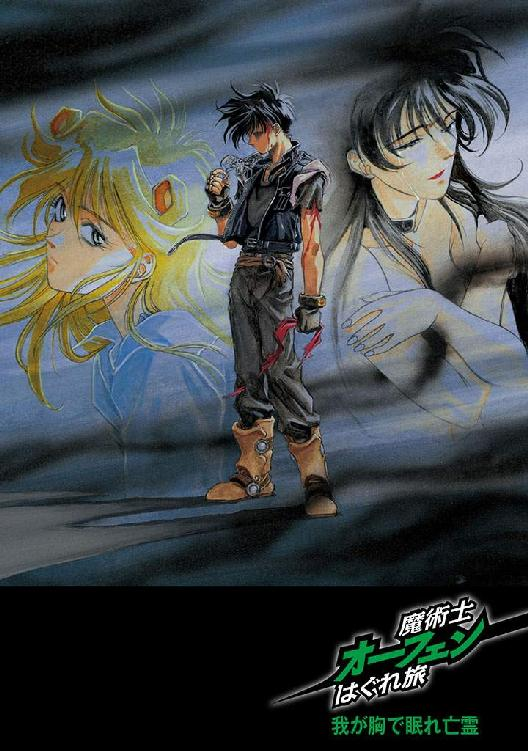

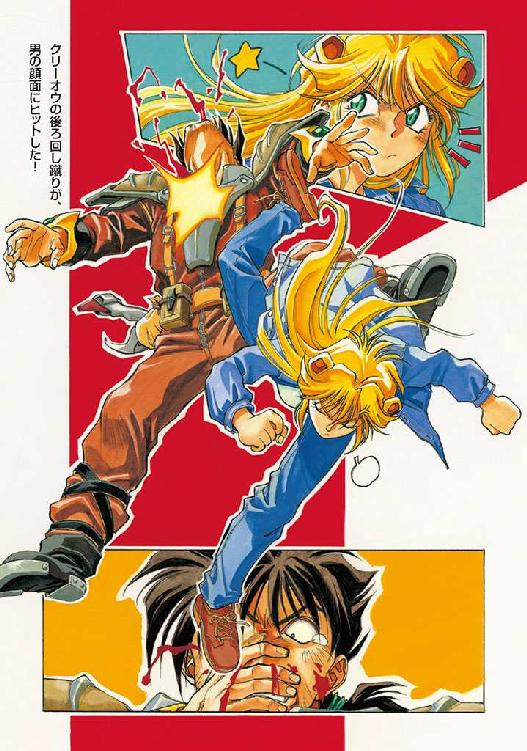
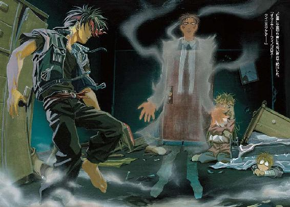
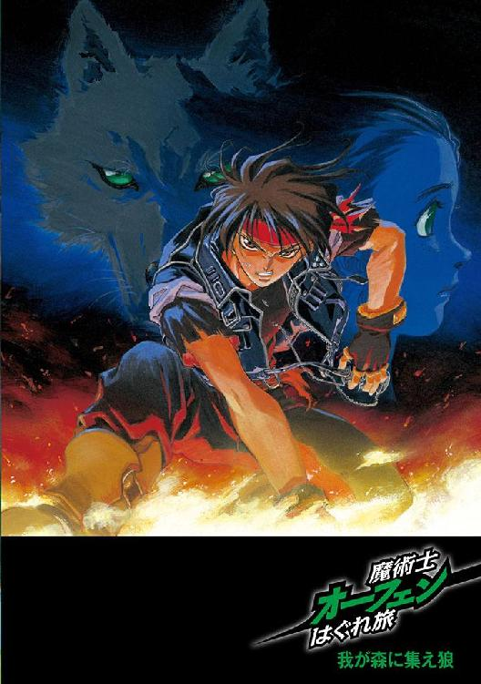
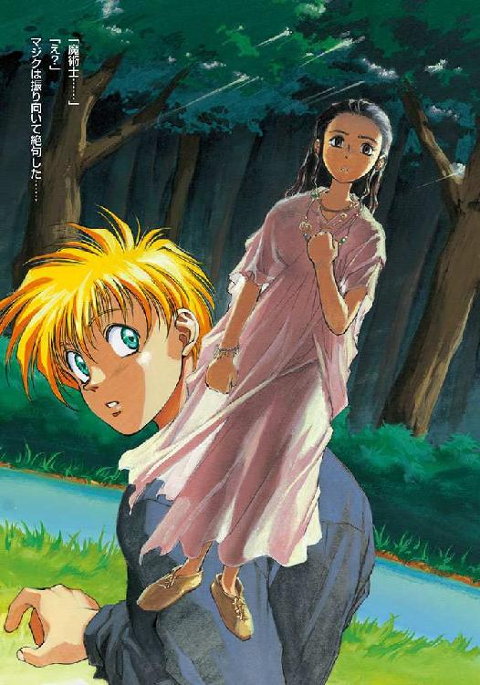
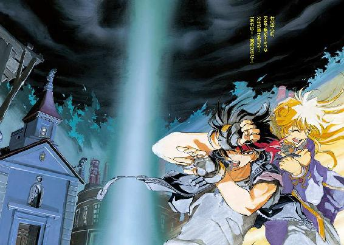
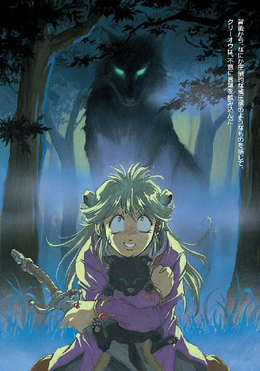
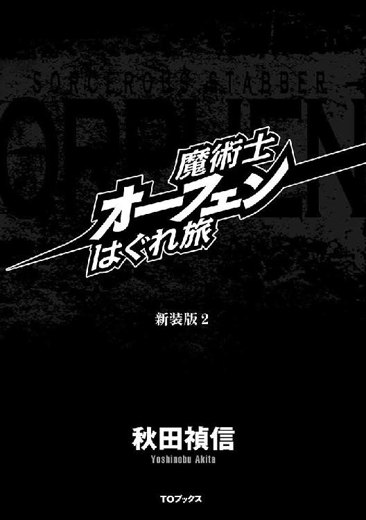
この作品は縦書きでレイアウトされています。
また、ご覧になる機種により、表示の差異が認められることがあります。
一部の漢字が簡略字で表示されていることがあります。
イラスト：草河遊也Ｙｕｕｙａ Ｋｕｓａｋａ
デザイン：ヴェイアＶｅｉａ
どこにでもあるような、ひとけのない酒場の奥まったテーブル──
『オーフェンという男に関するデータ──その①』
流麗な筆跡でそう記された、うすっぺらなファイルをながめながら、その女はくすっと笑ってみせた──血色のいい唇を歪めた、危険な笑みだ。こう正面から見るかぎりでは、そんなに歳をとっているようには見えない。二十代を迎えてから、誕生日をいくつか数えたという程度だろう。安っぽい娼婦のような痩せた顔に、鋭いナイフの傷痕のような鋭い双眸が輝いている。つややかな黒髪を腰まで伸ばし、それは身体にぴったりと吸い付くような黒革のボディスーツに溶け込むようだった。
〝家庭的〟なモノとは相いれないタイプの、だがかなりの美女には違いなかった。彼女はとがった爪でファイルの表紙を弾き、組んだ足のひざの上で肘を着いて、流し目を作った。媚態だが、そのまなざしは、はっきりと近づきがたい輝きを持っている。彼女が口を開くと、喉の奥からハスキーな声がもれた。
「......で？ この男をどうしろって？ ミスター・オストワルド？」
オストワルドと呼ばれた男──四十がらみの、白髪痩躯の紳士は、自分の名を呼ばれたことに、少なからずぎょっとしたようだった。よく似合っている白いスーツに包まれた身体を震えるようにゆすって、かたわらに立つ大木のような用心棒にちらと視線を投げてから、いささか遅れ気味ではあるが、余裕のある笑みを浮かべる。
「どうやってわたしの名を調べたのかな？」
女は、はすっぱな仕草でフンと鼻を鳴らし、
「お望みとあれば、あんたの屋敷の間取りと、あんたがひとりでバスルームに入る時間と、ボディガードが賭けポーカーで見張りの交替時間を忘れがちなことも教えてあげるわよ。この程度の情報は、その辺の路地で座り込んでいる連中に銅貨でも投げてやれば、いくらでも聞き出せるわ」
「なるほどね。たいしたものだ──いや、そんなはったりをかます度胸がね」
オストワルドは、くつくつと笑いながら繊細そうな指先を振ってみせた。
女は、気にせずに続ける。
「で、わたしを呼んだ理由は？」
「君のような女をはるばる大陸の反対岸から呼び寄せて、頼み事があるとすればひとつしかないだろう？ そうじゃないかね、ヒリエッタ」
女──ヒリエッタと呼ばれたその女は、ファイルを弾いた指先を自分の唇の先に当てて、さもおもしろそうに微笑した。あっさりと、
「そうね」
とつぶやく。彼女はファイルの一ページ目を開き、声を出して読み上げた。
「黒魔術士オーフェン。家名なし。推定二十歳前後。未婚。二親を含めた、すべての身寄りは存在せず......どこかの街に住民登録もしていない。《牙の塔》出身との情報もあるが、大陸魔術士同盟ではそれを否定しているし、実際《塔》の出身者名簿の中にはオーフェンという名前は存在しない。無職。ただし──」
と、ここまで読み上げてから、ちらりとこちらを見上げて声のトーンを変える──からかうように。
「非合法の金融稼業を営む」
「奴はモグリだ。わたしのシマで、好き勝手に商売をしている。許すわけには、いかん」
オストワルドは、白いスーツのすそをなでつけながらつぶやいた。
ヒリエッタが、にやにやと言い返す。
「あなたの部屋の中を飛び回る、目障りな羽虫ってわけね──別にたたきつぶさなくても、実害はないでしょうに」
「そうだろうな。だが、周囲へのしめしってもんがある。それに虫ケラは、ほかの虫ケラを呼び寄せるものだ」
「ならあなたは、どのくらい大きな虫ケラさんなのかしら？」
「貴様──」
と、低くうめきながら身を乗り出したのは、オストワルドではなくそのかたわらに立っていた用心棒だった。当のオストワルドが、さっと手をあげると、用心棒はその場で凍りついたように立ち止まった。
「やめておけ。この場でこの女を八つ裂きにするのは簡単だが、そうすると羽虫をつぶすのに別の殺し屋を用意しなければならん......それも〝愚犬〟ヒリエッタに匹敵するような......安値の暗殺者をな。そいつは面倒臭い」
と、用心棒から眼前の殺し屋へと、優雅に視線を移し、
「まあ......そういうことだ。ミズ・ヒリエッタ。あまりつまらん口をたたかんでくれ。部下はわたしの機嫌をとろうと必死だし、もともと血の気の多い男だ。いつわたしの制止を無視して飛びかかるか分からない」
「《牙の塔》出身かもしれない黒魔術士と取っ組み合いをするくらいなら、そこのでくのぼうと鼻血も出なくなるまで殴りっこするほうがマシじゃないかしら」
挑みかかってくるような凄絶な笑みを浮かべた彼女を見ながら、やはりオストワルドもにやりとした。
「だが、依頼は引き受けてくれるんだろう？ 聞いた話では〝愚犬〟が依頼を断ったことは一度もないとか......」
「もちろん」
と、あっさりと〝愚犬〟──ヒリエッタ。
その返事にオストワルドは満足したような笑みを浮かべ、ぐい、と体重を粗末な椅子の背にあずけた──ぎしぎしと、おおげさな悲鳴をあげる椅子と床を無視して、彼は言った。
「だが言っておくが、奴は手ごわいぞ──前にも何人か、わたしの手下を警告に送り込んだことがあったが、全員、半殺しになって帰ってきた」
「そりゃ──ゴロツキなんて何人送り込もうが、魔術士には通用しないでしょ」
ちらり──とオストワルドのかたわらで銅像のように固まった姿勢の用心棒に視線を投げながら、ヒリエッタ。用心棒の怒りの気配が盛り上がるが、さっきのオストワルドの制止もあったので、今度は表情をぴくりともさせなかった。
「なんだ......つまんないのね」
ヒリエッタは、心底残念そうに嘆息した。そして、椅子を押して立ち上がり、
「報酬は？」
彼女は額のことを聞いたのだろうが、オストワルドはわざと勘違いしたふりをして答えた。
「仕事が終わりしだい払う」
いくら？──とは、彼女は聞いてこなかった。
思ったとおりだった──愚犬ヒリエッタは、金のために殺しを請け負っているのではない。
もっとも、ではなんのためなのかというと、そんなことはオストワルドは知らなかったし、別に知りたいとも思っていなかった。
第一章 集いたる愚か者たち
その事件が起きたとき──マジクは馬車の中から缶詰をみっつほど持ち出したところだった。地面にあぐらをかいているような薪の上でゆらゆらと踊っている焚き火の近くに腰を下ろし、とりあえず缶切りで缶詰の縁をたたく。意味はないが、癖だった。
ラベルに記してある文字は、どうやら料理の専門用語らしくマジクにはよく分からなかったが、多分ソースに溶かした肉の缶詰だろうとマジクは見当をつけていた。前にも同じことを予想して、開けてみたら女物の下着が入っていたことがあったが。
缶の蓋に缶切りをあてがいながらマジクは、夕闇に影が落ちはじめた周囲の光景を見回した──そこは街道から数メートルばかりそれた林間地で、街道に面したほうに馬車を停めている。その陰に隠れるように焚き火しながら、マジクはひとりでゆっくり早めの夕食をとろうとしていたとこだった。
「別にバチは当たらないよな」
と、独りごちる。愛嬌のあるあごを、かしげるように上向かせて、
「クリーオウの作ったモノは食べられたもんじゃないし──多分、ちゃんとした設備でマトモな材料を使えば上等な料理なんだろうけど──お師様は、ぼくが薪拾いからもどらなかったときは、真っ先にさっさと食べちゃう人だし」
どちらかといえば少女じみた面影の、紅顔の美少年である。年齢は十四くらい、短いくせに風にもたなびく金髪は、純粋に色が違うだけではなく、髪質が細いせいで金色に見えるのだろう。澄んだ碧眼は、まるでわざと隙を見せているように目元がおっとりとしている。なんにしろ、黒を基調とした黒魔術士の格好が似合う手合いではないのだが、彼はしっかりとそれを着込んでいた。さすがに暑いので、黒のマントは馬車の中にしまってあるのだが。
缶の蓋が開いた。中身は、どろどろした青豆のスープが入っている。まあいいやと思ってマジクは、焚き火の中にそっと缶を押し込んだ。数分すれば、暖まるだろう。
と──背後にいきなり足音が聞こえて、さらにかん高い叫び声があがった。
「あー！」
しまった──と、マジクは身をすくませた。恐る恐るふりかえると、やはり後ろに、ブロンドを腰まで伸ばした色白の少女がこちらを指さして憤然としている。
「クリーオウ──」
と呼びかけたところで、彼女は無視して続けた。
「なにやってんのよ！ 今日はわたしが食事当番だって言ってあったでしょ！ なに、わたしの作ったもんは食べたくないってわけ？」
多分お師様ならあっさり「そーだよ」とか答えるんだろうな、とマジクは胸中で、ややうらやましげに思った。あの人は手料理の類いが嫌いだから、クリーオウの食事当番の日にはいつも姿を消している──今日みたいにだ。
だが、マジクが答えたのは、それよりは当たり障りのない言い訳だった。
「あ、あの、ちょっと待ちきれなかったんだ──」
両手をあげて弁解しながら、彼女を観察する。林の中を歩いたせいか少し汚れているジーンズに、上は、暑いせいだろう、バタフライイエローの袖なしブラウスを着ているだけだ。これは両方とも自前（といっても代金を立て替えたのはお師様だが）のようだが、この娘はなぜか、マジクの服を勝手に物色しては借りていく悪癖があった。
「待ちきれなかったぁ？ そう！ わたしの段取りが遅いって当てこすってるわけね？」
「そ、そういうつもりじゃあ......」
「じゃあ、どういうつもりよ！」
「だ、だから......」
もごもごとつぶやきながら、地面に座ったまま後退りして、マジクはクリーオウのごく単純に怒った顔を見返した──いつもいつも感情一直線のこの女が、どうもマジクは苦手だった。すねれば何日かはそのまま口も利いてくれないし、怒れば容赦なく殴り掛かってくる。よくまあお師様は、対等に付き合えるもんだ。多分、似た者同士ってことなんだろうけど。
「んで？──ど・う・い・う・つもりだってのよ！」
詰め寄ってくるクリーオウに、牽制するように右手をあげながら、マジクは、ほぼ絶望的に天を仰いだ。
◆◇◆◇◆
その事件が起きたとき、オーフェンは森の中にいた。馬車を停めたあたりから、数百メートル離れたところである。
彼が森の中にいる理由はといえば、別にクリーオウの手料理から逃げ出すためというわけではなかった──実際、彼はクリーオウの用意するものを、マジクが言うほどひどい代物だとは思っていなかった。彼が自炊していたころは、もっとひどいものを食べていたのだから。
だから彼は、もっと別の用事で森の中にいたのだった。
やぶにらみのように目のつりあがった、どうにも皮肉っぽい造作の若者である。黒髪をバンダナでとめるようにしている。黒い、戦闘向きの格好をしているが、武装はしていない。腕のいい黒魔術士にとっては、武器による武装というのは、さほど必要性のあるものではなかった──自身の魔術が最大の武器となり、防具となる。もっとも、腕がよくてなおかつ隙のない魔術士であるなら、普通は身体のどこかに隠し武器のひとつふたつは忍ばせているものだが。
彼の服装は、普通の魔術士たちの戦闘用のスーツとはだいぶ趣を異にしていた。彼が着ているのは革をなめしたジャケットのようなものだ。普通、魔術士は全身をぴったりと覆うような格好を好む。つまり、服の下に防御用の鎖を仕込むこともでき、また森の中でも寄生虫の類いに餌食にされない装備というわけだ。もっともオーフェンは別に傭兵ではないし、戦闘能力を商売の道具にしているわけではない。彼が唯一、大陸の魔術士たちと接点を持っているとすれば──それは胸元にぶら下がっている、剣にからまった一本脚のドラゴンの紋章、大陸中の黒魔術士の最高峰《牙の塔》出身者の証しのペンダントだけである、とも言える。
と──
オーフェンは足を止め、あたりを見回しもせずに言った。
「来たぜ」
「見れば分かるわよ」
がさ......と、森のしげみの左側のほうから、物音がする。下草をかきわけて進み出てきたのは、身体の線をぴったりとトレースするように張り付いた、全身革スーツの女だった。
「あなたが、オーフェン？」
「見れば分かるんだろう？」
オーフェンは鼻で笑いながら、現れた女の全身を見やった──やけに艶っぽい黒髪が、それ自体が別個の生命体だとでも言いたげに、ゆるやかに、そして自然に女のスーツを包んでいる。痩せこけたほおの間に縮こまっているみたいな真っ赤な唇が、わずかに舌の先端を見せつつ、開いた。
「わたしがヒリエッタ。招待状はとどいたみたいね？」
「数キロ前の村で、ガキが持ってきたやつだろ？」
オーフェンは答えつつ、それまでズボンのポケットにつっこんでいた手を出した。
女──ヒリエッタは楽しむようにうなずいてみせた。
「ええ」
「なら受け取った。で、読んだ。だからここにいる」
「あらあら。色気のない返事ね」
「用件はなんだ？」
「分かってるんでしょ......？」
ヒリエッタがそう言った瞬間──オーフェンは後ろに跳んでいた。そのすぐ後を、銀色の閃光が追いかけるように走る！
いつの間にか彼女の手の中に現れていた大型のナイフを見送りながら、オーフェンは身構えた。
（こいつ──）
内心舌を巻きながら、踊りかかってくるヒリエッタの身体のわきをすりぬけ、避ける。彼女は攻撃に二度失敗してもさほど動揺した気配もなく、再度こちらに向き直ってきた。右手に逆手で構えたナイフが、木々の間を縫ってとどいてきた夕日を反射して、血の色に染まっている──
オーフェンは、すっと息を吸い、胸中でうめいた。心当たりなら、ないこともない。
（オストワルドの傭った始末屋ってトコか？）
それは図星だったのだが、それが確認できるわけでもなかった。
（なんにしろ、殺し屋に狙われてしまった俺がいるのですってか──くそ、ゴシップ紙の見出しじゃあるまいし！）
彼は右腕だけを無造作に女に向け、叫んだ。
「我が指先に琥珀の盾！」
刹那、彼が手をかざした空間に空気が圧縮されていく──たたけば音でも跳ね返ってきそうな空気の壁にぶつかって、ヒリエッタが数歩ほど押しもどされるのが見えた。普通なら、なんの能力も持たないただの人間が武器を持って襲いかかってきたところで、魔術士に指一本触れられるものでもない。が──
（職業的暗殺者となると、話は別だ。どんなテを使ってくるか知れたもんじゃねえ）
というか正確には、そういった職能者は、勝算がないかぎりは行動を起こしたりはしないものだ。だから、彼らに襲われたときは、必ず罠があると思っていたほうがいい。
そして罠というのは、かけられればほぼ確実にひっかかってしまうものだし、そうなれば十中八九、死は避けられない。だからオーフェンはなによりも──魔力に勝れたドラゴン種族などよりも──暗殺者を恐れたし、いつも十分に注意を払っているつもりだった。
（つっても......警告もなしに殺されるとは思ってなかったからな。一人でのこのこ来ちまったのは失敗だったか）
オーフェンは舌打ちしながら、その場に踏みとどまった。空気の壁に弾き飛ばされて向こうに背中から転ぶヒリエッタを見ながら、本能はとにかくこの場から逃げ出せとせっついてくるのだが、下手に動くのは危なかった。
（罠にかからないための心得──できるかぎり、身動きするな）
自分で自分に言い聞かせ、動かないまま、倒れた女暗殺者に向けて指さす。
「我導くは死呼ぶ椋鳥！」
ゔゔん......と、衝撃をともなった音波が大気を伝播して、周囲の地面ごと暗殺者のしなやかな身体を包み込んだ。地面そのものが細かい振動にブレるように揺れて──起き上がりかけていたヒリエッタの身体も、電流を通されたように衝撃を受けて、びくんと跳ね上がる。
そしてそのまま、動かなくなった。
しん......と静まり返った森の中で、オーフェンはまだなお身構えたまま、だらりと地面に横たわる暗殺者を眺めていた。白目をむいてぴくりともしないが──
「おい、本当に気絶したわけでもないんだろが？」
オーフェンは油断なく呼びかけた。
「そうでないんなら、あまりにもお粗末すぎるぜ──それとも、こっちをなめてたのか？」
案の定、数秒もすると、彼女はむっくりと起き上がった。口元ににじんだ血を革のスーツのそででぬぐいながら、取り落としていたナイフを拾い上げる。
「ひっかからないものねえ......でも本当に何秒かは気絶しちまってたみたいだわ」
「威力は抑えたが、直撃したんだ。しばらく身動きはとれねえよ」
「どうかしら？」
ヒリエッタは不敵にそう言うと、ぱっと跳ね起きた──こちらが唖然としているうちに、もうナイフを構えて斬りかかってくる。じゃっ──という音が確実にしたわけでもないが、鋼鉄のナイフが風を斬る気配は、だいたいそんな感じだった。
後方に身体を倒してそれを避けながら、オーフェンは悲鳴をあげた。
「ンな馬鹿な──！」
（魔術の直撃をくらえば、馬だって昏倒するんだ。人間が動けるわけがねえ──）
だが現実に、女は立て続けに鋭い切っ先を繰り出してきている。オーフェンは攻撃をすりぬけつつ、素早く彼女の懐に飛び込んだ。右手を彼女の下腹あたりに当てて、叫ぶ。
「我は裂く大空の壁！」
ざむっ──！ 彼が手を当てたあたりの空気が、鋭い真空へと変わる──と、その真空へと急激に空気が流れ込み、衝撃となって女暗殺者の身体を吹き飛ばした。本来なら、少し太めの木の枝くらい両断するほどの切れ味があるはずだ。が──
衝撃で数メートルも吹き飛ばされ、木の幹にたたきつけられた彼女の革のスーツには、傷ひとつついてはいなかった。もっとも、後頭部から木に激突した彼女自身は、軽い脳震盪でも起こしたらしく、頭を振りながらふらついているが。
（もしかして......）
オーフェンは思い当たり、つぶやいた。
「死んでも恨むなよ」
と、右手を彼女に向けて突き出す。
「我は放つ光の白刃！」
かざした右手の先から、純白の光の奔流がほとばしる。威力をしぼった光熱波は一条の槍のようにヒリエッタの下腹に突き刺さり、轟音をあげて爆発、炎上した。ぶぉうっ......と熱された空気が舞い上がり、砂塵を吹き散らす。が──やはり、暗殺者は無傷で立っている。爆発の衝撃がきいたのか苦しげに腹を押さえてはいるが、やはりスーツそのものには傷どころか焦げ目すらついていない。
「くそ、やっぱり──」
と、オーフェンは毒づいた。
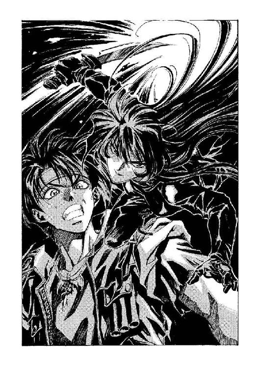
「なんかありやがるな。そのスーツ」
「そういうこと──並大抵の攻撃が通用する代物じゃないわよ」
熱気と衝撃でふらふらになりながらも、暗殺者は答えた。炎のせいで焦げた髪の先を無造作にナイフで切り落としながら、前に出る。
オーフェンは、そろそろ物音を聞きつけてマジクらが駆けつけてきてもいいころだろうと、なかば希望まじりに思いながら、言った。
「つっても、中身は生身の人間だ。頭を吹っ飛ばせばいいだけのことだろ」
「なら、そうすればいいじゃない？ 正当防衛で罪にはならないでしょ」
ヒリエッタが余裕げに、ナイフをかざしながらそう答える。口元には、笑みすら浮かんでいた。
オーフェンは、ちっと舌打ちして、
「最近の法律じゃ、なにをやっても過剰防衛になっちまうんだよ。特に、あんたの首なし死体の写真を陪審員たちが見たら──」
「なら、いいコトを教えてあげる──」
ヒリエッタは、ばさりと黒髪を跳ね上げると、
「あなたの暗殺をわたしに依頼してきたのはね、オストワルドという男よ。ザナドュ・オストワルド」
「あのトトカンタの悪名高い高利貸かよ。そりゃ、奴のシマで多少は商売したがね。それはそうと、そんな簡単に依頼人の名前を明かしちまって構わねえのか？」
「いいのよ」
彼女のにっこりした笑みは、多分どちらかというと、魅力的な部類に入っているとオーフェンは判断した。
彼女は、ひどく気楽な口調で続けた。
「いいのよ。わたしの依頼人は、ひとりだけじゃないから──そうね。オストワルドの依頼は、ついでってトコ」
「......じゃあほかにも、あんたに俺の暗殺を依頼した男がいるってわけか」
「残念。あなた、世の中の誰も彼もが自分を殺したがってるとでも思ってるわけ？」
ヒリエッタはそのまま表情を変えずに──手にしていた大型のナイフを投げつけてきた。
「──くっ──！」
オーフェンはわずかに動いて（というより、一瞬のことで『わずか』以上の動きなどできるわけがなかった）ナイフをかわしたが、もともとそのナイフはよけるまでもなく標的を外していた。オーフェンがそのことに気づいたとき、彼の背後で悲鳴があがる。
ふりかえると、中年の角張った顔をした男が、喉の下からナイフを突き上げられたような格好で血を吐き出している。男の手には、小型のボウガンが矢をつがえられた状態で構えられていた。
即死状態で地面に倒れる男にオーフェンが唖然としていると、ヒリエッタは気楽に両肩をすくめて種明かしをした。
「オストワルドは用心深い男よ──わたしのほかにも何人か殺し屋を傭ったらしいわ」
「......ならどうして、あんたがそのお仲間を殺したりするんだ」
「言ったでしょ？ オストワルドの依頼はついでだって」
彼女は事もなげに言うと、ナイフを回収するためか、すたすたと大股でオーフェンのわきを通り抜けた。その後ろ姿に向かって、オーフェンは聞いた。
「よく意味が分からねえんだがな」
「ようするにね、オストワルドじゃなくって、わたしの本当のスポンサーが望んでるのは──腕の立つ魔術士をひとり、彼のもとに案内すること」
腑に落ちない気分で、オーフェンは髪をかきあげた。
「ならなんで、俺を襲ったんだよ」
「あなたの腕を試したかったのよ。それで、ひょっとしてあなたが死んじゃったりしたら、オストワルドの依頼を果たしたってコトで報酬をもらえるでしょ？ だから、彼の依頼はついでなの。なにしろ、あなたが本当に優れた魔術士だとしたら、わたしが敵うわけがないものね？」
彼女が最後の『ね？』を質問調子で発音したので、オーフェンはなにか返事をしなければならなくなった。が、彼は、その代わり疑わしげに質問した。
「本当のスポンサーってのは、誰のことだ」
「さあ......ね！」
ヒリエッタがそうつぶやきながら、男の死体からナイフを引き抜く。絶命した死体からはもう血が噴き出るようなことはなかったが、血まみれの男の死体を抱き起こしただけで、既にヒリエッタのスーツは血だらけになっていた。
ほおに血のついた顔で、彼女がふりむいた。そして言った。
「依頼人の名前をそうそう簡単には明かせないでしょ？」
「よく言うよ」
オーフェンは鼻を鳴らして、彼女の姿を見つめた。実を言えば、こんな悪趣味──殺し屋と組んで仕事をするだと？──に付き合うつもりなど毛頭なかった。ただ、顔についた血を拭う彼女を見ながら、オーフェンは、ヒリエッタという名前に心当たりがあることを思い出していた。
〝愚犬〟ヒリエッタ。もし噂が本当であれば──
魔術士殺しの専門家である。
◆◇◆◇◆
その事件が起こったとき、ドーチンはその発生現場に意外と近いところにいた──が、だからといってどうというわけでもなかった。むしろ──
「さあさあさあ！ お坊っちゃんもお嬢ちゃんも、寄ってらっさい見てらっさい！ ご当地におきましては本邦初公開！ ボルカン商会の秘蔵っ子、恐怖！ 蛇男でございます。お代は見てからのご善意でということで、ちょっとそこ行くお兄いさん！ これを見逃しては七代までの損！ 六代祟ってなお足りない......」
外からは、そんな兄の呼び込みの声だけが聞こえてくる。なんにしろ、箱の中は暗く、せまかった。しかも兄がどこから拾ってきたのか知れないその木箱は、もとはなにが入っていたものやら、妙に臭う。
「六代と申しましては曾孫のそのまた孫、それでも足りずにもう一代気張らねばならぬという、こりゃとんでもない月日を言うわけでございます。それだけの月日を待つために、いったい何組のご両人が切ない夜を過ごさねばならないのか......」
なにを言っているんだかよく分からないが、とにかく声からすれば、兄は上機嫌で呼び込みを続けている。つまるところ、順調に見物人が集まっているらしい。あとはファンファーレとともに兄が木箱の蓋を開ければ、このくそくだらない興行は終わりというわけだ。
（まったく）
と、ドーチンは胸中でため息をついた。
（なんなんだ。どーしてぼくが、こんなメにあわなくちゃなんないんだよお）
そもそも彼は、この見世物のアイデアには最初から反対だったのだ──いくらここが都会から多少は離れた、辺境の村だからといって、こんな子供だましの見世物に金を払う者などいるわけがない。
また嘆息し、分厚い眼鏡を外してから、いつも着ている毛皮のマントのすそでふいて、かけ直す。
彼が実家を出ることになったのは二年前だが、我ながらよくもまあ、命が続いているものだと思う。この二年間というもの、兄が持ってくる、あからさまにいかがわしい商売話に乗ってはその後始末に追いかけまわされるという生活をくりかえしている。それもこれも、兄があの蛇みたいにしつこい人間の金貸し魔術士に多額の借金をしているせいなのだが......
と、そこまでぶつぶつと考えたとき、箱の外では兄が大声で叫んでいた。
「それではっ！ とくと刮目してご覧ください──世にも哀れな蛇男にございます！」
ドーチンは、ぎくっと身体を震わせたが、もう遅かった。箱の正面が、兄の手によって外される。真っ暗な箱の中に、真っ白な陽の光が飛び込んできた。
村の広場には、ドーチンが予想していたよりはるかに多い見物人が集まってきていた──さすがに初夏の季節だけあって働き盛りの男というのはいないが、昼下がりに暇を持て余した主婦らしき中年の女や、それに連れられた小さな子供、昼休みに教会（こういった辺境では、学校を兼ねていることが多い）から抜け出してきた少年少女らといった面々だ。開け放たれた箱の前には、兄のボルカンが蓋を片手に聴衆の反応を待ってじっとしている。いつものようにぼさぼさの頭で、毛皮のマントに帯剣した、身長百三十センチほどの『地人』である。本来は大陸の南端マスマテュリア──地人領──からは足を踏み出したりしないので、人間領で姿を見かけることはほとんどない。数百年前にこの大陸に入植してきた人間たちとは違い、まったくの土着種族である。もっとも、いつの間にか逆に、彼ら種族のほうこそ、人間たちにとってもっぱら厄介者と目されるようになっていたが。
ドーチンもまあ、兄と似たような格好をしていた。と、それに加えて兄がどこからか拾ってきた大蛇の抜け殻を帽子のように頭からすっぽりとかぶっている。聴衆の視線にひたすらに耐えながら、ドーチンは赤面し、投げやりな棒読み口調で声をあげた。
「う......うお！」
............
やにわ、静まり返っていた広場が──
うおおおおおおおおおおおおっ！
歓声が湧き上がる。
「受けたっ！」
ガッツポーズをとる兄を横目で見ながら、ドーチンはどぎまぎして、歓声に耳をやった。
「すごいよママ！ これが父ちゃんの言ってた『ほうろうするらくごしゃ』ってやつだね！」
「見世物芸なんて、もう一世紀も前になくなったと思ってたわっ！」
「こらこら、マイケル。駄目よあんまりじろじろ見ちゃ。口から飛び込んでくるかもしれないでしょ」
（......どーも、狙いとは違う受け方をしてるみたいだけど......）
だが、ボルカンのほうはまったく気にもしていないか、さもなくば気づいていないらしい。革袋の口を広げつつ、
「さあみなさん！ この哀れな蛇男、真人間にもどるための手術代かせぎにご当地をはじめ各地を放浪しているのでございます。みじめ哀れとお思いになったのでしたら、どーかこの袋にみなさまのご厚意をいただきたく──」
兄がにこにこと袋を開けたときには、もう見物客のほとんどはこちらに背中を向けていた。みな、各々の帰途に散らばりながら、
「いやあ、笑った笑った」
「たまには他人を見て笑うのっていいわよね」
「まさか今時、あんなのを臆面もなくやる奴がいるとは思わなかったよ」
「ああいうのは、保存しておかなければならないわよね」
「昆虫採集用の防腐剤、ぼく持ってるよ！」
「............」
一転して、がらんと人気のなくなった広場にぽつんと残り、ドーチンは兄の背中を見ながら三度嘆息した。かぶっていた蛇の抜け殻をずるりとわきに落として、
「だからやめようって言ったのに」
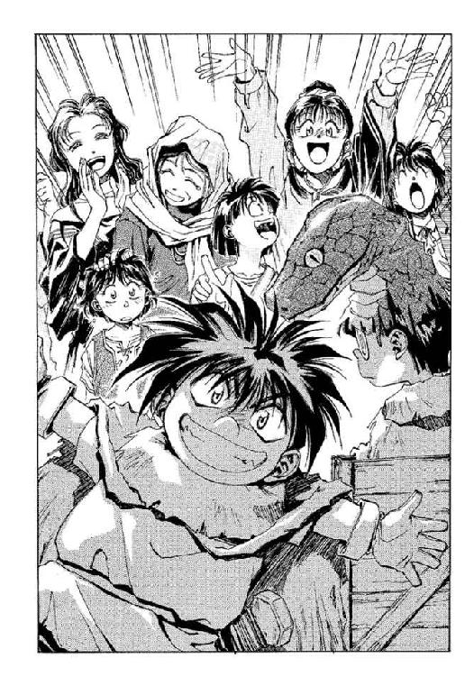
だが兄は、まるっきり懲りてない表情でふりかえると、あっさりと言った。
「うむ。やはり当初の予定通り『怪奇！ ナイフ刺しても死なない男』にすべきであった」
「だから、それをやるのは誰なのさ」
「当然お前だが......やっぱそれよりも『目が光る！ 悪霊ドーチン業火の中に消える』にしておいたほうがよかったかも......」
「......なんでぼくの名前を使うんだよう」
「なにを言うかっ！ 新米芸人の悲劇を知らんのかっ！ 起用されるだけありがたいと思えっ！ ネスラー試薬で溶かし殺すぞ！」
そう怒鳴るボルカンに殴り倒されて、ドーチンは、あきらめたような表情で鼻血をぬぐった。
頭をふりながら起き上がって、あたりを見回す。広場は村のほぼ中心に位置していて、古くなった教会の真ん前にある。村はそれほど大きくもないが、かといって小さくもない。広場から蜘蛛の糸のようにまばらに伸びた細い小道が、あちこちに点在する家々へと続いていた。これだけ大きければ、村というよりは街と呼んだほうが適当かもしれない。もっとも、人間の役所では、市壁の内側に存在するものでなければ、どれだけの規模があろうとも『街』とは認めないことになっているはずだ。
村というのは街道沿いによく点在している。旅人が往来する必要性から、村にはたいてい宿を経営する一家がひとつはあった。ドーチンらは数日前から村外れの家の納屋に忍び込んで寝泊まりしていたのだが、それに気づいた村人が、家事の手伝いをするなら無料で泊めてやってもいいと、村で唯一の宿屋を紹介してくれたのだ。で、彼らはそこに滞在しながら、当面の生活費を稼ぐために見世物商売を始めたわけである。今日が初日だが......
と、ドーチンは、足元に落とした大蛇の抜け殻を見やった。とてつもない代物で、頭だけでも一抱えほどの大きさがある。これの実物となれば──体長で十メートル、いやあるいは十数メートルにはなるかもしれない。
「......にしても兄さん、こんな抜け殻、どっから拾ってきたのさ。こんな大蛇、ここらにいるわけないんだけど」
「うむ」
と兄は、空っぽの革袋をひっくりかえしたりもてあそびながら自慢げに答えた。
「その空っぽの木箱といっしょに、近くの森に転がっていたのだ」
「う～ん......」
ドーチンはうめいて、兄が指さすとおりに木箱を見やった。人が──といっても、地人がなんとかひとり入れるくらいの大きさで、縦横一メートルくらいの立方体である。がっちりと作られていて、この蓋が簡単に取り外せるように改造するのは大変だった。
だが、それはそれとして、ドーチンとしては微妙にそこはかとなく危機感を覚えずにいられない──
「どうした、ドーチン。今日のお前の失敗を糧に、明日からの興行計画を練り直さねばならんとゆーのに」
「いや、別に、なんでもないんだけど......」
ドーチンはそう答えて、またちらりと木箱を見やった。その木箱の表面は風化したように、うっすらと汚れていたが、赤いペンキの手書き文字でなにやら記されていた。製造ナンバーらしき数字は、ゼロが五個ほど並んだあと、一となっている。その横の年月日──製造年月日？ は、だいたい十年ほど前になっていた。さらには、その下に注意書きがある。天地注意、ワレ物危険、横置厳禁、角突注意、等々......
そして最後に『危険──開封厳禁』と記されていたのだ。
◆◇◆◇◆
その村で事件は、誰にも気づかれずにひっそりと起こった。キンクホール・ビレッジ。誰も気にとめない、ただの辺境村。
そしてその事件が起きたとき、本来の当事者は、とっくの昔に死んでいたのだった。
第二章 罠にかかる愚か者たち
「たまに思うんだけど、オーフェン」
「俺も、たまに思うんだけどな、クリーオウ」
ふたりは互いに同時に言った。
「あんたって、女たらしだわ」
「お前って、どーしよーもない我がまま娘だな」
しん......と、馬車上が静まり返る。ぽくぽくと足音を立てる馬までもが、御者台で見えない火花を散らすふたりに寒気を感じたらしい。オーフェンは握っている手綱から、二頭の牝馬の動揺が伝わってきたような気がした。
自分のわき──御者台の横に、ちょこんと座った小柄な娘のほうは見ないようにしながら、オーフェンは低くつぶやいた。
「どうして俺が女たらしなんだよ」
「なんでわたしが我がままなのよ」
そのまま、会話がばったりと途絶える。馬車と同じ速度で周りの風景は後ろへと流れていく。風が吹き、さわさわと下草をざわめかせ、街道の裸の地面からわずかな砂塵を引きはがす。太陽は、そろそろ南中するころか。
オーフェンは苦々しく、昨夜のことを思い出した──マジクとクリーオウが夕食のことでなにやらもめているところに、血まみれの革スーツを着たヒリエッタを連れ帰ったときには、さすがにどう説明したものか迷ったのだ。結局、ありのままを話した。よくは分からんが、どうやらロハで俺の面倒を見てくれるらしい、と。
翌朝になって、ヒリエッタは姿を消していた。書き置きを一通、オーフェンのシュラフの枕元に置いて。
書き置きには、彼女にはなにやら用事があるから急ぐということと、もし彼女の依頼人に会うつもりがあるのなら、ここに来いという伝言が書き残されていた。
が、それはともかくとして、その書き置きはまずかった──多分、クリーオウは妙な誤解をしているに違いない。少なくとも彼がヒリエッタと一晩中いっしょにいたくらいには勘違いしているだろう。直接それを口に出したりはしないが。
「知り合ってから一か月近く経つけどね──」
クリーオウが、まるで指でつまんだように唇をとがらせて、続ける。
「まずわたしのお姉ちゃんにプロポーズしたでしょ」
「あれは狂言。しかも発案者はボルカンの極楽ダヌキ」
「街道わきの宿屋で、ウェイトレスのおしりさわったわ。めちゃグラマーな」
「あれは純然たる誤解。いや、ほら──ボリュームがある分、手がぶつかる確率も大きいだろ」
「この前のアレンハタムでも──」
「ステフのことを言ってるなら、あいつはただの友人」
「違うわよ。甘いものなんてめったに食べつけないくせに、クレープなんて買ってたでしょ。あれは絶対に女をひっかけようとしている目付きだったわ。売り子が可愛かったもの」
「ありゃ、お前に買ってやったんだろ。なんだかお前が機嫌損ねてるから。なんだ、それで怒ってたのかよ」
「違うわ。その前に、馬車に乗ってたお嬢さまみたいな女に、手を振ってたでしょ」
「よく見てるな、お前......でも、先に手を振ったのは向こうなんだぜ」
「無視すればいいじゃない！ それに、最近じゃ、宿に泊まるたび、夜な夜なマジクとふたりで部屋にこもってわたしを閉め出したりするでしょ。不潔よ、そーゆうの」
「あのなあ！ 魔術の講義に、お前なんかが参加したってしょうがないだろ」
「............」
それを聞いてクリーオウが、しばし口を閉じる──やがて彼女は、いきなり思い出したように瞳を輝かせると、それまでの不機嫌もなにもかも忘れたように明るい声をあげた。
「わたしも魔術が習いたい！」
「駄目」
即座にオーフェンは言い放った。
不服そうに、クリーオウが身を乗り出す。
「なんでぇー？」
「無駄だから。それにお前、月謝払えねえだろ。一応あれでもマジクの奴は、親父から月謝を出してもらってる、歴とした俺の生徒なんだぜ？ 毎月、街の信託銀行に振り込まれるんだ」
だから月に一度は、大きな街に立ち寄らなければならない。しかも伝書鳩でトトカンタの銀行と連絡を取るのには数日の時間が必要だから、その期間は滞在する必要があった。
街道のわきに野宿するのと違って、宿泊料がかかって仕様がない。
クリーオウは、しばらく考え込むように虚空を見つめてから、聞いてきた。
「月謝はともかくとして......なによ、その無駄っていうのは」
「資質のない人間には魔術はできない。これは遺伝だから、どうしようもない。生まれ変わる以外にはな」
「生まれ変わる、かぁ......」
クリーオウは言われて、憧れるような声音を出した。こうして見ていると、そこらにいる、ただの可憐な少女に過ぎない。が──と、オーフェンは嘆息とともに付け足した。こいつが剣を抱えて大暴れするところを見たことがなかったら、俺も勘違いしていたかもしれんがね。
「生まれ変わるなら、わたし、魔術士がいいな」
きゃらきゃらと身体を横にゆすりながら気楽に言うクリーオウに、オーフェンは横目で視線を投げながら聞いた。
「生まれ変わりなんて信じてるのか？ だが、そいつがあるとして、俺だったら金持ちの次女に生まれたいね。なんの苦労もなく暮らして、間違ってもモグリの金貸しの借金取り立て道中にくっついてきたりはしねえだろうよ」
「なによそれ。仕返しのつもり？」
「さてね。別に、勝手についてきて、しかも俺の金くすねて服やらなにやら買ったりしても、お前がどーしよーもない我がまま娘だなんて言わねえよ。ただ、なんで俺にくっついてきたりしたんだよ」
「ん～？」
クリーオウが困ったように眉を寄せるのが見えた。そのまま、無視して黙り込むかと思ったが、そうではないらしい。単に言うのを迷っていただけのようだった。彼女は、かなり言葉を選んでから、しかも全然関係ないことを答えた。
「わたしね、オーフェンって、絶対そういうことを聞かないって思ってたんだ」
と、指先であごをかく仕草をしてから、続ける。
「でもね、しばらくしたら絶対に聞いてくるだろうとも思ってたの。だから、用意していた答えがあるんだけど......」
「なんだよ、それ」
「うん。つまり、オーフェン、ちょっと前にわたしに言ったでしょ。わたしのこと『相棒』だって」
「............」
オーフェンは答えなかった。ただ、ぎくりとするのが自分でも分かった。
クリーオウは構わずに続ける。
「うまく言えないんだけど、わたしってほら、お嬢様だったでしょ？──なによ、その疑わしげな目は」
「いや別に......」
オーフェンは目をそらした。
「まあいいわ。それでね、わたし、オーフェンみたいな人を見たのは、初めてだったわけ。なんて言うの、ヤクザ？」
「......お前な」
「冗談よ。とにかく、そのとき思ったの。オーフェンと対等になりたいって──そうよ、『相棒』ってやつよ」
「......なんでだよ」
しわがれ声で、なんとかつぶやく──確かにオーフェンにも、そういうことを言った記憶はあった。単に軽い気持ちで言ったのだが、恐らく誤解されてるだろうな、とは思っていたのだ。
「だってさ、わたしはオーフェンのことすごい人だって思うから、そのオーフェンにも同じように思われたいの」
「......いや、お前はすでにすごいっちゃすごい奴なんだが......」
「そう？」
クリーオウは、にこっと笑いかけてきた。が、オーフェンはとても笑い返す気にはならなかった。思い切り急所を針で突かれたような気分になっていた。
（よーするにこいつ、俺に一度ぎゃふんと言わせないかぎりは満足できねえって、そう言ってるんじゃねえか）
と......
「お師様ぁー」
円筒を縦に割って横たえたような馬車の荷台の幌から、マジクが顔を出した。クリーオウが、きつい視線でにらみつけるのが見えた──多分、顔を出さないように命令されていたのだろう──が、むしろオーフェンにとっては救いの神だった。どうやら暑苦しい幌の中でじっと頑張っていたらしく、汗だくのマジクは、もう限界だというように口を開いた。
「まだなんですかぁ？ そのキンクホールとかいう村。そこに泊まるんでしょ？」
「ああ」
と、オーフェンはズボンのポケットからヒリエッタの書き置きを取り出した。それを片手で開いて目で追いながら、
「彼女の伝言でな。とりあえず、その村で落ち合おう、だとさ」
書いてあったのはそれだけではないのだが、くしゃ、と丸めるように紙をたたむと、オーフェンは手早くまたそれをポケットにしまい込んだ。
「なにかあるの？ そのキンクホールって」
「さあな。聞いたこともない。いや......有名な魔術士がひとり、そこに隠棲してたって聞いたことがあるが」
「魔術士？ やっぱり《牙の塔》の出身なんですか？」
と、これはマジク。オーフェンはかぶりを振って答えた。
「ああ。だが、なんだか突拍子もない研究に取り憑かれていたとかなんとかで《塔》を追放されたのさ。それとも、長老の秘書に手を出したんだったっけかな？ とにかく、邪道とか外道とか呼ばれながらも、その村で研究を続けていたらしい」
「......なんか、過去形でしゃべってるみたいですけど......」
汗をぬぐいながらつぶやくマジクに、オーフェンは別のポケットからハンカチを取り出して放ってやりながら、答えた。
「ああ、もう生きちゃいないだろう。死んだって噂も聞いてねえけど。《塔》を追放されたのが五十年近く昔のことで、生きていたら今年で百歳以上になるはずだからな。生きている可能性もあるが......」
「来年で百二十歳だっていうお婆さん、わたし知ってるよ」
「はいはい」
オーフェンはクリーオウの頭をぽこんとたたいて返事しながら、やれやれと胸中で安堵の吐息をした。なんにしろ、ここまで話がそれれば、クリーオウの頭の中にはもはや『相棒』のことなど残ってはいないだろう──そういう少女だ。もっとも、腹の中でなにを考えているのかは知れないが。
ともあれ安心しながらも、痛む歯に触ってみるような感覚で、オーフェンはポケットの中にある、ヒリエッタの書き置きに思いを馳せた。マジクやクリーオウには言っていないが、その安物の紙には、もうひとつ、恐らくは重要であろう伝言が残されていた。いかにも冗談めかした一文で。
『本来のスポンサーの依頼だろうと、オストワルドの依頼だろうと、わたしは全然かまわないんだけどね？』
つまりキンクホールに来なければ殺す、という脅迫だった。
キンクホール・ビレッジの近くまで街道を馬車で進む。村へと続く脇道に入って、遠くの丘の陰に真っ白い小さな教会が見えはじめたとき、クリーオウと交替して御者台の横に座っているマジクが感嘆の声をあげた。
「うっわー」
「？ どした？」
わけが分からずに、オーフェンは聞いた──別に村の光景は変わったところもなく、ただの辺境の村落然としている。ただただ広がる麦畑は夕日を浴びて、まるで刈り入れどきのような黄金色に染まっていた。辺境の、とは言ってもひなびた過疎地という雰囲気ではなく、むしろ都市近郊の郊外といった風情である。まあ実際にここは、キエサルヒマ大陸の四大都市のひとつ、古都アレンハタムと百キロとは離れていないのだが。
進むうちに立派な門構えの瀟洒な屋敷や、小ぎれいに掃除されていそうな、小さな学校、中央から辺境村の治安維持の任を授かってきた派遣官の詰め所や、小さな農場なども見えてくる。マジクよりいくらか年下であろう子供が、干し草をフォークで突き刺した姿勢のまま、肩越しにじっとこちらを見つめていた。子供の足元には年老いたシェパードが寝そべっている。どうやら、本来の羊追いの仕事は子供にでも任せて本人（？）は引退しているのだろう。風に乗って遠くから、羊を追う犬の鳴き声が聞こえてくる。
だがなんにしろ、変わったことというのはなにもない。
「なんかあったか？ マジク」
オーフェンは、まだ驚嘆したままの顔でいるマジクに聞いた。少年が、翠色の双眸をやたらきらきらさせながら答える。
「いいところですよね」
そっけなく、オーフェンは言った。
「多分な」
「......なんですか、多分って。またお師様、実はここで半年ほど農場暮らしをしたことがあって、しかも現地妻と隠し子がいるってんじゃないでしょうね」
「『また』って、お前......いや、俺はここは始めてだがな。多分ってのは、つまり、見かけにだまされるなってことだよ」
──と、それを合図にするように、すぐ後ろから幌のカーテンが開いてクリーオウが顔を出す。昼寝をしていたのか少し髪が乱れていたが、寝ぼけ顔だけはなんとかしようと顔を洗ったらしく、少し肌が湿っている。オーフェンは、ぴっと彼女を指さして続けた。
「これが見本だ」
「......なるほど......」
妙に深々とうなずくマジクに、じろりと視線を投げ付けながら、クリーオウが低い声を出す。
「なに納得してんのよ」
「いや別に......」
マジクがそそくさとつぶやいて、全然関係ないほうを向いた。オーフェンは、ちらりとクリーオウのほうをふりかえり、
「おい、お前の剣は荷物の一番奥に隠しとけよ。野党と間違えられてお縄、なんてのはごめんだからな」
「分かってるわよ。わたしだって、馬鹿じゃないんだから」
だったら最初から刃物なんて持ち歩いてんじゃねえよ、とは思うのだが、オーフェンもそれを口に出すほど向こう見ずではない。この少女の機嫌を損ねると、後々さまざまな意味で後悔させられることになる。めいっぱい。
クリーオウは、さしておもしろくなさそうにあたりの光景を見回すと、ひどくぎすぎすした声音で聞いてきた。
「ところで、なんでわざわざこの村を落ち合う場所に指定してきたのかしら？ ねえ、オーフェン？ あのなんとかいうひと」
どうも、すでに機嫌は損ねていたらしい──と、オーフェンは苦々しく思い出した。
幌の中からこちらに身を乗り出してきているので、彼女の髪の先が彼の肩のあたりにかかっていた。なんとなく蛇に巻き付かれているような心地で、あまり気分のいいものではない。彼はクリーオウの顔は見ずに、答えた。
「だから......多分、俺が今置かれている状況ってのは、もう話したよな？」
「コールガールみたいな美人に押し掛け女房よろしく言い寄られたと思ったら翌朝逃げられて、そのお尻を追ってひょこひょここんなところまで出向いてきたんでしょ？」
「だっかっらっ！ 彼女のことは、俺もよく知らないんだよ！」
オーフェンはたまらずクリーオウのほうに向き直って、ほとんど絶叫じみた声を出した。
「よくは分からないが、彼女は傭兵なんだ──自分でそう言ってた。で、俺を護衛するために、とある人物に傭われたんだよ」
ヒリエッタを『殺し屋』でなく『傭兵』と言ったのは、単に話をややこしくしたくないからだ。
クリーオウは、まだなお疑わしげだったが、それでも少しは敵意を和らげて言った。
「......なんで、オーフェンのことを護衛する必要があるのよ？」
「俺は今、命を狙われてんだよ」
ぶつぶつと愚痴るように、オーフェンはまた前方に向き直った。馬車はゆっくりと村を突っ切り、宿がありそうなほうへと進んでいく。と、マジクが話に参加してきた──にこにこと、ただし冷や汗をかきながら、
「あのー、ひょっとして、それってぼくもとばっちりを受けかねないってことですか？」
「......多分、大丈夫だろ。お前なんぞ殺したところでなんの得にもならねえだろうし」
「あ。よかった」
「なにが『よかった』だよ、師匠の命が狙われてるってときに......あ、そうそう。ひょっとして奴ら、お前が師の仇討ちに出てくるかもしれねってんで、念のためにお前も始末したがるかもしれんな」
「ぼくはそんなこと、カケラも思ってませんよ──」
「......どこに向かって叫んでやがる」
「いや、あの山の向こうを飛んでいく鳥さんたちに聞こえてくれればと思って......」
「わけの分からんことを......まあ、いいさ。なんにしろ、俺は複数の殺し屋に命を狙われてるらしいんだよ」
「でも......誰がオーフェンの命を狙ってるっていうの？」
と、これはクリーオウ。オーフェンは事もなげに答えた。
「俺がモグリの金貸しだったってのは知ってるよな。今は貸すほうの資金がなくて、もっぱら取り立てだけだし、あのボルカンのくそ馬鹿を追っかけて借金取り立てなけりゃならんのだが......俺はあの福ダヌキのほかにも、トトカンタでバグアップの奴を仲介にして、何人か顧客をとってたんだよ」
「そっちはちゃんと取り立てたの？」
「七人中、六人が逃げて、五人を取っ捕まえた。その時点でとりあえず金になりそうな財産を持っていたのが四人で、返す気があったのがそのうちの三人。で、途中で気を変えて逃げ出したのがいて、残りはふたり。ひとりは交通事故で椎間板ヘルニア起こして緊急入院、もうひとりは食い逃げで警察に捕まり、留置場で警官殴って刑務所行きだ」
「......カウントダウン人生......」
おののくように、マジクがつぶやく。
「カウ──って、お前......」
分かり切っていたことをいきなり言われて肩を落とすと、ぽん、とその肩に手を置いて慰めるようにクリーオウが声をかけてきた。
「でもオーフェン、最初の『七人中六人が逃げた』ってことは、ひとりは逃げなかったんでしょ？ その人からは借金返してもらえたんじゃない？」
オーフェンはひどく重たく感じる頭をゆっくりとクリーオウに向け、
「そいつが福ダヌキ。あいつの場合、単に逃げるだけの甲斐性がなかっただけだ」
「......絶望的ねー」
「ひょっとしてお師様、生活力ゼロでしょ。おまけに殺し屋にまで狙われて」
「人生って、その人の人柄の映し鏡よね。人格が克明に記録されてしまうんだわ」
「なんでお前らにそこまで言われにゃならねんだ......」
オーフェンは喉の奥でうめくみたいにつぶやいて、続けた。
「なんにしろな、ちゃんと役所に許可を取った正規の金貸し──っても金貸しなんてのはもともとヤクザみたいなもんだからな、奴らにとっちゃ、俺みたいなモグリってのは目障りなんだよ。国に付け届けをしないですむ分、どうしたってモグリのほうが条件よく商売できる」
ふたりしてまったく同じ疑わしげな目付きをして、マジクとクリーオウが同時に口をはさんだ。
『回収率ゼロのくせに』
「うるせえっ！ とにかく、トトカンタの金融業の元締めがザナドュ・オストワルドって男なのさ。上等のスーツ着て元モデルの愛人やらゴツい取り巻きやら引き連れてでかい顔してる、厭味な野郎だよ。会ったことねえけど」
「......なんなんですかそれは......」
「いいんだよ！ ようするに、きっとそーゆう奴に違いないってことだ！ そいつが、俺を始末するために殺し屋を傭ったんだ。多分、トトカンタで営業してるモグリの金貸したち全員に見せしめにするつもりなんだろうよ。で、そのことを知ったとある人物が、俺を守るために護衛を傭ってくれたってわけさ」
言いながら、オーフェンは、自分の嘘に気が付いていた──ヒリエッタは言ったのだ。オストワルドの依頼はついでだと。つまり、その『とある人物』の依頼のほうが彼女にとっては優先していた──オストワルドより先に依頼されていたはずなのだ。ヒリエッタにとってはオストワルドの依頼は、単なる偶然の積み重なりにしか過ぎない。もっとも、魔術士を見つけることを本来の依頼としていた彼女が、魔術士を始末したがっているオストワルドの噂を聞き及び、それを利用したということは考えられなくもないが。
（だが、どうするってんだ？ 魔術士を見つけたところで）
だが、そんな疑問まで口にしてクリーオウらを混乱させてもしかたない。どのみち、狙われているのは自分であって、自分の連れではないのだし。
「分かったか？」
オーフェンは二対の瞳を見返しながら、そう聞いた。だが、返ってきたのはクリーオウの、少し困ったようなせりふだけだった。
「あの......さ」
「あん？ なんか分かりにくかったか？」
「いえ、事情は分かったんだけどね、オーフェン、さっきからよそ見してるから......」
「なんだよ。よそ見してるからって、馬が勝手に道から外れるわけ──」
「そうじゃなくって、今、誰か轢いたみたいよ。ほら」
ごりっ。
「............」
車輪の下から聞こえてきた、やたら生々しい音に、オーフェンは無表情のまま一筋の汗をたらした。
「え～と......」
言葉に詰まったオーフェンは、とりあえず同乗のふたりを順番に見やった。クリーオウとマジクは、妙にしらじらしい笑みを浮かべて一言ずつつぶやいてきた。
「出所してくるまで待ってるわ♥」
「安心してください。ぼくだけはつつがなく幸福な一生を送りますからね」
「お前らって......」
オーフェンはうめきながらも、とにかく手綱を引いて馬車を停めた。人をひとり車輪に巻き込んだというのに、この牝馬たちは慌てるどころかむしろ面倒臭そうな視線（だとオーフェンは思った）でこちらを見やり、脚を止めた。急いで御者台から飛び降り、最初に目についたのは──
やたらでかい蛇の抜け殻と、木箱とを引きずる地人の少年。
「あ──」
その少年の眼鏡の奥からこちらにとどく、絶望的な視線をオーフェンは認めた。
「ドーチン！」
「借金取り！」
互いに叫び合う。オーフェンは、ふと馬車の下に視線をはわせた。
「てことは──」
案の定、車輪の下で、案外平気そうにもがいているのは、ぼろぼろの毛皮のマントに身を包んだ、ぼさぼさ頭の地人。こんなところで、しかも剣なんて持ち歩いているのは、こいつ以外にはいるわけがない。向こうはこちらに気づいていないようだが──
「てめえ！ コラ！ 誰だか知らんが、いきなり人の後頭部を踏み付けやがって！ とっととどかねえと、パイプ椅子でたたみ殺すぞ！」
夕日が沈みかけている。山と森の向こうから、カラスの声が響き渡る。
キンクホール・ビレッジは珍しく一時に五人もの旅人を迎え入れ、にわかに騒がしくなろうとしていた。
キンクホールに宿は一軒しかない。そもそも街道からわずかに外れたこの村には、さしたる特産品もなく、ここを目的地として訪れる旅人も少ない。
だから──と決めつけるのは乱暴だが、村唯一のこの宿は、見たかぎりではほとんど民家と大差はなかった。もとは、アレンハタムのちょっとした名士が気まぐれに郊外に住もうと決め込んで建てた屋敷を少し改装したものとかで、居心地は悪そうには見えないが。
「......にしても、その名士とやらは、どうしてこの屋敷を手放したんだ？」
宿の小間使いらしき子供に荷物を持たせて、そのあとをマジクとクリーオウを引き連れ、ぞろぞろと階段を上りながら、オーフェンは聞いてみた。ちなみにボルカンとドーチンは、この宿の台所に手伝いがてら住み着いているらしく、宿に着くなりさっさとそちらに行ってしまった。
返事は、えらくタイミングよく返ってきた。どうやら、泊まり客には欠かさず聞かせているらしい。
「変死したんだ──って言っても、この屋敷で死んだわけじゃないから、安心して。ずっと村外れで死んだんだ」
マジクより少し年下のその少年は、くりっとした目をきらきらさせながら続けた。
「魔術士に殺されたんだよ」
「魔術士に？」
聞き返したのは、クリーオウだった。一番後ろを、ぱたぱたとついてきている。
少年は、うまくすればチップがもらえると思ったらしい。声を大きくして答えた。
「そうさ。村外れに、フォノなんとかっていう名前の──」
「フォノゴロスだ」
オーフェンは、ぽつりと訂正した。少年は、一瞬きょとんとしかけたが、
「そう。そのフォノゴロス。そんな名前の魔術士の屋敷が、村外れにあるんだ。今は廃屋で、幽霊屋敷だってみんな言ってるよ」
「幽霊屋敷？」
ぱん、という音に振り向くと、クリーオウが胸元で手を打ち合わせて顔を輝かせている。ブルーの双眸は──いつものように──ロクでもないことを考えついて、妙に活気づいて見えた。彼女のかん高い声が、宿の中に響き渡る。
「おもしろそうじゃない！」
「冗談でしょ？」
信じられないという面持ちでクリーオウを見返しながら、マジクがぼやく。が、クリーオウの気迫に気圧されてか、彼はおどおどとこちらを見上げてきた。
「冗談ですよね？」
「クリーオウに関してなら、こいつは本気だろうよ」
オーフェンはあきらめの吐息をもらしながら、つぶやいた。マジクの頭越しに、びしっとクリーオウに指を突き付け、
「今さら思い出させるまでもねえだろが、お前がその『おもしろそうなコト』に首を突っ込むたびに、事態がいちいちめんどうなことになるんだからな」
クリーオウは、ふん、とそっぽを向いてみせた。
「そんなことはないもん」
「しかも自覚もありゃしねえんだから」
だが部屋まで来ると、クリーオウはあっさりとその話題を忘れたようだった。部屋は、寝室に手を加えたものらしく、それほど広くない部屋にベットがふたつ並べてある。窓は、採光用の小さな窓だけだったのを、クロゼットをひとつ潰してもうひとつ、大きな窓がしつらえてあった。頑丈な造りの壁には、あまり上等な趣味とは言えないツタと葉っぱの模様の壁紙が貼ってあり、それもどうやら宿の主人が改装ついでに貼ったものらしい。
少年にチップを（多少多めに）握らせてから追っ払うと、クリーオウは上機嫌にベッドを整えはじめた。部屋の隅に荷物を投げ出したマジクやオーフェンを尻目に、てきぱきと部屋の間取りやら、備え付けのクロゼットの中身などを開けて調べたりしている。ぼんやりとしたガス灯の明かりの中で、ぱたぱたと走り回るクリーオウを見ながら、オーフェンはいきなり気づいて声をあげた。
「──ってクリーオウ、なんでお前が俺らと同室なんだよ」
「え？」
きゅっ、と音を立てて立ち止まり、クリーオウはびっくりしたような声を出した。
「だって、この部屋ちゃんとベッドがみっつあるし」
「............」
オーフェンは横目で、二台のベッドの間に狭苦しく置いてある簡易寝台を一瞥した。その視線に被せるようにして、クリーオウがにっこりと断言する。
「こういう場合は、年長者が遠慮するのよね」
「不謹慎ですよ」
いきなりマジクが、オーフェンとクリーオウ、どちらに言っているともつかない口調で、
「若い男女が同衾するなんて！」
「誰もそこまでは言ってないが......」
困ったように頭をかきながら、オーフェンはクリーオウを眺めやった。少女は肩を少しすぼめて金髪を身にまとうようにしながら、なにやら不敵にこちらを見返してきている。オーフェンは、胸中の嘆息とともに、ピンときた。
「なんか魂胆があるんだろ」
「分かる？」
クリーオウがにやにやしながら答えた。
「だって、どうせこれからマジクに魔法のレクチャーをするんでしょ？ だったらわたしも聞かなくちゃ」
「聞いても無駄だって言ってんのに......」
オーフェンは上着を脱ぎながら、手近なベッドに腰掛けた。そして短時間で打算する──はっきり言って、この娘と相部屋というのは死んでも遠慮したいところだ。別に理由があるわけではなくて、単にクリーオウが近くにいるというだけで、なにかしらめんどうなことが降りかかってきそうな気がするからだ。が、それを別にすれば、魔術に関する講義というのも別に余人に聞かせてはならないというわけでもない。それに、二部屋借りるのは、手持ちの路銀の残りを考えれば、ほとんど不可能に近い。ふだんは馬車上で寝泊まりしているから、ほとんど文無しでも、それほど道中に不都合はないのだが......
（ま、いいだろ）
「講義は夕飯の後だぞ」
オーフェンがそう言うと、クリーオウは文字通り飛び上がって歓声をあげた。なにがそんなに嬉しいのかオーフェンにはまるで見当がつかなかったが。
（......まさか本気で魔術士になりたいなんて思ってるんじゃねえだろな？......ま、そう思ってたところで実害があるわけでもねえけど）
そのときは、そう思えたのだ。
「講義っても、今日はむしろ試験だな」
とりあえず夕飯の後、シャワーはないのかとクリーオウが駄々をこねたのを別にすれば平穏に時間は過ぎ、夜の静寂に、静かに虫の声など混ざりはじめた頃合いになって、オーフェンはマジク、クリーオウらと部屋に集まった。そして、窓を開けながらつぶやいたオーフェンのせりふに、クリーオウが不思議そうに聞き返す。
「試験？」
「そゆこと」
と、オーフェンはクリーオウの横でベッドに腰掛けているマジクへと視線を転じた。開いた窓枠に腰をあずけながら、
「俺が今までお前に話してきたこと──そいつを、今度はお前の口から説明してみるんだ。ちょうどクリーオウもいるから、こいつにも理解できるようにな」
「ちゃんとやんのよ」
授業参観に来た母親のような仕草で、クリーオウがマジクに言う。
「うん......」
マジクがクリーオウを、ちらりと見やった。その表情からすれば、あまり自信ありげには見えなかったが、とりあえず少し上目遣いに虚空を見上げて、彼は話しはじめた。
「この大陸には、魔術と呼ばれているものが大別して七種類あります」
と、思い出そうとするように小首をかしげて、
「そのうちの六種類は、太古の時代、神々の『魔法』の力を『魔術』として盗み出した六種類のドラゴン種族によるもので、残り一種類は、そのドラゴン種族のひとつ、天人たちからぼくら人間が混血という形で受け継いだものです──あの、お師様」
マジクの呼びかけに、腕組みして目を閉じた姿勢で、オーフェンは答えた。
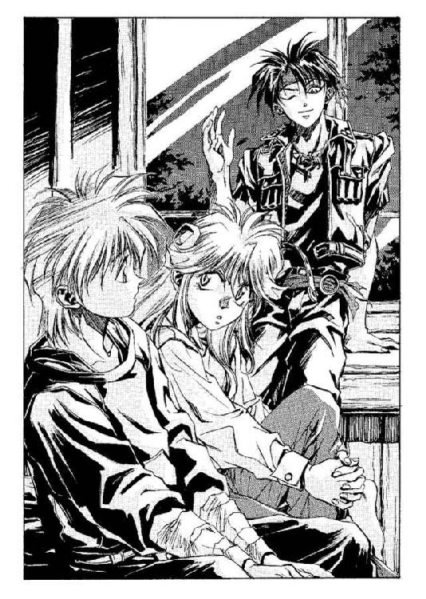
「なんだ？」
「アンチョコを見てもいいですか？」
「不可」
即答されてマジクは、嘆息してみせた。彼は仕方ないという表情で続けた。
「ぼくらの使っている能力は『魔術』──そして、そもそも世界の誕生と同時から神々が持っていた万能の力は『魔法』と呼びます。だから『魔術』と『魔法』とでは意味が違うわけです。神々の力には、不可能はないとか。でも、ぼくらの『魔術』には自ずとできることに限界があります。その限界には個人差があって──」
「その個人差を称して、俺たちは『才能』と呼んでいるってわけだ」
マジクの後をついで、オーフェンは窓枠から腰を外した。と、ふと気づいたように、マジクに向かって手を振って、
「おっと──悪かったな。邪魔するつもりはなかったんだけどよ」
「いえ......まあ、つまりそういうことです。この力量の差には、なにが原因になってるのかっていうのは、まだ結論が出てません。体力には関係ないし、年齢にも関係ない......熟達によって魔術の能力が強まるっていうのは、確かにあるけど」
クリーオウがそれを聞きながら、少し考え込むように唇に手を当てるのが見えた。彼女はしばらくそのポーズで硬直したかと思うと、唐突に口を開いた。
「強い魔術士っていうのをみんな並べてみてさ、その共通点をあげていけばいいんじゃないかしら」
「そいつは、俺だって考えてみなくはなかったけどな」
オーフェンは微苦笑をもらしながら、
「チャイルドマン教室──《牙の塔》で俺が参加していた教室の魔術士は、俺も含めて全部で七人いた。教師のチャイルドマンはまた別格だったが、それにしても全員《塔》の中ではトップクラスの実力を持っていた。七人全員が──」
と肩をすくめ、
「まったくタイプが違う。共通点は、まあ、まるでないと言ってもいいだろうな。まあ、その話は忘れて、マジク、このへんは概論で、クリーオウも興味ねえだろ。先に進めっちまえよ」
「はあ......ええと、ぼくらが扱うのは音声魔術と呼ばれるもので、これは大陸でも一、二を争うくらいに強力な魔術ということになります」
「一、二は買いかぶり過ぎだな」
オーフェンが口をはさむと、マジクはあっさりと言い直した。
「まあ、それほど弱い部類でもない、ってことなんだ」
「ごくごく一般論的にランクをつけちまえば、七種類の魔術のうち、最も強力だと言われているのがウォー・ドラゴン種族が用いる破壊魔術」
「はかい？」
クリーオウが、すっとんきょうな声で聞き返す。
「そゆこと。文字通り、なにかを──あるいは、なにもかもを破壊するためだけの魔術さ。鋼鉄の軍馬の名前の由来でもある。次に大きな効力を持っているのが、天なる人類──俺たちが俗に古代の魔術士と呼んでいる天人たちの用いる沈黙魔術。次いで深淵の黒狼の暗黒魔術ときて、俺たちの音声魔術は、この次ってところだ」
と、肩をすくめ、窓を離れたオーフェンを継ぐように、マジクがクリーオウに向けて続ける。
「ぼくらの音声魔術の最も顕著な特徴は、声──つまり呪文を媒介にして魔術を行使するってことなんだ。だから呪文の声のとどかないところには魔術の効果も及ばないし、効果だって永遠には持続しない。声をそのままの状態で保存することはできないからね。さらに、音声魔術っていっても二通りあって、ぼくやお師様が扱うのは、黒魔術と呼ばれているんだ」
「黒魔術は、熱とか、波動とかの物理的なエネルギーや物質──肉体そのものを扱う魔術のことだ」
オーフェンは窓を離れ、部屋を横切るように歩いたあと、くるりときびすを返してまた窓のほうへ行きながら、講義口調で続けた。
「白魔術は逆に、時間と精神とを操る。まあ、黒は実在する事象を扱い、白は実在しない事柄を繰る、なんて言い方もあるな。一般的に白魔術のほうが技能的にははるかに高度で、また威力も大きい......」
と、ベッドにいる生徒たちのほうへと振り返る。
「分かったか、クリーオウ？」
「......ぐー」
「あ、こら、なに寝てやがる！」
オーフェンがベッドに駆け寄り、揺さぶって起こすと、むにゃむにゃと声を上げながらクリーオウは答えた。うつ伏せにベッドに寝っ転がったまま。
「だって、いまいち退屈なんだもん」
「ったく......だから無駄だって言ったのに。じゃあお前、いったいなにが聞きたかったんだよ」
いきなり上体だけむっくりと起き上がって、クリーオウが言った。
「明日からできる魔術の使い方♥」
「できるかっ！」
「じゃあ寝る。ぐー」
「このクソアマ......」
再びぽてんとベッドに倒れ込み、寝息を立てはじめたクリーオウに向かって、わなわなと両手を震わせながらオーフェンはうめいた。
「いいか──寝たふりしたまま聞いてろよ。時間を無駄遣いしたくなけりゃ、魔術士になりてえなんて世迷いごとは、とっとと忘れちまうこった。いくら努力したところで、素養のない人間には魔術は扱えない。人間の魔術の素質は、ごく純粋に遺伝的なものだ。そもそも天人との混血って形で取り入れたものなんだからな」
「ぐー！」
わざとらしく、枕を抱えてクリーオウが叫ぶ。
その上に屈み込むようにして、オーフェンは追い打ちをかけた。
「お得意の駄々をこねたトコで、無駄なもんは無駄だからな！ お前がいくら無駄な努力をしよーが勝手だが、二度と俺にねだるんじゃねえぞ、めんどうだから。ざまみろ、へへーん！」
「お師様......」
頭を抱えるようにして、マジクが聞いてくる。
「なんで口ゲンカになると、精神年齢が下がるんです？」
「うっせえな。相手のレベルに合わせてるんだよ」
オーフェンがそちらに向き直ると、マジクは不思議そうに言った。
「ところで今思い出したんですけど、素養って言えばお師様は、ぼくのことを見ただけで魔術士の素質があるって見抜いたでしょう？ どうしてなんです？」
「別に見ただけで分かったわけじゃねえよ。人間の資質を一目で見破ったら、化け物か神様だろうが」
オーフェンは、まだ頑固に寝たふりをしているクリーオウの枕元に腰を下ろすと、猫の背中をなでるように彼女の頭にぽんと手を置いて、
「バグアップの野郎な、酒でも入ると、あの面で結構ノロケやがるんだよ。で、奴の女房──お前の母親──ほれ、今どこにいんのか知らねえけど、アイリス・リンとか名乗ってた女盗賊。彼女が昔、魔術士にスカウトされかかった、みたいな話を聞いたことがあったのさ。で、お前は......なんつうか、どう考えても父親似じゃねえからな。多分、母親の血のほうが濃いだろうと思ったんだよ」
持ち崩した海賊みたいな風貌のマジクの父親のことを思い出しながら、オーフェンは言った。と──手の中で、ぴくり、とクリーオウが身じろぎするのを感じる。見下ろすと、少女は寝たふりはやめて、鶺鴒が尾を振るような仕草で、まつげをぱちくりさせたところだった。恐る恐るというように、彼女が口を開く。
「......わたしは、魔術士の血をひいてないから駄目なわけ？」
「ま、そういうことだ」
オーフェンは、気まずい思いで彼女の金髪から手をどけた。
「だがまあ......結局のところ、魔術の才能がないってところで、ただそれだけのことさ。その代わり、お前にゃクリーオウ・エバーラスティンって、ほかの誰にも真似できねえ大層な素養があるだろ？」
ぐるり、と仰向けになってクリーオウが聞き返してくる。
「それってつまり、わたしの個性ってこと？」
「個性って言葉は──なんだか取ってつけたようで──あまり好きじゃねえんだけどな。ま、そういうことさ......ってマジク、お前なんでそんなに青ざめて後退りしてんだ？」
「いや、その......」
信じられない、という視線で、マジクは答えた。
「まさかお師様がクリーオウを気遣って慰めるなんて......」
「うるせえっ！」
オーフェンは多少ほおを紅潮させて怒鳴ると、クリーオウの腕の中の枕を引っこ抜いてマジクの顔面にたたきつけた。
しゃん......しゃん......しゃん......
鈴の音？ のような静かな、だがはっきりと聞き逃しようのない音が、遠くから聞こえてくる──目をすがめてみるが、それがどこから聞こえてくるのかは、よく分からない。周りは無明の闇のようでもあり、また、ただ濃いだけの霧に閉ざされているのだとも見える。ただ、鈴の音だけが響き渡っている。耳の奥がうずき、脳髄が震えるようにして、その音に応えている......
「────！」
がば、とオーフェンは夢から覚めて、起き上がった。シャツが、寝汗でぐっしょりと湿っている。シーツをはねのけ、彼は簡易ベッドから飛び出すようにした。心臓が動悸を告げている。例えようもない恐怖が、むやみに自分を急き立てていた。
（なんだ──？──この、感覚......？）
星明かりだけがほのかに照らす部屋の中を、ぐるりと見回してみる。簡易ベッドをはさみこむようにしているベッドの上には、それぞれマジクとクリーオウが、すーすーと寝息を立てていた。きっちりと気をつけの姿勢で寝ているマジクと、それに比べれば少々いぎたないクリーオウの寝相とを見比べながら、オーフェンは椅子の背にひっかけてあった自分のジャケットをひっつかんだ。それを羽織りはせずに、右腕で抱き締めるようにして、目を閉じる。記憶を閉め出すように──あるいは、必死になって思い浮かべるように。
オーフェンに限らず《牙の塔》の黒魔術士は、ある程度までなら自分の記憶や精神状態をコントロールできるよう、徹底的に訓練させられている。が──
（できない......？）
オーフェンは、胸中でいぶかった。ただひたすらにかき乱されるままに、平常心がかき消えていく。呼吸すらが......できない。
（これは......白魔術......か......？）
がくん、とひざから力が抜けて、彼はとっさに椅子の背をつかんで平衡を保った。白魔術ならば、何度かかけられた経験がある。本来なら王室によって完全に外界とは隔絶されているはずの白魔術士たちになど会えるわけはないのだが、オーフェンの古い仲間の中には白魔術に精通していた者がいたのだ。
だが、いま感じているのは、その感覚とは違うものだった。
（違う......もっと......別の......身体が......自分のものではなくなるような......いや、それとも、俺が自分でなくなっていくような──）
自我が消滅する感覚？
悪寒、そして嫌悪感が、全身を走り抜けた。次の瞬間、オーフェンはつかんでいた椅子を力任せに天井までたたきつけると、絶叫していた。
「ふざけるなあっ！」
同時に、彼の身体の中心から爆発的なまでに魔力が膨張する──それは衝撃波となって、夜のしじまに爆音を鳴り響かせた。衝撃の津波が無差別に周囲に膨れ上がって、部屋の中にあった家具や調度を一撃する。クロゼットの扉が陥没し、コートハンガーが部屋の隅まで吹っ飛んでへし折れ、三台のベッドもなす術もなくひっくりかえる。窓ガラスが砕け散り、水差しが床に落ち、天井からだらしなくぶら下がっていたガス灯がひしゃげて潰れるのが見えた。
「ひえええええっ！」
──というのはマジクがあげた悲鳴だろうが、今のオーフェンにはそんなことを確認している暇はなかった。もう先刻までの奇妙な感覚はなくなっている。オーフェンはめちゃめちゃになった部屋の真ん中で棒立ちになり、ジャケットに腕を通した。そのジャケットのポケットからドラゴンの紋章のペンダントを取り出すと、ぱっと頭から首に通す。
「な、何事なんですか、お師様っ！」
裏返しになってふたつ重なっているベッドの下から、顔だけ出してマジクが叫んだ。その横ではクリーオウが、枕を抱き締めて寝ぼけ眼をむにゃむにゃさせている。
オーフェンは声を低くして答えた。
「敵......だ」
そのせりふには、確信はなかった──自分で言いながら、なにを言ってるんだといぶかったほどだ。敵だと？ 悪夢にうなされて、起きてみて錯乱して暴発したってだけかもしれねえじゃねえか。だいたい、どこに敵がいるってんだ──
──いや──
「敵だ」
オーフェンはくりかえして、左手でそっと、胸元のペンダントをにぎった。
（今、俺の身体から出ていったのは......暴発して放った魔力だけじゃなかった）
ぞっとしながら思い起こしてみる。もっと別の、異質なものが、爆裂する魔力に押し出されて、彼の身体から出ていったのだ。
（となると──そいつは、今は俺の魔力に引き裂かれて部屋中に砕け散ってるかもしれねえが......）
と、じっと汗をたらしながら視線を鋭くする。部屋の隅々から、なにか黒い霧のようなものが、ふらふらと漂いだしてきている。夜の闇にまぎれて、空間に溶け出すようなその霧は、徐々に部屋の中央へと──窓を背にしてオーフェンがじっと見据える、ちょうど彼とマジクらの中間点ほどのところへと集まりはじめている。
「おいっ！」
声。そして──どんどんどんっ！ 激しく扉がノックされた。
「魔術士！ コラ！ なんの騒ぎだ！ 静かに寝られねえってんなら、月の光で蒸し殺されちまえ！」
騒ぎを聞きつけて上がってきた──どうやらボルカンらしい。となれば、ドーチンもいっしょだろうが。
霧は既に半径五十センチほどの球形の空間に集まって、形を取りはじめている。扉を開けてあの地人たちに事態を説明しているような時間などなかった。もっとも、事情を説明しようにも、なにがなんだか分からないのはオーフェンにも同様だったのだが。
と──霧が、声をあげた。
「──ニ・テ・イ・ル──」
ぎょっとして、オーフェンは半歩ばかり後退りした。いったんは球形に集まった霧は、徐々に縦長に伸びて、人型へと変貌しようとしている。
霧は、続けて声をあげた。それは確かに、空気を振動させる、生の『声』だった。
「オハエハ──ヤ・ツ・ダ──」
どんどんどんど......
ノックの音だけがひたすら、無意味に続く。
「なん......だと？」
オーフェンは、愕然とうめいた。その視線が、半透明のその人型を通り抜けて、ベッドの下敷きになっているマジクのかたわらできょとんとしているクリーオウへとぶつかった。彼女は、ようやく気づいたようで、あっけらかんとした声を出した。
「あ。幽霊」
（幽霊......お化け......亡霊？）
その、あまりにも唐突といえば唐突な単語に、オーフェンは面食らったような思いだった。確かに、輪郭はぼやけているとはいえもう完全に人間の形になったその霧を呼ぶのならば、その単語が一番適切であるように思える。が......
「ふざけんな、この世に亡霊なんているか──」
その毒づきが、合図になったかのように、霧──いや〝亡霊〟は、金切り声にも近い声音で絶叫した。
「オ・マ・エ・ハ──フォノゴロス！ ツイニミツケタ──」
亡霊は、いまだ輪郭はかすんでいるものの、若々しい風貌の若者の姿を見せていた。気の弱そうな、だが陰に回れば険を強くしそうな細い目尻の、痩せた若者。安っぽいが潔癖なまでに清潔な白衣をまとった、研究員風の男である。
「フォノゴロス？」
オーフェンが聞き返した瞬間、ボルカンが扉を蹴破った。壊れた扉が蝶番を羽ばたかせるようにぶらつかせて、勢いよく亡霊の背中にぶち当たりそうになる──
「────！」
オーフェンは瞬時に、身体を投げ出すようにして横に跳んだ。その横を、すさまじい速度で亡霊が飛び抜けていく！
部屋に再び、爆音が響いた。衝撃と爆風が吹き荒れ、亡霊が飛び出したままの勢いで、窓のある壁をぶち抜いて吹き飛ばした──
と、オーフェンは思った。
「............？」
だが、亡霊が通り抜けていったその壁は、まるっきり傷ひとつなく──もっとも、先刻オーフェンが与えた損傷は別としてだが──取り澄まして静まり返っている。
「な、なんだ、今の？」
壊れた扉を踏み越え、人間サイズの寝間着をひきずるようにして、ボルカンとドーチンがひょっこり部屋に入ってきた。ベッドの下から、マジクがぼやくように応じる。
「......ユーレイ、だそーです」
「幽霊？」
疑わしげに、ドーチン。眠そうに眼鏡の位置を直しながら、
「やめてくださいよ、そゆこと言うの。兄さんすぐに本気にして、またロクでもない商売にしようとするんですから──」
「おい」
オーフェンは、それらの会話を後ろ耳にしながら、抑えた声音でつぶやいた。
「黙ってろ、お前ら......」
と窓の外を凝視する。ほかの連中の視線も、彼の視線を追うようにして、同じところに集まっていくのが気配で分かった。割れた窓ガラス──砕けた窓枠の向こうには、静かな夜のキンクホール・ビレッジと、はるか遠くアイーデン山脈。動物たちの声の響く深い森の影。夜空。星──そういった風景の中に、ぽかんと浮かび上がるひとつの影があった。
ちょうど窓のすぐ外に立ち──二階にある、この部屋をのぞくようにして、奇怪な形相をした影がある。平べったい楕円形の頭に、横長の瞳を瞬きもせずじっとさせて、月明かりを反射させるのは、ぬめっとした鱗の肌──
「蛇......ですか？ あれ」
マジクの声に、うなずく余裕をオーフェンは持っていなかった。それは確かに蛇だった。だが、蛇ではなかった。蛇の頭の下──細長い首の下に、なで肩の、人間の肩が見える。
「蛇人間！」
勝手な名前をつけて、ボルカンが叫んだ。寝間着のままで、剣を抜きにかかっている。ついでに、どさっと物音がした。オーフェンがちらりと振り向くと、ちょうどクリーオウが卒倒したところだった。
「我は放つ──」
オーフェンは身構えて、魔術を放とうとした。が、それよりも早く、蛇人間の姿が闇に消える。前触れもなく、ただかき消えるようにして。
「なに？」
そして、蛇人間の消えた夜闇の中から、大気を切り裂いてなにかが飛び込んでくる！
「うわああああっ！」
オーフェンはしりもちをついて、それを躱した。
が──
「ぎあっ！」
背後で、マジクの悲鳴があがる。見てみると、マジクの上にのっかっているベッドのクッションに長弓の矢が突き立っていた。
「よっしゃ──！」
オーフェンは、自分がいきなり元気づくのを感じた──矢ならば、人間の武器だ。わけの分からない亡霊やら蛇人間やらと違って、人間が相手なら、それを片づける方法を知っている。
ぱっと跳び起きて、一気に窓から身を躍らせる──地面まで落下するわずかの時間、弓矢で狙われているというのにひどく危険なことをやらかしているような気もしないではなかったが、闇夜の射的ならば、そうそう当たるものでもあるまい。
だんっ！ と、足からの衝撃をひざで受け流し、オーフェンは地面に降り立った。りーん、りーんと気の早い虫たちの鳴く声。それを耳に受けながらオーフェンは、あたりを見回した。
（もし、いま俺を狙ったのが殺し屋だとしたら──）
オーフェンは、くるりと宿の入り口のあたりにあるしげみに右手を突き出した。
（入口近くで待ち伏せて、俺が飛び出してきたところを狙う！）
「我は放つ光の白刃！」
闇にほとばしる光熱波が、宿のポーチを囲むようにしている植木を燃え上がらせた。が、それと同時に、野太い地声で叫ぶ声がする──
「消えろ！」
と、煌々と燃え上がっていた熱波と炎とが、ふっとかき消えた。
（魔術──殺し屋たちの中に、魔術士がいる？）
オーフェンは、さっと身構えながらつぶやいた。が、今の魔術の波動──魔力とイメージの構成から感じるに、さほどの腕を持った魔術士ではない。恐らく、修業半ばで挫折した手合いだろう。
しげみから、がざっと人影が飛び出して逃げるのが見える。
「逃がすかよっ！」
と叫びながら、追いかけはしない。飛び出した人影が複数なのが、ちらりと見えていた。だとしたらその中のひとりを追っている間に別の暗殺者に待ち伏せを食らう可能性が高い。
とは言え、逃がすつもりがないのも同様だった。彼らがオストワルドの傭った殺し屋たちだとしたら──先刻の亡霊や蛇人間とどういう関係があるのか聞き出さなければならない。
オーフェンは、すっと息を吸うと、頭の上で腕を交差するようにして叫んだ。
「我は呼ぶ破裂の姉妹！」
同時に、差し上げていた腕を地面に向かってたたきつけるように勢いよく下ろす。
ぐわっ──空気がひしゃげ、無差別な衝撃波がそこら中で破裂音をあげた。
「ぐうっ！」
「うおっ！」
といったようなうめき声が、近くの樹上から聞こえた──数メートルほど離れたところにある、葉のつきがいい木の上からである。一瞬後、枝から弓矢を持った男がふたり、地面まで真っ逆さまに落下した。
（捕まえるのはひとりでいい）
オーフェンは胸中で満足げにつぶやくと、しっかりと警戒しながら、落下した男たちのほうへと近づいていった。
まず手前にいたほうの男のみぞおちに容赦なくかかとで蹴りを入れて悶絶させると、もう一方の男へと歩み寄る。そのわきにひざをつくとオーフェンは、落下した際の打ち身にうめき声をあげている男の胸倉を、ぐいとつかみあげた。
「お前らを傭ったのはオストワルドだな──トトカンタのザナドュ・オストワルドだ」
オーフェンは凄みをきかせたが、弓だけを右手に持ったその殺し屋は、長髪に汗をにじませて、恐怖の眼差しでこちらを見返してはくるものの、口を開こうとはしない。
オーフェンは呆れたように嘆息しながら、
「ま、そりゃそうだろな。プロの暗殺者なら、自分が殺されたところで雇い主の名前をあげたりはしねえだろ。たとえそれが、逃げ遅れれば仲間にも見捨てられるような、三下程度であってもな」
それが殺し屋と、ただのちんぴらとの違いだったし、その違いは絶対だった。
「なら、こっちの質問ならどうだ──？ いったいあの亡霊と蛇野郎はなんなんだ」
「ぼ、ぼう──？」
不意つかれたように、殺し屋はすっとんきょうな声を出した。
ん？ といぶかって、オーフェンは続けた。
「亡霊だよ。お前らの少し前に、部屋に現れた──」
「なんの話だ？ 俺たちは──」
殺し屋は、どうやら左肩を骨折しているらしかったが、持っている弓を視線だけで示した。そして続ける。
「俺たちは、お前が眠ったところに夜襲をかけて、とにかくお前が窓の近くに姿を見せたら、それを狙撃する計画だったんだ。だからお前が顔を出したときに矢を射ったのに、くそ、あいつらまだ夜襲をしかけてなかったのか──」
殺し屋は無念そうに唇を噛んでいる。その表情には、どうにも嘘をついている気配は見えなかった。
「夜襲はあったんだよ」
オーフェンは苦々しく、
「ただし、ポーチの陰に隠れていたお前の仲間どもじゃなくて、わけの分からん亡霊のだ。くそ、お前らが知らねってんじゃ、いったい誰が──」
「ぎゃあああああああああっ！」
悲鳴──
はっとして、オーフェンはさっき悶絶させた男のほうへ肩越しに振り向いた。殺し屋の片割れは、地面に仰向けに倒れたままの姿勢で、大口を開けて絶叫している──その開いた口蓋しか、オーフェンの位置からでは見えなかった。殺し屋の顔の上半分は、地面から突き出してきている一本の手──その指の一本一本にキッチンナイフのようなものが細い鋼線でくくりつけられている真っ白な餅肌の男の『手』で、がっしとつかまれている。ちょうど、子供がおふざけで背後から「だーれだ」と目隠しするような感じだった。だが違うのは、その手が少し力を入れるたびに、くくりつけられたキッチンナイフの刃が殺し屋のほおと言わず目と言わず、顔中に食い込むということ──
殺し屋の身体が苦痛にのけぞり、『手』の指の間から血があふれ出る──
「うっ──ぎゃああああっ──！」
少し間をおいてから、殺し屋が再び悲鳴をあげた。ごく、と花瓶が割れるような音を立てて、殺し屋の頭蓋が割れた──白い骨が肌からはみ出て、その正体がなんであるか知りたくもないような色の体液が、ほんの一瞬だけ、噴水のようにあたりに飛び散る。
そして『手』は、潰れた殺し屋の頭蓋を通り抜けるようにして、地面の中へと引っ込んでいった。跡も残さずに。
「う、わわわわわっ！」
と、悲鳴をあげて後退りしたのは、『手』に殺された殺し屋の相棒ではなく、オーフェンだった。ちょうど気管と食道の中間点あたりから、熱い胃液がこみあげてくる──嘔吐だけはしないようにひたすらに自制しながらも、彼は、自分がヒステリーの波に押し潰されそうになるのを感じた。人が死ぬのを見たことは何度かある──が──これはあまりにも、異常きわまっていた。
海老のように後ろ向きに逃げていくと、数歩もいかないうちに、背中に、どすんとなにかが当たる感触がした。木の肌のように、どこか生暖かいが、硬い感触である。
「............？」
地べたに座り込んだまま、恐る恐る振り仰ぐと、彼の背後にのっそりと、背の高い人影がある。夜空に向かってそびえる、漆黒のその人影の右手には、包丁のように肉厚の大型ナイフが握られていた。
「おのれ──！」
なかば恐慌状態になって、オーフェンは飛び起きざまにその人影の喉元に向けて手刀を放った。が、それをその人影はナイフの背で受け止める──だがオーフェンは気にせずに、ほとんど密着するように人影に左肩を寄せると、ぐるりと敵の後頭部を経由するように左腕を旋回させて、突き立てた親指で相手の左目を狙う！
が──その指は、標的のまぶたをかすめるあたりで、ぴたりと動きを止めた。
（............？）
オーフェンはとにかくわけが分からず、目をぱちくりさせた──自分の視界いっぱいに、人間の顔が広がっている──目を閉じるべきだ、と狂気じみた本能が告げた。だが──と彼は、自分に問いかけた。殺し合いの最中に目を閉じるだと？
（これが殺し合いか？）
頭の中のどこか──遠い、暗い淵の中から、そんな答が返ってくる。
オーフェンは目を閉じた。
目を閉じてからは、それほど長い時間はかからなかった。彼を抱き締めている手──そう、それは女の手だった──が、彼の背中をひととおり、軽く愛撫すると、ぽんと腰をたたき、身体を放す。オーフェンは再び目を開けた。ヒステリーを起こしかけていた頭の中は、いつの間にかすっきりとしていた。どうかと聞かれれば、冷水を浴びせられたような感覚ではあったが、不快ではない。
なんにせよ、落ち着いた心中でならば、彼女がいま自分にキスをしていたのだと判断できた。
「ヒリエッタ......？」
我ながら間の抜けた、と思える声で、オーフェンはつぶやきかけた。彼女は、まるで今の感触を味わいなおすように真っ赤な唇を舌なめずりすると、心底おかしそうな笑みを浮かべた。
「とんでもない体術を使うのね、あんたって......今のって《牙の塔》で習ったわけ？」
「たいじゅつ？」
オーフェンは、きょとんとしてから、
「あ、ああ──いや。い、今のは──体術、なんてもんじゃない......」
尻すぼみに声が小さくなるのを自覚して、赤面する──恐慌状態になって失態を見られたというよりも、今とにかく心臓の動悸が収まらないことのほうが、自分を慌てさせた。
「あれは──その、殺しの技だ。まだ俺にできるなんて、思ってなかった......」
「ふうん？」
ヒリエッタはこめかみをナイフの柄でかきながら、
「あんたもその技で、人を殺したことがあるわけ？」
「まさか」
オーフェンは、汗でぐっしょりになった額をぬぐって否定した。
「単に、覚えさせられただけだ。ふだんは滅多にやらない。護身の手段としちゃ、それほど有効なもんじゃないし。護身の手としちゃ──手──」
と──、思い出す。
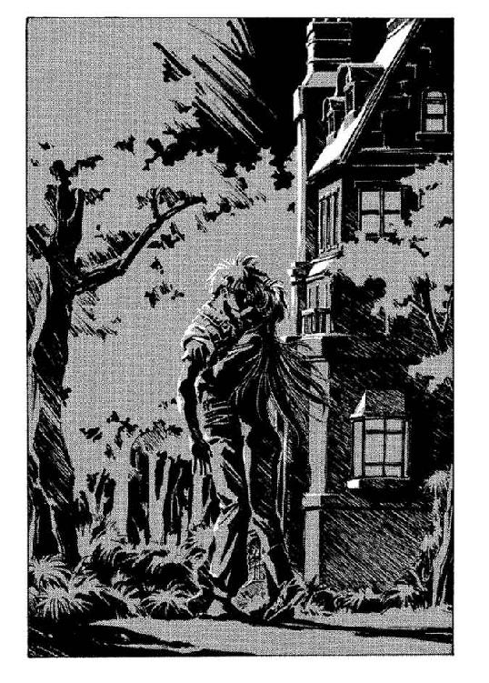
「手！ 手が──地面から出てきて、殺し屋を──」
「殺されちゃったんでしょ？ ところで、もうひとりのほうも殺されたりしたらまずいんじゃない？」
長い黒髪を、ばさりと夜に投げ出しながらヒリエッタが言う。オーフェンは、はっとして長髪の殺し屋のほうを見やった。
が、もうとっくに逃げ出している。あたりにはもう気配もない。
「くそっ──」
オーフェンは、やるせない思いで毒づいた。架空の壁をたたくようなしぐさで腕を振る。
「ま、あの状況じゃ仕方ないわね──」
まるっきり他人事のように、ヒリエッタがつぶやくのが聞こえた。
そしていきなり、宿の扉が開いてポーチが騒がしくなる。
「オーフェン！」
「お師様！」
クリーオウとマジクが、連れ立って外へと駆け出してきた。マジクはそのまま駆け寄ってきたが、クリーオウのほうは、ヒリエッタの姿に気づいた瞬間、ムッとしたように足を止めた。
「いったいなにが──」
問いかけてくるマジクを、オーフェンは手で制した。なんにしろ、答えられるとは思えない。先刻起こったことは、なにひとつとして。
ちらりと見やると、気を利かせてのことだろう──ヒリエッタがさりげなく、どこから持ってきたのか黒いシーツのようなものを殺し屋の死体にかぶせているところだった。ほっとして、クリーオウの顔を見やる。少女は寝癖のついた金髪を手で梳かしつけながら、言ってきた。
「なんなのよ、窓から飛び降りたりして！ サポートもなしに殺し屋と戦うなんて、自殺行為よ！」
はいはい、と力ない手振りで応じながらオーフェンは、なるたけ血の飛び散った地面のほうは見せないようにかばいながら、クリーオウの肩に手を回した。そのまま、宿の中に押しやっていく。
「あの福ダヌキどもはどこだ？」
マジクに聞くと、彼は軽く肩をすくめた。
「あの地人たちのことですか？ 部屋の中をうろつき回って、修理費はいくらだとか、賠償金はいくらだとか計算してましたよ」
「............」
オーフェンが嘆息をもらすと、背後から、ヒリエッタが近づいてきた。
「この村の派遣官には、どうするの？」
「君から報告してもらえないか？ 俺にはできそうにないし......どうやら」
と、じろりとにらみやる。
「どうやら、俺なんかより君のほうがはるかに事情に詳しそうだからな」
彼女は悪びれた様子もなく、ボディスーツに直接ついている鞘にナイフを落とし込んだだけだった。あまつさえ、言ってくる。
「ところで、オーフェン」
「あんだよ」
しつこく説教じみたことをまくしたてているクリーオウの背を陰鬱な気分で押しやりながら、オーフェンは聞き返した。ヒリエッタは、そっと耳打ちするように告げた。
「明るいところにもどる前に、ふいといたほうがいいんじゃない？」
「なにがだよ」
「口紅がついてるわよ」
きゃはは、と笑い声をあげるヒリエッタに、今度こそ絶望的なまでに顔を紅潮させながら、オーフェンは慌てて手の甲で唇を拭った。
第三章 噂する愚か者たち
絶望的だ、とオーフェンは思っていた──少なくとも、自分が吹っ飛ばした部屋の中を改めて見直したときは、そう思った。クロゼットは腰の曲がった魔女みたいにひしゃげているし、古い蝋が底にたまっている燭台は床に転がり、ブリキの胴をぐにゃりと曲げられている（そういえば、ベッドから起きたときなにかを踏んだ記憶があった）。壁紙もなんだか焦げ臭い匂いを発していたし、ボルカンが蹴破った扉に関しては言うまでもない。
弁償額は、最低限、ロクでもないことになってるだろう──正確な金額のことなど考えたくもないし、知らされたくもない。いざとなれば指名手配されるのを覚悟してでもトンズラするよりほかないだろう。そこまで考えていた。
だから、翌朝になって派遣官の詰め所に呼び出されたときの、その老派遣官の発した第一声は、彼をだいぶ戸惑わせた。
「災難でしたねえ。で、慰謝料はいかほど請求なさりますかね？」
「へ？」
間の抜けた声で、オーフェンは聞き返した。信じられない──耳にした単語が、自分の予想をあまりにも完全に裏切ってくれたので、ただのたわごとだったのではと思ったほどだった。
（請求なさる、だと？ 俺が払うんじゃなくて？）
胸中で訝しみながら、オーフェンは聞き返した。できるかぎり不自然でないように。
「いえ、あの──こういった事態には不慣れなもので。相場はいくらぐらいなんでしょうね？」
「相場......ですか」
ぶつぶつと、老派遣官は白髭の下でかさかさになった口を動かした。一見して人の良さそうな、茶色のチョッキを着た老人である。せまい詰め所のすみっこには、ハンガーに引っかけられて、つばの広い帽子が垂れ下がっている。部屋の唯一の家具である木製のデスクに痩せた肘を載せて、さっきからぼんやりとした目付きでこちらを見ていた、老派遣官──中央から郊外の治安を司るために送り出された退職警官（だとオーフェンは見当をつけていた）は、少し考えるようにして答えた。
「そうですねえ。三年前、やはりあの宿で魔術士の幽霊に起こされて、真夜中に教会まで逃げ出したご婦人は、確か──」
金額はたいしたことはなかったが、ともかくその情報は、それ以上のことを意味していた。
（あの亡霊とやらは、今までもたびたび出てきてたってわけか）
腕組みしながら、ふと思い出す──
（あの男、俺のことをフォノゴロスと呼んでたな......）
くわしい事情を調べなければなるまい。ただ、いったい誰に聞けばいいものか。
昨夜『手』に殺された殺し屋について、派遣官が事情聴取を始めようとするのをじっと見返しながら、オーフェンは、とにかくヒリエッタに会う必要がある、と考えていた。
詰め所から出ると、マジクが待っていた。道のわきで腰を下ろして、こちらを見つけると、ぱっと顔を輝かせる。
「お師様！」
駆け寄ってくる生徒に、オーフェンは片手をあげて応じた。
「なんだよ。宿で待ってろっつっただろ。それとも宿のほうでなんかあったのか？」
「い、いえ、それが──」
マジクは、翠色の瞳を少し躊躇するように瞬きさせて、
「その......とてもいられる雰囲気じゃないんですよ」
「............？」
オーフェンは無言で視線を返した。と、マジクは嘆息まじりに答えてきた。
「あのヒリエッタとかいうひとが、お師様に会いにきてるんです。階下の食堂にいるんですけど......つまり──」
「じれったいな。つまり、なんだよ？」
「だから、クリーオウもいっしょなんです。どういう風の吹き回しだか知らないんですけど、同じテーブルに張り付いちゃって、黙ってにらみあってるんですよ」
「なるほど」
オーフェンは、マジクと同時に、ため息をついた。
宿は、昨夜あれだけの騒ぎがあったというのに、ひどく落ち着いていた。昨夜泊まっていた部屋を下から見上げると、割れた窓の部分に厚紙のようなものがかぶせられている。それ以外には、昨日の昼下がりに着いたときと、なんら変わるところはなかった。
入口から扉を押しやって入ると、閑散とした空気が彼を出迎えた。食堂には、真ん中のテーブルにぽつんと、相変わらずのボディスーツ姿のヒリエッタと、その真正面で憮然としているクリーオウがいるだけだった。クリーオウのほおが少し腫れているのと、彼女が着ているブラウスの一番上のボタンがとれかけていること、そして隣のテーブルの椅子が倒れているのに気づいて──オーフェンは、しまったと胸中で舌打ちした。あれはもう、一戦やらかした後だ。
オーフェンが入っても、ヒリエッタは顔にうっすらとした笑みを浮かべたまま身じろぎひとつ見せなかったが、クリーオウは、ぱっとこちらを振り向いた。顔の擦り傷を隠すように、ブロンドが、ふわっと浮かぶ。
「あのなあ、お前──」
呆れた声でオーフェンはつぶやきかけたが、クリーオウが椅子を蹴って立ち上がるほうが早かった。彼女は、きっとこちらをにらみすえると怒声をあげた。たった一言。
「馬鹿っ！」
そのままくるりときびすを返して、階段を昇っていく。ぼうぜんとしたまま彼女を見送るオーフェンの視界から、彼女のスニーカーが見えなくなるころ、後ろからついてきていたマジクがぽつりとぼやくのが聞こえた。
「あんなに怒ることないのに。ねえお師様」
「どうかしら？」
と、これはヒリエッタ──スーツの右腿のところに、隠れるようにしてついている真っ黒な鞘の上を指でなでながら、彼女は不敵にほほ笑んでいた。
「どういう意味だ？」
オーフェンは聞き返しながら、ゆっくりと彼女のテーブルまで歩を進めた。
ヒリエッタが、横目で視線を投げながら、答える。
「あの子には、怒るくらいの権利はあるんじゃないかってことよ。あなた、あの子に本当のことを話してなかったんでしょう？」
オーフェンは無言でクリーオウが蹴倒した椅子を起こし、そこに腰を下ろした。ヒリエッタは続けて言った。
「わたしが、あなたを殺すために傭われた魔術士殺しのエキスパートだって話したら、目を丸くしてたわよ、彼女」
それを聞いた瞬間──マジクが後退りして、背後にあったテーブルに腰をぶつける音が響いた。そちらの方向に手をあげて制止しながら、オーフェンは微苦笑をもらした。
「目を丸くしただけじゃすまなかったろ、あいつのこったから」
「ええ。その場で飛びかかってきたもんだから──とっさのことで殴っちゃったけど、悪いことをしたかもね」
「ったく、ンなことで怒られても、俺が知るかよ。殺し屋に襲いかかって殴りかえされたからって──」
オーフェンが言いかけると、ヒリエッタは笑った。馬鹿馬鹿しい、というように。
「そんなことで怒ってるんじゃないでしょ。あのお嬢ちゃんは──あなたを心配してるのよ。なんの訓練も受けてない女の子が、大陸でも一流と言っていい黒魔術士であるあなたを守ってあげられると考えてるんだから、可愛いじゃない？」
「......否定はしねえよ」
と答えてからオーフェンは、魔術士殺しの単語に完全に怖じけづいたらしいマジクのほうに向き直って、
「階上に行ってろよ。クリーオウの機嫌とっとけ」
ぎょっとしたように、マジクが両手をあげる。
「そんな無茶な！」
「いいから行けよ」
と、オーフェンは、すっと目を細めて付け加えた。
「もし昨夜の亡霊とやらが、まだ俺らを付け狙ってるんだとしたら、あいつをひとりにしとくのは危ねえだろ」
「......機嫌を損ねた彼女といっしょにいなくちゃならない、ぼくの身の危険はどうなるんです」
などとぶつぶつ言いながらも、とにかくマジクは二階の部屋へと上がっていった。食堂には、オーフェンとヒリエッタだけが残る。まだ昼前の、厨房に火も入っていない薄暗い食道の中で、オーフェンはじっと眼前の女暗殺者を見やった。
「ひとつ、確認しておきたいんだがな」
「なにかしら？」
結局は人を寄せ付けない、この女特有の媚態の笑みを浮かべながら、彼女は聞き返してきた。オーフェンは椅子の背に体重を預けながら、
「君は......敵か？ それとも味方か？」
「その敵とか味方とかは、どういう基準で区分けされてるわけ？」
からかうように、彼女。オーフェンは、その手の言葉遊びは大嫌いだったが、無視するほど嫌悪しているわけでもない。
「この場で吹っ飛ばしていい相手なのかどうかってことさ」
「吹っ飛ばされたくはないわね」
喉の奥でくつくつと笑いながら、彼女は続けた。
「オーケイ。わたしは、あなたの味方よ。少なくともあなたの寝首をかいたりはしないし、必要な情報も提供するわ」
「なら、その必要な情報とやらを全部よこすんだ。今すぐにな」
「せっかちね。もっと長く話していたくない？」
「あいにくな」
「嫌われたものね......昨日のキス、そんなによくなかった？」
「うるせ」
オーフェンが半眼でつぶやくと、ヒリエッタは、なにがおもしろいのか、にっこりして黒髪を手で梳いた。染みのついた古テーブルに肘をついて、やや身を乗り出すようにして、話しはじめる。
「結局はね......わたしのスポンサーに直に会わないことには、納得してもらえないと思うわ。あなたは疑り深そうだし」
「てことは、信じるに足る話はしてもらえねえってことか」
「......そうね。実際、そう思ってもらって差し支えないくらいかも」
彼女のその同意を聞いて、皮肉のつもりで言っていたオーフェンは、不意をつかれたようにきょとんとした。そして──いつの間にか陰りのようなものすら見せている殺し屋の表情を見返しながら、今まで信じてみる気にもならなかった〝愚犬〟ヒリエッタについての噂話を思い出している自分に気づいていた。
彼女は、真っ赤なルージュに彩られた唇を、うっすらと開いて語りはじめた。
「わたしのスポンサーは、もうとうに死んでしまったわ。わたしが殺したの。でも、まだ存在しているのよ......この村にね」
◆◇◆◇◆
「もう──ホントに、馬鹿！」
部屋に入るなり、クリーオウは憤懣やるかたないという声でそう怒鳴ると、ベッドから枕をほうり上げ、それが空中にある間に、器用に回し蹴りをたたき込んだ。ぼすん、と枕は不平の音を立てながら、壁にぶつかって床に落ちる。オーフェンが前の部屋を壊したせいで、彼女らはほかの部屋に案内されていたのだが、こちらのほうはどうも客室として使うつもりはなかったようで、普通の寝室そのまま、といった感がある。多分、壁紙を使ってないせいだろう。
クリーオウは床に落ちた枕を拾うと、今度は少し前方にほうり投げた。そのあとを追うように助走をつけると、またもや重心の乗った綺麗な形で飛び蹴りをくらわせる──いや、蹴りというよりもむしろ、足のわきの部分、足刀で打ち付けるような動作で、それまでのんきに宙を遊覧していた枕を床にたたきつける。勢いよく床に落ちた枕は、どすんと一回跳ね上がった。その真上に、少し遅れてちょうど尻餅をつくような感じで、跳んでいたクリーオウが落下する。
なんにせよ、並の運動神経でこうまでできるものではないが。
枕の上に座り込み、じっと前方の壁を見つめながら、クリーオウはぶつぶつとくりかえした。
「馬鹿......なんでもかんでも、自分ひとりでできると思ってればいいのよ」
と──開いている窓の外から、声が聞こえてくる。
「よぉーし、集合したな！」
ボルカンの声だった。クリーオウはふと気になったようにぴくりと眉を動かし、枕から腰を上げると、窓のところまで歩いていった。窓枠に手をかけ、少し身を乗り出すようにしてやると、ちょうど窓の下あたりの空き地でボルカンが仁王立ちしている。クリーオウの位置からは後ろ向きの脳天しか見えなかったが、声からすると、どうやら上機嫌でいるらしかった。そのボルカンから一歩退いたところでぼんやりしているドーチンは、妙に疲れたように肩を落としていたが。
（そういや、あのふたりって、オーフェンとの付き合いはわたしよりも古いのよね）
あの地人の兄弟に関しては、クリーオウは、まずなにも知らないというところだった。せいぜい、オーフェンにいくばくかの借金をしているらしいということくらいで。
（でも......考えてみたら、わたし、オーフェンのことだってあの地人程度のことしか知らないんだわ）
ふわり......と、いきなりのそよ風に柔らかなブロンドを持っていかれそうになって、クリーオウはそれを手で押さえた。じっと無言で、窓の下を見下ろす。
ボルカンとドーチンの前には、小さな子供たちが五人、整列して気をつけの姿勢をとっている。全員十歳かそこらというところで、一番右端には、昨日部屋に案内してくれたこの宿の小間使いの姿もあった。
と、ボルカンが、また声を張り上げる。腕組みして、なんだかやたら偉そうに。
「うむ！ これまで少数を以て営業に勤しんできた我がボルカン商会にも新たなる有志を迎えることができ、恐悦至極というところである！」
「恐悦ってのは手紙文でのみ使う言葉で、しかもこの場合には意味的にも不適切──」
後ろでつぶやいたドーチンをふりかえりもせずに剣の鞘で殴りつけ、ボルカンは続ける。
「さて！ これまでの活動に共感し共振してくれた我が新たなる仲間たちよ！ 我々は今日まで『愛されるボルカン商会、愛されるためのボルカン商会』を社訓とし、営業・奉仕活動を行ってきたわけであるが、先の大会にもあった通り、現状は維持をいかんともしがたい状況にあり──」
ぷっ、とクリーオウは口元に手を当て、吹き出しかけたのをこらえた。子供たちは、子供の耳にもいまいち意味の通らないボルカンの演説に、きょとんとして顔を見合わせている。当のボルカンは全然気づいていないようで得意満面に演説を続けているが、後ろでドーチンがおおげさなため息をついていた。
「つまり！ 障害は煙突を詰まらせ殺してでも排除し、病気などないよう、商会員一同留意されたし！ ではさっそく、今後の活動方針であるが──」
クリーオウは窓を閉めた。そのまま外に背を向けて、腰の体重を窓枠に預ける。窓に寄りかかって彼女は、ふうとため息をついた。
「気楽だわ、あの連中は」
（でも考えてみれば、わたしだってちょっと前までは似たようなもののはずだったんだけどね......）

そんなことも、胸中に浮かび上がってくる。
いつから、そうでなくなったのか──いや、結局は今だってたいして変わったわけでもないだろう。ただ、トトカンタの実家では味わったことのなかった焦燥を感じていることは、はっきりと彼女は自覚していた。
（わたし......そんなにお荷物なのかなあ......）
天井を見上げて、思う。
（オーフェンがね、保護者面したがるのも、分からないではないのよ。だいたい、未成年者ふたり引き連れて旅してるんだから、最年長者ってことで責任を自覚するのはむしろ当然かもね。でも──）
彼女は声に出してつぶやいた。
「わたしだって、オーフェンがその気になってくれさえすれば、きちんと相棒として働けるんだから」
いくらお嬢様育ちとはいえ、学校も下町のところに通い、友人もそちらのほうが多いし、そうそう世間知らずに育ってきたわけではないと自負している。とっさのことにも──その行動指針の正否は別とすれば──少なくとも迅速に、なにかしらの判断を下すことはできる。剣だって使えるし、なにより、いくら金を積まれようが、どんな絶望的な状況になろうが、まず絶対に彼を裏切ることがないのが自分だ、と思っている。
（これだけ条件がそろっていれば......まあ対等ではないにせよ、パートナーを名乗るのに不足はないはずよ。うん。もし、まだ足りないところがあるとすれば──）
こんこん、と、扉がノックされた。クリーオウの返事を待たずに、少々か細い、気後れしているような声音が続く。
「クリーオウ。ぼくだけど......入るよ」
「どぉぞ」
クリーオウは、ムッとした表情で扉をにらみつけた。
扉が開く。そこには、マジクが立っていた。
（まだ足りないところがあるとすれば──）
クリーオウは胸中でくりかえし、はっきりと嫉妬の念がこもった眼差しで少年をにらみつけた。足りないところがあるとすれば、それはこいつなのだ。
（オーフェンがわたしのことを認めてくれないのは、あの石頭、わたしが魔術を使えないからに違いないのよ）
部屋の入り口で、どうやらこちらの形相にびっくりしているらしい金髪の少年は、戸惑うようにいつまでも、そこに立ち尽くしていた。
◆◇◆◇◆
「......めんどうなことになったな」
村から数キロほど離れた森の中、ぼさぼさの黒髪に隠れるようにして眠たげな眼差しをのぞかせるその男は、ぼそりとした声でそうつぶやいた。実際の年齢はさほど高くはないのだろうが、見かけはそれより老けて見える。そんな男だ。実年齢で三十少し前、見かけで四十過ぎというところか。不精髭を伸ばした、精悍な顔付きの男である。鉛色の戦闘服──それも、鎖を仕込んだ魔術士用のスーツを着込んで、腰には細身の、片手用の軍刀を下げている。無骨な手がその柄に触れて、手の甲の傷痕をもぞもぞと動かしていた。
その、ともすれば当人とは別生物なのではないかと思わせるような傷痕の動きを見つめながら、男の周囲に集まっている数人の男たち──歳も格好もちぐはぐな、あからさまに寄せ集めといった雰囲気の暗殺者たちのひとりが聞き返す。
「......つまり？ どういうことです、コーゼンさん」
コーゼンと呼ばれたその男は、眠たげな双眸をちらと上げ、答えた。
「つまりだ。我々は奴の暗殺に失敗した。奴もこれからしばらくは警戒を強めるだろうし、そうなれば我々も次の機会を待たなければならない。だが、こんな郊外の村では、怪しまれずに身を隠す、というのはいささか無理がある」
「やはり......《牙の塔》の魔術士を相手にする、なんてのは──」
暗殺者の、今度は別のひとりが怯えた声をあげるのを、コーゼンは皮肉げな視線で応じた。
「馬鹿なことだった、とでも言いたいか？」
「じゃあ......あんたは、そうでないとでも？」
「あの男が優れた黒魔術士だということは認める」
コーゼンは、剣の柄から手を放し、自分のあごに当てると、不精髭の一本をぶつんと引き抜いた。
「《牙の塔》の魔術士であるという噂も、あながち的を外れてはいないだろう。あれほどの力を持っている男が、まったくの無名だというのが信じられんがな。あるいは、オーフェンという名前は偽名なのかもしれん──実際、馬鹿げた名前だ。ふざけているとしか思えんな。資料では不明になっている奴の経歴も、気になるところだ」
「なら、そいつを敵に回すのは......」
「そうでもない。いくら力を持っていようと、しょせんは若造だ。技術も粗削りだし、なにより胆力も経験もない。目の前で敵が死んだ程度で取り乱して、せっかくの捕虜を逃してしまう程度の男だ。なあ？」
と──右手に立っている、右腕を包帯で吊っている長髪の男に目配せをする。オーフェンに木から落とされて、尋問されかかった暗殺者である。だが、彼は同意するよりも、どちらかと言えば当惑したふうで、つぶやいた。
「そりゃ、あんたも魔術士だから言うんだろう。未熟だろうとなんだろうと、俺たちにしてみれば──」
そこまで言いかけたところで、その長髪の男は、がくん、と一回だけ身体を痙攣させた。
「────？」
周りの男たちが、みな一様に訝しげな視線を投げる。その視線の真ん中で、長髪は目を見開き、腹話術の人形のような口調でしゃべりはじめた。
「ア──ア──」
自分の喉に手をやって、続ける。
「ミ──ツケ──タ──ゾ──」
異常に対する、暗殺者たちの反応は素早かった。ざっ──と長髪から遠ざかるように後退りし、各々の武器に手をかける。その中でコーゼンだけは無手のまま、指先を長髪に突き付け、叫んだ。
「開け！」
恐らく、そのあまりにも一般的な単語がどういう結果を意味しているのか、聞いた瞬間に理解した者はこの場にいなかっただろう。そんなどうでもいい思いが、コーゼンの脳裏に浮かぶ。次いでその瞬間、彼の魔術は発動していた。
ざむっ──大きめの靴の底で粉雪を踏み締めるような音が響き、長髪の左肩から右脇腹にかけて、袈裟懸けに巨大な傷口があぎとを開ける。心臓に近いあたりから、バケツに入れた水を捨てるような勢いでたった一度だけ、鮮血があふれる。もうその時点で、長髪は絶命して意識を失っていた。吊り包帯から抜けた腕をぶらりとさせながら、長髪の死体は、がっくりと後ろに倒れていった。
そして......その傷口から、もわっと──黒い霧のようなものが、漂い出てくる。霧は森の中の風に吹き散らされそうになりながらも、人の形に変化していった。
「な、なんだあ？」
暗殺者のひとり、ひょろっとした手足の長い男が、悲鳴をあげる。手にしているナイフは空しく、虚空に震えていた。
霧の人型は、白衣を着た線の細い若者の姿で、コーゼンだけを見据えていた。
「ミツケタゾ──オマエハ──マジュツシダ──フォノゴロス！」
「ふ、ふぉの？」
まったく分からないという口調で、コーゼンが聞き返す。
「フォノゴロス──オマエノ──シタコトヲ──オモイシレ！」
「吹き飛べ！」
コーゼンは無視して呪文を発していた。彼の突き出した両手から、閃光とともに電光が走る。稲妻は一直線に霧の人影を打ち抜いたが、黒い霧は一瞬だけ吹き散らされただけで、数秒後にはまたもとの人型にもどっていた。
「くそ──」
うめき、コーゼンはやや腰を落とした。ほかの殺し屋たちは、手にした武器で意味もなく霧に向かって斬りかかっている。文字通り無意味なだけで、ナイフであろうがなんであろうが、それは黒い霧を通り抜けるだけだった。
「亡霊だ──」
誰ともなしに、そんなことを言いだす。その瞬間──
「え......？」
間の抜けたうめき声を、ひょろ長い男があげた。見ると、彼はぴたりと動きを止め、自分の胸元にゆっくりと拡がっていく血の染みを見下ろしている。
そして、ほかの方向からも──
「痛てっ！」
これもこの事態の中では、間が抜けているのに違いはないが、それなりに意味のある悲鳴ではあった。こちらは、いきなり地面に倒れると、足首から先をざっくりと奪い去られた傷口を見て硬直している。地面に沈みゆく、刃のついた手が、一瞬だけ見えた。
ぴうっ──！
今度はかん高い音が、風を切る。胸元に血のあとを拡げる男の首が、苦もなくごとんと地面に落ちた。
「いったい、なにが起きてるんだ？」
コーゼンはとにかくあたりを見回しながら、うろたえた声を出した。こうなると、魔術もなにも無意味だった──敵の正体が分からず、姿さえも見えず、対抗する方法も思いつかない。
「亡霊じゃないぞ、こいつら──」
コーゼンはつぶやきながらくるりときびすを返すと、最後に残った仲間の顔をちらりと見やった。
「こいつらはバケモンだ！」
叫ぶ。
が──どうもさっきから静かだと思っていたその仲間は、とうに事切れていた。立ったまま、強烈な酸をかけられでもしたように、頭部が半分以上溶解してなくなっている。
「くそ──！」
コーゼンは、必死になって駆け出した。その背後で、足首を失って倒れていた仲間の断末魔の悲鳴が、森の中に響き渡っていた。
第四章 告白する愚か者たち
誰にでも過去はあるものだ。あるいは、過去を持たなければ人にはなれない。もっとも、さばけた人間であれば、それは単に時間という流れが過ぎ去ったというだけのことで、無理に意味を付け加えようとするのは感傷に過ぎないとでも言うだろうが。
だが、これならばどうだろう、とオーフェンは思う──人には誰にでも、忘れ去られた部分がある。もちろん、忘れ去られていたい部分もある。
しんとした、暗いホールを見回しながら、オーフェンは嘆息した。ふさがれた窓から、木漏れ日のように細い光が打ち付けられた板の隙間をぬって射し込んできている。空気はむやみにほこりっぽい。床にも分厚いほこりの層が、足跡もなく積もっている。屋敷の入口──ホールの真ん中に、でんと見上げるくらいの高さの彫像が威風を構えていた。大陸ではあちこちで崇拝されている、運命の女神たちの彫像である。ほっそりとした、無表情な笑みを浮かべている女性の像。
「《現在の女神》......」
誰にともなしに、オーフェンはつぶやいた。腕組みしていた手を解いて、舞い上がったほこりを正面からかぶったズボンを、ぱっとはたく。
ん？ と、彼のつぶやきに驚いたのか、かたわらにいたヒリエッタが聞き返してきた。
「なに？」
「いや......この屋敷の主人の人柄に感服したんだよ」
オーフェンは、にやりとして言った。女神の彫像には、顔の真ん中に、ノミで一撃したような傷痕が残っていた。そのせいで、女神は三つ目のように見える。優しげな双眸の真ん中に穿たれた、いびつな第三の眼差し──
ホールには、ほかに目立ったものもない。ヒリエッタが背後で、入口の扉を閉めると、屋敷の中はほとんど真っ暗といってもいいほど闇に没した。カチリ──という音とともに、ヒリエッタが携帯用の簡易ガス灯を点ける。
ぼんやりとした明かりが、再び彫像を浮かび上がらせた。
誰にでも過去はあるものだ、とオーフェンは胸中でくりかえした──そして、それは神神も同様なのだろう。長女たる過去の女神──次女たる現在の女神──そして、末妹たる未来の女神。
運命の三女神、運命の三姉妹には、どうやら未来もあるものらしい。人間にとっては、それはどうだか分からない。ひょっとしたら今日明日、いきなり死ぬことだってあり得るのだから。
オーフェンは、感傷的になっていた自分を嘲るようにふっと笑うと、白いガスの明かりに浮かぶヒリエッタに向き直り、言った。
「ったく......結局、肝心なことはなにひとつ聞かないまま、こんなところまでのこのこやってきちまうんだから、俺もたいがいお人好しだよな」
「あら、でも、一番肝心なところは話したじゃない？ この件は、当事者のわたしのスポンサーに直接会わないかぎり、理解してもらえないだろうって。それで、今から彼のところに案内してあげるってんだから」
「俺がもっと聞きたかったのは──」
と、オーフェンはガス灯の光のとどかない天井を見上げた。わだかまった、黒いだけの闇。影の塊のような、沈黙する漆黒の水面。そのまま天井を見上げつつ、彼は続けた。
「俺が聞きたかったのは、なんで俺なのかってことさ。単に腕の立つ魔術士ってことなら、俺でなくともいくらでも強力な奴がいただろう」
「例えば......《牙の塔》のキリランシェロ、とかね？」
唐突にヒリエッタの唇から漏れ出たその名前に、オーフェンは身じろぎする自分を感じた。視線を投げやると、ヒリエッタはからかうようにブラウンの瞳を輝かせている。
「オストワルドなんかと同じに考えないでね、わたしのことを──わたしが接触したかったのは、キリランシェロという男なのよ。大陸最強の黒魔術士チャイルドマンから、すべての暗殺技術を伝授された黒魔術士。チャイルドマンの秘蔵っ子キリランシェロ。弱冠十五歳にしてその名声は大陸の端にまでとどきかけた──」
「やめろ」
オーフェンはこわばった声で制止しようとした。が、ヒリエッタは構わずに続ける。
「でも、今から五年前に彼は《塔》から失踪した。理由については、暗黒街でもいろいろと囁かれたわね。師であるチャイルドマンと仲たがいしたとか、その力をあまりにも危険視した《塔》の長老たちに疎まれたのだとか、あるいは宮廷魔術士団《十三使徒》の長、大陸で唯一チャイルドマンと双壁をなす、王都最強の魔人プルートーを暗殺しにいったのだとか。まあ、そんな理由はどうでもいいのよ。わたしに言わせれば」
と、彼女はウインクした。
「大陸西部では、あなたより強力な魔術士はいないわ。これまた失踪して行方不明のチャイルドマンをほかにすればね。あなたと同じチャイルドマン教室の人間でも、数年前に急死した〝天魔の魔女〟くらいしか──」
「やめろと言っているんだ！」
オーフェンは気短に怒鳴ると、ガス灯を提げる彼女の手首をぐいとつかんだ。口汚く罵りたくなるのを必死にこらえながら、なんとか言い返す。
「俺はキリランシェロじゃない。五年前からオーフェンと名乗っている。《塔》を出たのも、俺なりの理由があってのことだ。それに、名前は──」
彼はせいいっぱい凄みをきかせたつもりだったが、ヒリエッタは臆する様子もなく、笑みを浮かべたままで冷静にこちらを見返してきている。オーフェンは意地がくじけそうになるのを感じながら続けた。
「名前には、意味があると思ってる。俺がオーフェンと名乗ってるかぎり、キリランシェロだった俺は死んだままだ。誰もそれを......無理に呼び起こすことはできない」
唾棄するようにそう言って、彼女の手を放そうとする──が、それよりも早く、ヒリエッタのもう一方の手が、優しく自分の手に重ねられるのを彼は見つめた。
「人を殺せない殺戮者......鳴けない小鳥。そう言われて蔑まれてきたのよね？」
「そんなことはどうでもいいんだ」
いらだたしく、オーフェンはうめいた。
「だいたい、人のことを言うんなら、君はどうだってんだ？ 愚犬ヒリエッタか──決して依頼を断らないヒリエッタ。だが決して依頼を遂行できないヒリエッタ！ 無論、依頼を遂行できないほど腕が悪いってわけじゃない──君は依頼主を裏切るんだ。すべての依頼の九割がたな。人を殺せと依頼すれば、いきなりそいつをほかの街まで逃げ延びさせて、新しい仕事まで世話してやったりする。かと思えば、護衛の任をほったらかして突然姿を消したりもする。君が唯一遂行する仕事は──魔術士殺しだ」
「......ええ」
ヒリエッタは同意してみせた。重ねられていた手が、力が抜けたようにすっと落ちる。
「そのことは、歩きながら説明するわ。この屋敷の......地下へ行きながら、ね」
「落ちこぼれ......外れ者」
「............？」
訝しげな視線を彼女に返すと、ヒリエッタは、照れるようにして微笑を見せた。ガス灯の明かりを頼りに、ほこりだらけの無人の館を進みながら。
「わたしのことよ。ようするにわたしは、それだったの」
館は、話によれば十年前に放棄されたのだそうだ。当時は使用人の手によって隅から隅までワックスがけされた、清潔でシックな屋敷を気取っていたらしい。館の主は家族もなく、泊まり込みの使用人を数人と──助手を家において生活していた。
が、なんにしろ──今となっては当時の面影など見る影もない。暗闇の中で、かん高い鳴き声と足音を引きずりながら、ネズミの群れと思しき集団が走り抜けていく。十重二重のクモの巣を払いのけながらオーフェンは、黙って彼女の話を促した。
ヒリエッタが、軽い調子で続ける。
「ここからちょっと西に進んだところにね──地図に名前も載ってない、小さな村があるの。地元の人間は、レインダストって呼んでいたわ。わたしたちは時代の屑だってね。ようするに、何十年か前にあった、ごくささやかな戦災で故郷から焼き出された人間が、誰にもたよらずなんとか生き延びて......そして時間が経ったら、いつの間にか村になっていた。そこが、私の故郷」
それを聞いて、オーフェンはぽつりとつぶやいた。
「......俺の生家があるのも、確かそのあたりだな」
「家があるの？ 孤児なんて名乗ってるくせに」
ヒリエッタは、少し意外そうに聞き返してきた。オーフェンは息をつくと、
「今は君の身の上話をしてるんだろ？ 続けろよ」
「ま、いいけど......いるわよね。触れたくない話題になると、すぐに人にバトンを押し付ける人って」
彼女は肩をすくめると、また話を再開した。
「わたしが村を出たのは、十五のときだったわ。村の中のことが、なにからなにまでなんとなく面白くなくなって──平たく言えば家出したのよ。簡単な手荷物だけまとめて、最初にたどり着いたのが、街道沿いのこの村だった」
「十五ねえ......」
オーフェンはかたわらのヒリエッタを、頭から腰下あたりまでざっと眺めて、年齢を推測してみた。
「つうと、それがだいたい十年前ってトコか？」
「残念。九年前」
「どっちでもいいさ」
オーフェンが言うと、ヒリエッタは、くすと笑い──
「それが、よくないのよ」
答えて、表情に暗い色を落とした。わずかに視線を下げた彼女を見返しながら、オーフェンは自分の頭をかいた。天井から虫が落ちてきたのだ。
「もし、わたしが村を出るのが一年遅かったら......わたしは彼に出会わずにすんだわ」
「彼？」
オーフェンは髪の間でじたばたしているクモをつまみ上げ、聞き返した。
ヒリエッタの声は、虫歯の痛みを我慢しているように歪んで響いた。
「ええ。この村で行き倒れになったわたしを介抱してくれたのが......サミイ。彼よ」
彼よ。
それだけで、その男のすべてを語り尽くせるとばかりに、彼女は唐突にせりふを区切った。オーフェンはあえてなにも言わず、聞き流すままにしておいたが、名前だけははっきりと記憶した。サミイ。
同時に、つまんでいたクモを後ろに放り投げた。放り投げたあたりでばたばたと、獲物を狙って飛びかかるネズミたちの喧噪が沸き起こる。
そのまましばらく屋敷の中を進み──ホールの奥の通路を抜け、台所らしき部屋をくぐり抜け、地下の酒蔵へと続く階段を前にしたとき、オーフェンはなにげなく聞いてみた。
「なんで、この村に着くのが一年後だったら、そのサミイとやらには出会わずにすんだんだ？」
ヒリエッタの返答はごく短かった。
「死んだからよ。出会って一年後に」
（......いるよな。触れたくない話題になると、いきなり口数が少なくなる奴ってのも）
オーフェンは仕返しのつもりで胸中でつぶやくと、なんの合図もなく階段を下りはじめたヒリエッタの後を、ゆっくりとした足取りで続いていった。
雨季が過ぎたばかりのせいか、階段は妙に湿っぽかった──湿っぽいだけでなく、蒸し暑い。手をついた壁面にじっとりとした感触を覚えて、オーフェンは革のズボンで手を拭った。一段、また一段と石造りの階段を下るたび、湿気が増していくような気がする。
と、オーフェンはふと自分の忍耐が切れかけているのを悟った。
「で、そのサミイってのがどうしたってんだ」
ヒリエッタはふりかえりもせずに答える──だから、どんな表情をしているのかはこちらから見えない。
「彼は助手だったのよ。この屋敷の主──《牙の塔》から追放され、この村に流れ着いた黒魔術士フォノゴロスのね」
階段は、彼女の返答とともに、いきなり終わった。
階段の下はちょっとした踊りの場のようになっていて、真正面に一枚、鉄製の扉が構えている。プレートもなにもない、味も素っ気もないただの扉である。ヒリエッタがガス灯の火を消した。
あたりが真っ暗になる。
「......どういうつもりだ？」
オーフェンは気にもせず、聞いた。ヒリエッタが肩をすくめるのが、気配で分かる。
彼女はそのまま手探りで扉を捜し当てると、そのまま扉を押し開けた。重い扉がきしむ音とともに、気圧の高まっている地下室から、ぶわっと空気が流れ出てくる。
流れ出てきた空気は、水の臭いがした。それも──腐りかけた水の臭い。
開いた扉から流れ出てきたのは、空気だけではなかった。部屋の中から、淡い光も漏れ出してきている。のぞいてみると、部屋の真ん中になんの支えもなく、巨大な蛍のような光の球が宙に浮いていた。
部屋の右手には、大きな木箱が三段重ねくらいになって整然と積み上げられている──高さ一メートルほどの、頑丈そうな木箱である。どれも厳重に封がされていて、開封厳禁の注意書きがしつこいくらいに為されている。そして......
「製造年月日？ 赤光帝三十八年......今から十年前......？」
オーフェンは訝しげに読み上げたが、ヒリエッタは表情をこわばらせ、なにも答えてはこなかった。真っ赤なルージュのひかれた口の端を、実際に仇でも噛み殺しているみたいに引きつらせている。
彼女の表情にはひっかかるものがあったが、オーフェンはあえて無視して入口から部屋の中を見回した。木箱が並べられているせいで、もとは広かったらしい地下室もかなり狭苦しくなっている。そして、部屋の奥のほうに、ひときわ大きい木箱が置いてあり──
いや、違った──と、オーフェンはきょとんとした。奥にあるのは、木箱ではなく、巨大なガラスの水槽だった。
壁にぴったりと押し付けられるようにして、高さにして二メートルほどはありそうな、巨大な水槽がしつらえてある。ガラス面は苔でまんべんなく汚れていたが、ところどころ何度かふき取ったような跡があった。水槽は鮫だって入れそうなほど巨大だったが、その中にはなみなみと水が蓄えられているようだった。
「ここが──」
ヒリエッタは芝居がかった口調で言いながら、すたすたと部屋に入っていった。光球の上に手をかざしながら、
「ここがフォノゴロスの......安置所よ」
「安置所？」
聞き返す。と──
「その通り」
返事は、水槽の中から響いてくるようだった。
「よく来たな。待っていたよ......わたしがラモン・フォノゴロス──《牙の塔》を追放されたキエフ・フォノゴロスの研究を......継いだ者だ」
◆◇◆◇◆
『ボルカン商会の記念すべき第一回大会──落ちている金物を集めてお金持ちになろう！』
シーツとおぼしき白い布に、でかでかと青いペンキで書かれたその旗は、物干し竿の先にくくりつけられて大きく風にはためいていた。物干し竿を高らかに掲げているのは先頭をいくボルカンで、その後を、懸命に道端に血走った視線を凝らしているのは五人の子供たちである。そして最後尾を、ドーチンはとぼとぼとくっついて歩いていた。
さんさんと日が照る昼下がり、宿屋の客の残り物をひとりであらかた片付けたボルカンが思いついた新商売が、これだった──説明するのも馬鹿馬鹿しい、とドーチンが思うくらいで、ようするに道端に落っこちている金屑の類いを集めて、そのへんの行商人にいくらかで買ってもらおうというのである。
（ま、『戦慄！ 蛇男』よりはマトモな発想かもしれないけど......）
と、前方の行列を見やる。兄はなにやら商会員──つまり子供たち──を鼓舞しているつもりかダミ声をがなりたて、ばたばたと旗を振り回している。その次に、子供たちのうちふたりが例の拾った木箱を抱えて進む。その木箱の中に、ちまちました針金やら曲がった釘やらを拾っては投げ入れるのが、後続の三人の子供と、ついでに言えばドーチンの役目だった。もっともドーチンは、こういった鉄屑の相場がいくらほどのものか知っていたので、とてもではないが積極的に参加する気にはなれなかった──とはいえさっさと隊列を抜け出して宿に帰るというのも、恐らくはその後何日も続くであろうボルカンのイビリを考えれば、実行できるものでもない。
そんなわけで、特になにもしないのだが、とりあえずお義理でつきあってやっている、というわけだ。見つかったらげしげしに殴られるだろうが、先頭を歩いている兄からは、こちらは死角になっている。
と──彼は、道の向こうから見知った顔がふたつ、並んで歩いてくるのに気づいた。Ｔシャツの上に、男物の色があせたブルーのシャツをひっかけた、いつものジーンズ姿のクリーオウと、何度か顔だけ見たことがある、黒ずくめの格好をした少年。ドーチンは、なんとか記憶の底からかすれた名前を思い起こした。マジク。そう──あの金貸し魔術士の弟子だとかいう、マジクだ。
ふたりもこちらに気が付くと、道を横切ってこちらに駆け寄ってきた。なにやら拗ねているような気配のクリーオウが、ほっそりした右手をあげる。
「ハアイ」
「......こんにちは」
ドーチンは立ち止まって、あいさつを返した。ボルカンたち『商会』は、彼を置いてのろのろと進んでいく。
それを横目で見送りながら、ドーチンは眼鏡の位置を直しつつ、クリーオウに聞いた。
「お散歩ですか？」
「ううん......オーフェンを探してるの。彼、いきなりいなくなっちゃって」
言いながら、クリーオウはため息をついた。その後ろでマジクが居心地悪そうにしている。よくは分からないが、複雑な事情があるのかもしれない。
「ぼくは、今日は見かけてませんけど。今朝は派遣官のところに出向いてたんでしょう？」
「昼前に帰ってきたわ。で、また出てっちゃったみたい。殺し屋といっしょに」
最後の一言には、妙な迫力がこもっていた。これ以上その話につきあうのはどう考えても得策とは思えなかったが、とりあえずドーチンは聞き返した。
「殺し屋？」
答えたのは、マジクのほうだった。
「あ──ええと──そうじゃなくて、背の高い女の人。髪の長い、ほら、昨夜は同じ宿に泊まってたはずですけど」
「それなら、覚えてますけど......」
というか、あれだけ目立つ人間をそうそう忘れられるものでもない。
じろりと後ろ目でマジクをにらみつけ、クリーオウがうなるようにつぶやく。
「早く見つけださないと、オーフェンが危険なのよ──あの女、彼を殺しにきた殺し屋なんだから。ナイフを持ってたの、見たでしょ？」
（どう考えても、殺し屋なんかより魔術士のほうが怖いと思うけど......）
ドーチンは胸中でぼやいたが、口には出さなかった。なんにしろ、目の前のこの人間の女に逆らうとロクなことがない。
「じゃあ、ぼくも気を配っておきますから──」
ドーチンは言いかけた。そのとき──
「うわああああああっ！」
悲鳴があがる。
見ると、ボルカンが旗を抱えたままひっくりかえったところだった──地人を突き飛ばし、その後に続く子供を蹴散らしてこちらに突進してくるのは──ぱっと見ではイマイチ年齢の分かりづらい男である。剣に腰を下げていた。口元を引きつらせ、どうもさっきの悲鳴はボルカンではなくこの男のもののようだったが──
「どけえっ！」
男は、こちらに向かってそう叫んだ。ドーチンは、さっと道のわきにどき、改めて落ち着いてその男を見やった。不精髭のせいで、見ようによってはひどく老けて見えるが、酒場の奥の暗がりにでもひっこめば、かなり渋く見えるのではないだろうか。目付きは鋭く、それだけは、どことなくあの金貸し魔術士に似ている。鼻は尖っていて、顔の真ん中には靴が──
（靴？）
ドーチンが訝った瞬間、どげし！ という音があたりに響いた。同時に、走っていたところを真正面からなにかに邪魔され、のけぞるようにして男が倒れる。見ると──どうやら男のすぐわきから、クリーオウが後ろ回し蹴りなど見舞ったらしい。上げていた足をすっと下ろしながら、クリーオウはフン、と鼻息を吹いた。
そのとなりで、あ～あ、とばかりマジクが頭を抱えている。
「うおおっ？ 真っ赤な血ィが！」
男は、鼻血の噴き出る鼻を押さえながら、叫び声をあげた。
「なにをする！」
「うるさいわね！」
クリーオウは、まだ地面に倒れて上体を起こしたままの男に、ずいと詰め寄るようにして指を立てた。
「そっちこそ、なにをするってのよ！ いきなり現れて、子供まで突き飛ばして！」
「どー考えても、いらだってるところにたまたま現れた通行人に八つ当たりをしたとしか思えないけど......」
後ろでぼやくマジクも、クリーオウがじろりとにらみやるとすぐにそっぽを向いて口をつぐんだ。
ドーチンはあえて黙って見ていたが、どちらかといえば、マジクに賛成だった。
「こ、小娘──言っておくが、今はそれどころではないんだぞ！」
男は立ち上がると、ぱっと腕を水平に振った。どうやら、走ってきたほうを指し示しているつもりらしいが。
つられて見ると、ひっくりかえった箱からこぼれた鉄屑を、一生懸命になって子供たちが拾い集めていた。ボルカンは旗を振り回し、無意味に応援だけしている。
なんにしろ、ケガだけはなかったらしい。と──クリーオウが叫ぶのが耳に入った。
「それどころじゃないのはこっちもご同様よ！ あの淫乱暗殺者からオーフェンを守らなきゃならないんだから！」
「淫乱......？」
師とそっくりの疑わしげな半眼で、マジクがぼやく。
だが誰も聞いていなかった。男は、いきなりぐいとクリーオウの手首をつかみ上げると、警戒顔のクリーオウに顔を近づけ、
「なにが暗殺者だ！ 子供のお遊びにつきあってる暇は──」
と、そこで口ごもる。はっと気づいたように、
「オーフェン、だと？」
その隙が、命取りだった。つかまれた手首を引き寄せつつ、クリーオウが叫んだ。
「さわんないでよ、鼻血男！」
ごし！ とクリーオウの頭突きが男の顔面に炸裂する。
「うおおおお？」
再び倒れる、ミスター不精髭。
「あー。やだ、髪に血がついちゃったんじゃない？」
見るとクリーオウはそんなことを言いながら、マジクに頭を見せている。
「だ、大丈夫ですか？」
ドーチンはとりあえず、男のほうに駆け寄った。なんとなく、彼のほうが被害者のように思えたのだ。
男は、また鼻を押さえつつ、うめいている。
「く、くそ──小娘が、この隻影のコーゼンに二度までも──」
どうやら、この男はコーゼンというのが名前らしい。ドーチンは男に近づいて、くりかえした。
「大丈夫ですか？」
「う、うむ──できればちり紙なんか、ないか？」
「すいません。ないです」
「むむむ」
コーゼンとやらはうめくと、立ち上がって抜刀した。さすがにクリーオウも、げ、とつぶやいて後退りする。
「ち、ちょっと──なんのつもりよ。そんなモン抜いちゃって」
「女子供を手に掛けるのは本意ではないが、聞き捨てならないことを聞いたのでな」
と、ついでにもと来た道を見やり、続ける。
「どうやら、追っ手も撒いたようだし、ちょうどいい──」
「き、聞き捨てならないことって、鼻血男のこと？ や、やーね。冗談じゃない」
「ンなことでいちいち剣を抜く奴がいるかっ！」
コーゼンは、片刃の軍刀をぶんっと振ると、
「貴様が言っただろう──オーフェン、とな！ お前らがあの黒魔術士の仲間だというなら、ちょうどいい。人質にしてくれる！」
「って──」
ドーチンは、コーゼンを見上げるようにしてつぶやいた。
「白昼堂々そんなことを叫んじゃっていいの？」
「ゔ......」
痛いところを突かれたらしく、コーゼンは、ひくりとほおを引きつらせたが、それだけだった。どうやら、その辺のことはもう諦めているらしい。
見回すとあたりでは、ざわざわとやじ馬が集まりはじめていた。中には、ボルカンが引き連れている子供の親の姿もあるようで、ひときわ悲痛な叫び声をあげている。いつの間にか安全なところ──つまりそのやじ馬たちの中に紛れているボルカンが、だいじょーぶ！ 商会員の安全はあの眼鏡小僧が保証します！ と叫んでいるのが聞えた。
（ぼくのことかよ、おい......）
まあ、どのみち見るかぎり、子供たちは木箱を担いで、こちらとは少し離れたところにいるから、このコーゼンとかいうのが血迷って変に暴走しないかぎりは危険はあるまい。
マジクの後ろに隠れるようにして、クリーオウが叫ぶのが聞える。
「あ、あなたなのね──オーフェンが言ってた、その他大勢、十把一からげの殺し屋っていうのは！」
「お師様は『複数の殺し屋に狙われてる』って言ったんだけど......」
背後に回ったクリーオウに、困ったような視線を投げて、マジク。
いいかげん怒ったようで、コーゼンが叫んだ。
「人を勝手に脇役扱いするんじゃないっ！ 俺はその道じゃあ、ちょっとは知られた──」
「ちょっとしか知られてないのね」
「やかましいっ！ 俺は灰燼の傭兵、海岸に走る影と恐れられた、コーゼン・ウァイセツ様だぞっ！」
「あのう......」
ドーチンは、コーゼンの戦闘服のすそをひっぱりながら、言った。
「これから人を拉致しようってときに、いちいち名乗るっていうのは......」
「うるさいっ！ 顔を見られれば同じことだ！」
「ええと......」
疲れたようにマジクが、つぶやいた。
「もういいや。死なない程度に──十、九、八、七、六......」
「............？」
きょとんとして、殺し屋がマジクのほうを見やる。そのうちにもマジクは、目を閉じてややゆっくりめのカウントダウンを続ける。
「五、四、三、二、一──」
カウントが三を過ぎたあたりから、ふわっ──と少年の金髪が風に吹き上げられたようになびく。その瞬間、コーゼンが悲鳴じみた声をあげた。
「魔術だとぉ！ 資料にはなかった──」
「我は放つ光の白刃っ！」
かっ──！
突き出された少年の手の先から、純白の輝きがほとばしった。光の帯は大気を駆け抜けると、そのままコーゼンの真正面に突き刺さり──そして、通り抜けた。
風ひとつ起こらない。
「......へ？」
顔の前で両腕をクロスさせて、とっさにガードの姿勢をとっていたコーゼンが、間の抜けた声をあげる。なんともない。まぶしいだけだった。
「あれぇ？」
マジクは、不良品をつかまされたような面持ちで、自分の右手をのぞきこんだ。
「うまくいかないなあ。時間をかけて集中すればなんとか、って思ったのに」
「この役立たず！」
少年の肩につかまっている格好で、クリーオウが言うのが聞こえる。口をとがらせて、マジクが反論した。
「役立たずはないだろ。少なくとも光が出たんだから、今日は及第点だよ」
「おちょくっとんのか、貴様らあああっ！」
（やばいっ！）
怒鳴り声をあげたコーゼンの横で、ドーチンは身をすくませた。殺し屋が、とうとう切れたらしい。剣を片手に構えて、正面のマジクとクリーオウ目がけて斬りかかっていく！
その後ろ姿を見送りながらドーチンは、自分になにができるかと自問していた──時間はあまりない。数秒のうちに殺し屋はふたりのところにたどりつき、ばさり──どっちかを斬り倒すだろう。殺し屋は自制を失っているようだから、一撃で致命傷にはならないかもしれない。剣で人を殺すのは、包丁で刺し殺すのより難しいのだと、なにかの本で読んだ覚えがあった。なんて物騒な本なんだ。書いたの誰だったっけ──いや、そんなことはどうでもいいんだ。
以前、クリーオウが剣を使うのを見たことがある──それなりの技量だった。だが今は彼女は丸腰だし、どちらにしても、マトモな殺し屋と正面からやり合うほどの腕前があるわけでもなかったはずだ。となると、彼女がこの場で自分の身を守れる可能性はほとんどない。ましてやあのマジクとかいう少年は、自分に向かってくる刃物をかわすことができるようにはとても見えなかった。一言で言えば、絶望的というやつだ。
でもだからって、ぼくになにができるってんだ。殺し屋はものすごい勢いで突進していくし、後ろから追いかけて、それに追いつけるとはとても思えない──石でも投げようか？ 当たるわけないけど、まあ小石を拾うだけは拾ってみて、とりあえず努力はしたのだと言えば周りも納得してくれる──
（あれ？）
とドーチンは、道にかがみこんで石を拾い上げながら、殺し屋のほうを見やった。もうとっくに数秒は過ぎた。いいかげん、斬り殺されたマジクかクリーオウかの悲鳴が聞こえてもいいころだろう。
見上げてみると、殺し屋の後ろ姿は消えていた。いや正確には──彼が見上げた瞬間、殺し屋のいたあたりの空間をなにか黒い影が通り過ぎて、殺し屋が横に弾き飛ばされたのだ。馬に撥ねられたように宙を跳び、横倒しになって、殺し屋コーゼンは道端に落下した。どう、と身体をバウンドさせてから、殺し屋が叫ぶ。
「くそ──やはり、追ってきやがったか！」
「え......？」
ドーチンは、殺し屋がにらみやるほう──彼がもと逃げてきたほうへと、視線を投げた。もとより子供たちはとっくに逃げ出していたようだったが、例の木箱がころんと横倒しになって転がっている。そして、そのすぐわきに──得体の知れないモノが立っていた。
「な、なにあれ」
クリーオウがうめくのが聞こえる。誰も答えなかった。答えようがない。
甲冑、のように思えた。よく貴族の応接間とかに飾られている、あれだ。ただしそこに立っているのは艶消しの漆黒に塗られた代物で、手には盾も剣も槍も提げてはいない。ぶらんと両腕をわきに落として、面ぼおの奥から、瞳のない顔でじっとこちらを見ている。
がちゃん......と、甲冑は右腕をあげた。同時に、その鎧の隙間からなにやら黒くて細い、鞭のようなものが走り──
殺し屋が倒れている地面をえぐった。ただの紐のようにも見えるその影は、どうやら尋常でない威力を持っているらしい。爆発するような音を響かせると、殺し屋が横に跳んでかわしたその地面のあたりを、数十センチもえぐって弾きとばした。
「食らえ！」
これは、コーゼンの叫び声。殺し屋の右手から、稲妻が走る。電光は真っすぐに甲冑を撃ち抜いた。ショックを受けたように振動し、大きな音を立てて、甲冑が倒れる。が──すぐに甲冑は、何事もなかったようにむっくりと起き上がった。
そして、今度は腕をあげずに、少しだけ身体を震わせる。
ぴうっ──鋭い音が響き、今度はなにも見えないというのに、いきなりコーゼンの肩口に傷口が開いた。深手ではないようだったが、殺し屋が身をよじったので、その勢いであたりに血が飛び散る。
やじ馬たちの中から、悲鳴の声があがった。
と......
ぶわっ──と、空気が揺らめくように、音を立てる。
ただぼうぜんとする観衆の視線の中、マジクとクリーオウの真正面に、それは出現した──昨日見た、例の亡霊だ。黒い霧がゆっくりと形をとり......人の姿へと変貌する。
やじ馬たちの誰かが、叫ぶのが聞こえた。
「出た──また出たぞ！ フォノゴロスの呪いだ！」
それを合図に、クモの子を散らすようにやじ馬たちが逃げ出していく。わーきゃー言う騒ぎの中で、ドーチンは、はっきりとその亡霊のつぶやきを聞いた。
「キサマ──キノウ・ハ──キヅカナカッタ──キサマモ──マジュツシ・カ！」
神経質そうな若者の姿で、マジクに向かって亡霊は続ける。
「イツニナッタラ──ミツカルノダ！ フォノゴロス──！」
「ぼ、ぼくはフォノゴロスなんかじゃ──」
マジクが反論する。が、亡霊は聞いていないらしい。なおもぶつぶつと何事かをつぶやくと、両腕を広げて絶叫した。
「キサマノシタコトヲ──オモイシルガイイ！」
ごうんっ！
風が、吹き荒れる──竜巻状の気流に砂塵が巻き上げられ、ドーチンは両腕で目をおおった。悲鳴、罵声──それは村人たちのものなのか、クリーオウらのものなのか、よくは分からなかったが──
風が収まったとき、その場に残っていたのはドーチンひとりだけだった。
ぽかん......と、やじ馬たちの逃げ去ったその場で、彼はあたりを見回した。逃げ遅れた村人や、逃げる群衆にさんざ踏み付けられたらしいボルカンが、地面に倒れているが、あの殺し屋もクリーオウも、マジクの姿もない。そして、黒い甲冑も、亡霊もだ。
「ど......どうしよう」
ドーチンはぺたんと地面に座り込んで、うめくように言った。ずり落ちかけた眼鏡の位置を直しつつ、
「昼日中に暗殺者が現れたり幽霊が出てきたり、なにかが間違ってるぞお」
そういう問題ではないような気はしたが、とりあえずドーチンが思いついたのは、その程度だった。
よたよたと、ボルカンのほうに近寄っていく。兄は、足跡を全身にくっきりつけながら、うつ伏せのままなにやら毒づいているようだった。
「くそ......いきなり踏切板扱いしやがって......こうなりゃ赤ん坊で夜泣き殺して──」
「に、兄さん兄さん」
ドーチンはボルカンを揺り起こすと、
「ど、どーすんのさ。クリーオウも、あのマジクってのも、いなくなっちゃったけど」
むくり、と起き上がりつつこめかみのあたりを手のひらでさすり、ボルカンもうめく。
「むむ......どうやらあの幽霊にさらわれたらしいな」
「うん......」
とドーチンは、あたりを見回した。そして、適当に見当をつけた位置で視線を止め、
「......なんにしろ、あの借金取りに言うしかないけど──でも──」
口ごもる。ボルカンにも分かったらしく、いやそうな顔を見せた。
「あの金貸し魔術士、絶対に今回のことが俺たちのせいだと決めつけるに違いないぞ。今までみたいに」
「いや、今までのは実際兄さんが発端だったんだけど......」
だがボルカンは無視して、ずんぐりした指を立てて提案してきた。
「頭丸めてそこに墨で『ごめんネ』って書いて、靴をなめながら謝るってゆーのはどうかな」
「大蛇に呑まれながらのほうがいいんじゃないかな......」
「俺のせいじゃないのに」
「ぼくのせいでもないのに」
「不条理だな」
「ねえ？」
と最後の一言はお互いに同時につぶやきあって、地人の兄弟は天を見上げた。
◆◇◆◇◆
「ラモン......フォノゴロス？」
オーフェンはあごに手を当て、聞き返した。苔に覆われ、中が見えない水槽をじっと見据えて。
「わたしの父──キエフ・フォノゴロスのことは知っているのだろう？」
声は、水槽の中から聞こえてくるのではなかった──よく見ると水槽の上に、伝声管らしき細い筒が突き出している。オーフェンは据わった眼差しでそれを見つめ──
ふりかえって、ヒリエッタに言った。
「悪いが、席を外してもらえないか」
「どうして？」
と聞きながらも、彼女は、彼がそう言いだすのを予期していたふうだった──片目をすぼめて笑みを浮かべるようにして、いたずらっぽくこちらを見ている。
オーフェンは、ゆっくりと嘆息した。
「ここから先は《牙の塔》の魔術士同士の話になる」
「オーケイ」
彼女はあっさり同意すると、部屋から出ていった。重い扉が、ぎいい、と閉まる。
オーフェンは水槽のほうに向き直った。
「フォノゴロスのことは、聞いたことがある程度だ。《塔》の長老たちは、その男のことを特級の禁忌としていた。もっとも──」
胸元のペンダント──《塔》の魔術士の証しであるドラゴンの紋章をもてあそびながら、続ける。
「俺の先生は、フォノゴロスの研究について、ほんの一時期興味を持っていたようだった。俺も資料を見たことがある」
「ほんの一時期？」
ラモン・フォノゴロスの声は、驚いたように響いた。
「ああ。すぐに興味を失った。残った資料は不完全だったし......そもそも彼には必要ないことだった」
「ほう......必要ないとは、どういうことだ？」
オーフェンはいらだたしげに頭をかきながら、
「フォノゴロスの研究は、人間を人間以上の存在にすることを命題としていたらしい。チャイルドマン教師は──」
一度言葉を切り、適当な表現を探す。
「彼は、生まれたときから既に人間以上だった。何百年にひとりの天才だったのさ」
「なるほどな......」
ラモン──いや、その声は面白そうにくつくつと笑い、
「それならば、父の研究は必要のないものだったかもしれん。だが君は勘違いをしているな。父の研究は、決して人間以上の存在を造るものではなかった」
「なんだと？」
「そしてそれこそが、キエフ・フォノゴロスの研究結果を《塔》が認めなかった理由だ──父は毎晩のように、わたしに愚痴っていたよ。なぜ理解してもらえないのかと。彼は」
声は、淡々と告げた。
「彼は、ドラゴン種族に勝る戦闘生物を造ろうとしていたのさ」
「ドラゴンに勝る生物、だと......？」
オーフェンは聞き返した。
「ドラゴン──」
ラモンは詩歌でも唄うように続けた。
「かつて伝説の時代──巨人の大陸にて神々から『魔法』の秘儀を盗みだし、『魔術』として自らの力にしたという、六種類の獣たち、人間はもとよりドラゴン種族ではなかったが、そのドラゴン種族のひとつ、天人たちと混血することにより、魔術の力を得た──その末裔が、君や父のような......人間の魔術士というわけだ」
「俺や......父のような？」
彼の不自然な物言いを、オーフェンは問いただした。
ラモンは笑みを含んだ声で、
「そうだよ。わたしは魔術士ではない......父の子なのだから、魔術の素養はあったのだろうがね。父はわたしに訓練を施すことができなかった。自分の研究に手一杯で」
そしてその声は、自嘲するように変じた。
「だからわたしには......あのクリーチャーを処理することができなかった、というわけさ」
（クリーチャー......）
オーフェンの脳裏に、あの神経質そうな若者の『亡霊』であるとか、奇怪な蛇人間のシルエット、そして──暗殺者の頭を握り潰した『手』の姿が浮かんだ。
だが──あれがそのクリーチャーとやらであるとしたら──
「ハッ！」
オーフェンは、鼻で笑った。
「馬鹿げてる──確かにあれは、いちいち意表をついた格好はしてるようだがな、あんなもん、ドラゴン種族の魔術には通用しねえぜ。奴らの戦闘能力は、人間には推し量ることすらできるもんじゃない。俺は何度か奴らの魔術と張り合ったことがある──」
「そうして、生き延びてきたのだろう？」
冷静なラモンの声に、オーフェンはぴたりと言葉を止めた。一瞬静まり返った部屋の中に、明かりだけが揺れている。ラモンは、ゆっくりと続けた。
「あのクリーチャーたちは、試作品なのだ......父は段階的に、より強いクリーチャーを造っていくつもりだったらしい。人為的に進化させていくのだ、とか言っていたな。こんな話を知ってるかね？ 昔──人間が魔術の力を得た当時は、その力はどうというほどのものでもなかったらしい。だが時を置くと、その力は次第に増していった......で、どうだ。現在では、いくつかのドラゴン種族を凌駕するまでになっているではないか？」
「だが自ずと限界があるだろう、とも言われている。ここ最近では、強力な力を持った魔術士はむしろ減少傾向にあるくらいだ」
「淘汰されているのだ、とわたしは思うのだよ」
ラモンの口調はどうも、静かな研究室で議論でもしているように落ち着き払っていた。オーフェンはいらだちを覚えながら、伝声管をにらみつけた──と、ふと気づいたのだが、伝声管の上、水槽の上の天井に穴が空いている。ダストシュートのような四角い穴が、水槽の上にぽっかりと口を開けていた。
だがそれを訝るよりも早く、ラモンが続ける。
「人間の進歩の仕方というのは、過去を保存しようとはしない......むしろ、現在においてより効率のいいなにかを得た瞬間、過去のなにかが犠牲になる、という方法をくりかえしてきた。もし魔術士の能力というのにある段階を設定できるとするならば、今より一段階上の魔術士が生まれた瞬間、それより一世代前のレベルの魔術士は死滅するのではないかと思うのだよ。その進化のペースが速まれば、これは悲劇にもなり得るがね......」
「そいつは、あんたの父親の見解でもあるのかい？」
腕組みしてオーフェンが聞くと、ラモンの声は、同意の気配を見せた。
「ああ、そうだ。父は、あえてその悲劇に挑もうとしたのだ。つまり、進化のペースを速めてみよう、とな」
「......とりあえず言っておくが、俺にはあまり興味深いとは思えんね。もしその理屈で、ホールにある《現在の女神》の像に傷をつけたんだとしたら、まあ、もったいないと思うだけだな。あれはそれなりの骨董品なんだろ？」
「......あれには、また別の意味がある」
「なんだと？」
特に意味もなく言った皮肉に、トーンを落とした答が返ってきたので、オーフェンは面食らった。だがラモンは今のところ、その説明をするつもりはないらしい。断りもなく少し前の話題にもどっていった。
「結局のところ父は、失敗したのだよ。まあもともと、人間の手で人間以上の存在を造ろうなどと、しようもないナンセンスだ。できたのはせいぜい、こちらの制御すら受け付けない化け物どもだけ。父はクリーチャーと呼んでいたがね。わたしは密かに失敗品と呼んでいた。父の研究は、よく言ったところで、まったくの見当外れだったな」
「......悪く言えば、どうなる？」
「愚行だ」
ラモンの声にはよどみがない。
「もしくは、犯罪だ。何人かの犠牲者を出して、自らも命を絶った」
オーフェンは、宿屋の屋敷を建てた名士──村外れで変死したとかいう名士のことを思い出した。どうでもいいと思うようなことを、あえて聞く。
「犠牲者......ってのは、どのくらいいたんだ？」
「そこの木箱の数を数えてみるんだな」
オーフェンはふりかえって、部屋に積んである木箱を見上げた。ざっと見て──十数個といったところか。二十はない。
「ひとつの箱に、一匹の動物──蛇とか、ウサギとかが入っていてな。その身体に最高みっつの《要素》が埋め込まれている。平たく言えば、バケモノの卵がふたつかみっつ、生物の死体にくるまれて入っているのさ。《要素》の生成法まではわたしは知らないが、父はどうもクリーチャーの戦闘能力を調べるために、極秘に人体実験までしていたようなフシがあった。《要素》は箱が開けられると同時に肥大し、寄生していた死体を食って成体に成長する。制御できない化け物を保管する、唯一の方法というわけだ」
「ち、ちょっと待て──」
オーフェンは少々思い当たり、あわてて手をあげた。
「まさかと思うが──肥大とか言ったか？ その蛇だかなんだかも巨大化しやしねえか？」
「......するが、それがどうかしたか？」
「あああああっ！」
オーフェンはわめいて、昨日、ドーチンがこの部屋にあるのと同じ木箱と、桁外れにでかい蛇の抜け殻を引きずっていたのを思い出した。
そのことを言うと、ラモンは、事もなげに応じた。
「なるほど......ヒリエッタから聞いてはいたが、村に出没するクリーチャーが増えているとか......」
「つ、つまり──」
「木箱──クリーチャーズ・パンドラと父は呼んでいたが、それは、ここにあるものがすべてではない。父の死の騒ぎで行方が知れなくなったものや、あるいは盗賊が金になると勘違いして持ち出したものもある......この部屋で、目の前で持ち出されようと、わたしにはどうしようもないからな。そのひとつが森に放置されていたのだろう。君の友人が開けたのか、それとも既に開いていた箱を見つけただけなのかは知らないが......」
「ああああああ」
オーフェンは両手で頭を抱え、その場にうずくまった。半泣きになってうめく。
「くそ......話は聞くだけ聞いて、協力は断るつもりだったんだけどな......これで、無関係じゃなくなっちまった」
畜生──あの福ダヌキども、いつか絶対に殺す！
もちろん、貸金を取り立ててからだけど。
堅く誓いつつ、指折りながら言う。
「......俺が見たクリーチャーとやらは、全部で三匹だ。幽霊みたいなのと、蛇人間と、あと、手」
「最初の一匹は、サミイだ」
「......なに──？」
「そして蛇人間というのは、キキュイームのことだろう。手は......ケンクリム。とすると同じ木箱に、アクセルも入っていたはずだが」
「そんな......名前なんてどうでも──」
言いかけて、オーフェンはこめかみのあたりがうずくのを感じた。ぐるぐると単語が駆け巡る──サミイ──彼に介抱されたの──わたしは落ちこぼれで──
彼はフォノゴロスの助手──
父は──人間以上の存在を造ろうとしていた──失敗だったがね。その見当外れで──多くの人が犠牲になった。犠牲。人知れず。人体実験。犠牲！
思い出す──神経質そうな、白衣姿の若者。フォノゴロス！ キサマノシタコトヲ！ オモイシレ！
「フォノゴロスは、自分の助手までクリーチャーに改造したのか！」
我知らず、オーフェンは絶叫に近い声を張り上げていた。
ラモンは答えない──苔だらけの水槽に取り付いて、オーフェンはそのガラスをどんと拳で打ち付けた。
「答えろよ！ 人間を、戦闘のための生物に改造したのか！」
「父は──」
「猿芝居はやめろってんだ、フォノゴロス！」
オーフェンは、本当にたたき割りかねない勢いで水槽を殴りつけた。拳の皮膚が裂けて、わずかに血がにじむ。
「なにがラモン・フォノゴロスだ！ 貴様はフォノゴロス当人だろうが！」
なんの根拠もないあてずっぽうだったが、水槽の中のフォノゴロスは反論してこなかった。オーフェンは、さらに続けた。
「フォノゴロスに家族なんかいるか！ お前は人間が嫌いだったから、人間を別の存在にするような研究だってできたんだろうが！ 貴様はサミイを戦闘生物に改造したんだ！」
「......それならば、君は純粋に戦闘のための訓練を受けた魔術士なのだろう、キリランシェロ？」
ひどく冷静なままの水槽の声に、ぎくりとしたようにオーフェンは手を止めた。ぞっとして、一歩後退りする。声は、挑発するように続ける。
「ヒリエッタに、君の資料を読み上げてもらったのだ......君が本当に、わたしの用意した役目──クリーチャー処理に適任のの人材かどうかを確認するためにね。君は《牙の塔》で徹底的に戦闘と暗殺のスタッフとして育て上げられた。いかなる武器をも用い......あるいは素手ででも、人を殺せるようにだ。当人は忘れたつもりでも、身体ははっきりとその技能を記憶している。それはクリーチャーと同じことではないのかね？」
「先生は......」
オーフェンは、胸元のペンダントをぐっとにぎり、うろたえながらもはっきりした声を出した。
「俺の教師は、天才だった。化け物じみた天才だった。俺たちチャイルドマン教室の生徒全員が束になっても足元にも及ばないくらいにだ。彼の技術すべてを、誰かひとりに受け継がせることは、不可能だった......」
ごくり──と唾を呑んで、続ける。
「だから彼は、生徒ひとりひとりに違うことを教えた。俺は、たまたま彼の戦闘技術を学ぶことになった。だが、それでも、彼は俺を育て上げたんだ。造り出したわけじゃない。それに──」
オーフェンは、最後の一言を、かみしめるようにつぶやいた。
「俺は、もうキリランシェロじゃない。オーフェンだ」
そう言った、その瞬間──
天井から、なにかが聞こえてきた。
............ぁぁぁぁぁぁぁあああああああああ............
（悲鳴？）
そう思った次の瞬間には──
どぼおおおおおおおおんっ！
ダストシュートかと思った天上の穴からなにかが滑り落ち、水槽の中に落下する。
苔で濁った水が天井まで跳ね返り、ガラスの中も濁り水がひっかきまわされるように渦巻くのを見て、オーフェンはとっさに叫んでいた。
「我は放つ光の白刃！」
放たれた光熱波は、水槽の正面に命中して爆裂した。四散するガラスを呑み込むようにして、汚れた水があふれ出す。部屋中に流れ出した水の中には、見知った姿がひとつと、流線形の奇妙な物体がひとつ──
だがまずは、見知ったほうだ。オーフェンはそちらに駆け寄り、
「マジク！」
金髪を苔だらけに汚した弟子の腕を取って、オーフェンは少年を水の中から引き上げた。マジクはひとしきり咳き込んでから、澄んだ双眸に涙をためて、
「お師様！ なんで肝心なときにいないんですっ！」
そう叫んだ。わけが分からなかったが、とにかく謝ったほうがいいらしい。ほとんど弟子の気迫に気圧されるような形で、オーフェンは頭を下げた。
「あ、ああ。悪りィ」
「悪りィ、じゃないですよっ！ クリーオウが死んじゃいましたよ！」
「......あん？」
あまりにも唐突な言い方に、オーフェンの脳はその言葉を理解することを拒んだ。なにも聞いていなかったふりをして──彼は、つと自分の足元を見やった。
マジクもまた、その視線につられるようにして、それを見たらしい──はっと息を呑む音が聞こえた。
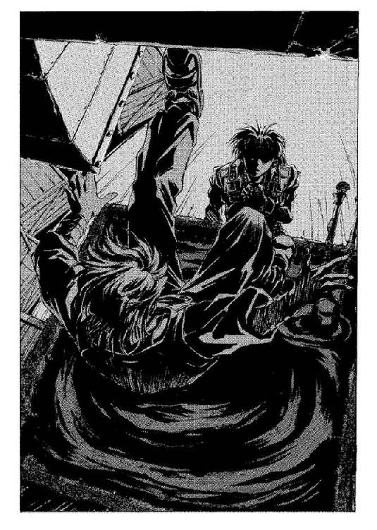
彼の足元には、体長二メートルはあろうかという巨大な魚が横たわっていた。形にしてみれば、マグロあたりが近いのかもしれない。都会育ちのオーフェンには、缶詰にも入っていない魚の区別などつきづらいところだったが。魚は真っ赤なエラを大きくふくらませ──呼吸できないせいか、いきなりぐったりと動かなくなった。だが、彼が凝視したのは、そんなことのせいではなかった。
魚の腹──真っ白というか、銀色の鱗に覆われた腹に、人が張り付いている。いや正確には、魚の鱗の下にいるようだった。まるで蛇に飲み込まれた獣が、獣の胃をたっぷりと膨らませているような格好である。薄いゴムの膜を押し付けられたみたいに、のっぺりした目鼻の輪郭だけを浮き上がらせて、気をつけの姿勢で人間が、魚にくっついている。ただその口の部分だけがわずかに開いていて、細いチューブをくわえていた。そのチューブは──視線でたどると──案の定、水槽の上の伝声管につながっているらしい。
そこまで見たときには、もう魚は身動きひとつしなくなっていた。
「な、なんですか、これ......？」
べったりと顔についた苔を落としながら、マジクが聞いてくる。オーフェンは、拷問されているような気分でつぶやいた。問いかけとは全然関係ないことを。
「分からねえよ。自分まで、クリーチャーに改造していたんだ、この馬鹿......」
「......え？」
「ただ言えることは......これが、ラモンだかキエフだか分からない、黒魔術士フォノゴロスの最期だ、てことだ」
そして......
気配を感じた、というよりは、恐らくそこにいるんだろうという直感で、オーフェンはふりかえった。足元で、濁り水が音を立てる。ふりむいた先には──
天上の穴から、黒い霧がゆっくりと舞い降りてきていた。霧はお約束どおり人の姿をとり──震える目で、こちらをにらみすえた。
「ニゲラレルモノカ──フォノゴロス──」
ちら、とマジクを見やると、少年はぞっとしたように、
「ぼくだけ逃げてきたんです。隙をついて、ダストシュートのようなものを見つけたんで、とっさに。クリーオウは──」
そこまで言って、続けられなくなる。マジクが震えながらまた目に涙を浮かべるのを見てから、オーフェンはゆっくりと足元でぐったりしている魚を指し示した。
「フォノゴロスなら、こいつだ。もう死んでいる」
が、亡霊──サミイは、頑なな仕草でかぶりを振ると、
「ソレハ──クリーチャー・ダ──フォノゴロスデハナイ──」
「くっ......」
（まさか......フォノゴロスの奴、サミイから逃れるために自分を改造したんじゃねえだろうな）
オーフェンは、わずかに腰を落とした。『亡霊』相手にどんな魔術が通じたものか、見当もつかないが......
と、そのとき、背後で扉が開く音が響いた。オーフェンはふりかえらなかったが、その扉を開けたヒリエッタがきっぱりと言うのを聞いていた。
「ようこそ。オーフェン。紹介しなければならないわね──彼がわたしの本当のスポンサー。サミイよ」
第五章 対決する愚か者たち
砕けた水槽から流れ出た汚水が、床に落ちて跳ね返り、また落ちる。ヒリエッタが開けた出口へと向かって流れていく水流の上で、オーフェンは無言で立ちつくしていた。ただじっと『亡霊』──サミイをにらみ据え、ひどく冷静に考える。
（フォノゴロスの話だと、クリーチャーは全部で四体......）
彼のまったくの無反応が少し意外だったのか、ヒリエッタがやや声を大きくする。
「フォノゴロスは数多くのクリーチャーを造り出したわ。動物や......あるいは無生物を基にして。でも彼が究極の目標としていたのはね、オーフェン、人間を改造することだったのよ」
「で......白羽の矢を立てられたのが、こいつってわけかよ」
オーフェンはマジクを背後に追いやりながら、ゆっくりと聞いた。眼前のサミイはゆらゆらと、その輪郭を崩しかけてはまたもとにもどすことをくりかえしている。
ヒリエッタが前に出てくるのが、濡れた床を踏みしめてくる固い靴音で分かった。彼女はオーフェンの横に並ぶと、さっと鞘から短剣を抜いた。
「ええ。彼の名前はサミイ。フォノゴロスの助手として、この屋敷に住み込んでいたのよ。今ではフォノゴロス作の最後のクリーチャーよ。最後にして......最悪の」
「......奴には、まともな思考能力が残ってるのか？」
オーフェンは右手をサミイに差し向けて威嚇しながら、静かに聞いた。ヒリエッタの表情がピクリと歪むのが見える。彼女はしばし逡巡し......かぶりを振った。
「あるわけないでしょ。肉体も、脳もないんだから。とうに発狂して、魔術士と見るや襲いかかるだけだよ。フォノゴロスと勘違いしてね──来るわよ！」
彼女が叫ぶと同時──オーフェンは背後のマジクの肩をつかんで、砕けた水槽のほうへ跳んで逃げた。ヒリエッタも部屋の反対側へと同じようにして跳び退っていく。それを見ながらオーフェンは、彼らの間を凄まじい勢いで通り抜けていく黒い霧に戦慄した。霧──サミイが疾風そのもののように地下室の空気を切り裂くと、入口わきの壁に激突し、四散する。爆音と──その壁に、ハンマーで打ち付けたような無数のひび割れを残して。
嘆息を混ぜつつ、オーフェンはつぶやいた。
「どうやら、ゆっくり事情を聞いてる暇はねえみてえだな。後回しだ」
が、そんなものをつぶやいている暇すらないらしい。ぶわあ......と部屋中に拡がっていた霧は、またゆっくりと部屋の中心に集まっていき──人の姿を取るや否や──
再びこちらへと向かって疾る！
「我は放つ光の白刃！」
オーフェンは向かってくる霧の真ん中へと吠えた。熱波を撒き散らす光の渦がサミイの霧を吹き散らかす。無散したサミイは海をたゆたう魚の群れのようにゆったりと彷徨し......三度、部屋の中心に集まっていく。
「お、お師様......」
後ろから、マジクの震え声。オーフェンはサミイを見据えながら、めんどくさそうに聞き返した。
「あんだよ」
「どうやって倒すんです？ あんな幽霊なんて......」
「奴は幽霊なんかじゃねえ。戦闘用のクリーチャーだ」
「だ、だから、そのクリーチャーってのはどう倒すんです？」
「そこの魚に聞けよ」
言ってオーフェンは、床に転がるフォノゴロスの死体を指さした。皮肉のつもりで言ったのだが、マジクはどうやら本気に取ったらしかった。はあ、とため息をつきつつのろのろとした足取りでそちらへと向かう──
「危ねえっ！」
オーフェンは、はっと気づくと、後ろからマジクを突き飛ばした。小柄な少年はそのまま数歩ばかりつんのめるようにして、汚水まみれの床に転んだ。がばっと起き上がり、非難じみた表情をこちらに向ける。
「なにするんですかお師様──」
だが、叫びかけてマジクも気づいたらしかった。一瞬前まで彼が立っていた床から、短い腕を精一杯伸ばすようにして、ナイフをくくりつけられた『手』が──ケンクリムが姿を見せている。
「げ......」
マジクが気味悪そうにうめく声が、空気のしけった地下室に響く。オーフェンは素早く自分の腕を引き絞るように構えると、叫んだ。
「我掲げるは降魔の剣！」
叫ぶと同時、手の中に、実際に剣を握っているような重みがかかる。彼は息もつかず、その見えない『剣』を床のケンクリムが姿を見せているあたりに打ち下ろした。『剣』が轟音を立てて、コンクリートの床を数センチほども穿つ──が、手ごたえはなく、太った『手』は亀裂の走った床へと、ゆっくりと沈み込んで消えていった。
と──
「うわあっ！」
再びマジクの悲鳴が響いた。見ると、なにやら黒い鞭のようなものが数本、天井のダストシュートから姿を見せている。鞭は触手のように不気味な動作を見せると、唐突に跳ね飛び、勢いをつけてマジクの足元に炸裂した。ざむっ！──と肉をえぐる音と、黒っぽい血が肉片とともに飛ぶ。命中したのはマジクにではなく、その足元に転がっていたフォノゴロスの死体にだった。巨大な魚の身体が、冷たい血をはね散らかしながら両断される。
「我は放つ──」
オーフェンはダストシュートの穴に狙いを定め、右手をふりあげた。が、それよりも早く鞭がこちらの気配に気づき、標的をこちらに変更するのが見える──
（間に合わない！）
オーフェンは胸中で悲鳴をあげた。
魔術が発動するよりも、向こうがこちらの首を刎ねるほうが速い──が──
ぎいん！
鋭い金属音に首をすくめると、彼のすぐわきで、黒い鞭の先をヒリエッタがナイフの背で受け止めていた。彼女の顔──緊張した笑みを浮かべる痩せた表情から目をそらして、オーフェンは叫んだ。
「我は放つ光の白刃！」
かっ！──
真っ白な閃光が地下室を斜めに横切り、穴を含めた天井の一角を打ち砕いた。瓦磔とともに土砂が崩れ落ち、同時に──ダストシュートの通路に挟まっていたらしい人影が、重そうな音を立てて床に落下してくる。床にまだ残っていた水に混じった土砂にまみれて、むっくりとその人影──真っ黒な鎧が起き上がった。
ヒリエッタがナイフを片手に警告してくる。
「......あれがアクセル。気をつけて。危険な奴よ」
「そんなの、どれだって危険ですよ！」
マジクがかん高い声をあげつつ、こちらに駆け寄ってきた。
（ま、確かにな──）
オーフェンは胸中で同意しながら、もう既に部屋の真ん中で人型を取ったサミイを見やった。
「どこから顔を出すか知れない『手』に、とんでもないスピードで鞭だが鋼線だかを投げてくる『鎧』、あげくの果ては熱も衝撃波も効かねえ『亡霊』ときた。こいつらを打ち倒そうってんなら、腕利きの魔術士が一部隊は必要だよ。俺にどうしろってんだ」
「彼を殺して」
ヒリエッタが即答する。
「......なに？」
「できないとは言わせないわよ。なんのかんの言ったところであんたは、この大陸で最も人を殺すのが上手な男のはずでしょ？ 黒魔術士チャイルドマンの秘蔵っ子──《牙の塔》のキリランシェロは、ね！」
「？」
マジクには、彼女の言ったことのうち、なにひとつとして理解できなかっただろう──こちらと彼女とを交互に見やり、きょとんとしている。オーフェンは、歯がみする思いで彼女をにらみやった。ヒリエッタは油断なくクリーチャーたちに向けナイフを構えながら、こちらの反論を予想して身構えている。が──オーフェンは、反論はしなかった。
代わりに、負け惜しみをひとつだけ言っておくことにした。
「......奴らが人間だったら、の話だろう」
「サミイは人間だったのよ」
「知ったことかよ」
オーフェンは低く毒づいた。ひどく胸がムカつく。当のサミイは『鎧』の背後に控えるようにしてこちらを見──土砂の中から立ち上がった漆黒の『鎧』アクセルは無表情で棒立ちだ。どこにいるのか知れない『手』は、その気配だけが四方八方から伝わってくる。このまま連中とやり合ったところで、いずれはこちらが消耗して自滅するのは間違いない。
（最良の手は、逃げることだ。が......）
オーフェンは額の汗を拭うと、こっそりとつぶやいた。
「怪物になるなんてのは、アザリーひとりで十分だったんだよ」
「......え？」
自分で思っていたよりも大きな声を出してしまっていたらしい。マジクとヒリエッタが同時に聞き返してきた。
オーフェンは無視して静かな──静かな目付きで、真正面からマジクを見やった。
「......おい。クリーオウが死んだ、てのはホントか」
「あ......」
開いた口に手を当てて、マジクが絶句する。言ってしまったことを後悔しているのだろう。だが、そのまま無言で見つめつづけると、彼は汚れた顔に神妙な陰りを見せてうなずいた。
「え──ええ」
「そうか......」
オーフェンはそれだけ答えて、今度はヒリエッタへと向き直った。
「この場は退却だ。こんな密室じゃ、いずれ追い詰められる。合図をしたら出口に飛び込むんだ。君が最初で、次がマジク──」
「......一応、あんたの意見には賛成だけどね」
ヒリエッタは、真っ赤な唇を噛みながらこちらのせりふを制止してきた。
「大事なことを忘れてるんじゃない？ クリーチャーは全部で四体いるのよ」
彼女のつぶやきにぎょっとして、オーフェンは扉が開いたままになっている出口へと視線を転じた──
そこには、ひょろりとした体躯の半人半蛇──キキュイームが、なにをするでもなく、ただぼーっと突っ立っていた。
◆◇◆◇◆
「う......」
長く、細いうめき声をきしるように喉元から押し出し──コーゼンは意識を取りもどした。頭蓋の奥から波が押し寄せるように、頭痛が響く。落ち着いてくると、痛みが頭だけではないことが知れた。左肩の傷口も、出血は止まったようだが、鈍痛を残している。
「くそっ──たれが」
唾を吐きながら、上体を起こす。痛む頭を押さえて、彼は周囲を見回した。いまだ霞んで見える視界は、あまりにも暗い──失明したのかと、ぞっとする懸念が浮かんだ。が、ややすると、ゆっくりと目が暗闇に慣れてくる。
そこは、部屋の中だった。窓もなにも内側から打ち付けられた、物置小屋のような一室である。もっとも、ちらとでも見回してみれば、その部屋が物置でないことは容易に知れた。彼が倒れていたのは床の上だが、部屋の中央にはしっかりとベッド──と言うより、手術用の寝台が据え付けられている。天井に照明器具の類いはなかったが、ガス灯のフックだけは、引っこ抜けそうになりながらも付いてはいる。まあ部屋には明かりがまったくないわけではなくて、天井に大穴が開いており、そこから昼下がりの青空がのぞいていた。
部屋はかなり広く、漠然とした気配から、二階にあるのだと知れた。部屋の片隅にはガラクタとしか思えない残骸に混じって、キャビネットやら手術用具？ のようなものものぞいている。
「手術室、か......」
ごく単純にコーゼンは、そう思った。とすると、ここは病院かなにかなのか......
腰に下げている鞘から剣を抜いて、コーゼンはさらに注意深くあたりを探った。記憶は定かではないが、自分はあの得体の知れない『亡霊』どもにここに連れてこられたのだ──確か。『亡霊』の起こした突風と、小型の竜巻に乗せられて。あの天井の穴からこの部屋へと落とされたのだろう。そんな方法で長距離を移動できるわけがないだろうから、この場所というのは村からそう遠くに離れているはずはないのだが。
「待てよ」
と、コーゼンは閃いた。
「そう──フォノゴロスだ。そう言っていたな。異端者フォノゴロスの屋敷が、このあたりにあると聞いたことがある。ひょっとしたら、ここがそうか......」
歩きだして彼は、ぐにゃりとした感触を足の下に感じた──いやな表情で、そちらを見やる。と、それは巨大な埃の塊だった。踏み潰した塊のあちこちから、細い白骨がはみ出すように突き出ている。どうやら猫の骨らしいのだが──ところどころ、猫のものとは思えない奇怪な骨も混じっている。
「完全に腐食して、埃になったのか。にしても、なんだこりゃ。猫って手足が五本もあったっけか？」
あるわけないのだが、そんなことはどうでもいい。コーゼンはそう判断すると、顔を上げた。中央の寝台のことが気にかかっていた。ぐったりと誰かが横たわっている──
近づくとそれは、さっき村で会った──どころか蹴りまでもらった少女のものだと知れた。目を閉じて胸元で手を合わせ、身動きひとつしないで横になっている。呼吸をしている動きすらない。
（外傷はないようだが......？）
コーゼンはいぶかしみつつ、少女の首筋に指を当てた。しばらくしてから、嘆息する。
「死んでいる──いや......？ なんだ？」
分からない。が、確かに脈はない。体温も、室温よりは高いがかなり冷えている。
だが、違和感がある。この少女の胸元にナイフでも突き立っていたなら、コーゼンもさして気にはしなかっただろうが──まったく死因が見当つかないのだ。窒息死なら、こんな綺麗な顔で死ねるはずがない。脊椎のあたりを骨折した様子もない。ショック死なら、目を閉じているのはおかしいような気もする。ガス中毒死や凍死ならこういう状態で死体が発見されることはあるだろうが、こんな夏も近い陽気で凍死もくそもないし、ガスだったら自分も同じように死んでいるはずだろう。唯一あり得るとしたら病死だが、瀕死の病人に自分がああまで派手に蹴りを食らったとは考えたくない。
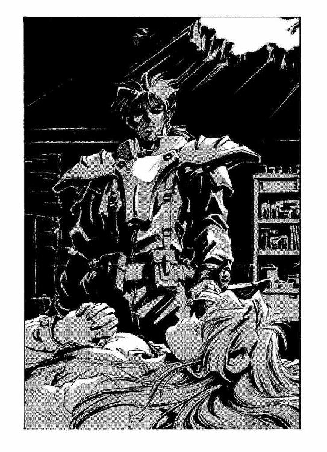
「まあ......いいか」
コーゼンはその一言で済ませると、剣を鞘に収め、代わりに少女を抱き上げた。特に意味はないし、結局は彼には見当のつかない殺人方法があるというだけなのだろうとは思うのだが、仮に死体だとしても、顔見知りの女の子をこんな化け物屋敷に置き去りにするというのは寝覚めの悪いものがある。
思ったより軽い少女を両手に抱き抱え、コーゼンは持て余し気味にあたりを見回した。部屋にはすぐに、出入口の扉がある。が──素直にそこから出ていってしまっていいものかどうか、確信が持てなかった。少女の腋の下のあたりで、彼の右手の傷痕が悩むように身動きをする。
と──
彼はふと、妙なものに気づいた。ガラクタに紛れて部屋の隅に、室内にあるのでなかったら井戸と勘違いしそうな穴がある。近寄って、そちらをのぞいてみると──
どうううううんっ！
爆音と、閃光のようなものがちらりと見えた。
「──魔術か？」
彼がつぶやくと同時、
「そんなの、どれだって危険ですよ！」
確かにこの少女といっしょにいた、あの見習い魔術士の少年の声がかすかに聞こえる。
「この穴の下で......戦闘が起こっている？」
コーゼンは口早につぶやいた。
「深さからして......地下室、というところか。魔術を使ったということは、あの男がそこにいる──なんだっ？」
どんっ！
いきなり突き飛ばされてコーゼンは、二、三歩後ろに退いた。彼を突き飛ばしたのは──黒い霧！
同時に彼を取り巻くように、ぞわっ──と、霧が拡がる。もともと暗い部屋の中が、今度は渦巻くような暗黒に呑まれた。混乱の中でコーゼンは、少女の死体を取り落としたのに舌打ちした。彼女を見捨てるのは忍びないが──逃げないと、自分がやられてしまう。
「くそっ！──」
腰の鞘に手をやる──が、あるはずの剣がない。
「なんだと──？」
悲鳴をあげる彼の眼前で、いきなり黒い霧がふたつに裂ける。その真ん中から、彼の剣が白刃を閃かせて、持ち主である彼の胸元へと飛び込んでくるのが見えた──
◆◇◆◇◆
「......実力において、どう逆立ちしても敵わない相手と戦わなければならないとき──さらにそいつらにどうしても勝ちたいときは、どうすればいいと思う？ キリランシェロ」
ゆっくりと、暗い影の奥から語りかけてくるのは、物静かで感情のない声──大陸最強の黒魔術士チャイルドマンの声......
オーフェン、いや当時のキリランシェロは、分からないとだけ答えた。対して教師は、肩をすくめてあっさりと言ったのだった。
「イカサマするのさ」
思い出しちまった──と、オーフェンは舌打ちした。積み上げられた十数の木箱を背後にこちらを見据えて並ぶサミイと『鎧』──そして唯一の出口をかため、こちらを挟んでいる『蛇』、そして姿のない『手』──四体のクリーチャーの気配にじっと堪えながら、彼は独りごちた。
「思い出しちまったよ」
「は？」
と、これはマジク。迷子になりかけた子供みたいに、ヒリエッタの腰にがっしとしがみついている。女暗殺者がわずらわしげに見下ろしてはいたが、マジクは気づいていないらしい。
オーフェンは微苦笑を浮かべつつ、額のバンダナをむしり取った。
「思い出しちまったからには......しばらく俺はオーフェンじゃない」
訝しげな視線を上げる弟子を無視して、少年の手の中に無言でバンダナをほうり込む。次いでジャケットを脱いで、それも渡した。最後に......首から紋章のペンダントを外す。
剣にからみついた、一本脚のドラゴンの紋章──《牙の塔》の黒魔術士の証明。手にとってしげしげと眺めてみる。羽根を広げたドラゴンの背中、つまり紋章の裏側には、持ち主の名前が刻み込まれている。彼の紋章にはキリランシェロ──大陸の魔術士たちの間では奇怪な伝説になりつつある名前が記されていた。オーフェンはそれを見てにやりとし──その銀製のペンダントも、マジクに手渡した。
「お師様......？」
いくつかの手荷物を両手に、マジクが聞き返してくる。オーフェンはサミイのほうへと視線を向けながら、
「俺が死んだら、その紋章を持って《牙の塔》に行け。少なくとも相手にはしてもらえる。《塔》では......チャイルドマン教室のフォルテ・パッキンガムを教師に選べ。俺の名前を出せば、無下にも断れんだろ」
「お、お師様っ！」
まるっきりびっくりした顔で、マジクは声をあげた。緑の瞳を皿のようにして続ける。
「死んだらって、そんな縁起でもない──」
「うるせえな。万一ってことだ。保険だよ」
と、オーフェンはヒリエッタに向き直った。
「あの『蛇』は俺がなんとかする。奴が戸口から姿を消したらマジクを連れて逃げろ」
「......なんとかするって、どうするつもり？」
ほおに汗を垂らして、ヒリエッタが聞き返してくる。オーフェンは答えなかった。
「言ったら、奴らにも聞かれちまうだろ。とにかく俺が連中を引き付けておく」
「ひとりでこいつら全員と戦うつもり？」
「まあ、そうなるな」
「サポートもなしに戦えると思ってるの？」
（......クリーオウと同じこと言いやがる）
オーフェンは苦笑しつつ、
「ああ」
彼が事もなげにあっさりとうなずいたので、意表をつかれたのだろう。ヒリエッタが一瞬絶句するのが見えた。と、その横からマジクが口を挟んでくる。焦燥のような表情を浮かべて、早口に。
「なんとかなるわけがないじゃないですか、こんな連中相手に！」
「なるんだよ」
オーフェンは、無表情の静かな笑みを浮かべた──
「刺し違えてでも、こいつら全員スタッブしてやるさ」
暗殺、と言ったのだが、マジクはそんな単語は知らなかったらしい。不理解の眼差しを投げ返してきたが、すぐにそんなことはどうでもいいと気づいたようだ。
「なんでそんなことをする必要があるんですか！ こんな連中、お師様には関係ないでしょう！」
「お前が言ったんだぞ。クリーオウがこいつらに殺された、てな」
「な......！」
マジクが、驚愕の声を出す。
「ひょっとしてお師様、仇をとるっていうんですか？」
「こいつら、クリーオウを殺したんだ。それ相応の報いは受けてもらう」
言って、オーフェンは駆け出した。地下室の奥──サミイへと向かって、一直線に。彼の動きを見て『鎧』がゆっくりと緩慢な動作で動き出す──
「オーフェン！」
「お師様！」
背後から追いかけてくるふたりの呼びかけを無視して、オーフェンは大声で叫んだ。
「俺はここだぞ、サミイ！」
すぐ前に迫ってきた『鎧』の漆黒の面ぼおに向けて右手を突き出しながら──
「俺がフォノゴロスだ！」
その声を呪文にして、魔力を放出する。至近距離から放たれた光熱波が、真正面から『鎧』の顔面を打ち倒した。特に効いた感触はないのだが、それでも爆発の衝撃で、二百キロはあるだろう巨大な鎧の人影は、数メートル後ろまで吹き飛ばされた。ぐわしゃん、と重々しい響きが地下室にこだまする。
オーフェンは足を止めず、そのまま走り込んでいった。
その正面でサミイが──見るからに表情をこわばらせ、叫ぶ──
「フォノゴロスハ──ココダ！ コロセ──！」
きしゃあああああっ！
背後、部屋の入口あたりから声があがる。『蛇』が喉をきしらせる音──思ったとおりだ、とオーフェンは胸中でつぶやいた。
（やっぱりこのクリーチャーども、サミイにすべてコントロールされてやがんだ！）
「我は放つ光の白刃！」
渾身の力を込めた光の奔流が、サミイの中心に突き刺さった。爆音とともにサミイの霧の身体が、文字通り霧散する。
同時にオーフェンは、くるりと背後に向き直った。入口に待機していた『蛇』が、ひょろりとした足取りで、だが異様に素早くこちらへと向かってきている。マジクとヒリエッタの横をすりぬけて──正面から見たらラグビーボールのような形の頭部が、あぎとを開き──
しゃっ！
短い息吹の音がすると、その口の中央から黄色がかった液が吹き出されてきた。とっさに横に跳んでかわすが、床にかかった液は異様な音と臭いを発して白い煙をあげた。じゅうじゅういいながら、コンクリートの床が溶解していく。
（毒液！）
滑り込むようにして『蛇』の身体のわきをすりぬけ、背後へと回り込みながら、オーフェンはそう気づいた。ぽん、と軽く手を置くようにして、『蛇』の鱗だらけの背中に右手を当てると、
「我は見る混沌の姫！」
超重力の渦が蛇人間の身体を取り巻き、長細い体躯を問答無用で床へとたたきつぶす。
沈没する船のような格好で倒れる『蛇』を見送る間もないまま、なんとなく次の攻撃を予想して、オーフェンはジャンプしていた──見下ろすと、やはり床から出てきたケンクリムの指先が、獲物を捕らえ損なって無念げにまた床へと消えていくのが見えた。
たん、と着地してオーフェンはクリーチャーたちへと向き直った。部屋の中には、もうマジクとヒリエッタの姿はない。急いで階段を駆け登っていく足音が、ぱたぱたと響きつづけているだけだ。
じっと見やると──それぞれ一撃ずつの攻撃を受けたにもかかわらず、クリーチャーたちはまったくダメージを見せていなかった。『鎧』は何事もなかったようにむっくりと起き上がっているし、『蛇』もきちきちと音を立てながら肩越しにこちらを見ている。いったんは四散したサミイも、やはりまた同じ位置に集結しつつあった。『手』は、どこにも姿を見せていない。
戦闘生物たちと部屋にひとり残って、オーフェンは腕組みした。そのまま対峙して──サミイがまたもとにもどるのを見ながら、彼は告げた。
「調子に乗るなよ。俺は本気だ。念のため言っておくが......」
と、目尻を吊り上がらせ、続ける。
「俺は怒り狂ってんだぜ」
第六章 愚者たちが愚かをやめる
「我は放つ光の白刃！」
一条の光熱波が、起き上がった『蛇』の頭を打ちすえる。ハンマーで横から殴られたように横倒しになった蛇人間に、オーフェンはさらに呪文をたたき込んだ。
「──光の白刃！」
文字通り光の剣のごとく、白光の帯が標的の身体を縦に撫で斬る。そして──
「我は放つ光の白刃！」
きゅぼうっ！──小さな爆音を立てて、三度目の光熱波が炎をあげる。空間に溜まった熱が球電と化したのだ。もっとも──真っ赤な輝きをあげる熱波の中でも『蛇』は傷を受けていないようだったが。
見届けてからオーフェンは、後ろに跳んだ。だん、だんっと後ろ向きにジャンプして、そのまま地下室から外に飛び出す。彼は、開けっ放しになっていた扉を思い切り押して部屋を閉ざした。両手を扉に押し当てたまま、叫ぶ。
「我は閉ざす境界の縁！」
がくん──と、重い鋼鉄の扉が揺れる。これで、この扉はちょっとやそっとのことでは動かなくなったはずだ。さらに──
「我は与う巨人の幸い！」
叫んだ瞬間、扉がさらに胎動するように震える。見ているうちに扉はほんの少しばかり膨張し、周りの壁に、みしっと食い込んでいった。扉の金属を膨張させたのである。
ふう、とオーフェンは嘆息した。あごの下の汗をぬぐいながら、
「ここまでやりゃあ、解体屋でも呼ばねえかぎりここは開かねえぞ──あのサミイや鎧やらはともかくとして、蛇野郎は少なくとも肺呼吸してるだろ。あの炎の中に閉じ込められれば窒息死するはず......」
自分に確認するようにつぶやく。地下室の中の、弱々しい照明から閉ざされ、真っ暗になった階段の踊り場に、オーフェンはおぞけを感じたように身体を震わせた。扉から手を離し、一服するように吐息する──が──
びぢいいいっ！
湿った布でも裂くような音が一度だけ響くと、扉が食い込んでいる壁の隙間から──薄黄色の毒液が染み出してくる。異臭が鼻をついた。見る見るうちに壁は溶解して──
間もなく、扉はこちらに倒れてきた。
「うぉわっ！」
オーフェンは後ろに跳んでそれを避けると、部屋の中をにらみやった。入口に、でんと『蛇』が立っている。その口元から、だらだらと毒液の余りが垂れていた。蛇の背後、地下室の中では、もう炎は消えたらしく、もとからあったぼんやりとしている小さな明かりだけがこちらにまで漏れてきている。
「くそっ......」
オーフェンは、呆然と毒づいた。
「どういうこった。扉のことはともかく、あれだけ熱衝撃波を食らえば要塞の壁だって穴が開くぞ？」
だが『蛇』の身体には傷ひとつない。もっとも、あれだって生命体である以上、衝撃で内臓にいくらかのダメージはいっているはずだが──おい、待て。
オーフェンは、ぞっとして思い出した。
（こいつの皮膚......ヒリエッタのボディスーツ。あれと同じなんじゃねえか？）
彼の脳裏に、いかなる物理的な加撃も通用しなかった黒革のスーツのことが浮かぶ。
だとしたら──
愕然と見ている間にも『蛇』はきちきちと音を立ててこちらへと顔の正面を向けている。
（まさか──ヒリエッタ。彼女もクリーチャーなのか？）
『蛇』があぎとを開いた。
その一瞬後に毒が吐き出されてくるのは分かっていた──だからオーフェンは、反射的に後ろに跳び退こうとはしていたのだ。が──いきなり、右足が床に張り付いたように動かなくなる。
（────！）
致命的な悪寒を覚えて彼は、動かなくなった右足を見下ろした。鉄板を中に入れて補強してある頑強なブーツを、キッチンナイフをくくりつけられた太った『手』が、がっしりとつかみ込んでいる。革の表面に、ささくれのような傷痕をつけてナイフの刃が食い込んでいるのが見えた。
そして次の瞬間、彼は毒液を食らっていた。
「ぐ────！」
悲鳴をあげなかったのは、奇跡に近かった。わずかに身をよじったため顔面にかかるのは避けられたが、強烈な酸の臭いを発する毒液は彼の左の肩口からへそのあたりまで、刀傷ならば袈裟斬りと呼ばれる軌跡で異様な煙をあげている。まず服の繊維が溶解する異臭と、そして激痛とが全身を貫いた──いや、貫くというよりは、染み込んできたというほうが近いかもしれない。目に見えて皮膚が溶け、筋肉のピンク色がのぞく。黄色い煙をあげる凄惨な傷口に血がにじんでは、毒液に分解されてただの異臭と化す。
「わ・れ・は──」
オーフェンは肩口に右手を当て、叫んだ。さっき悲鳴をあげていたら、この呪文は唱えられなかったかもしれないと思いつつ。
「癒す、斜陽の傷痕！」
なによりも危険だったのは、激痛だった──そしてそれ以上に、精神的な衝撃だった。外傷は最も癒すのが簡単だが、精神的な負担に関してはとてつもなく大きくなる。特に傷の状態が凄惨になればなるほど、それだけでショック死することもあり得た。
だが魔術が発動すれば、傷口は時間が逆転するように一気に治癒していった。破れたシャツはそのままに、下の肌だけはつやつやとした新しい肉が再生されていく。
オーフェンは傷が治るが早いか、右手だけを『蛇』へと振り向け、叫んでいた。
「我は呼ぶ破裂の姉妹！」
見えない衝撃波が『蛇』の身体を弾きとばす。それと同時にオーフェンは、自分の身体にもその衝撃波をたたきつけていた──息も詰まる衝撃に内臓がしびれるが、それによって自分の身体も後ろに飛ばされ、右足を『手』の拘束から引き抜くことはできた。
階段にしたたかに背中をたたきつけられながら、オーフェンは起き上がった。似たような格好でやはり倒れている『蛇』に指を突き付け、
「我導くは死呼ぶ椋鳥！」
ゔゔんっ──と鋭い羽音のような音波が『蛇』の身体に収束していく。妙な形に腰を曲げている蛇人間は、びくんと跳ね上がるように身体を震わせると、やんちゃな子供の手の中にある玩具みたいな軌跡で床に卒倒した。
（やっぱり──反応がヒリエッタと同じだ。こいつ、頑丈だっていっても、皮膚だけなんだ。内臓の強度はそれほどでもない）
それがなんであれ、たったひとつでも弱点があるのならば、打つ手は無限にある──これも彼の師の言ったことだったが。
（そういや、フォノゴロスの奴、こいつらはみんな試作品だっつってたな。となると、それぞれ欠陥があるのかもしれない）
「ついて来いよ、サミイ！ 俺はフォノゴロスだぞ！ 上に逃げるぜ！」
オーフェンは階段を駆け登りながら、見えない背後に向かって叫んでいた。地下室──安置室とヒリエッタは呼んだっけか？ その部屋の奥にいるはずの、恐らくは記憶力も持ち合わせてはいないだろう『亡霊』に向かって。
ついでに、その声を呪文にして魔術をかける──真っ暗な階段を、彼の手のひらから飛び出した鬼火のような明かりが照らした。鬼火を追いかけるようにして、彼は全力で階段を登りきった。階段の上の廊下に、転げ出すようにして飛び出る。
と──
階段を登りきって足は止めずに、彼は横に跳んだ。そのすぐ後を、鋭い音を立てて黒い鞭──『鎧』が階下から放ったのだろう触手が走る。すんでのところで的を外して、鞭は壁を直径数十センチほども陥没させた。あまつさえ鞭の先は壁に突き刺さり──
「────！」
オーフェンは、声にならない悲鳴をあげた。鞭はいきなり下から引っ張られたようにぴんと張ると、巻き上げ機のようにうなりをあげ、一気に階下から『鎧』の本体、漆黒の甲冑を引き上げはじめた。がつがつと、階段のあちこちにぶつかる騒音を立てながら、重い『鎧』が弾丸のように飛び出してくる！
ごすん！ と最後に鞭の先を突き刺していた壁に衝突し、『鎧』は止まった。だが、何事もなかったように頭だけをこちらに向き直らせて──
甲冑の、面ぼおの部分が、わずかに開くのが見えた。刹那、オーフェンは叫んだ。
「我は踊る天の楼閣！」
ぶんっ──と、視界がブレるように霞む。一瞬後には、彼は空間を跳躍して、それまで立っていたところから数十センチほど後方に瞬間移動していた。『鎧』の面ぼおから、ぴうという鋭い音が耳を打つ。同時、なにかきらきらとした輝きが、さっきまで立っていたところを──つまり目の前を軽く薙いでいった。
（鋼線──）
鬼火の明かりに反射して、水玉のように爆ぜる輝きは、凄まじい勢いで繰り出される鋼の糸のものだった。この勢いならば、腕一本とはいかないまでも、指の二、三本なら軽く斬り落とせるだろう。間合いが近ければ首だって落ちるかもしれない。となると、受け止めて防ぐような真似はできない。
（つくづく厄介な化け物を造ったもんだ、くそ──）
眉間のあたりに、小さな痛みが走っていた。今の鋼線がかすめたに違いない。皮膚に血が滲む感覚にオーフェンは苛立った。さっきから手傷を負ってばかりいる。《塔》にいた頃の自分なら──キリランシェロならば──この程度の攻防で外傷を受けるようなことはなかったはずだと、彼は胸中で毒づいた。
（弱くなっている......俺は）
だが──
「クリーオウを殺したんだから、お前らも地獄に落ちるんだよ！」
オーフェンは吐き捨てるように言うと、二撃目の動作を見せている『鎧』に向けて腕を突き出した。
「我は放つ光の白刃！」
『鎧』が爆光に呑み込まれるのを見てから、オーフェンはきびすを返した。鬼火を道案内にして、ホールへ向けて走りだす。
（女神様のお膝下で決着をつけてやる。だが──）
だが、俺ひとりで勝てるのか？ と彼は自問した。
（確かにサポートは必要なのかもな。すまない、クリーオウ──）
オーフェンは無言で走りつづけた。
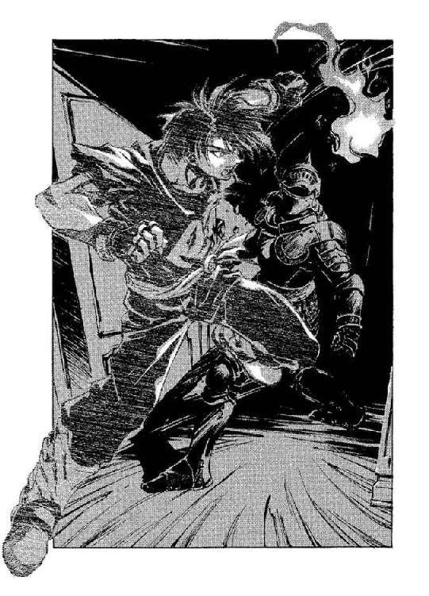
◆◇◆◇◆
「......本当にここか？ 商会員Ａ」
「ハーシェルなんだけどな」
「なに？」
「だから、ぼくの名前。ハーシェル・ルイス」
自分のことを指さしながらそう名乗る宿屋の子供──まあどうせ兄の頭の中では永遠に『商会員Ａ』のままなのだろうが──を見返し、ボルカンは案の定、ふんと鼻を鳴らした。
「戦士に過去なぞいらん！ 名前は捨てろ！」
（またいいかげんなことを......）
ドーチンは嘆息まじりに考えたが、なにも言わなかった。無言のまま、兄の背負っているシーツの旗をちらと見やる。どこから調達してきたか知らないが、兄はまた新しいシーツにペンキで『ボルカン商会の浮沈をかけた第二回大会──無慈悲な借金取りに謝ってみて駄目だったらとにかく逃げようね！』とか書いて、それを肩に載せるようにかついでいる。と、ハーシェルが反論した。
「名前を捨てたら、なんて自己紹介すればいいのさ」
「当然、商会員Ａだ」
前に並ぶ五人の子供のひとりを、ぴしと指さして、ボルカンは言い切った。指さされた子供が、きょとんと言い返す。
「ぼくはウェスだよ。ハーシェルは──」
「あ、こっちか」
「ぼくはミケーレ......」
「じゃ、こっち」
「ランベルトだってば。覚えてよ」
「お前は？」
「トビー」
「ええい、ややこしい！ なら、お前だっ！」
「ぼくだってカウフマンって立派な名前があるんだぞ」
「こなくそ──」
意地になってまたほかの子供を目で探す兄のマントを、後ろからドーチンは、くいとひっぱった。
「なんだ？」
ボルカンがふりかえる。ドーチンはつぶやくように言った。
「兄さん、名前の数、もう人数を越えてる」
「............」
兄はそれを聞いて、虚空を見上げて少し考え込んだ──昼下がりから夕刻に近づきつつある空は、綺麗に澄み渡っている。風は心地よく吹き抜け、鳥の声が響いていた。しばし待ってから、ようやく兄は気づいたようだった。子供たちに向き直り、
「お前ら！ おちょくってやがんなっ！」
ボルカンが殴り掛かるように旗を振り上げると、ひゃーとか悲鳴をあげながら子供たちが四方へ逃げ出す。それを追い回す兄の背中を冷たい視線だけで追い、その場でとどまってドーチンは、彼ら『商会』を見下ろすようにたたずんでいる大きな屋敷を見上げた──
眼前にあるのは、宿屋の子供ハーシェル──だかトビーだかカウフマンだか──が喜々として案内してくれた『幽霊屋敷』だった。まあ、少なくとも名前負けだけはしていない廃屋で、窓も内側から打ち付けられ、外から内部をうかがうこともできない。
あの後、幽霊が根城としているのはこの屋敷だという情報を兄が手に入れ（わざわざ聞き込まなくても見当がつきそうなものだろうとドーチンは思ったのだが、例によって口には出さないでおいた）、虜になったクリーオウたちを幽霊からとりもどせば借金取りの怒りを招かずにすむはずと、ここまでやってきたのである。
と──
「お前ら、たいがいにしとかんと、人生で悟り殺すぞ！」
見ると、兄が商会員の最後のひとりを捕まえて足蹴にしているところだった（弱い者には強い兄だ）。ボルカンが、ぶんぶかと旗を振り回しながら続ける。
「いいか！ この大会には、俺の命運がかかってると言っても過言ではないんだぞ！ あのクソ借金取りの怒りなんぞ、バーゲンセールしてよーが買うもんじゃねえんだ！ あの非道野郎、いつだったか俺がちょいと肩をぶつけただけで時計塔から逆さ吊りにしやがったんだからな！」
まあそれは本当だけど、とドーチンは胸中でつぶやいた。あれは実験助手のバイトをしていたときのことで、濃硫酸がなみなみ入ったタライなんぞ持ってるところを背中から押されたんだから、普通そのくらいは怒るだろうと思うんだけどな。
そんなことを考えていると、突然、玄関が開いた。幽霊屋敷の中から、ばたばたと慌ただしく金髪の見習い魔術士──マジクが飛び出してくる。
「あれえ？」
と、少年はこちらを見て声をあげた。
「なにやってんのさ。こんなところで」
「いや......なにって──」
ドーチンは言葉を濁して、やはりきょとんと少年を見ている兄のほうを指さした。その指の先で、はたはたとシーツに書かれた青ペンキの文字がはためいている。
「ふうん......まあいいけど」
はあはあと息を切らしながら、マジクは納得したようだった。と、真っすぐにこちらに向き直り、
「ところでさ、ほら、ぼくより早く、例の女の人がここから出てこなかった？」
「女の人？」
「ええと......ヒリエッタとかいう、やたらアブない感じの。途中ではぐれちゃったんだ」
「さ、さあ......誰も出てきませんでしたけど」
ドーチンがかぶりを振ると、マジクは目を曇らせた。
「参ったなあ......お師様にどやされるかも」
「あ。僕らと立場がおんなじですね」
と、そんなことを言っていると──
がしゃああああん！
頭上から──窓ガラスと、そこにはめ込まれている木板が砕ける音が響いた。見上げると、二階の窓が内側からたたきこわされたところだった。と、破られた窓の中からなにかが宙に身を躍らせ──
そのまま落下してきた。ぼすん、とまるで捨てられたように無気力に、ひとりの人間が地面に激突する。けっこう体重がありそうなその身体は、いったんバウンドしてから、おそまきながら受け身を取って動きを止めた。
「あ──さっきの殺し屋！」
ドーチンは指さして声をあげた。殺し屋──コーゼンとかいっていたその男は、顔面を恐怖にひきつらせ、ケガをした左肩を押さえてうずくまっている。ドーチンはあわててマジクのほうを見上げた。多分、今ここにいる中ではまだしも戦闘能力を持っているであろう少年は、なんとか気丈に身構えてはいる。子供たち──いや商会員たちか、まあどっちでもいい──は、五人集まって硬直している。兄はそもそも問題外だから見もしなかった。
コーゼンはゆっくりと声を出した──文字通り、吐き出すように。
「なにモンだ、あの女......」
「へ？」
ドーチンが声を発するが、コーゼンはそれきり、いきなりばたんと地面に倒れてしまった。倒れたまま動かない殺し屋を全員で見下ろして、ボルカン商会（プラス一）は、いつまでもそこにたたずんでいた。
◆◇◆◇◆
ホールまで走る間にも、背後から次々と鞭は放たれてきた──それを本能的にかわしながらオーフェンは、ただひたすら足だけは止めないよう走りつづけた。立ち止まれば──今も廊下の左右で爆音にも近い破壊音を撒き散らしている鞭に捕らえられることになる。そうなれば、もう命はない。
ホールへの入口にたどり着く──ホールの中は、二時間ほど前にこの館に入ってきたときと同じく、何事もなくたたずんでいた。もっとも、廊下から絶え間なく響いてくる『鎧』の足音は完全に静寂を壊していたが。オーフェンはホールを横切るように走ると、向こう傷の女神像の足元へと身を隠した。『鎧』の鞭を防げるほどの障害物はこれしかなかったし、それに──高さ四メートル近くある白亜の彫像は、なんとなく自分を守ってくれそうな気がしたのだ。
女神像の陰から通路をじっと見て──ホールへと最初に飛び込んできたのは、『鎧』ではなく『蛇』だった。移動速度ではあの重そうな甲冑より勝るのだろう。飄々とした表情で、半蛇半人のクリーチャーはホールへと踏み込んで、キイと鳴き声をあげた。そして──迷いもせずにこちらへと向かってくる。
（くそ──嗅覚まで蛇並かよ！）
オーフェンは彫像の陰から跳び退くと、床に転がりながら呪文を叫んだ。
「我は見る混沌の姫！」
あたかも黒いドレスをまとった貴婦人が抱き着くように、影のような重力渦が『蛇』を打ち倒す。外傷を与えられない以上は、ごく純粋なパワーのほうが有効だった。『蛇』が吐き出すつもりだったらしい毒液が、射線をそらされて空しく宙に散る。オーフェンは間髪入れず、倒れた『蛇』へと駆け寄っていった。
クリーチャーに馬乗りになるようにして、蛇の喉元に手を当てる。
「我は裂く大空の壁！」
ずん！ と、かまいたちが『蛇』の首を打った。悲鳴をあげて、『蛇』があぎとを開く──オーフェンは躊躇せず、その口蓋に左拳を突っ込んだ。
「あばよ」
つぶやいてから、さらに、叫ぶ。
「我は呼ぶ破裂の姉妹！」
──ほんの一瞬の出来事だった。『蛇』の身体が膨れ上がるように跳ねて、次いで、眼窩と言わず鼻孔と言わず、身体中の穴という穴から体液と肉片が弾け飛ぶ。衝撃波が、蛇の内臓をあらかた吹き飛ばしたのである。飛び散った返り血を右手で払いながら、彼は左拳を引っこ抜いた。いつもはめている革グローブが、毒液のせいでぼろぼろに溶けている。毒が皮膚に回らないうちに、オーフェンはグローブを外して床に捨てた。
「まずは一匹──」
もう動かない『蛇』から視線を外して、彼は通路の入口へと向き直った。ちょうど『鎧』がそこに姿を現している。黒の甲冑は、恋人を待ち受けるように両腕を広げて──
「なに？」
オーフェンはうめいた。『鎧』の身体が、甲冑の真正面が、ばくんと音を立てて蓋を開けたのだ。
甲冑の中には、ただ鋼を紡いだものらしい黒い縄が幾条も、無数にからまりあって、人型の塊のように収まっている。ほかにはなにもない。そして──
あっと思ったときには、その何十本もの鞭がすべて、こちらに向かって飛んでくる！
「くそっ！」
オーフェンは唾棄するように言うと、『蛇』の死体を引っつかんで『鎧』のほうに放り投げた。無数の鞭が、内臓を失い軽くなった『蛇』の死体をばちばちと打つ。頑強な蛇の皮膚は裂けはしなかったが、死体は跳ね飛ばされてホールの向こうまで弾き飛ばされていった。
だがその隙に、オーフェンもその場から移動している。甲冑をはだけた『鎧』の上半身に向けて右手を突き出し、
「我は放つ光の白刃！」
放たれた光熱波が『鎧』を打ちすえる。装甲のない、鞭だけの胸を狙ったのだが、どのみち同じことのようだった──『鎧』は何事もなかったように、また起き上がろうとしている。『蛇』にはまだしも内臓があったが、こちらの甲冑には中身すらがない。
（となると、あいつを倒すには甲冑そのものを徹底的にたたきつぶすしかねえってのかよ）
それは必ずしも不可能なことではなかったが──
動悸の収まろうとしない心臓を抱えるようにして、オーフェンは再び女神像の陰にもぐりこんだ。上気した顔を、とめどない汗が滴る。息も完全にあがっていた。
（体力がもう限界だ──こんなに立て続けに魔術を使ったことなんかねえからな）
こうなると、もうこれ以上無駄な攻撃などできない。あと一撃か二撃で確実に倒さなければ、こちらの体力が尽きてしまう。
息を切らせてそうつぶやき、オーフェンは女神像の、純白なローブの裾あたりに手をついた。と──
「──しまった！」
女神像の中から唐突に現れたケンクリムの『手』が、女神像に触れていたオーフェンの左腕をしっかりとつかんでいる。むっちりとした指に何本もくくりつけられたナイフの刃が、ぶつりと彼の肉に食い込んだ。見る見るうちに傷口から血が噴き出し、腕中を真っ赤に染める。『手』は意外とも思える怪力で、彼の腕を引っ張った──まるで、像の中に引きずり込もうとするように。
オーフェンは激痛はとりあえず無視して、空いている右手で『手』の指をつかんだ。左腕をもぎ取られまいと必死に抵抗するのだが、『手』は決して力をゆるめようとはしないし、いくらこっちが力を入れてもびくともしない。それに──
と、オーフェンは横目で『鎧』のほうを見やって焦燥にかられた。『鎧』はもう既に起き上がって、こちらに向き直ろうとしている。この状態では、あの鞭はかわせない。
（やるしかねえ──）
オーフェンは決断すると『手』の指をしっかりと握りなおし、絶叫にも近い声を張り上げた。
「我は踊る──」
『鎧』の胸が、また開く。
「我は踊る天の楼閣！」
視界が、歪む──
転移の魔術が発動し、次の瞬間にはオーフェンはホールの天井近くへと出現していた。ここまでの長距離──十メートル近い距離を転移することは容易ではない。実際オーフェンも、今まで成功した覚えがなかった。床まで数メートル見下ろして、不安定な落下感に堪えながら、ともに転移したはずの『手』を見やる。
『手』はまだ彼の左腕にがっしと食い込んでいた。やたら毛深い人間の手首──あるいは、毛をカットされた類人猿の手首のようにも見えるそれは、二の腕のあたりでぶつ切りにされている。切られたところから三本ほどの太いチューブが五十センチほど伸びており、それが、空中でぶらぶらと揺れている拳大の『脳』のイミテーションに直結している。それが、この『手』──ケンクリムのすべてだった。
恐らくは転移の魔術の応用で、壁や地面から突如として出現してくるのだろうが......
だが、この空中でならば逃げ道はない。オーフェンは落下する中で『手』の『脳』をわしづかみにし、それをチューブから引っこ抜いた。ごくんと一度だけ痙攣し、『手』から力が抜ける。その『手』の指はそのまますっぽ抜けて、オーフェンの左腕から外れた。
そうしているうちにも、落下は続く──およそ、天井に出現してから一秒と経ってはいなかったろうが、真下には女神像の頭と、その足元できょろきょろしている『鎧』が見えた。落下しながら女神像の頭に飛びつき、オーフェンは身体の中に残った活力のすべてをふりしぼり、叫んだ。
（効いてくれよ──）
「我は放つ光の白刃！」
光を放つ光熱波は、『鎧』ではなく女神像の足元へと突き刺さった──同時、彫像の足元が爆裂し、静かなる女神、沈黙の女神がゆっくりと傾きはじめる──
オーフェンは女神像の頭につかまったまま、ふりこのように身体を震わせて、像がそのまま『鎧』の真上に倒れるようにと勢いをつけた。あまり意味はなかったろうが──女神像は三トン近くはあるだろうから──、どちらにしろ、彫像はいまだこちらの姿を探している漆黒の甲冑の上に落下していった。
オーフェンも投げ出されるように床に落下して、ひどく咳き込んだ。衝撃で肋骨くらいは折れたかもしれない。だが、見上げるに『鎧』は、床に横倒しになった女神像の下で、もう姿も見えなくなっていた。もうもうと舞い上がった埃の中で、オーフェンは肩で息をしながら、胸中でつぶやいた。
（これで──あと一匹──いや、ひとり、か......）
だがサミイは、さっきから姿を見せていない。サミイが姿を現していて、四対一であったなら、こちらに勝機はなかっただろう。
（なにか狙いでもあんのか......まともな思考力もねえくせに......？）
もっとも、フォロノゴスは戦闘生物としてクリーチャーを造り出したのだ──戦闘に関することならば、案外と臨機応変な対応をこなせる可能性はある。
しばらくして、なんとか動悸もおさまると、オーフェンは立ち上がった。女神像も倒壊し、見るべきところはなにもなくなってしまったホールを見回す。
と──
ホールの隅の暗がりから、そっと足を踏み出してくる人影があるのに気づいた。その向こうにはオーフェンが駆け込んできたのとは別の通路が続いている。どうやら人影はずっと、その通路の入口のところで身を潜めていたらしかった。ほっそりとした長身の人影は、長い黒髪をぱらぱらと揺らしながら、ぱちぱちと気のない拍手をこちらに送ってきた。
オーフェンはつぶやくように声に出した。
「......マジクの奴はどうした？」
「外に逃がしておいたわよ。その後わたしが引き返してきたのは、わたしの勝手でしょ？」
人影──ヒリエッタが、薄い笑みを浮かべてそう答える。
「ま、そりゃ勝手だがね」
オーフェンはいらだたしげに額の汗をぬぐった。
「それで、物陰に隠れて高みの見物か？」
「いよいよ危なくなったら助太刀しようと思っていたんだけど──」
と、彼女は横倒しになった女神像に視線をやって、くすっと笑った。
「その必要もなかったみたいだし」
「ずいぶんとご機嫌だな」
オーフェンは傷ついた左腕をかばうように右手で触れながら、血の感触にぞっとしていた。傷は思ったより深くはないのだが、出血のせいで感覚がマヒしはじめている。できれば魔術で治癒させてしまいたいところだったが、まだそれほどには体力が回復していない。
ヒリエッタはこちらに近寄りながら、肩をすくめた。
「読みが当たったから......ね」
「読み？」
オーフェンが聞き返すと彼女は、
「ええ。やっぱりあなたは最高の魔術士だわ。大陸でも有数の」
「......だから、なんだってんだ」
オーフェンは吐き捨てた。
「第一、クリーチャーはまだ全部処理できたわけじゃねえんだぞ。さっきからサミイの奴の姿がないってのに、俺はもうほとんど力を使い果たして──」
と、言いかけた瞬間......
キイ、と小さな音が聞こえた。
扉がきしみながら開く音──そして再び、ばたんと閉じる。コツ、コツ......と軽い足音が続き──オーフェンは黙して耳をそばだてた。音は、ホールのすぐ上、二階のテラスから聞こえてくる、鬼火の明かりは、そこまではとどいていない。彼はちらり、とヒリエッタの姿を見やった。彼女もその音には気づいているようだが、動じず気丈に腕組みなどしている。
オーフェンはうめくように聞いた。
「サミイなら......足音なんて立てるわけねえな。ほかにもまだクリーチャーがいるのか？」
だとしたら、もう勝てない──とオーフェンは胸中で付け足した。
ヒリエッタはかぶりを振った。そして、しごく落ち着いた様子で口を開いた。
「サミイが最高のクリーチャーである理由が分かる？」
「......なんだと？」
オーフェンは聞き返したが、彼女は気にもせずに勝手に答えた。
「どこにでも突然出現して、しかもこちらからの攻撃は一切効かない......でもこんな程度のことならね、アクセルやキキュイーム、それにケンクリムにだってできることなの。サミイの本当の能力はね、本来なら制御不能だったクリーチャーをすべて支配下に置けること......」
「つまり──」
オーフェンは愕然としながらうながした。彼女はこくんとうなずいて、腿の鞘から短剣を抜いた。
「サミイは──どんな方法か知らないけど──いかなる生物にも憑依して、支配することができるわけ。あの子──マジクとかいう子は、なんて言ったかしら。あのお譲ちゃんが死んだ、だったっけ？」
その瞬間、足音が止まった。
見上げる──と、鬼火の明かりにぎりぎり入るところ──テラスへと続く階段の一番上のところに、金髪の小柄な少女が棒立ちになっている。
オーフェンは、意識が、ぐらりと揺れるのを感じた。
「クリーオウ？」
階段の上からこちらを見下ろしているのは、紛れもないクリーオウだった、右手には、どこで見つけたのか、細身の軍刀を下げている。少女の金髪は細やかに揺れていた。風のない屋内だが、さっきまでオーフェンがさんざ魔術を連発したせいで空気が熱され、軽い気流が起こっているのだ。貴族の血が混じった線の細い造作は、ひどく静かに凍りついていた。目の中の光も消えている。起きながら眠っているように、彼女は虚ろに視線をこちらまで伸ばしていた。彼女の着ているシャツにも、オーフェンは見覚えがあった。確か、前にマジクが着ていたやつだ。
間違いない──間違いなくクリーオウ本人だが──
ヒリエッタが、ぽつりとつぶやく。
「言うまでもないことだと思うけど──彼女は生きてるわよ。勢いあまって傷つけたりしないほうがいいでしょうね」
「当たり前だ──」
オーフェンはヒリエッタのほうに顔を向けて言いかけた。そして──
とんっ、と軽い音を立てて着地してきた気配に慄然とした。ぱっと向き直ると、ほんの数センチほどしかない目の前に、抜き身の剣を片手にしているクリーオウが立っている。
（階段の上から──飛び降りてきただと？）
反射的に後ろに跳んで逃げようとする──クリーオウの振り上げた剣が、恐ろしく素早く、銀の光跡を残しながらこちらの後を追ってきた。切っ先は空を切り、オーフェンはぎりぎりかわしたものの、クリーオウはすぐさま下段から剣を跳ね上げ、今度は耳のつけねあたりを狙ってくる。
身をかがめて──というよりはほとんどつまずくようにして、オーフェンは避けた。耳の近くをかすめた風切り音が、鼓膜に鈍い痛みを残す。熱に浮かされた夢の視界のように、妙にゆったりとした光景の中で、クリーオウが隙なくまた刃を閃かせるのが見えた──
（殺られる！）
オーフェンは悲鳴をあげるように胸中で叫んだ。これで相手がクリーオウでなければ、右手で敵の眼球でも突いていただろうが──
と、その瞬間、クリーオウが消えた。
気が付くと、少し離れたところで少女は横倒しになっている。見ると、ヒリエッタが横から少女を蹴倒したらしい。
「大丈夫？」
ヒリエッタが聞いてくる。オーフェンは倒れたまま動こうとしないクリーオウを怖々とのぞき込みながら答えた。
「ああ。助かった。すまない」
と、クリーオウの手から剣を取り上げる。クリーオウの手は冷たかった。
ヒリエッタが、ため息まじりに言った。短剣を鞘に収めながら、
「あんたってのもお人好しね。自分が殺されそうになっても反撃できないわけ？」
「たまに、反射的な行動を忘れるんだ」
オーフェンは毒づくように言って、剣を二階のテラスの上まで放り投げた。
「《塔》にいた頃と違って、毎日毎日戦闘訓練しているわけじゃねえし......それに、そもそも基本的にはそんなもの──対人の戦闘法なんてものは必要のない生活をしているわけだからな。どうしたって勘は鈍る。五年前は伝説のキリランシェロだったかもしれんが、今じゃホントにただの金貸しに過ぎないのさ」
からあん、と、剣がテラスの床に跳ねる音が響く。オーフェンはにやりとした。
「終了のゴングだ......ところで、ヒリエッタ」
「なに？」
「サミイの正体が分かったぞ」
「え？」
驚いたように声をあげるヒリエッタを無視して、オーフェンはクリーオウの身体を起き上がらせた。医者がするように、軽く手刀で試すようにぽんぽんと彼女の腹をたたいていき──動きを止める。
「ここか」
オーフェンはつぶやくと、大きく腕をふりあげ、見当をつけた位置にたたきつける！
「────！」
声にならない悲鳴をあげたのは、当のクリーオウだった。それまでぐったりとしていた身体を二つ折りにして、ぐるんと横転し、オーフェンの腕の中から転げ落ちる──とたん、彼女は咳き込みはじめた。大きく息をつこうとしながら、息ができず、あえぐように転げ回る。オーフェンは実験者の眼差しで彼女を見下ろしながら、冷や汗をかいた。ちょっと強く打ち過ぎたかもしれない。
咳き込むクリーオウの顔のあたりから、黒っぽい霧が漂いでてきた──サミイと同じ、闇そのもののような渦巻く霧。霧はすぐ空気に紛れ、薄れて消えたが、オーフェンは、その霧のいくらかが逃げるようにホールから出ていくのを見ていた。恐らくは──本体のところへもどっているのだろうが......
やがて、クリーオウが咳を止めた。そのままうずくまるように埃だらけの床に顔を埋めている。オーフェンはふと不安になって、そろりと彼女をのぞき込んだ。
「おい......クリーオウ？」
「なんてコトすんのよっ！」
クリーオウがいきなり起き上がりざま、オーフェンの顔面に張り手を飛ばす。いきなりの打撃に、彼は二、三歩後ろによろめいて転倒した。
「うおおっ？」
彼自身には知る由もないが、コーゼンと似たようなしぐさで顔を押さえて起き上がる。オーフェンは、びしとクリーオウに指を突き付け、わめくように叫んだ。
「て、てめえ！ それが命の恩人にすることかっ！」
「なにが命の恩人よ！ 思いっきり咳き込んだじゃない！ お花畑でお父様が手招きしてるのが見えたわよ！」
「あ、あのなあ、俺は──」
だが、手で制しながら言ってもクリーオウは聞かず、憤然とこちらに指先を返し、
「だいたい、女の子のお腹たたくなんて、どういうつもりなのよっ！ もしものことがあったらどーするつもり？ オーフェンだって困るでしょ！」
なんで俺が困るんだ、と思いつつ、オーフェンは弱々しく手を振った。
「いや、だから俺は──」
「常識ってもんがないの？ あんな思いきりたたいて、殴られたトコ、絶対あざになってるわよ！」
「だから殴ったのは──」
「わたし昔から、あざとかなかなか消えないんだから！ こー見えても、階段から落ちたときについた額のあざが半年ほど消えなくて、修道院に入ろうか、とか本気で考えたこともあるのよ！ パンフまで取り寄せたんだから！」
「その、つまり──」
「盲腸の手術跡も、なんだか妙に目立つような気がするしっ！ 爪を綺麗に切り揃えるのも苦手だしっ！ どうしてくれんのよ！」
「うるせい」
オーフェンはいいかげん忍耐が尽きたように言うと、詰め寄ってきたクリーオウに真正面から足払いをかけた。なすすべもなく、ころんとクリーオウが転倒する。
「だ・か・ら、俺がいま打ったのは横隔膜──一応説明しといてやるが、呼吸するための筋肉だ。だからその筋肉が痙攣して咳き込んだんだよ。俺が本気で胃やら子宮やら打ってれば、お前、咳き込むどころか吐血して悶絶してっぞ」
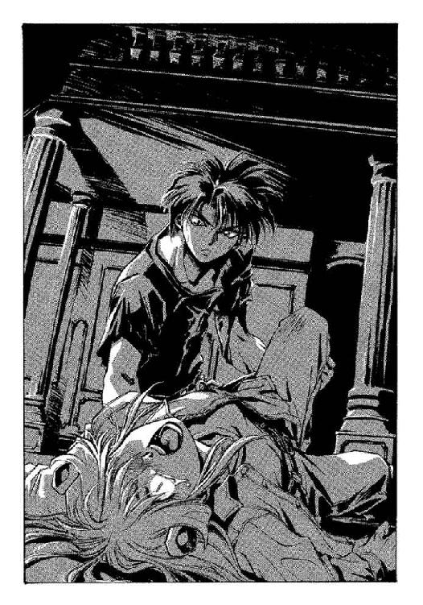
「でも──」
と、なにやら圧倒されたように少し退いていたヒリエッタが聞いてくる。
「なんでそんなことで、この娘もとにもどったわけ？」
「ああ。ま、あくまでただの推測だったんだが──」
オーフェンは髪を掻き上げた。
「さっき、こいつの攻撃に俺が対応できなかったのは、なにも俺が勘を鈍らせてたってだけじゃねくてね。こいつ、呼吸をしてなかったんだ」
と、しりもちをついた格好できょとんとこちらを見上げている少女を示す。オーフェンは肩をすくめて続けた。
「だから、なんて言うか......タイミングがつかめなくて、危うくやられるところだった。で、俺も昨夜、サミイの奴に取り憑かれかけてね──意識が朦朧として、息ができなくなったのさ。多分サミイは、人間の肺の中に入り込んで、そこから脳を支配するんだ。奴の身体は気体──それも、憑依される人間が窒息しないところを見ると、酸素に近い物質なんだろうよ。かなり高密度の」
彼が締めくくると、床の上からクリーオウが険悪な声を発した。
「つまり推測で、わたしのこと殴ったわけ？」
オーフェンは彼女をじろりとにらみやった。
「どうしろってんだよ。あのままほっとけってのか？ クリーチャーが肺の中に取り憑いてたんだから、人工呼吸程度で吸い出しても埒があかねえだろ。俺だってほかに方法があるんなら、そっちを試したよ。だから、ンなにムクれるなって」
クリーオウは、しばし腑に落ちない表情を見せていたが、やがて思いついたように悪戯っぽい笑みを浮かべてみせた。
「後で、あざになったトコ見てくれるって約束したら、許してあげる」
「......お前な、五歳や六歳のガキじゃねえんだから......」
「でも──」
と、割り込むようにヒリエッタが言った。
「サミイの正体が気体......酸素？ だったとして、どうやって戦うつもりなの？」
「......簡単だよ。正体さえ分かっちまえば、奴を始末するのはひどく簡単だ」
オーフェンは物憂げにぼやいた。ヒリエッタに向き直り、
「フォノゴロスはそれを知っていたから、助手だけじゃ飽き足らず、自分──だか、自分の息子だか──までクリーチャーに改造したんだよ。サミイは失敗作だったんだ」
「............」
ヒリエッタは無言になり、深く吐息してあたりを見回した。なにかを探すように。
オーフェンも同じように、嘆息した。
「さて、と──屋敷を出ようぜ。サミイを倒すのに、ちと準備が必要だ」
言いながらオーフェンはクリーオウが起き上がるのに手を貸すと、埃だらけの彼女の背中をはたいてやった。クリーオウが愚痴る。
「そーよね。この家、埃っぽくて、やんなっちゃう」
「......ふたりとも、出ていくなら先に行っていてくれる？」
──というヒリエッタのせりふは、オーフェンはなかば予想していたから、驚かなかった。クリーオウはびっくりしているようだったが。オーフェンは、ああいいよ、と安請け合いすると、クリーオウの肩に手を置いた。
「なあ、クリーオウ、頼みがあるんだが」
「......なあに？」
クリーオウが、血のついたオーフェンの手から、少し嫌そうに身を退いているようだったが、オーフェンは気づかないふりをした。
「お前だけ先に行って、マジクを見つけて伝言して欲しいんだ」
「先に行って──って、オーフェンはどうするの？」
クリーオウの問いに、彼は事もなげにヒリエッタのほうを示した。
「この屋敷にまだ、クリーチャー──ええと──ほれ、例のバケモンがまだ一体、残ってるんだ。そんな中を、ヒリエッタひとりでいさせたら危険だろ」
「............」
クリーオウが半眼でにらむのを、オーフェンは少し視線をそらして後を続けた。
「マジクを見つけたら、あいつに、この屋敷の周辺に油をまいて火をかけろっつってくれ。そんだけでいいから」
「火？」
少女はすっとんきょうな声を張り上げた。
「この家を燃やしちゃったら、中にいるオーフェンたちはどうなっちゃうのよ」
「ちゃんと逃げるよ。心配すんなって」
オーフェンは答えると、クリーオウの肩から手を放し、彼女の額をぽんと押した。クリーオウが面食らっているうちに、うながすように少女の細い肩をつかんで回れ右させる。向かせた先には、玄関出口があった。
「いいけど──」
と、背中越しにクリーオウは恩着せがましい声を出した。
「あんまり不自然に遅いようだと、逃げ道がないくらい本格的に火をかけちゃうからね」
「なんなんだそりゃ......」
オーフェンはうめきながら、彼女の背中を押した。一歩出て、そして立ち止まり──クリーオウはぽつりとした口調で聞いてきた。肩越しに振り向いて、
「ねえオーフェン、わたしって足手まといなのかな」
「まあ......おおむね足手まといだが......」
オーフェンは、それを聞いた瞬間傷ついたように歪んだクリーオウの顔を見返しながら、
「いいんだよ。足手まといでな。俺みたいな奴は、お前とかマジクみたいな足手まとい......つうか、重しみたいなのがいねえと、どこに流されちまうか知れたもんじゃねえからな」
「............？」
クリーオウはどうも分からなかったらしく、碧眼に不理解の色を浮かべて見返してきている。やがて彼女は口を開いた。
「わたし、どうしても魔術士になれない？ 絶対に無理？」
「無理だし、ならないほうがいい」
「......なんで？」
「どうも最近、俺は魔術士が嫌いになってきたみたいだ」
クリーオウはそのあとは、なにも言わなかった。とっとっと、やや速足でホールを歩いていく少女の背中を見送りながら、オーフェンは、妙な気分で独りごちていた。
「現金なもんだな」
「......そうね。あなたに『いいんだよ』って言われると、たいてい納得しちゃうみたい」
ヒリエッタが、からかうように同意する。オーフェンは、あえて彼女の勘違いを正しはしなかった。
彼が言ったのは、クリーオウのことではなかった。自分のことだった。
（俺はキリランシェロに──戦闘芸術品と呼ばれた黒魔術士にもどったつもりだった。なのにクリーオウが生きていると知れば、いつの間にか、もとの金貸し魔術士になってたな）
ま、そんなもんなんだろうけどな、と思いながら。
「......ここか？」
と、オーフェンは腕組みして聞いた。二階の、少し奥まったところにある一室である。少々手狭で、屋敷のほかの部分と同じく十年もの無人の扱いがうずたかく埃を積もらせてはいたが、配置そのものはきちんと整えられているので息苦しさは感じない。窓はやはり内側から打ち付けられて真っ暗だったが、オーフェンの鬼火の光が中を照らし出していた。本棚に並んでいるのは、この郊外では手に入れるのに骨が折れただろう古い小説の類いと、空っぽの花瓶。机の上にはスタンドに入ったモノクロの写真がこちらを向いている。ベッドの上には、擬人化された熊の縫いぐるみが、枕と並んで置いてあった。
「ええ。忘れ物があるのよ」
ヒリエッタが、うなずいてすたすたと入っていく。彼女に続いて部屋に足を踏み入れながら、オーフェンは続けて聞いた。
「ここは、君の部屋か？」
「そうよ。ここに......ほら、あった」
彼女が取り上げたのは、机の上に置いてあった、それなりに高価そうな日記帳だった。表紙からぱたぱたと埃を払いつつ、彼女はそのダイアリーを大事そうに胸に抱えた。
オーフェンが興味を持ったのは、そのダイアリーの横に置いてあった、スタンドのほうだった──モノクロの古びた写真の中から、背の高い気の良さそうな若者と、心持ち緊張ぎみの少女がこちらを見つめてきている。少女は──一見して知れた。ヒリエッタだった。特に外見にさほどの変化があるわけでもないのに、今のはすっぱな印象が、写真のほうにはほとんど感じられない。どちらかというと、少々ヒネたご令嬢というところか。多分、それほど長くない髪をまとめた部分に花を添えている、大きなリボンのせいだろうが。
彼女と並んでいる若者は、少女の肩に手を載せて気楽に笑っていた。こちらも、外観はさほど変化していないというのに、今の印象からは掛け離れている──サミイだ、とオーフェンは気づいた。
「こっちの写真はいらないのか？」
「......いらないわ」
ヒリエッタはあっさり言って、くるり──とこちらに顔を向けた。身体の線をぴったりとなぞるボディスーツの身体が、挑発するようにふらふら揺れている。
彼女は一度皮肉るように唇を歪めてから、言った。
「聞きたいことがあるんでしょう？ わたしに」
「いや、別に」
オーフェンはあっさりと肩をすくめた。体力が回復してから、左腕のケガも治療してある。体調は万全というわけではないが、おおむね落ち着いていた。
「俺は、ようするに、君を見張りについてきたんだよ。なんとなく......ほっとくと、君は、この屋敷から出てこないんじゃねえかと思ってな」
「......どうして、そう思うわけ？」
「全焼するこの屋敷に居残って、サミイと心中するつもりなんじゃないか？」
オーフェンの一言で、わずか──ほんのわずかだけ、彼女はほおをぴくりとさせた。
「別にそんなつもりはないわ。確かに、屋敷に火がかけられるまではここにいようと思ってたけど。でもそれは、彼の死に際を見送るのはわたしの義務だからよ」
「それは、彼を愛していたから？」
「......ええ」
「当時、たった十五だった少女が？」
「少女だったからこそ、かもね」
彼女はダイアリーの表紙をなでて──そして、座るところを探すように視線をあちこちに投げると、埃だらけのベッドに腰を下ろした。そして、続ける。
「彼は、サミイは、わたしによくしてくれたわ──素性の知れない家出少女のわたしにね。このダイアリーは、わたしの誕生日に彼がくれたものよ。それだけじゃないわ──この部屋にあるものはね、全部サミイが用意してくれたものなの。病死した妹の持ち物だったんだって、ちょっと無神経だな、とは思ったけど、妹さんの形見だと思えばそれほど気にはならなかったわ。彼はわたしに読み書きも教えてくれたし──後見人になることを、フォノゴロスに頼みさえしてくれた。この屋敷に住まわせることもね。フォノゴロスは、それを承諾したわ......」
「サミイの意図がどうあれ、フォノゴロスにはフォノゴロスなりの意図があったんだろうよ」
オーフェンは、多少の下心を込めてそう言った──ヒリエッタは案の定乗ってきた。いや、もともと自分から話したかったのかもしれない。彼女は双眸にそのまま怒りを見せて、言った。
「でなけりゃ、あのケチ野郎が縁もない人間を衣食住つきで世話してくれるもんですか」
「やっぱり、フォノゴロスは、サミイではなく君をクリーチャーの試験体にするつもりだったんだな？」
それを聞いても、ヒリエッタは皮肉げな笑みを浮かべるだけだった。彼女は愛撫するようにダイアリーの表紙を指で撫でた。
「そうよ。常識で言って、いきなり自分の助手を犠牲にしようなんて考える奴はいないでしょうよ。その分だけ、自分の負担が増えるんだもの。もっとも、あのフォノゴロスに常識なんてものがあったかどうか知らないけど。なんだか分からないものに怯えて、震えて......そして、狂ってた。このスーツはね──」
と、黒革のスーツを手で示して、
「フォノゴロスの奴が、わたしのクリーチャーとしての表皮にするために造ったものなのよ。十五のときの身体に合わせてあるから、かなりサイズがきついけどね。これを見たとき、わたしは思ったわ。これを使えば魔術士を......フォノゴロスを殺せるって」
（まさかフォノゴロスをクリーチャーに改造したのは、ヒリエッタなんじゃねえだろな）
オーフェンは思いついたが、聞かないことにした。代わりに、別なことを聞いた。
「君は結局、クリーチャーに改造されたのか？」
彼の問いに、彼女は吹き出した。
「いいえ──培養槽にほうり込まれるってときに、すんでのところでサミイが救い出してくれたのよ。でもその代わり、わたしの身代わりになって、彼がその培養槽──って、さっきのとは別の地下室にあるんだけど──の中に入ってしまった。フォノゴロスはため息ひとつついて、予定が変わったとか言いながら、そのまま彼を改造したのよ」
彼女は顔を上気させて、ベッドの縁をたたいた。
「わたしには、なにもできなかった──毎日毎日、培養槽の中でサミイがクリーチャーに変化していくのを眺めるくらいしかね。彼が最後、人間でなくなる瞬間──彼はわたしに言ったのよ。ぼくを殺してくれって。その瞬間から──」
と、彼女は薄寒い笑みを口の端に凍りつかせた。
「その瞬間から、彼は〝愚犬〟ヒリエッタのスポンサーになったのよ。わたしの、最初にして最後、唯一のね」
「少し......思い詰めすぎなんじゃねえのか？」
オーフェンが言うと、彼女は鼻で笑った。
「わたしを馬鹿にしないでちょうだい──ねんねじゃないのよ。そりゃね、サミイのことは、わたしにとってはしょせんはただの──そうね。初恋の思い出ってやつに過ぎないのよ。ただ、ちょっとばかり奇抜な方法で別離したってだけでね。この八年間で、ほかの男に惚れもしたわよ。でも、それでもわたしには、彼との約束を守る義務があると思ってるわ。彼は行き倒れになったわたしを助けてくれたし、わたしの命も救ってくれた。だからわたしは、何度も何度もサミイを殺してあげようとしたわ──でも、わたしにはどうしようもない。だから、この八年間ずっと、彼を殺せるほどの力を持った魔術士を探してまわったの。あなたが《塔》から失踪したと噂で聞いたとき、思わず歓声をあげちゃったわよ。あなたを捜し当てれば、必ずサミイにとどめをさしてくれると思った。その予想は外れてなかったわね。オストワルドなんて妙な奴まで利用してあなたを捜し当てて、それが無駄骨に終わったら笑えもしなかったでしょうけど」
「俺には......理解できかねるね」
と、オーフェンは表情を厳しくして嘘をついた。そして聞いた。
「気になってるんだが......君を逃がしてから、サミイの姿が見えなくなってるんだ。クリーオウに取り憑いたのを別とすればね。奴は今どこにいるんだ？ 君なら知ってるんじゃないか？」
「彼はこの屋敷にいるわよ。用がないときは、いつだってここのどこかにいるわ。もっとも、彼がどこかに隠れるつもりになったら、わたしたちには絶対に探し出せっこないけどね。どんな隙間にだってもぐりこめるんだから」
「どうして、俺を襲いにこないんだろうな」
「手駒だったクリーチャーをすべてあなたに潰されて、混乱してるのよ。そんなことができる人間がいるわけないって思ってるから。さて、屋敷に火をかけるって言ってたわね。それでサミイが殺せるわけ？ オーフェン」
まるで、仇にでも言うような口調だなと思いつつ、オーフェンは答えた。
「奴が屋敷中に拡がっているんなら、好都合だよ」
つぶやきながら、部屋の中の、内側から木板で打ち付けられた窓へと歩み寄り──拳で一撃して、窓をたたき開ける。ばんっ！ と板が砕ける音とともに、まぶしい光が暗い部屋の中に射し込んできた。まだ昼下がりの、夕刻まで間を持つ刻限──
そして開いた窓から、黒い煙が入り込んできた。
煙を手で払いながら、オーフェンは言った。
「始まってるようだな。おっと──クリーオウの奴、マジクやボルカンにも頼んでたみたいだな。ボルカンの奴が火だるまになっているように見えるが......まあ毎度のことか」
「火で、サミイが殺せるの？」
ヒリエッタが聞いてくる。オーフェンは、当たり前だろ、と答えた。
「奴の身体は気体で出来てるんだ。しかも性質が酸素に近い。モノが燃えるってーのは、ようするに酸素がほかの物質に化合する反応だからな。この屋敷は木造だし......熱せられれば、サミイはそこらの可燃性の物質に化合して封じ込められることになる。まんべんなくな。で、いずれは土に還るだろ」
「............」
ヒリエッタは、ごくりと唾を呑んだようだった。オーフェンは彼女に向き直り、告げた。
「屋敷の外へは、俺の魔術で脱出できる。サミイの最期を見届けたいってんなら止めないが、このままここに残れば、あと十分以内に君も死ぬぞ。言っとくが、俺まで付き合うつもりはねえからな」
挑発のつもりで言ったのだが、ヒリエッタは小さくうなずいただけだった──そのまま、なにも答えてこない。もしかしたら、本当にこの場にとどまるつもりなのかもしれないと、なかば信じられない思いでオーフェンは悟った。
「ヒリエッタ──サミイは八年前に死んだんだよ。それを納得できないってんなら、百歩譲って、俺が殺すんだってことにしてもいい。君が負い目に感じる必要はないだろ」
「止めないんじゃなかったの？ ああ、そうだ」
「......なんだよ」
「お礼を言おうと思っていたのよ」
「なんのだよ」
オーフェンが聞くと、ヒリエッタは達観したようなしぐさで肩をすくめた。
「フォノゴロスからサミイのことを聞いたとき、あなた、怒ってくれたでしょう？ すごく嬉しかった」
「......あのなあ......」
オーフェンは、ぐっと拳を握りながら、
「どうしてもここに残るってんなら──本当に止めねえからな。死にたがりにつける薬はねえんだよ──かける言葉も魔術もない。が、あくまで個人的な意見を言わせてもらうなら──」
「言わせてもらうなら？」
聞き返されて、オーフェンは一瞬だけ言葉につまった。なにを言えばいいのか──
「あんたみたいなひとには、死んでもらいたくない」
思わず真顔で、そう言っていた。と──
ヒリエッタはのけぞり、大爆笑を始めた。仕方なくオーフェンは、憮然とした面持ちで、えらくクサいことを言ってしまった自分を自責しつづけた。
◆◇◆◇◆
「はぁーっはっはっはあっ！」
無意味に腕組みして、ボルカンの哄笑が燃え上がる屋敷を前に響き渡る。肩にかついだ旗には、やはりシーツにでかでかと書いたペンキの文字で『ボルカン商会の絢爛たる第三回大会──あさましい借金取りを怪物もろとも火責めにして幸せになろうね！』とある。
得意げに、ボルカンは叫びつづけた。
「これだ！ この瞬間を待っていたのだ、俺はっ！」
「............」
あからさまに『大丈夫なのかコイツ』という表情で、コーゼンとかいう殺し屋がボルカンを見ている。ドーチンは嘆息まじりに兄を無視して、向こうで屋敷の周りを囲うように油を撒いているマジクや『商会』の子供たちのほうへ駆け寄っていった。
「ほらそこ！ 火に近づいちゃ駄目って言ったでしょ！ ロイド！」
妙に手際よく子供たちに指示を出しているクリーオウの後ろで、マジクがぼんやりしている。ドーチンは、くいくいと彼のシャツの裾をひっぱった。と、金髪の少年はくるりとした瞳をこちらに向けた。
「なに？」
ドーチンは、不安げに言った。
「いや......ええと、その......いーのかな、と思って。村の人たちに勝手に、こんな、家燃やしちゃったりして......」
「いいわけないと思うけど......」
言いつつも、そうは思っていないようなあっけらかんとした表情で、マジクが答える。ドーチンはうめいた。
「どうしよう。兄さんじゃないけど、ここであの借金取りも燃やしておいて、全部の責任をひっかぶってもらおうか」
「こっそりと、けっこうひどいこと言うんだね......」
マジクも少し手を休めて、ちらり、と火の手が回ってきた屋敷の屋根のほうを見上げた。
「お師様もなんか考えがあるんだろうし......ないかもしんないけど。ま、責任はとってくれるでしょ」
「無責任だなあ」
とドーチンが言うと、マジクは心外だというように顔をしかめた。
「なに言ってるのさ。無責任なんじゃなくて、そーゆうのはすべてお師様に任せておこうという、実にリーズナブルかつフレキシブルな態度なんじゃないか」
「フレキシブル......？」
疑わしげに聞き返すと、突然、背後で悲鳴があがった。兄の声である。
「うわぉぉぉぉぉぉっ？」
ふりかえって見ると、さっき追いかけ回された報復か、子供たちが背中からボルカンに油をぶっかけたところだった。火の粉が飛んで、引火する──
「火だるまだねえ」
「だねえ」
山火事から焼き出されたタヌキそのままの姿で、背中で燃える火から逃げようと無駄な努力をしているボルカンを見ながら、ドーチンとマジクはぼんやりとつぶやいた。
なんだか、クリーオウもそれを見て騒いでいる。
「ああ！ カウフマン、水持ってきて！」
「はい、姉ちゃん」
「えい！ って、ああ！ これは油じゃないのっ！」
と──さらに火だるまになって狂乱状態のボルカンのわきを通り抜けて、コーゼンがこちらへと近づいてくる。殺し屋は戦闘服にあちこち血の跡をつけていたが、深手ではないようだった。コーゼンは、ドーチンにともマジクにともつかないあやふやな視線をこちらに投げ、話しかけてきた。
「もういいだろう。帰らせてもらうぞ」
「は、はあ......」
と、マジク。不思議そうに、
「でも、そもそもなんであなたが手伝ってくれたりしたんです？」
「............」
コーゼンは、一瞬無視したかに見えた。が、しばらくしてから口を開いた。
「いや、別にな」
視線が、ちらりとクリーオウのほうをさまよっている。
げ、とマジクがうめくのが聞こえた。
「あ、あの──クリーオウに気があるっていうんなら、やめたほうがいいですよ。断言しますけど、ロクなことありませんって」
「べ──別に、三十路も近いのにあんな乳臭い小娘に血迷う趣味はないっ！」
怒鳴りながらもえらく動揺した様子で、殺し屋が叫ぶ。ひょっとしたら、本当に図星なのかもしれない──珍しいものでも見る心持ちで、ドーチンはそう思った。
ドーチンはコーゼンを見上げて、言った。
「まあなんにしろ、行くんでしたらごきげんよう。ミスター・ウァイセツ」
「隻影のコーゼン、だ」
「そうだよ」
と、マジクが横から口をはさむ。
「たとえ、なんの特技も特徴もない日陰者の殺し屋にだって、さもしい自己主張くらいはあるんだから」
「......誰もそこまでは言ってないけど......」
横目で恐る恐るコーゼンを見上げながら、ドーチンはマジクに言った。コーゼンは、もはやあきらめたのか、嘆息するとそのまま無言できびすを返していった。黙々と、燃える屋敷を後にする......
「ひょっとして......」
マジクがぼやくのが聞こえる。
「あの人、影が薄いもんだから世を拗ねて殺し屋になんかなったのかなあ」
（そんなわきゃないと思うけど）
だがドーチンは答えずに、コーゼンの後ろ姿を見送った。本格的に燃えはじめた屋敷の崩れる音と、まだ火が消えずに暴れている兄の罵声を後ろ耳にしながら。
◆◇◆◇◆
彼に、人間としての感覚が残っていたわけではない──
だから、苦痛というのは、別に感じなかった。思いつきすらしなかったほどだ。
ただあるのは、自分が『希薄』になっていくという感覚だった。彼の周りで吠えたける炎が、彼の身体を奪っていく。
奪われた彼の身体が、いったいどこに行ってしまうのか──それは分からない。
ただ分かるのは、このままであれば彼のすべてが、どこかに行ってしまうということだった。自分の『すべて』がどこかに行ってしまえば、最期に残るのはなんなのだろうという漠然とした疑問が、彼の思考を支配していた。ひょっとして、残ったものこそ本当の『自分』だけなのでは。なにも残らないというのは、非現実的であるような気がしていた。なんにせよ炎は一時間ほどかけて木造の館を全焼させ、消えた。
彼の身体は大部分が『どこかに行ってしまった』ようだったが、意識は消えていなかった。
............
「長い一日だったな。この村に来てから」
というつぶやきが、聞こえてきた。何度か聞いた覚えのある声。そのうちの何度かは、彼に絶望的な恐怖すら与えたこともある声のような気がするのだが、よく覚えていない。なんだろう。フォノゴロスだろうか。フォノゴロスは、いったい何人いるのだろう、この世の中に。
「お礼はするつもりよ、オーフェン」
こちらの声にも、聞き覚えはある──なぜだか、聞くと猛烈な悲しみに襲われる声。
「別に、ンなことを期待してたわけじゃねえさ」
「遠慮することはないんじゃない？ にしても......跡形もなく燃えたわね、この建物」
「古くて乾燥してただろうしな......おっと」
「......どうしたの？」
「ほれ、あれさ」
「............」
声はどうやら、驚いて絶句したらしい──
「燃え残っちまったみたいだな、サミイ」
「でも......ほんのちょっとよ」
「再生する可能性がある......にしても、もうこの辺に可燃性のものなんざ残ってねえよな。みんな燃えちまった」
「いいえ......残っているわよ」
「って、おい？ ヒリエッタ──」
彼女は背中のファスナーを器用に下ろし、ボディスーツを一気にはだけさせると、空中を惨めにただよっている、ほんの一握りの黒い霧──彼の燃え残りを胸元に抱き寄せた。そしてそのまま、足元から、まだ真っ赤に焼けたままの金属の棒（元は火かき棒だったのだろう）を取り上げて、ためらいもせずに胸の谷間に押し付けた。
「ヒリエッタ！」
と、彼女の後ろから悲鳴じみた声があがる。
だが彼女には、それにかまっている余裕はなかった──彼には、自分がどうなっているのかすら自覚できなかったが、ともかくも、急速に自分と彼女の思考がごっちゃになりつつあるのだけは感じていた。彼の『視界』に、彼女の見ている光景がダブって混在する。その新たな視界の中で、燃える鉄棒が、彼女の皮膚を思い切り焦がしつけるのが見えた。全身から脂汗が噴き出すのを感じた──彼女の感覚の中で。内臓にまで達する激痛で、悶絶しそうになる。が、それよりも、ひどく単純なことしか彼──そして彼女は考えていなかった。
（これであなたのことは忘れない──）
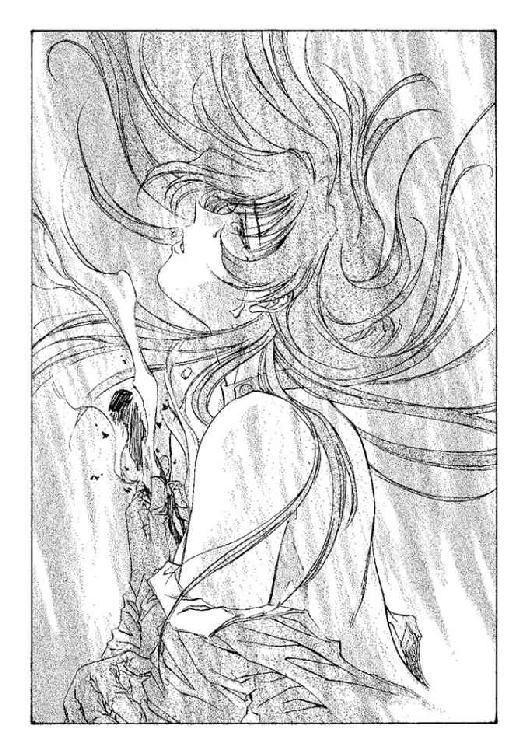
炭化する胸元の火傷を見下ろしながら──そしてその傷口の中に消えていくサミイを見ながら、彼女は続けた。
「せめてわたしの胸でお眠りなさい」
やがて、霧は消えうせた。完全に、この世から。
振り返ると、オーフェンは完全に茫然自失しているようだった。不敵に笑いかけ、ヒリエッタは彼に言った。
「傷跡は、あなたが消してくれるんでしょう？」
血まみれになった上半身に再びスーツを着直しながら、彼女は満足げに笑ってみせた。
かつん......かつん......かつん......
ゆっくりと、ややぞんざいな足音が聞こえている。真っ暗で、そして妙に空漠とした空間──だが、決して広い場所ではない。ただ......虚ろなだけだ。
焦げた臭いが、まだ立ち込めている。フォノゴロスの屋敷は全焼したが、この地下室だけは焼け残っていた。こぼれた汚水は度重なる光熱波やらなにやらの爆発により蒸発していたが、その分空気に紛れて異臭を残している。その床には、砕けた水槽のガラス片と損壊した瓦磔と土砂、そして、彼の死体。
かつん......かつ。............
足音は、地下室の入口で唐突に止まった。足音の主は、なにかを受け取るように手のひらを上にして右手を差し出し、唱えた。
「我は生む小さき精霊」
ぽうっ......
呪文とともに彼の手のひらから、拳ほどの大きさの鬼火が浮かび上がった。明かりは部屋の中を照らし──そして、呪文の主を照らす。黒髪の、二十歳ほどの若者。目付きが陰険に吊り上がった、やぶにらみの容貌。だが今はその表情は、やや神妙にうつむいていた。
彼は、ゆっくりと口を開いた。
「ひょっとして、と思ったんだがな......」
問いかけるような口調である。その声に、応える者があった。
「......わたしのことか？」
応えたのは、床に横たわった巨大な魚の死体だった。もう身動きもしない上、腹を裂かれて変色した血を撒き散らしているが、声はまるでただ昼寝でもしているだけのような野太い響きがある。
「やっぱ、生きてたか。フォノゴロス。質問がある。みっつほどな」
若者──オーフェンは、嘆息混じりにつぶやいた。バンダナで止めた前髪を掻き上げ、
「まず、聞きそびれたことがあったよな。広間の女神像。なにか意味があるというようなことを、お前は言っていた」
「............」
フォノゴロスは、しばし沈黙していた。だが、
「わたしは異端者、背教者だ──これでは答にならんかね？」
「だからって、わざわざホールの女神像に傷をつけるかね。宗教結社の集会所じゃあるまいし。あんたは神を呪ったか。恐れたかしたんだ」
フォノゴロスは返答しなかった。オーフェンはいらいらと腕組みすると、次の質問を口にした。
「じゃあ、第二の質問だ。どうしてクリーチャーなんぞ造ろうと考えた。ドラゴン種族を越える戦闘能力の持ち主と言ったところで、そんなもん戦争のない現代じゃ売り物にもなりゃしねえだろ」
「......その答は、第一の問と同じだよ。わたしは恐れていた......だから、それに対抗する力を持ったものを生み出さなければならなかった」
「お前は......なにを恐れていた？」
「言えない。言えば、わたしは死ぬ。死ぬのは──どうせこんな身体だ。かまわないが、奴らの手にかかるのだけは嫌だ。魂までも失いたくはない。どうしても知りたいのならば──」
彼は、虚ろな声を響かせた。霊廟のこだまのように。
「お前自身で知るがいい。わたしはそれを、キムラックで知った」
「教会総本山......？」
オーフェンは聞き返したが、フォノゴロスはまた答えない。最後に嘆息して、オーフェンは、お前はキエフ・フォノゴロスなのかラモン・フォノゴロスなのか聞こうとした──が、それがまったく無意味なことに気づいた。
彼は代わりに、別のことを聞いた。
「......さっきからお前、どっから声を出してんだ？」
魚の身体はぐったりと横たわっているだけで、声を出すときに動きすら見せない。まるっきり死体のように見えた。だが声は確かに響いているのだ。この地下室に......
フォノゴロスの答はない。だがオーフェンはふと、腹を裂かれた魚の死体の上に、ぼんやりとした人影──ローブのようなものを着た、くたびれた老人、怯えきった表情の細長い老人の姿が見えたような気がした。瞬きすると、もう見えなかったが。
......ひょっとして、本物の亡霊になったのかもしれない。
彼はそう胸中でつぶやくと、黙って右手を握り締めた。手のひらに握り潰されるようにして、鬼火がかき消える。
「......あばよ、フォノゴロス」
オーフェンはそれだけ言うと、くるりと背中を見せた。彼の去りゆく足音が、また地下室に響き渡る。
あとには暗闇だけが、いつまでも静かにすべてを覆い隠していた。ガラス片も、瓦磔も、汚水の跡も、魚のクリーチャーの死体も、そして孤独な亡霊が踊る姿も、なにもかも。
◆◇◆◇◆
「よし、今だドーチン！ 奴はいない！」
妙に力を入れた声でボルカンが叫ぶ。宿を出、村を出る道を一目散に走る兄の後を追いながらドーチンは、口の中でこっそりとつぶやいていた。
「......そんなに上手くいくもんかな」
ようするにあの黒魔術士が宿から姿を消した隙に、借金取りから逃げ出そうという算段である。あの後理不尽にも、あの魔術士にげしげしにタコられた兄（どうやら、例の木箱の入手経路について兄がまた馬鹿なことを言ったらしい）は、もうはや回復している。三十分ほど前までは身体中の関節をひっくりかえしたみたいになって死んでいたのだが、今からきっかり十二分前に、がばと跳ね起きたのだ。で、今はこうして脱兎のごとく走っている。
つくづく、ハンマーなみに頑丈な兄である。
「ところで兄さあん！」
後ろから追いかけつつ、ドーチンは呼びかけた。足は止めないまま肩越しにふりむいて、ボルカンが応じてくる。
「なんだあっ！」
「この村を逃げ出したら、どこに行くのさあっ！」
「決まっているだろう！」
ボルカンは、きっぱりと言いきった。あさっての方向を指さして。
「希望の明日へ！ マスマテュリアの闘犬ボルカノ・ボルカンは常勝街道を驀進する！」
「よーするに、なぁぁんも考えてないんだねえっ！」
ほぼ諦めきった表情で、ドーチンが叫び返す。ボルカンは少しだけ躊躇した目付きを見せたが、一瞬後には開き直ったらしく、指さした手はそのまま、無言で走っていく。
「ところで兄さあん！」
「今度はなんだぁっ！」
「えーとねーっ！」
「おーっ！」
「少し先のおーっ！」
「おうーっ！」
「足元にさあーっ！」
「足元がどしたあーっ！」
「ロープが引いてあるんだけど......あ」
ドーチンがそれを言うころには、すでにボルカンはえらく派手な勢いで、地上十センチほどのところを、道を横切るようにして引っ張ってある縄に足をひっかけ、転倒していた。そのまま丸っこい身体をごろごと回転させ、やたらものすごい音を立てて止まる。
仰向けの姿勢でこちらをじろりとにらみ、兄はうめいた。
「早く言え馬鹿者......」
「ごめん。ぼくが間に合うタイミングでしゃべってたもんだから」
ドーチンは答えながら、ロープの手前でぴたりと足を止めた。
「だがしかし、誰がこんな悪戯を......干しシイタケでダシとり殺すぞ、くそ......」
兄がのろのろと起き上がっていると、引いてあったロープの端っこを持って（もう一方は、道端の木の根元にくくりつけられてある）、黒ずくめの人影が現れる。
「ふふふふふふふふふふ」
「し、借金取り！」
兄がオーバーアクションぎみに叫ぶと、その人影──オーフェンは相変わらずの根の深そうな陰険な笑みを浮かべ、言った。
「てめえらの考えなんざ、お見通しなんだよ」
「く、くそ──だからドーチン、こんな穴だらけの計画が上手くなんかいくわけないと言ったろーがっ！」
「いつだよ......」
ドーチンはシラけた目でつぶやいたが、誰も聞いてくれなかったらしい。
借金取りが妙に生き生きした目で、腕まくりする。
「さあて！ 積もり積もった貸金に利子！ 問答無用で返してもらうからなっ！ とりあえずここらで拘束させてもらう！ もー長々と待つ慈悲なんざねえぞ！」
「あんたの取り立てに、いつ慈悲があったんだよう」
ドーチンはうめいた。兄もうなずきながら、
「そーだそーだ。もーちょっと待ってくれてもいいじゃないかっ！」
「駄目」
「え......で、でも、せめてほんの少しくらいは......」
「やだ」
にっこりと、黒魔術士。その表情に、兄はだいぶビビったようだったが、
「あ──ええと、じゃあ身体で払うっていうのは駄目かな」
「肉屋に売ってもいいか？」
満面に浮かべた笑みはそのままに、魔術士が告げる。
さすがにボルカンも、ゔ......と声を漏らしたまま反論できなくなった。
と──
道の向こうから、ひょっこりと姿を見せた者がいる。黒髪を艶やかに伸ばした、革製のボディスーツを身に着けた長身の美女。オーフェンもその気配に気づいたようで、むくりとそちらに顔を向けた。
「あんまりいじめちゃ可哀想じゃない？」
と、オーフェンに向かってウインクする。思わぬ助け舟に、兄が叫んだ。
「女神様！」
そのまましがみつくように彼女のほうに飛び込んでいったが、彼女はあっさりとボルカンを横に蹴転がした。彼女は笑いをこらえるように口元に手を当てながら、もう一方の手で、じゃらりと金属音を立てる革袋をひょいと持ち上げた。
「これ、渡そうと思って探してたのよ。わたしのこと避けてたでしょ、あんた」
「なんだ、それ？ ヒリエッタ」
両手を腰に当てた姿勢で、魔術士が聞く。分かるでしょ？ とばかりに彼女──ヒリエッタが肩をすくめた。
「報酬よ。わたしの頼みを聞いてくれたんだもの」
「おお......」
この声を漏らしたのは、ボルカンだった。革袋はリンゴ大で、中には重々しく硬貨が入っているらしい。大陸で広く使われているソケット紙幣と違って、硬貨は大陸のどこでも価値が変わらない。銅貨か金貨か知らないが、どちらにせよ袋の中身はそれなりの大金だろうと、ドーチンは見当をつけた。
──ましてや、借金取りにそれが分からなかったはずはないが......
ほんの少し迷うような顔付きをしてから、魔術士は、かぶりを振った。
「いらね」
「......え？」
「な・にぃぃぃぃぃぃぃぃっ！」
おおげさな悲鳴を、ボルカンがあげる。もっとも、この場合それほどおおげさでもないかもしれない。
「人をさんざ、ぼてくりまわして借金返せだなんだと騒いでるくせに、女からは受け取らずにご機嫌取りかコラ！ 雄鶏で早起き殺すぞてめえ！」
殴り掛かる兄を、やはり借金取りは横に蹴転がした。彼を見ながら、ヒリエッタも不思議そうに聞く。
「なんでよ！ ああ......後ろ暗いようなお金じゃないわよ？ ほら、わたしが家出するときに家から持ち出したやつだもの」
「十分後ろ暗いんじゃありませんか？」
ドーチンはぼやいたが、ヒリエッタは完全に無視した。オーフェンは、少しつまらなそうに目をそらし、
「別に、ンなことを心配してるわけじゃねえよ」
「じゃあ、なによ」
「......俺は便利屋じゃねえんだ。ああいう仕事で金はもらわねえ。だから、あんたも、これからも俺を便利に利用できるとは思って欲しくないね──」
と、そのとき──
「今だ！ 隙ありぃぃぃっ！」
ごきん！ と、借金取りの足元で、ボルカンがそのなまくら剣で、オーフェンのすねを思いっきり打ちすえている。見る間に魔術士の顔色は蒼白になり、激痛に腰折って悲鳴をあげた。
「痛ええっ！」
「行くぞ、ドーチン！」
ボルカンは叫ぶと、一目散に逃げ出した。走る兄の背中を見やりながら、ドーチンは嘆息ひとつ、つぶやいた。
「なんとなく最近、瞬間の連続で生きてるような気がするなあ......」
と、走りだそうとしたところを、道に倒れた魔術士に足首をつかまれた。恐る恐る頭を巡らすと、うふふ、と凄絶な笑い声を、脂汗をかいて魔術士があげるのが見えた。
ドーチンは続けてぼやいた。
「捕まるのはいっつもぼくだけだし」
「しゃあああああっ、きぃぃぃぃん、かぁぁえぇぇせぇぇぇ──」
「そんな夜中に聞いたら子供がトラウマ残しそうな声で言わなくたって......」
「......やっぱこれ、もらっといたほうがいいんじゃない？」
もはや悲壮ですらある魔術士の目の前にかがみこんで、ヒリエッタが言った。目の前に革袋をちらつかせて。オーフェンは、しかし、頑固にかぶりを振る。
「こっちのほうが楽しい」
「そーゆうもんなんですか......？」
ドーチンは疑わしげに聞き返した。横で、ヒリエッタが笑い声をあげる。
「いいわ、あんたって──腕が立つくせに、どうしようもなく頭が堅いしね。わたしの労働報酬っていうのは、どう？ しばらくあなたの仕事を手伝ってあげる」
「いや、それもいい。相棒なら間に合ってる」
と、オーフェンはきっぱりと答えて、既に道を百メートルほど走り去っているボルカンのほうを指でさした。
「............？」
つられて見やると、ちょうど、またもや数刻前とまったく同じくやたら大きなモーションでボルカンがひっくりこけたところだった。やはりまた、道にロープが引いてあったらしい。そのロープの端を持って、道端から小柄な人影が姿を見せる──背中までブロンドを伸ばした、生きるエネルギーを無意味に『元気さ』につぎ込みまくっている少女。彼女が借金取りそっくりの口調で叫ぶ。
「あーまいわよっ！ あんたの考えることなんて、このわたしがお見通しってわけよ！ マジク！ 網！」
「へーい」
道の反対側に立っている木──その木の根元に、ロープのもう一方が結び付けてあるわけだが、その木の上からマジクの返事。同時に、ばさああっ、と投げやりな感じで投網が落ちてきて、道に転がっているボルカンに覆いかぶさるのが見えた。
「畜生！」
とかなんとか、ボルカンがわめいている。ほかにも色々と口汚く罵っているようだったが、ここまではよく聞こえてこない。
オーフェンが、少し得意げにつぶやくのが耳に入った。
「最高だろ？ 最低にして──最高だ」
なにを言っているんだかドーチンにはよく分からなかったが、ヒリエッタには分かったらしい。彼女はけらけらと笑うと、革袋を後ろに引っ込めた。
ドーチンは、もったいない、と思いながら天を見上げた。雲の浮かぶ青空──そしてその空の下に広がる郊外の静かな農村は、子供たちに聞かせるための他愛もない幽霊話など多少残しつつ、ごくごく平和にたたずんでいた。
「ハアイ♪ 今回の巻末は、わ・た・し、ヒリエッタの進行でお送りしまーす」
「......それと、気が付いたら登場キャラの相方にまで成り下がってしまった作者も、ここにいるんですけど......」
「（無視）さぁて！ 前巻の『あとがき』で、グレイシーを倒すのは君しかいない！ とか書いてたら、本が発売される二週間前に、アルティメット大会でホイス・グレイシー不戦敗しちゃってましたねー」
「また、一般人には分からないことを......実話だけど。もう一か月くらいは負けないんじゃないかと思ってたんだけどなー。読みが甘すぎた」
「でも、こーゆーことを書いてると、この作者って実は格闘技マニアなんじゃないかとか誤解されそうねー」
「実際、誤解してる人は多いだろうと思うけど......でも誤解。二巻に出てきた格闘家の名前を本名に直すことすらできません。高田くらいはともかくとして、全部は無理」
「自分で書いたくせに」
「まあ、そうなんだけどさ。ま、前巻のネタばらしはこのへんにしといて──ううむ──でも、三回目にもなるとさすがに、あとがきに書くネタがなくなるなあ」
「そお？ やろうと思えば、いくらでもあると思うけど......①ネタばらし。②作者の近況。③シュールな一発芸」
「......なんとなく③に心惹かれるものがあるが......」
「あんたに芸なんてあったっけ？」
「秘門蟷螂拳の演武とか......」
「......まあ......シュールっちゃシュールかな......確か武田鉄也が映画でやってたやつでしょ？ それって」
「多分ね。なんとなく技の形がそれっぽかったから、ぼくが勝手にそう思ってるだけだけど。でも個人的には河南の形意拳のほうが好み♪」
「って、うれしそぉに言われても......だいたいそれ、あとがきでどうやるってゆーのよ」
「それもそうか......じゃ、次巻の予告」
「予告ねー......それも、あんまパッとしないわねー。それより、なんていうか予告とは違うけど、これからあんた、どうするわけ？」
「なにが？」
「一巻、二巻、でこの巻まで、いったい何人の『最強』が出てきたか覚えてる？」
「ゔ......実はちょっと気にはしていたんだが。でもそれは、ほら、ボクシングの世界チャンプみたいなもんでさ、たくさんいるもんなのさ」
「だいたい、主人公にしてからが『最強の男』のくせに、なんか弱いのよねー」
「彼は......ほら、ウェルター級のチャンピオンってトコだから」
「......そゆこと言ってると、レナードに怒られるわよ」
「最強には違いないんだから、いいじゃんか。でも真面目な話、登場人物たちに片っ端から『天才』の称号を与えまくるこの作者ですが、実はランク分けがしてあったりします」
「？」
「つまり、主人公の『天才』ってのは、しょせん学生の中での天才、対して主人公の教師Ｃの『天才』は紛れもない世界的な天才を指すわけです」
「まあ......理屈っちゃ理屈だけど......」
「なんか文句あんの？」
「む......作者の分際で居丈高な物言いを......」
「さ、作者の『分際』って──俺っていったい──」
「朝の通勤電車で酔っ払いにからまれたあげく、そのケンカ買って出て途中下車の上、会社に遅刻するような奴が、ロクなもんなわけないでしょーが」
「ううっ......涙が出ないように天井を見ていよう......」
「まったくもー。あちこちに弱点さらけだして生きてるんだから」
「正確には、遅刻はしてないんだけどね。フレックスだから。しかも五分程度のことだし」
「まーね。ホントに遅刻してたらクビだわね」
「クビになったって、あんま気にしないけどね」
「......スチャラカ社員か、あんたわ......」
「ま、こーゆう奴ですが、今後とも応援いただければ幸いです」
「ようやく、まとめに入ったわね」
「（黙殺）では、また！」
「ＢＹＥ！」
秋田禎信
『強くなりなさい』
というのが、母親の遺言だった。
彼女が独りぼっちになったとき、贈られた言葉だった。
贈られたところで嬉しくもなかったし、その強くなる方法も、見当がつかなかった。
それが三年前のことだ。三年が過ぎて、彼女は森を走っていた。
森の中を走るのには根気がいる。そしてセンスを要する。
そのどちらも持っていないのならば、傷だらけになって走るしかない。彼女はほとんど喉を絞られるようにあえぎつつ、闇雲に前方へとひた走った。少し森の中にキノコ探しに立ち入るだけのつもりだったので、グリーンの開襟シャツとショートパンツという無防備な格好だったのだが、これがいけなかった。既に下草にひっかかれて、すねは血まみれになっているし、靴にも何本か木の枝が刺さり、そのうちのいくつかは足の皮を突き破っていた。真夏の森は草いきれに満ちて、あえぐ一呼吸にいちいちむせ返ってしまう。踏み潰した草の汁が噴き上がり、夏の木漏れ日に混じって輝いた──
見たかぎりではまだハイスクールにも達していないような少女で、森そのものには慣れていなくとも、辺境の農村で育った独自の野性味が感じられた。まだ子供じみた長さの手足は朴訥としていながら伸びやかで、競走馬というよりは農耕馬の輪郭だが、これを嫌うかどうかは見る者の趣味の問題だろう。ポニーテイルの黒髪を汗で湿らせて、ブラウンの双眸で前を見据えて走りつづける。瞬間──足がもつれた。が──
（止まれない──）
立ち止まりたくないわけではない。さっきから感じられる激しい動悸は、自分の身体の限界を伝えてきている。まぶたが腫れぼったく、眠気を覚えている。できればこのまま倒れたいくらいだ。
（止まれない──）
彼女はくりかえした。背後を振り返ってみるまでもなく、さっきから自分を追いかけてきている足音が聞こえている。いつも村の隅で三人でかたまっている。妙に背の高い少年たち──彼女を追いかけてきているのは、彼らだった。彼女が村の外れを歩いていたら、いつの間にか、後をつけられていた。こちらが走りはじめたら、走って追いかけてきた──
彼らに追いつかれたら具体的にどうなる、ということをはっきりと自覚していたわけではないのだが、男三人で少女ひとりを追い回す、という状況に潜む危険性は本能的に察していた。彼らは、なにも大声をあげて『止まれ』だの『待て』だのとは言わない。ただ、あきらめずに追いかけてくる。
ただどこか頭の隅っこ、冷静な一部分では、完全に理解しているところもあった──このまま走りつづけても、いつかは追いつかれる。追いつかれれば力つきて、もう抗えない。
走らなければならない──それは分かっている──が──
（もう駄目──）
彼女は胸中で悲鳴をあげた。
足は走りつづけているつもりだったのだが、突然、身体が地面に触れる。転んだらしい、と気づいたのは、顔面を木の根っこで痛打した瞬間だった。そのまま一回転するように、森の中を背中から転がる。
転んだ一瞬、どういった角度になったのか、追いかけてくる男の姿が見えたような気がした。猛烈な嫌悪感が身体を走るが、一度止まってしまうと、疲労しきった身体は動いてはくれない。肺が震える。痛みを覚えるほど。
（立ち上がらないと駄目──）
恐々と喉の奥でつぶやいて、彼女は地面になんとか肘を突こうとした──が、それすらもできない。
（逃げないと駄目だ──）
身体を引きずるようにして、少しでも前進しようとはした──が、それすらもできない──
その瞬間、彼女は足首をつかまれた。
「............！」
振り仰ぐと、少年のひとりが、すぐそこにいる。彼女は反射的に右手の爪を少年の顔面に突き立てた。指先が、わずかならぬ強さで少年のにきび面をえぐる。が、痛みが走ったのは、むしろ少女の指先のほうだった。爪が折れたのだ。
少年はほとんど意に介さずに腕を伸ばしてきた。馬乗りに近い格好で、彼女のシャツの奥襟のあたりをつかむ。シャツのボタンのいくつかが弾ける音が聞こえた。
「母さん......！」
後々思ったところによれば月並みにも思える悲鳴をあげて、彼女は少年の腕に噛み付いた。ぎゃっと声をあげて、少年が腕を引っ込める。その隙に彼女は逃げ出そうとしたが、結局は、体重の勝る相手の下から抜け出すことはできなかった。
視界が涙でかすんだ──ふと見上げると、もうふたりの少年も、もうこちらに追いついてきている。彼女を見下ろして、肩で息を切らしていた。彼女に馬乗りになっている少年が、噛み付かれた痛みで癇癪を起こして、殴りつけようと拳を振り上げるのが見えた──
『強くなりなさい』
虚しいせりふが、遠くから聞こえる。死んだ母親の声で。
『ひとりで生きていかなければならないのだから──』
（無理よ！）
恐怖心から、彼女はそう叫びかえしていた。振り上げられた拳が視界の真ん中にそびえている。あれから逃れる手段はなにもない──
それでも彼女はその拳から逃れようと、頭を浮かした──そして、視界が真っ黒になる。
痛みは感じなかった。ただ一瞬の衝突に目を閉じて、浮かした頭が後頭部から地面に激突するのを最後に、彼女の意識は途切れた。頭の中がどうしようもなく、しびれてうずく。少年たちの悲鳴を、彼女は聞かなかった。割れた頭蓋から救いようのない出血をしながら、彼女は、そのまま呼吸を止め、身体を痙攣させた。
時間は、それほどかからなかったろうと思う。彼女は目を覚ました。
「............？」
鈍い痛みが、脳髄に響く。起き上がって彼女は、自分の髪に触れた──頭も顔も服も、血でめちゃくちゃに汚れている。少年たちの姿はなかった。森の中に、ひとりで倒れていた。
がさ......
背後から、草の踏み分けられる音。ぎょっとして、彼女は振り向いた。そこには──森をふたつに分けるようにして、巨大な影がそびえ立っている。
少女は瞬間、それが神であると思った。
黒々とした毛並みは、艶やかに輝いて美しい。体線の描く滑らかな曲線は、なにやら女性的なものを少女に連想させた。
それは実のところ、獣だった。頭までの高さが三、四メートルはあるであろう、漆黒の毛並みを持った巨大な狼──あまりにも荘厳なその姿は、誰であろうと人間を魅了せずにはいない。そして厳かにすべてを見据える緑色の双眸。
少女はその獣の名前を知っていた。
「深淵の森狼──」
大陸最後の秘境──つまりこの森──キエサルヒマ大陸の二割を占める巨大な樹海に棲む、ドラゴン種族のひとつ......
《汝が名は？》
唐突に、彼女の頭の中にその問いかけは響いた。見上げると、ドラゴンがじっとこちらを見ている。我知らず、彼女は即答していた。
「フ──フィエナ。ソリチアン・ビレッジの......」
ドラゴンは構わずに続ける。
《汝は死んだ》
「え............？」
フィエナは、聞き返した。だがドラゴンは気にもせず続ける。
《が、我が蘇生させた──》
「あなたが......助けてくれたの？ わたしを──」
フィエナは、血で固まった襟元を手で押さえながら叫んだ。
《我は戦士の種族......大陸を護るために在る。そのためなら汝を生かしもするし、殺しもする》
「あの......わたし、ありがとうって言おうと──」
思ったのだが、どうも相手がそういった言葉を欲していそうには見えなかったので、彼女は言葉を飲み込んだ。ドラゴンは、ゆっくりと続ける。
《小さき頭の持ち主よ──我らは説明できぬ。理解せよ......生命を救うことには代償を求められる》
「............」
《我は汝を必要としている。我の目となり、耳となることが、汝の義務となった。あまり時間は与えてやれぬ。迅速に理解せよ......》
フィエナには理解できなかった。だがドラゴンはもうそれ以上はなにも言わずに、その巨体で素早くきびすを返す。
ドラゴンは優美な姿を見せつけながら、ゆっくりとした足取りで去っていく。木漏れ日をかき分けながら、足音もなく進む姿は、伝説で言われているような戦士のドラゴンというよりは、死神のような印象のほうが強いと彼女は思った。漆黒の狼の姿が見えなくなっても、フィエナはまだ、ドラゴンの去ったほうを見つめていた。
第一章 《森》の巫女
「ほい──これでラストだ」
そう言いながら無造作に彼が放った一撃を、ぺしんと鼻先に食らって、クリーオウが小さく悲鳴をあげてしりもちをつく。木漏れ日が細く差し込む、森の中である。数メートルはある巨木が頭を並べる足元──街道からさほど離れてはいないが、旅人に気取られる距離でもない。真夏も近づいてきた森の匂いは心地いいが、転んだことでクリーオウの表情に険しいものが走るのが見えた──確か、今彼女が着ている深紫のスエットも、丈が短いアスリートスパッツも、この前立ち寄った街で買ったばかりのものだ。
新品のスパッツが土で汚れたことに舌打ちしながら、クリーオウがこちらをにらみつけてくる──
だがオーフェンは軽く笑ってその視線を受け流した。年の頃二十歳ほどの、皮肉っぽい造作の黒魔術士である。黒髪、黒目、中肉中背と、ぱっと見たかぎりではさしたる特徴もない。全身、ほぼ黒ずくめという格好で、胸元には剣にからみついた一本脚のドラゴンの紋章が、銀製のペンダントになってかかっている。目付きは鋭い──というか、鋭い以上に険しくなっていて、やぶにらみと言っても差し支えない。
彼は手にした細い木の枝をぱちんとやりながら、得意げに続けた。
「賭けは俺の勝ちだったな──文句あるか？」
「ない......わよ」
クリーオウが苦々しく、喉の奥で同意してくる。十七歳。陽に映える金髪を腰まで伸ばした少女である。そのブロンドも、空の色を映したようなブルーの双眸も、大陸では最も一般的な貴族の特徴なのだが、彼女は別に貴族ではない。ただ、数代前の祖先の血に、貴族のものが混じったことがあるということを彼女は言っていたが。
刃にカバーを被せた細身の剣を鞘に収めて、スパッツの土を落としながら立ち上がる。クリーオウは、いらいらと口をとがらせた。
「もう、なんだってのよ！ 納得いかないわ──」
「納得いかねえ、ってもよ」
彼は木の枝を適当に背後へ放り捨てながら、バンダナをしているこめかみのあたりをぐりぐりと手でこすった。
「勝負は勝負だぜ？ 条件通りにな。十本勝負で、得物を相手の身体に触れさせたら一本──負けたほうは一回だけ、勝ったほうの言うことをなんでも聞く」
「ええ、そうよ──忘れてるわけないでしょ？ たった今ストレート負けさせられたばかりなんだから！」
クリーオウが、じだんだ踏むようにスニーカーのつま先で地面を蹴った。
「わたしが言いたいのはね、実力が違いすぎるってこと！ なんかヘンよ。一本くらい、わたしが取っても良さそうなもんじゃない？」
言いながら、彼女はこっちをにらみつけた。続ける。
「ねえ、オーフェン。わたし、これでもけっこう剣の扱いには自信がある──」
が、オーフェンはそれを遮って口を開いた。
「あのなあ」
と、呆れながら答える。
「学生レベルの剣術といっしょにするなよ。俺はこれでも《塔》の魔術士なんだぜ？」
言って彼は、胸元のペンダントを掲げてみせた。この翼を広げたドラゴンの紋章は、大陸魔術の最高峰《牙の塔》で黒魔術を学んだ者の証しである。言うなれば、最高の魔術士の証明だった。
「武器を用いた戦闘訓練から、逆に武器を持った相手に対しての護身法、反射的な状況判断の学習──ま、ほかにもあるが、だてに何年も勉強してたわけじゃねえんだ」
「ふうん......つまり、純心なわたしに対し、甘言を弄して負けるわけのない勝負に引きずり込み、不当な約束を盾に卑劣な目論みを達しようというわけね」
「なんか口のきき方があのボルカンの野郎に似てきたな、お前......」
オーフェンが半眼でつぶやくのを、クリーオウが舌を出して応えてくる。
嘆息しつつ、彼は続けた。
「だいたい、勝負をふっかけてきたのはそっちのほうだろ」
「分かったわよ」
クリーオウは吐き捨てた。スエットの胸を張って挑むように続ける。
「さあ──草むしりでも皿洗いでもやってあげるから、なんか言ってみなさい！」
「いや......別に、取り立てて用はねえけどよ。お前には」
というか、オーフェンにしてみれば、この少女に頼み事をするのは、どんな種類のものであれ乗り気ではなかった。その気配を感じ取ったのだろう──ぴくり、と少女の眉が疑わしげに動くのがうかがえた。
「なんか言い方が引っ掛かるわね。わたしにはなんも頼めない、って言いたいの？」
「ありていに言えば、そんなもんだ」
オーフェンはあっさり答えて、街道わきに停めておいた馬車のほうへと、きびすを返しかけた。と──素早く彼の行く手に、クリーオウが回り込んでくる。彼女はこちらの胸に細い指を突き付けて、非難するように口を開いた。
「どーいう意味!?」
聞かれて、ひくり、とほおの筋肉が引きつるのを、オーフェンは自覚した。
「どーいうもこーいうも、その通りだよ！ ったく──まさか、この前、破れた俺のシャツ直しといてくれと頼んだときのこと、忘れたわけじゃねえだろうな！」
「な──なによ！ あれは別にわたしが悪いわけじゃないでしょ──だいたい馬鹿にしてるわよ、女だから裁縫やらせとこうなんていう貧弱な男根支配的腐敗思想の──」
「ンな単語、どこで覚えてくるんだ！ あれはお前が馬車ん中ですることなくて暇だとか騒いでたから、雑用頼んだだけだろ!? 議論をすり替えるなよ！」
「すり替えるつもりなんてないわよ！」
「ほぉう！ じゃあ、とくと答えてもらおうか──なんでわざわざ服の当て布に、俺が一番大事に荷物の奥にしまっといたハンカチ使ったんだよ！」
それを聞いた瞬間、ぎくりとした表情でクリーオウが指を引っ込める。彼女はわずかに顔色を変えながら答えた。
「たまたま見つけたのよ！」
「嘘こけ！」
オーフェンは即座に叫んだ。当て布にされたのは手縫いのハンカチで、少年時代、姉のように慕っていた女魔術士から誕生日にもらったものである。ほかにいらない布切れならいくらでもあったというのに、わざわざ小ぎれいなハンカチを選んだことについては、クリーオウになんらかの底意があったに違いないとオーフェンはにらんでいた。
「ほかにも、風邪ひいて寝込んだマジクの看病頼んどいたら、枕元で水タライひっくりかえして毛布とシュラフ水浸しにしやがったろ！ 図書館で本探しを頼んだ時には、いきなり『見つけた！』とか叫んだ次の瞬間にそのページ破って持ってきやがって！」
「ウチの学校の図書館じゃ、みんなそうしてたのよ！ 悪い!?」
「きっぱりと悪いわっ！ そうそう──食料の買い出しを頼んだときが一番ひどかったな！ なんも買わんとわけの分からん行商人連れて帰ってきやがって、『このお嬢さんがお買い上げくださった品物の代金をお受け取りしたいのですが』──いったい全体なんのつもりで魔よけの便器なんて買ったんだよ！」
「あ──あれは一生に一度の過ちよ！」
「なにが一度だけだ！ まだまだ似たようなストックは山ほどあるんだぞ！ なあ──」
と、オーフェンは急にトーンを落として、クリーオウの肩をつかんだ。
「本当のことを言ってくれよ──わざとやってるんだろ？ な？」
クリーオウがうろたえたような声を出す。
「そ、そんな目に涙まで浮かべて言わなくたって......」
「泣きたくもなるわい。なんで毎日毎日、こんなことで怒鳴りあわなけりゃならねえんだか......」
嘆息混じりに彼が言うと、クリーオウは悪びれた様子もなく、碧眼を閃かせた。ぴっと指を立てて、
「お互いを正しく理解しようとする者どうしは、しばしば正面衝突するもんだって、昔お父様が言ってたわ♥」
「そんな美しいものかっ！ これがっ！」
と、両手をわななかせる。が、クリーオウはなんとかごまかそうとしているつもりか、目をそらしてぽんと手を打ってみせる。
「あ──そうそう。楽しい人生っていうのは、つまるところ楽しいやっかいごとのことだ、とも言ってたかな」
「俺は平穏な生活でそこそこ楽しむほうがいい......」
オーフェンは苦々しくつぶやいた。いつもの仕草で、クリーオウの金髪の頭にぺんと手を置く。こちらを見上げて、クリーオウが言った。
「まあまあ、そんな疲れた声を出さないでよ」
「誰のせいだ、誰の......」
「人の咎を証明するのには一生かかる──証明した瞬間、その相手に殺されることもしばしばあるしな、て言った三週間後に、お父様は死んじゃったのよね」
「もぉいい......お前の親父が生きているときに会えなかったのが心底残念だ」
オーフェンはほとんど毒づくようにして言い、クリーオウの頭からすとんと手を落とした。少女の背中を押しながら、街道のほうへとぼちぼち歩きだす。赦免の雰囲気を（勝手に）察したか、クリーオウがやけに機嫌のいい声を出した。
「落ち込まないでよ。最近、疲れがたまってるんじゃない？──そうだ！ 賭けに負けたから、マッサージしてあげる」
「......お前が？」
「なによ。出血大サービスじゃない。嬉しくないの？」
「出血......今までのお前のパターンだと針でも使うとか......」
「う・れ・し・く・な・い・の!?」
双眸の光をすごませて、クリーオウが肩越しに振り返ってくる。オーフェンは彼女の顔を手で押しやった。
「あーはいはい。嬉しい嬉しい」
投げやりな口調で言ってから、ふと疑問に思う。彼はそこはかとなく不安を感じながら、少し前を歩く少女に聞いてみた。
「ところで......お前が勝ったら、俺になにを命令するつもりだったんだ？」
「ん？ 別に、たいしたことじゃないんだけどね。わたしたちの馬車の中ってさ、ほら、殺風景でしょ？ ぶっ潰し獣の頭の剥製とか作って飾れば、けっこーインテリアだな、とか思ったから。一頭ばかり獲ってきてもらおうと思って」
「......それでお前はマッサージか？──なぁんかギャップがねーか、それ......」
オーフェンはぐったりと声に出した。が、クリーオウは、そぉ？ と、あっけらかんと言い返してくるだけである。なんにしろ、それ以上の自覚を彼女に求めるのは無駄なことだと、オーフェンははっきり悟っていた。
大陸最後の秘境──戦士たちの故郷《フェンリルの森》に、彼らはいる。
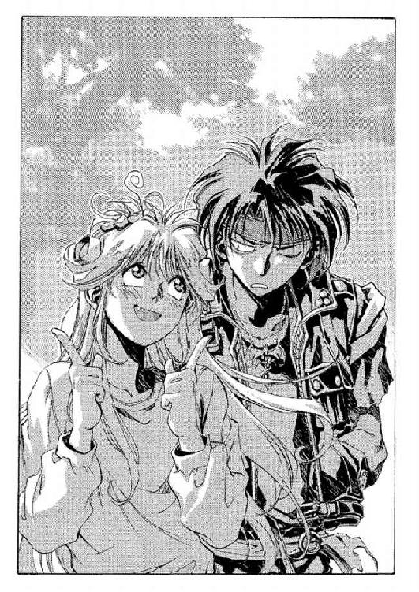
◆◇◆◇◆
「ま、考えてみりゃ当たり前だけど──でっかい森だね」
厚紙の地図を片手に、彼はそう独りごちた。地図は大陸の地勢図で、このキエサルヒマ大陸と周辺の海が載っている。大陸をちょうど東西に分けるようにして、その面積の二割までも占領して広がるのが、この《フェンリルの森》である。
「ありとあらゆる獣、ありとあらゆる生命がここに棲む──」
地図の隅についているコメントを読み上げる。金髪に淡いグリーンの双眸の少年である。整った顔立ちをしているわりには、愛嬌のようなものも目立った。まだ十五にはなっていない。黒いシャツに、これまた黒革のズボンと黒ずくめだが、これがあまり似合っていないのは自分でも分かっていた。だが、とりあえず今は──
（ま、いずれ似合うようになるさ）
と、楽観的に思っている。いつか──多分──一人前の黒魔術士になったら。
「伝説には女神が宿る地とされ、強力なドラゴン種族がこれを守護する......」
ぶつぶつと続けながら、彼は顔を上げた。周囲の森を──深く、そして鮮やかな緑を見回して、軽く息をつく。
と──
「へえ」
思わず、声をあげた。
「泉なんてあったんだ」
近くに川などはない──沢の近くを歩くのは危険だから、避けてきたのだ。となると、この泉は湧き水だろう。
鬱蒼とした木々や下草をかき分け、いきなり視界が開けるようにして、その泉はあった。水面に波紋ひとつなく、冷たく静まり返っている。泉というよりは、小さめの湖といった感じだった。水面から少し下は、水草で埋まっている。空の青と水底の緑が溶け合って、奇妙な色合いになっていた。
彼は水際に近寄ると、さっと指で水面をなぞった。傷ひとつなかった水面に、何重もの波紋が拡がっていく。おもしろがって、彼は水面をのぞき込もうとした。その瞬間──
どさっ。
背後で、なにかが落ちた音。振り返ると、すぐそこの地面に、数メートルはありそうな大蛇が転がっている。木の上から──落ちてきたのだ。
背筋が、さあっと寒くなる。彼はなんとなく、手をあげて口を開いた。
「は、初めまして──」
その少年のあいさつに応えて、というわけでもないだろうが──大蛇は間髪いれずに頭を跳ね上がらせると、こちらに飛びかかってきた。森の緑色の中で、その大蛇の黒々とした鱗の身体が引き結ばれた線のように映る──
反射的に彼は、両手を引き絞って胸元に構えた。息を吸い──一瞬で吐き出す。同時に、大声で唱えた。
「我は放つ光の白刃！」
少年の眼前から一直線に放たれた熱衝撃波は、狙いどおり大蛇の下顎あたりに突き刺さると爆炎をあげた。燃え上がる熱波に吹き返されて、大蛇の身体が後方へと跳ね返される。頭のなくなった蛇が、落ちてきた木の幹にたたきつけられるのを見ても、少年はまだ警戒を解かなかった──そのまま、衝撃でけいれんしている蛇の死体が動かなくなるまで待ってから、ふうと安堵の吐息をもらす。
「やっぱ危険だな、この森」
そのわりには、あまり危機感がない口調だったが、本人としては恐々としているつもりだった。額の汗をぬぐってから、ふと気が付いたように、蛇に襲いかかられてからの自分の動きをもう一度再現してみる。
「こう、ぐるりと回って──我は放つ光の白刃、と......」
最後に手を突き出してから、彼はにっこりした。
「よしよし。今の対応はお師様みたいで良かったな。覚えとこ」
満足顔でうなずいてから、またあたりを見回す。森の中で炎を使ったのはかなり危険だったが、水気を含んだ夏場の森なら、そう簡単に引火するということもない。もっとも、燃えるときには容赦なく燃えるだろうが。
そんなことを考えていると、声がした。
「魔術士......」
「え？」
少年は、声がしたほうへと向き直った。そして──ぽかんと口を開けたまま絶句した。
彼の立っている位置から少し離れた泉の水際に立って、こちらをじっと見据えているのは、女だった──いや、少女と呼んだほうが適当だろうが。年齢は、少年自身とほとんど変わらないだろう。意志の強そうな目をしているが──だが、なんとなくその強さは──
（なんだか、追い詰められた力みたいだ。手負いの獣......みたいな）
なぜそんなことを思いついたのかは分からない。なんにしろ、彼が驚いたのは、そんなことではなかった。
少女は表情に少し驚愕を残して、こっちを見つめている。笑ったら、もっと愛嬌がありそうなのに、と彼は思った。くせのある黒髪を無理にストレートにして背中まで伸ばしている。奇妙なのは、彼女の格好だった──ひらひらした薄絹を、浴衣のように身体に巻き付けているだけ。サイズがたっぷりしているので、強い風でも吹けば服の下がのぞいてしまいそうである。こんな森の奥には似つかわしくないし、機能的でもない。
（巫女服......？）
そうも思えるのだが、それではなおさらこんな秘境に相応しくない気がする。
そんなことをいぶかっていると、少女のほうから問いかけてきた。
「あなた、魔術士ね？」
「え？ うん──あ、いや、実は違うんだった。その、見習いなんだけどね」
あわてて返事する。少女──巫女？ が少し首をかしげるようにしてみせる。どうやら、彼が吹き飛ばした蛇の死骸を見ているらしい。彼女が眉をひそめたのが見えた。
「そんなに......力があるのに、見習いなの？」
「成功しないことも多いんだよ、実は。それにぼくのお師様は、もっととんでもないよ」
「そう......連れがいるの......」
彼女は遠い目でそんなことをつぶやいて、そのまま黙り込んでしまった。少年は、心持ち手持ちぶさたになりながら頭をかいた。
（なんか......浮世離れした調子の娘だなあ。服装もだけど）
そんなことを思いながら、聞いてみる。
「あ、あのさ、君──あ、名前なんていうの？」
「フィエナ......」
「いい名前だね」
なんというか、あてずっぽうな気分で彼がお世辞を言うと、彼女はくすっと笑って見せた──もっとも鼻から笑ったような息がもれたというだけで、表情に変化はなかったが。
「ありがとう。あなたの名前は？」
「マジク」
「あなた、貴族に縁があるの？」
と、彼女──フィエナは気にするようにこちらの髪を見た。金髪は、普通平民には生まれない。
「いや、ぼくのは貴族とは関係ないよ。生まれつきこうだったってだけ」
貴族だって『生まれつきこうだったってだけ』ということには違いなかろうとは思うのだが、マジクはいつも説明するときにはそういう言い方をしていた。たいていの人は納得してくれる。
フィエナが、こちらに向かって歩きだした。マジクもとりあえず、そちらに近寄っていくことにする。
彼女は歩きながら口を開いた。
「......なんで、こんなところにいるの？ ここは奥地よ。人間の世界じゃないわ」
彼女が動いたせいでふわっと空気になびいた肩のあたりの薄絹を見ながら、マジクは答えた。
「散歩のつもりだったんだけど、道に迷っちゃって」
言いながら、役に立たない地図を折り畳んでポケットにしまう。手を伸ばせばとどくくらいの距離で、ぴたりとフィエナは足を止めた。
「そう......なら、街道に出る道を案内してあげるわ。この森は危険よ。人が......夢を見てしまうの」
「ありがと──でも、夢って？」
マジクもつられて立ち止まり、おうむ返しに聞き返す。彼女は肩をすくめただけで、なにも答えてはこなかった。
「ひとつ聞きたいんだけどさ」
マジクは腕組みして、なにげない口調で聞いた。
「君は、こんな森の中でなにしてんの？」
彼女は即答した。まるで──隙があればそれを言おうと待ち構えていたみたいに。
「わたしの力は《森》に根差しているのよ。ここからは出ていけない」
「......へ？」
フィエナは真顔で続ける。
「《森》にいるから、わたしは力が使える。例えば、さっきのあなたみたいに」
「そんなことができるの？」
マジクが聞くと、彼女は、あっさりと首を縦に振った。
「ええ。わたしは......力に支配されているの」
「へー。じゃあやっぱり、君は巫女なんだ」
森の中をいっしょに歩きながら、マジクは感嘆の声をあげた。大陸でもっともポピュラーな運命の三女神信仰には、巫女という資格の神官はいない──女神そのものが、なんらかの神に捧げられた巫女のようなものだと言われているからだ。となればこのフィエナが参加しているのはなんらかの辺境信仰ということになる。
（お師様だったら、未開信仰だ迷信だとか言って、鼻で笑うんだろーけど）
マジクにしてみれば、そういった信仰は個人の勝手である。部屋の壁が自分の話を盗み聞きするのだとノイローゼの学生が半狂乱になったときも、ゆっくり八時間あまり相談相手になってやったくらいだ（女生徒だったのだ）......まあこれと、目の前のフィエナを一緒くたにしてしまうのは乱暴だが。
「巫女ってのも、いろいろ大変そうだね。よく分からないけど」
のんきな声で言う。
「力を得たの。わたしは......」
感情のこもらない、ぽつりとした声で彼女がつぶやいた。
「力、ねえ......」
マジクは頭の後ろで腕を組んで、ぼんやりと言った。
「そんなに必要なものかな？」
「わたしには、ね」
フィエナの口調は曖昧に聞こえた。すっと透き通るような視線でこちらを見やり、続ける。
「あなたには連れがいるから、その人たちに頼れるんでしょう？」
「まあ......ね」
師──オーフェンの顔を思い浮かべながら、マジクは同意した。
フィエナが、ふと瞳を陰らせて、続ける。
「わたしには、いないのよ。だからわたしは......従うことにしたの」
「え......？」
なにを言っているのだか、よく分からない──マジクは怪訝な視線で彼女をながめつつ、とにかくその後をついていった。と──
唐突に、彼女がこちらに振り向いた。胸元を、ぎゅっと抱き締めるようにしながら、
「あなたは外から来たんでしょう？ この外から」
「外......って、森の外のこと？ なら、そうだけど」
きょとんとしてマジクが答えると、フィエナは光のなかった目をにわかに輝かせてみせた。振り向いた動作のせいで、くせのある黒髪が、ふわっと舞う。
「外はどうなっているのかしら。この森の近くにソリチアンって村があるんだけど、通った？」
「いや......それは多分、これから通る予定だったんじゃないかな。ぼくら、南のほうから来たから」
「南──アラバルト？ キンクホール？ レインダストなんて村もあったかしら」
「キンクホールのほう。にしても、随分くわしいみたいだね。この辺のこと」
「地元人だから」
「ふうん......」
話題が変わったらいきなり彼女の口調や表情まで変わってしまったことに妙に感心しながら、マジクは鼻をかいた。もう一方の手で、さっきの地図を取り出して広げる。
「ぼくらは、トトカンタから来たんだ。街道をずっと北上して、アレンハタムと......このキンクホールを通ってきたってわけ。一月半くらいかかったかな」
地図を見せながら説明すると、フィエナが、地図をのぞき込むために身体を寄せてくるのが分かった。彼女のむき出しの腕がこちらの肘に触れているのを気にしていると、フィエナは興味ありそうに聞いてきた。
「そのコースだと《牙の塔》に向かってるみたいね。やっぱり、そこに留学するの？」
と、こちらの黒魔術士然とした格好を見やってくる。マジクは肩をすくめて地図をたたんだ。
「違うよ。ぼくのお師様は、なんて言うか......金貸しなんだ。借金の取り立てのために旅してるんだよ。もっとも──」
と、付け加える。
「実際お師様は《牙の塔》に向かおうとしてるみたいだけど。別に入門はしなくても、ぼくのことを《塔》に登録しておきたいんだって」
「なんで？」
「助成金が出るらしいんだ。『これで三か月はしのげるはずだ！』って騒いでたな。お師様らしいよ」
と、マジクが呆れた様子で嘆息すると、フィエナは口元に手を当ててくすくす音を立てた。
「さっきの話だと、あなたの先生はものすごい魔術士だって言ってたのに」
「それは間違いないと思うよ、実際」
とりあえず、こっからここまで、というように指を動かして、
「あまり昔のことを話さないから、よく分からないけど──いや、まあ、頼めば話してはくれるんだけど、なんかウソくさいんだ。宮廷魔術士の候補にもなったとか、《牙の塔》で首席を取ったとか。いくらなんでも、そこまですごいわけはないと思うんだよな」
「もし、本当だったら？」
からかうように、彼女。マジクは苦笑した。
「冗談でしょ──そうだとしたら、ぼくは大陸でも最高の黒魔術士に弟子入りしたことになっちゃうんだよ。それはいくらなんでも、出来過ぎだよ」
「そうね」
彼女はあっさり同意してから、
「でもどうせ生徒になるのなら、そのほうがいいんじゃない？」
「やだよ」
マジクは即答した。そんな魔術士、厳しそうじゃないかと胸中で付け足す。
フィエナが、ぽつりと言う。
「あなたはあまり、上を見ないのね」
その双眸には、また先刻のような、不透明な色がもどったようにマジクには思えた。が、それも、すぐにただの少女のそれにもどる。
（巫女と普通の娘の、二枚看板なのかな──）
それならばそれで、付き合いやすいほうと話をすればいい。マジクは気楽に考えると、彼女に聞いてみた。
「この地元の人だって言ってたけどさ、君──あ、フィエナって呼んでもいい？」
彼女がこくりとうなずいたので、マジクは気を良くして続けた。
「フィエナも、別にこの森の中に住んでるわけじゃないんでしょ？ 近くの村かなにかにいるのかな」
もしそうなら、オーフェンに頼んでその村に立ち寄ってもらおうとマジクは思っていた。だが彼女はかぶりを振って、また巫女の声で答えてくる。
「この森の中に、村があるの。地図には載ってないけど」
「そ、そうなの？」
マジクが聞き返すと、彼女はさっと手であたりを示し、
「森の力を信じる人たちの村......わたしたちは《偉大なる心臓》って呼んでるけど」
「《偉大なる心臓》......」
マジクは口の中でその名前を繰り返した。
辺境信仰というのは、なにも文字通り都市外の辺境にだけしかないわけではない──実際、トトカンタにだって辺境信仰から新興宗教まで、いくらでもあった。だがそれを言うならいかなる時代、いかなる場所にだって新興宗教というのはあったし、そもそもキムラック教会のそれだって、何百年か前には新興の教えだったには違いないのだ。
だが、それにしても新興宗教というのはいつだってセンスのない名前をつけるよなぁ、と、どうでもいいことをマジクは思い浮かべていた。
（《偉大なる心臓》ってのも、なんだか粘土細工の三流芸術作品みたいだし）
さすがに目の前にフィエナがいるので言葉にしはしないが、正直な感想はそんなところだった。
フィエナが続ける。
「あなたも来てみない？」
「まあ、おもしろそうだけど......」
マジクは口ごもった。と、誘うようにフィエナが続ける。
「村には女の子が少ないから、あなたもきっと歓迎されるわよ」
「......え？」
マジクは瞬間、目を点にして聞き返した。だがフィエナは構わずに続ける。
「あなた、とってもきれいだから、みんなが巫女に据えたがるかもしれないし」
それを聞いて、マジクはその場でヘッドスライディングするようにして、思い切り地面に突っ伏した。
「あ、あのねぇ」
土をはたいて落としながら起き上がる。必死の形相で訴えると、フィエナは病気かと思うくらい赤面した。
「あ、あなた、女の子じゃなかったの？」
「ご、ごくたまに間違えられることもあるけどさあ。声変わりもしてないし」
ショックを受けた口調で、ぶつぶつとぼやく。フィエナもなんだか衝撃を受けたようではあったが、何度も謝りながら、立ち直ったようだ。
「ごめんなさい。でも男の子でも、歓迎はしてくれるわよ。きっと」
「うう......まあ、それにしても、こんな森の中に村があるなんて、おもしろいね」
マジクが言うと、フィエナはにっこりした。
「そうね。わたしも初めて見たときは、少し驚いたけど......わたし、あの村で生まれたんじゃなくて、最近そこにいるようになったの。半年......前から」
「そ そう」
言葉の途中からいきなり無感情になったフィエナに気圧されながら、マジクはあいづちを打った。と、いきなり、フィエナが立ち止まる。また例の巫女の顔のままで。
「ど、どしたの？」
マジクが聞くと、彼女はあたりの気配を見回すようにしながら答えた。
「ごめんなさい」
「......は？」
彼女の言っていることを理解しかねて、マジクは棒立ちで聞き返した。と、フィエナの目が詫びるように陰る。
「今から逃げれば、間に合うかも......」
彼女がぼそぼそと口の中でつぶやくのをようやくのことで聞き取っていると、がさり、と周囲の森がざわめいた。そのざわめきとともに、声が聞こえてくる。
「慈悲をかけるのは美徳だが、裏切りはいかんな、フィエナ」
「──え？」
マジクはぎょっとして、その声が聞こえてきたほうに向き直った。森の茂みから長身の身体を引き抜くようにして、ひとりの男が姿を現しているところだった。
と、その男に続いて、ふたり、三人と農夫風の男たちが姿を見せる。各々、手にナタやら棒やらの得物を持っていた。
瞬間、つつもたせとかいう単語がマジクの脳裏をよぎった。
「ど、どゆこと？」
マジクの問いに、フィエナはかぶりを振って答えなかった。だがその代わり一番最初に現れた長身の男に視線を向けて、
「逃がすべきでした。この魔術士は、連れがいるというようなことを言っていましたし、合流したところを捕らえれば──」
「二倍お得、か。合理的なことは考えんでいい。フィエナ」
男はきっぱりとそう言うと、ゆっくりした足取りで、こちら──というよりフィエナのほうへと近づいてきた。とがったあごに髭を生やした厳しい顔付きの男で、年齢は三十から四十のどれでも通用しそうだ。眼光が鋭く、正面に立たれると苦痛に感じそうだった。登山服のようなものを着ているが、多少着崩して身軽にしている。ほかの連中と違って手ぶらだが、その身のこなしにはどことなく訓練を受けた兵士のようなものを連想させた。
男はフィエナのほぼ真正面に位置すると、にやりとして続けた。
「魔術士には罰を与える。ひとりたりとも逃がしてはならない」
「それにな──」
また別の声がしたので背筋をぞっとさせる。振り向くと、まったくの真後ろから別の男が姿を見せていた。こちらはもっと若くて、よれよれのシャツと革製のレンジャージャケットを着ている分、先の男より貧相に見えた。レンジャージャケットは、本来ならバッジのついているはずのところがナイフで削られたようになっている。こそぎ落とした跡らしい。レンジャージャケットにはナイフやら方向板やらを入れておくポケットが山ほどついているが、この男が着ているそれには、なにも入っていないようだった。
代わりにズボンを留めるベルトの上に、剣の鞘をグリップできる帯剣ベルトをしていて、そこには明らかに戦闘用の長剣がぶら下がっていた。無論こんなもの、レンジャーの標準装備ではない。
男はにやけた感じの表情を小馬鹿にするように傾げさせると、続けた。
「それに、その連れとやらにも、ちゃんとお迎えは出しておいたさ」
と、それに続けて、長身の男。
「この森はわたしたちのものだ。勝手に入り込んだのだから、報いは受けてもらわんとな」
「この森──《フェンリルの森》の管理は、キムラック教会が王室と責任を分け合っているんでしょう？」
マジクは反射的に言ってしまってから、失言に舌打ちした。案の定、その長身の男やレンジャージャケットはもとより、農夫らしき連中もぎょろりとこちらをにらみやってくる。殴られる、と思った瞬間──長身の男が笑い出した。
「はあはあ！ あんな連中になにができる？」
「なにがって──」
教会総本山の権勢は、各地にある教会という形で大陸のほぼ全土にわたっている。王室──貴族連盟の力については、言うまでもない。
だが男は、そんなことは一顧だにしないというように大仰な身振りをした。
「我々には、フィエナがいるのだ」
と、フィエナの肩をがっしりとつかむ。彼女が怯えるように身をすくませるのが分かった。男の仕草とともに、ほかの男たちも含み笑いのようなものを表情に上らせている。
（こいつら、どうかしてる......狂信者、ってやつだ）
マジクはあっさり判断を下した。だとしたら──
（手加減しなくてもいいよね。もしいたら、お師様だってしなかったろうし）
「ところでさ」
マジクは飄々とした声を出した。
「......なんだ？」
マジクが話しかけたのは長身の男のほうだったのだが、聞き返してきたのはレンジャージャケットの男だった。まあ、どちらでもいいのだが。
マジクはなにげないふうを装って、
「大声を出してもいいかな」
「......あん？」
レンジャージャケットがすっとんきょうな声をあげる。横から、長身の男。
「助けを求めても、無駄だぞ。この辺りにいるのは、我々の同志だけだ」
「まあ、そうだろうけどね」
マジクはちらちらと上を見上げながら、いかにも無邪気な表情を作った。
「ちょっとだけだよ。叫びたいだけ」
「妙な奴だな......なにを叫ぶというんだ？」
「だからさ──」
と、マジクはすっと長身の男──というより、その手の中のフィエナのほうに近寄った。すっと息を吸い──頭上を見上げて──
「お師様のアホたまにはいいもん食わせろーっ！」
思い切り叫んでから、身をすくませているフィエナの腕をぐいとつかむ。男の手の中から彼女を引き寄せながら、マジクは二、三歩後退した。
「......なんだ、今のは？」
「意味なんかないよ」
マジクは、にこっと肩をすくめた。
その瞬間──きょとんとこちらを見ている男の上に、なにやら黒い塊が落下してくる！
「うわあああああああ！」
男たちが、口々に悲鳴をあげた。木の上から落ちてきたのは、数メートルはある巨大な蛇である──樹上からこちらをうかがっていたのを、枝が折れたので落ちてきたのだ。無論、枝を折ったのはマジクだが。
「うおおおっ！」
突然の落下にのたうちまわっている蛇の下敷きになって、長身の男が雄叫びのような悲鳴をあげる。レンジャージャケット始め、男たちがそれを救い出そうとパニックになっていた。男のひとりが叫ぶ。
「マクドガル様っ！」
どうやら、あの長身の男の名前らしいが、マジクにとってはどうでもいい。
「さ、逃げるよ──」
マジクはフィエナの手を取って、引っぱりながらそう言った。彼女はいきなりの出来事に目をぱちくりさせながら、
「な、なに、これは──？」
「魔術だよ。さっきの叫び声を呪文にして、枝を折ったんだ」
黒魔術士に限らず、大陸の人間が用いる音声魔術は、すべて声を媒体にしている。つまり呪文の声がとどかないところには魔術の効果は及ばないし、その効果も声が消えてしまってからはさほど長くは継続しない。呪文の内容についてはどうでもよく、マジクが今したように意味のない叫び声でも、声さえとどけば魔術はきちんと効果を発揮する。もっとも──あまり妙なことを叫ぶと、自分自身のコンセントレーションを失いかねないが。
蛇と取っ組み合いをしている男たちを尻目に、マジクはフィエナの腕を引っぱった。
「とにかく、逃げるよ！ お師様のところにも襲撃者がいってるみたいだから──まあ、あの人のことだから心配なんていらないけど......」
「で、でも──」
フィエナは、引かれる自分の腕を、他人のものを見るような視線で見下ろしながら、
「わたしは、無理よ──」
「なにがさ！」
マジクは思わず叫び声をあげた。
「ぼくの魔術はそんなに成功率が高くないんだから！ 二度と同じテは使えないよ！ 早く逃げないと、もうチャンスは──」
「でもそれなら、あなただけ逃げればいいじゃない」
分からない、というように、フィエナが声をあげる。マジクは癇癪を起こしかけて、さらに強く彼女の腕を引っぱった。

「分からない娘だなぁ、ここで逃げないと、巫女の顔に固まっちゃうぞ！」
「......え......？」
目をぱちくりさせて、フィエナがほうけたような顔を見せる。と──
ぱんっ！
乾いた音が響く。マジクはそれが、なにかがなにかを平手打ちした音のように思った。つまるところ、自分がなにかの拍子に彼女を殴ったのかと──だが、見ると別にそういったことはない。フィエナはその音に心当たりがあるようで、ぞっとしたように立ち止まって蒼白になっている。彼女の腕をつかんでいるマジクも、立ち止まらざるを得なかった。
「なにが......？」
マジクは誰にともなくつぶやきながら、背後を見やった──フィエナをではなく、もっと後ろ、蛇と取っ組み合いをしている連中のほうを、蛇はもう動かなくなっている──マクドガルとかいうあの男の上に横たわるようにして、ぐったりとしていた。その頭が、なにかにたたきつぶされたようにひしゃげて見える。マクドガルは重い大蛇の死体を押しのけながら、ゆっくりと上体を起き上がらせた。その顔は、どす黒く変色して憤怒の形相に震えている。
マジクはなにかに魅了されるように、動けなくなっていた。よくは分からないが、人間の力であの大蛇の頭をつぶすことなどできるわけがない。
（なんだ......？ ものすごく、怖い感じがする......）
意味のない恐怖感を、マジクは覚えていた。
マクドガルがこちらをにらみ据えて、右手をこちらに向ける。その手にはなにか、黒っぽい鉄の塊のようなものがにぎられていた。宗教的な儀式の道具には似つかわしくない、金属的なシルエット──それはどちらかといえば、なにかの農具の部品のようにマジクには見えた。マクドガルが、わずかに動く。
ぱんっ──
鉄の塊が、ほんの一瞬、閃いた。同時にマジクの左わき腹に衝撃が走る──全身をひっくりかえすような激痛がその衝撃を受けた場所一点に集中するような感覚で、マジクは悲鳴すらあげられずに、その場に倒れた。
「きゃああっ！」
フィエナの悲鳴が、やけに遠くに聞こえた。地面へと吸い込まれていくような、無限の落下感に戦慄する。背中は既に地面に触れているはずなのに、その落下感だけが終わらない。
「......」
「............！」
「......！」
急速に白んでいく視界──気絶する瞬間の意識というのはこんな感じなのだろうと自覚しながら、マジクは耳だけを澄ましていた。だが結局──マクドガルがしゃべっているらしいその声は、異国の言葉でも聞いているようにまったく意味がとれなかった。
「............！」
「......！」
声は、どうやら激しく口論しているらしい──相手は、フィエナか。
落下感は終わらない。死ぬまで終わらないのだろうと、マジクは思った。もっとも、それならば──この落下感が終わるのは、そう遠くはないのだろう。そうも思う。
さむけが、押し寄せてくる。その最後の瞬間、マジクはようやく声が聞き取れるようになった。マクドガルの、野太い声。
「こいつを癒すんだ、フィエナ」
それに応える、彼女の声。相手に聞かれないように、少しひそめてはいるが、マジクには聞こえた。
「......言われなくたって！」
それと同時、寒さに震える彼の身体に、なにか暖かく心地いい感触が押し当てられた。その感触──彼女の手？──から、身体の隅々にまで行き渡るような、熱いものが流れ込んでくる......
（終わらない落下感──フィエナ──《森》から逃げられない......巫女──力に支配されている──蛇の頭を潰した──手に握られた、黒い塊──）
混濁する意識の中でマジクは、うっすらと思い出していた──
あれは拳銃だ。
第二章 ディープ・ドラゴン
「......さて、どーするかな、こいつら」
街道に面している大木の枝から両手を縛られてつるされている男たち五人を見上げながら、オーフェンは腕組みした。すぐ近くに彼らの馬車が停めてあり、野営の準備をしている跡も見えた──が、それは今の騒ぎの結果としておおむね目茶苦茶になっている。と、彼の背後からクリーオウがぼやき声をあげた。
「残酷ねー」
どうやら、襲撃者をつるし上げにしていることに対してらしい。オーフェンは振り返りもせず反論した。
「武器を持って襲撃してくるような連中に慈悲はいらねえよ。だいたい、お前だって一番最初に襲いかかってきたのを真っ先になます斬りにしやがったろ」
「なます斬りになんてしてないわよ！......そりゃまあ、あの人、指がちょっとちぎれかけて泣いてたみたいだったけど......あんなに斬れるなんて思わなかったんだもん」
クリーオウはどうやら思い出して、身震いしたようだった。オーフェンは嘆息して、
「あれ、俺が魔術でくっつけてやらなかったら、本当に取れてたぞ。ったく」
と、少女のほうに向き直って肩をこつんと小突いてやる。クリーオウは汚れたスパッツはもう履き替えて、いつものジーンズとシャツにもどっていた。シャツは濃いベージュの男物（つまりマジクの持ち物だ）で、返り血がついていたりしないかと、彼女はさっきからしきりに気にしていたようだった。
「そもそもなぁ、たかだかスリコギやら棒切れでしか武装してない連中に刃物振りかざすなんざ、それだけで十分残酷だぞ、お前こそ」
「くっくっ......あたいをこんな悪い女にしたのは、どこのどなただったかしらねぇ」
「だから、どこで習ったんだ、そーゆうせりふを......」
小柄な身体をくねくねさせながら言ったクリーオウを制しながら、オーフェンはまたため息をついた。クリーオウが、ムッとした様子で口を開く。
「オーフェンだって、そのスリコギでしか武装してない連中とやら相手に、森が十メートルも炎上するような魔術を使ったじゃない」
言いながら彼女は、左手の森を指さした。確かに数メートルはあろうかという巨木が根こそぎ吹き飛んで、地面が何メートルか焦土となっている場所がある。オーフェンはわざとそちらは見ないようにしながら、しらじらしい声を出した。
「お前を守るために必死だったんだ」
「そーゆう底の割れた嘘は聞いてて腹が立つわ」
クリーオウは実際腹を立てたようにオーフェンから少し離れた。と、ふと思い出したように地面に投げ捨てた自分の剣──人を斬ったら血がついたので驚いて投げ捨てたのだ──に慎重にそろそろ近づいていく。彼女は剣の一メートル手前でこちらを振り返り、
「あのさ、この剣、どうしてもわたしが血を拭かなきゃ駄目？」
オーフェンは即答した。
「自分のものは自分で管理」
「でも......血がついてるのよ？」
「人を斬れば当たり前だろ。いやなら捨てちまえ、そんなもん」
「いやがる乙女に無理やり血の後始末をさせようなんて、残虐趣味と思われても仕方ないわよ、オーフェン」
「なら、その乙女とやらが刃物なんて持つなっ！」
オーフェンが叫ぶと、クリーオウはぶつぶつ言いながら剣の柄をつま先でつついた。
「老人は若者の失敗を許してはくれない。それは嫉妬というのだ──ＢＹお父様・死亡二時間前」
「つくづく口の減らねえ奴だな、お前は......」
オーフェンは半眼でぼやきながら、またつるし上げの五人を見上げた。全員気絶して──あるいは、気づいていてももう反撃する気力もないのか、ぐったりとしている。
まあそもそも、両腕を縛られて宙づりになり、なお元気に騒ぎ立てるような人間というのもそうそういないだろうが。
クリーオウはまだ頑なに剣には触れず、ぶつぶつと続けている。
「語るのをやめたとき、誰もが死ぬのだ──死去直前」
「お前の親父って......死ぬまでそーゆーコトを吐きつづけたのか？」
「唯一、有意義な死があるとしたら、それは遺言だけだ──これは、お医者に死を宣告された直後ね」
クリーオウはこちらにウインクしてから、とりあえず剣の血がついたところに砂をかけはじめた。
◆◇◆◇◆
極めて奇異なことではあったが、彼は幸福を感じていた。あまりの安堵に死んでもいいと思ったほどだ。
安全！──確実！──寒くない──暑くもない──腹も減ってない──借金取りもいない！──思うに、これほどの好条件はこれまでの人生では決して望めなかったことである。
と......ひとしきり至福の涙を流してから、ドーチンはふと気づいた。
「これってひょっとして......当たり前のことだったんじゃなかったかな......」
そう思うと、どっと空しさが押し寄せてくる。柔らかい布巾でクリスタルの灰皿を拭きながら、ドーチンはふとした寒さに襟元をぐっと寄せた。
身長百三十センチほどの『地人』──キエサルヒマ大陸でも南方の地人領にしか住んでいない土着民族である。伝統的な民族衣装である毛皮のマントですっぽりと身体を包んで（屋内でも脱がないのが礼儀である）、分厚い眼鏡をかけている。年齢は十七だが、体格が小さい分、もっと幼く見えるのは仕方がないところか。
と──ドーチンはちらりと、自分の背後を見やった。彼がいるのはとある部屋の中──それも適度に調度にも凝った応接間だった。もっとも、こんな僻地にあるせいか、それとも飾り付けた人間の趣味か、どことなく庶民的な居間を連想させる間取りだが。
その部屋に、もうひとり地人がいる。
「......この俺が......掃除など......」
もうひとりの地人はぶつぶつ言いながら、いいかげんな手つきでハタキを振っている。一応、サイドボードのほこりを落としているつもりなのだろうが、どちらかというと単に空中にほこりをばらまいているだけのようだ。
ドーチンは、はあ、とため息をついた。拭いている途中の灰皿をいったんもとのテーブルに置きながら、
「兄さん......それじゃいつまで経っても掃除が終わんないよ」
「なにぃ？」
兄さん、と彼が呼んだ地人が、じろりとこちらに視線を転じる。黒髪をぼさぼさにして、なんのつもりか腰に剣など下げている。毛皮のマントを着ているのはドーチンと同じだが眼鏡はしていない。その地人は、ハタキを持ったまま腕組みすると、ゆっくりと続けた。
「はっきり言うぞ、ドーチン」
「うん」
うんざりとドーチンがうなずくと、それはさらに続けた。
「なんで、この俺が──マスマテュリアの闘犬とも呼ばれたこのボルカノ・ボルカン様が、こぉんな地味な仕事をせにゃならんのだ!?」
最後のところで、びしとこちらに指を突き付けてくる。
ドーチンは自分のこめかみを押さえながら答えた。
「あのさ......兄さん、冷静に考えてみなよ」
「冷静に、だと!?」
地人──ボルカンと名乗った──は、激昂したように怒鳴った。そのまま、すたすたとこちらに詰め寄ってくる。
「この俺が──ハタキを持って──ぱたぱた掃除するなど──俺が今まで苦戦の末に葬り去ってきた強敵たちが聞いたら！ あの世で涙するに違いない！ あまつさえ、しょーが醤油でひたし殺されるやもしれんっ！」
と、ぐっとにぎった拳が鼻先に触れるくらいまで近づいてきて、ボルカンは止まった。見上げると（と言ってもほとんど身長は変わらないのだが）、虚空に向かって男泣きに涙している。ドーチンはうめくように聞いた。
「強敵──って？」
「例えばトトカンタ十三ストリートを根城にしていた峻烈の赤き魔王ダンデ・コプリーズJr.！」
「ああ......肉屋の飼い犬ね。犬のくせに豚肉のソーセージなんて食ってて生意気だ、て兄さんが襲いかかったやつ」
冷たい声でドーチンがつぶやくのだが、ボルカンはまったく聞こえていない様子で叫びつづける。
「さらには天空の黒き覇者マイケル・マグノリア・サミュエルズ！」
「ええと......多分、道に落ちてた銅貨の取り合いをしたカラスのことかな」
「深き淵より蘇りたる悪魔の頭脳！ 狂気の博士ドク・サッペル！」
「......？ あ！ あの物まねが得意な九官鳥のことだ。鳥籠から餌なんか盗んだって美味くもないんだからやめなよって言ったのに、聞かないんだから」
「生命なき百の配下を持つ魔女！ 希代の傀儡師ミード・レイン！」
「......最後まで人形劇を見てるとあめ玉くれるミード婆さんのこと？ 別に戦わなかったじゃない」
「............」
ボルカンは一筋の汗をたらしながらしばらく黙っていたが、やがて気を取り直したのか、芝居がかったしぐさで、ばっと横に振った。
「彼らにいったいどういう申し開きができようか!?」
「いや、まあ......申し開きができるか、と言われれば......申し開きしようがないけどさ」
でもそれは、申し開きする必要がないからじゃないか──
もごもごとドーチンがつぶやくと、ボルカンは大声で叫んだ。
「そうだろう！」
両手で拳をにぎりしめ、天井に向かって吠える。
「お前に言えるか？ 壮絶に散っていった彼らに対して！ この俺が──ハタキを持って──鼻歌なぞ唄いながら──かいがいしい新妻よろしく──パタパタ掃除するなど！」
「いや......いちいち強調しなくてもいいんだけど......」
だが、ぶんぶんとボルカンは首を振って、
「俺にはできん！ 主義主張は違えど、奴らは戦士として最後まで勇敢だった！ なのにこの俺がぱたぱたハタキがけなど──」
「あ。そー言えば、食堂のおばちゃんが掃除を早く終わらせたら空いた時間でパンケーキでも焼いてくれるって言ってたよ」
「さあ弟よ。ハタキがけのコツはリズムだ。ほこりが被るとまずそうなものには、あらかじめビニールをかけておくこと」
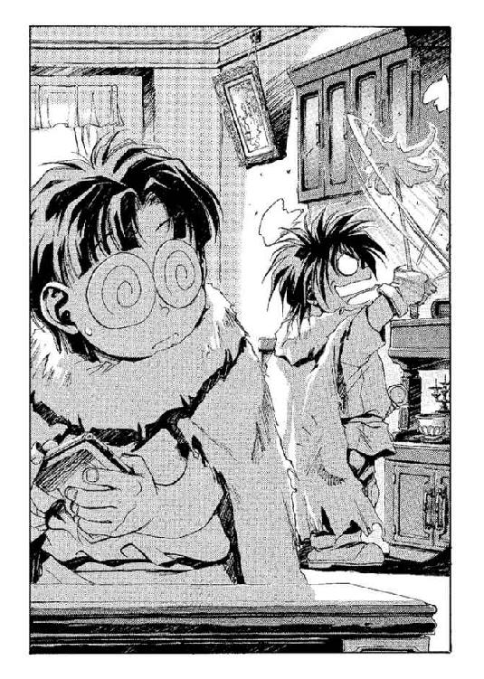
ボルカンはあっさりと態度をひるがえすと、いつの間に移動したのかという素早さでさっきのサイドボードをはたきがけしている。ドーチンは、ほっと安堵の吐息をもらすと、磨きかけていたクリスタルの灰皿を持ち上げようとした──が、テーブルの上には灰皿がない。
「あれ......？」
ドーチンは不思議そうに見回し、そして兄のポケットが異様に膨らんでいるのを発見して嘆息した。膨らみは、ちょうど灰皿ぐらいの大きさである。
（いつの間に......）
あれだけは尊敬してもいいかもしんない、と思う。
とりあえず灰皿はやめて、となりの葉巻入れを拭きはじめたとき、がちゃ、と応接室の扉が開いた。おばちゃんかな、と思って顔を上げると、そうではなくひょろりとした体格の若い男が入ってくる。
「よぉ」
男はにやけた笑みを浮かべながら、声をかけてきた。よれよれのシャツの上に、ワッペンのないレンジャージャケットなど羽織っている。腰に下げている剣は──ボルカンのものと違って──なまくらということはないだろう。
「あ。どうも──サルアの兄貴さん」
ボルカンが、急にかしこまったような声を出す。ハタキの手を止めて頭を下げたほどだ。
「おう」
サルアと呼ばれた男は、ほろ酔いのような表情で部屋の中を見回した。別にこちらがなにか盗んだのか確かめようとしているわけではなく、意味のないしぐさだろう──とドーチンは思いたかった。
なんにせよ、灰皿がなくなったことには気づかなかったらしい。サルアは薄い笑みを浮かべて、軽薄な声を出した。
「ボルカンとか言ったか......お前さんの情報は正しかったよ──たった今、魔術士のガキを捕まえてきた」
「あ、そーですか」
兄のせりふを聞きながら、ドーチンはマジクの顔を思い浮かべた。可哀想に。手荒なことになってなきゃいいけど。
そんなことを思いながらボルカンを見ていると、兄は、さらに蛇みたいな表情を浮かべてサルアに猫なで声を出した。
「で......肝心の、黒魔術士のほうは......？ 生意気にも《牙の塔》の紋章なんぞぶら下げてる......」
「そっちは、ほかの連中が行った。報告はまだだが、まぁ大丈夫だろう。腕っ節の立つのが五人、くれぐれも奇襲でカタをつけるよう厳命しておいたからな」
サルアはそう言って肩をすくめると、あごに手をやりながら続けた。
「ま、情報が本当だったんで、マクドガル御大がお前さんらに礼を言いたいそうだよ。夕飯の後になりそうだが──どうやら魔術士の坊やを痛めつけたがってたみたいだからな。長くかかるだろうよ」
と、にやりとしてみせる。
「あの御大がどれだけ魔術士を嫌っているか、知りたいか？」
「い──いえ」
答えたのは、ドーチンだった。見ると、どうやら兄はぜひとも知りたがっている様子だったが。
ドーチンは残酷な話というのは苦手だった。
へっへっ、とサルアが笑い声をあげる。
「ま、飼われ犬の俺にはどうでもいいことだがね──お前さんらも、これからも掃除夫としてここで働くつもりでいるなら、あの御大の趣味には──おっと、御大のご大層な宗教の教義、と呼ぶべきなのかね。とにかくまあ、そんなようなことには逆らわないほうが無難だぜ」
そんなせりふを残すと、サルアは応接室から出ていった。ずり、ずりと靴底を引きずるような足音が遠ざかって聞こえなくなるのを待ってから──ドーチンは、ぽつりとつぶやいた。
「たった五人で、あの借金取りがどうにかなったとは思えないけど」
「............」
兄は無視してハタキがけを再開している。
「知らないよ。兄さんが口を滑らせて、魔術士が近くにいる、なんて言うもんだから......仕返しは、ぼくは無関係だからね」
「ま、まあ......謝れば、大丈夫だろう」
答えながらも、声が震えている。ドーチンは冷たく言い放った。
「あの借金取りの弟子が無事だったらね。もし、ここの人たちに責め殺されたりするようなことがあったら──ぼくら、あの借金取りに殺されるよ」
「ゔ............」
さすがにボルカンも、事の危険性に気づいたらしかった。うめき声をあげて、ハタキを取り落としそうになっている。兄はこちらに背中を向けたまま、また浅はかなことを言ってきた。
「に......逃げ出すってのは、どーかな」
「こんな《森》の真ん中にある村から、どうやって逃げ出すのさ。道も分かんないのに」
ドーチンは嘆息して、応接室の一番広い壁を見やった──そこには、村の周辺の地図がかけられている。
広大なる戦士たちの故郷《フェンリルの森》──その中にぽつんと、赤丸が記してある。それがこの《偉大なる心臓》村だった。
◆◇◆◇◆
「ここ......のようだな。マジクが捕まってるってのは」
夜の闇の中──
オーフェンは茂みから顔を出して、ぼそりとつぶやいた。背後から、その肩につかまるようにして、クリーオウ。さっきの格好の上に長袖の耐刃ジャケットを着込んでいる。見るからに暑苦しそうだが、森の中をシャツ一枚で歩き回るよりはマシだと思ったのだろう。
彼女はすぐ近くからじろじろとこちらに視線を当てつつ、
「みたいね──さっきオーフェンが宙づりから逆さづりにつるしかえて、その下で焚き火して煙責めにしたらよーやくゲロした捕虜の情報によればねー」
「......なにが言いたい」
目を閉じてオーフェンが聞くと、クリーオウはすっとぼけた声を出した。
「べっつにー。たとえあなたが非道のかぎりを尽くして世界中の全てを敵に回したときも、わたしは味方でいてあげるからね、って話♥」
「なにを言っても小遣いはやらんぞ」
クリーオウのブーイングを無視すると、オーフェンは目を閉じたそのまま耳を澄ました。すぐ近くにいるクリーオウの小さな息遣い以外は、森の中は静まり返っている──とはいえ、無音になることが決してないのも、森の中というものだった。特に、夜間はそうだ。虫の声......そして獣の足音。葉擦れの音。村の近くなので、沢の音も聞こえてくる。
時刻は──オーフェンの勘では──そろそろ真夜中というころか。街道からここまで来るのにかなりの時間がかかったようだが、行動を起こすには、まだ早い。
と、オーフェンは目を開けた。視界の中に──星明かりに照らされて、森の中にぽっかりと集落が広がっている。見張りの姿は見えなかったが、どこに隠れているのか知れたものではない。建物に関しては、こんな森の中なので馬を飼う必然性はないだろうが、養豚場やその他の家畜小屋らしきものはかなり目立った。人間が住む家屋は質素なもので、納屋造りの小屋が多い。もっとも村の中心のほうには体育館のような大きな屋根も見え、また背の高い家屋も建っていた。教会の尖塔を思わせるその屋根は、やはり似たような機能のものらしく──とがった頭頂に彫像が据えてある。ただしそれはキムラック教会の聖印ではなく──
「......ドラゴン！」
オーフェンは小さくつぶやいた。
《フェンリルの森》を象徴するそのまま──巨大な狼の姿が、ごていねいに漆黒に塗られてそびえている。星の明かりがなければ、闇夜のカラスで見逃すところだった。
「まずいな」
オーフェンが毒づくと、後ろからクリーオウが聞いてきた。
「なんで？」
オーフェンは尖塔の狼の像を指さして、
「ディープ・ドラゴンの彫像だ。あんなもんを祭ってるとなると......ここはドラゴン信仰の隠れ里らしい」
「ドラゴン信仰？ 聞いたことはあるけど」
あまり理解してはいないような口調で、クリーオウが言う。オーフェンはクリーオウの頭をつかむと、はあ、と嘆息した。
「分かってねえみてえだな......ドラゴン信仰者にとっちゃ、俺みたいな魔術士はモロに天魔か天敵みたいなもんなんだぞ」
クリーオウは頭をつかまれたまま、しばし考えこんでから返事してきた。
「さっきのあの五人にしたことを考えれば、天魔で十分なんじゃない？」
「あのな......まぁいいけどよ。俺はともかく、問題はマジクだ──この村の連中に取っ捕まったとなると──」
と、クリーオウが近くにいるのを思い出して、語尾を濁す。拷問ならまだマシで、へたをすれば問答無用で責め殺されている可能性もある。
オーフェンは胸中で歯がみした。救出には時間をかけられない。実際、もう既に遅いのかもしれなかった。
（くっそ......）
「にしてもあの馬鹿、ただの人間に捕まるなんざ、連れもどしたら補習の嵐だ」
「既にこの前、自分にもできないくせにスクワット千回とか言って、泣かしたばっかりじゃない」
「......あいつが泣きながらスクワットやってる隙に、ひとつしかない桃缶ふたりで食べたんだから、お前も同罪だろ」
「そーいやそーだけど」
クリーオウはぼやいてから、
「......でもオーフェン、なんでドラゴン信仰者が魔術士を目の敵にするわけ？」
「............」
オーフェンはしばし黙して村のほうを眺めてから、さらにトーンを落として口を開いた。
「ドラゴン種族ってのがどういうもんかは、前に話したよな？」
「うん......大昔、神様から魔法の力を盗み出した種族のことでしょ？」
「ああ......」
太古の時代──遺跡などで発見されるドラゴン種族の年代記によれば一千年以上の昔。巨人の大陸と呼ばれる神々の国に、神の持つ『魔法』という全能の力の一部分を、全能ならぬ自分たちにも扱える術──つまり『魔術』──として盗み出した種族があったのだという。全世界の獣たちの中で最も狡猾だった六の種族──ウォー・ドラゴン種族、ウィールド・ドラゴン種族、ディープ・ドラゴン種族、フェアリー・ドラゴン種族、レッド・ドラゴン種族、そしてミスト・ドラゴン種族。
「六ドラゴン種族は神々の追撃を逃れて、このキエサルヒマ大陸にやってきた......途中、神々の放った配下やら手下やらと激烈な戦いもしたらしいがな。それら全てを退けて、ドラゴン種族たちはこの大陸を住処とした。彼らに遅れること何百年も経って、俺ら人間の祖先もこの大陸に入植してくる。これが三百年の昔......」
「人間は、ウィールド・ドラゴンから魔術の力をもらったんでしょ？ 前に言ってたけど」
「そう──人間とほとんど容姿の変わらなかった、ウィールド・ドラゴン＝ノルニル──天人と人間が混血することによって、魔術士──人間の魔術士、という大陸でも特異な存在が生じた。ドラゴン種族ではないのに、魔術を扱う能力を持つ種族ってわけだ」
と、オーフェンは視線でディープ・ドラゴンの彫像を示した。
「ドラゴン信仰者は、それを不遜と考えるのさ。実際に過去、魔術士発生の元凶たるウィールド・ドラゴン種族が、人間の魔術士を地上から滅ぼそうとしたって事実もあるからな。ドラゴン種族が俺たち魔術士を邪魔と考えるその理由は明らかじゃないが──いつだったかアレンハタムの地下で、天人の遺したデク人形がしゃべり散らしてたことはあまりアテになりそうにねえしな」
「......でも、つまり魔術が使えるってことが問題なわけでしょ？ だったら、ドラゴンって魔術士を独占しておきたいんじゃないかしら」
「そいつは、どうだろうな。俺たち魔術士が扱える力は、ドラゴン種族が持っている魔術の一番低いレベルに達したか達していないかって程度のもんなんだ、まあ、人間の魔術は既にいくつかのドラゴン種族の魔術を凌駕した、なんて言い切る魔術士もいるにはいるが......確かにな、ミスト・ドラゴン種族の持っている大気魔術やレッド・ドラゴン種族の獣化魔術と、俺たちの音声魔術──特に高度な白魔術までも含めた音声魔術とを比較すれば、俺たちの魔術のほうが上かもしれない。だが、それにしたって人間という種族の総合力とミスト・ドラゴン種族のそれとを比較してみれば──人間はミスト・ドラゴン種族のような、地上のいかなる環境でも生存できるような強靱な身体も生命力も持ち合わせてはいないし、レッド・ドラゴン種族のような極めて高度な知能も、自然体系知識もない。ドラゴン種族が人間の持っている力を危険視するってことは、まずないだろうな。嫉妬ってのは......可能性としては、あるかもしれねえけど」
「嫉妬？」
クリーオウが聞き返してきたのを、オーフェンは苦笑しながら答えた。
「なんだかんだ言ったところで、大陸で最も繁栄しているのは人間だ。もっとも、それを言うんなら──」
苦笑は消さないまま、続ける。
「それにもかかわらず、あくまで大陸の支配者なのが、ドラゴン種族だがな」
「ふうん......でも──」
クリーオウは、どうも不機嫌そうに口をとがらせた。
「結局、なんでドラゴン信仰者が魔術士を目の敵にするのかが、ピンとこないんだけど」
「まあな。俺もよく分からん」
オーフェンがそう言うと、クリーオウは少し肩をコケさせたようだった。フォローするように、オーフェンは続けた。
「ドラゴン信仰者は、ドラゴンを信仰する──大陸の先住者であり正統な支配者たるドラゴン種族をな。そしてドラゴン種族のいくつかが、俺たち人間の魔術士を嫌っている。君主の言うことは聞かなければならない──だからドラゴンを信仰する者たちは、魔術士を嫌悪する。この程度の論法なんじゃねえかな」
「なんか主体性を感じないわ」
「まあ......人間なんてもんはあんまり主体性があり過ぎても、それで思い上がって自分が世界の支配者だとか錯覚し、たいていは自滅しちまうんだけどな」
「そんなもんかもね」
クリーオウが、あっさりと納得した声を出す。
そんなもんなんだよな、とオーフェンも、胸中で相槌を打った。
夜闇に紛れて、足を踏み出す──夏場の森の中は、夜になると異様に蒸し暑くなる。手を振れば水滴でもつきそうなほどの湿気の中なら、少し足を忍ばせれば音はほとんど響かない。
──だといいんだが、と、平気な顔してぺたぺた足音を立ててついてくるクリーオウを横目で見やりながら、オーフェンは思った。
村の外れの茂みから、手近な家畜小屋──明かりの点いていない小屋──ゴミ捨て場に続く路地などをつたいながら、村の中へと潜入していく。見張りにもう見つけられている可能性はあった──しょせん、小さな村である。隙間なく見張ろうと思えばいくらでも手段はあるだろう。もはや開き直って潜入するしかない。
クリーオウは真っ黒──というか濃い紫の耐刃ジャケットの胸に、ぴったりと剣の鞘を抱くようにして、落ち着いた様子でついてくる。どうもこの娘は細かいことが好きなのか、この前買ってやったばかりのそのジャケットの左胸に人型の紋章──剣と盾を持った、かなり図案化された印章を刺しゅうしていた。聞いてみたら、商家であるエバーラスティン家には家紋はないが、同家と数代前に親族関係を持ったというなんとかいう貴族が、この家紋を持っていたのだという。貴族の容貌を持つクリーオウが身に着けているから、というわけでもないだろうが、その紋章はかなり見栄えがした。エバーラスティン家にほぼ押しかける形で輿入れしたその令嬢は、死ぬまで自分の姓を明かさなかったというが、案外、名のある家系のものなのかもしれない。
オーフェンは素早く路地を駆け抜けると、小屋の死角づたいに村の奥へ奥へと進んでいった。マジクが捕らえられている場所に見当がついているわけではないが、敵地でものを探すときにはいつも中心から始めるのが彼のやり方だった。そうすれば、探索と同時に逃亡のリズムもとれる。
村の中心に見えるのは、やたらに大きな円屋根の建物──屋根のあちこちから煙突が突き出ていて、工房のように見える。工房に捕虜を閉じ込めるという話は聞かないから、怪しいのはその隣に建っている教会のような尖塔だろう。一般の信者に拷問の場を見せたりはしないだろうから、マジクが監禁されているのは地下か、あるいは塔の上か──
小屋の物陰に身を潜ませて足を止めると、オーフェンは独りごちた。
「やっかいだな──見張りがいないわけはないだろうし、出入口に鍵くらいはかかってるだろう。単純な鍵なら魔術でなんとでもなるけど」
「......見張りから鍵を奪えない？」
クリーオウも同じ物陰に入ってきて、小声でつぶやく。オーフェンはかぶりを振った。
「奪うのは簡単だが──騒ぎを起こさずに、てのは難しいな。多少の訓練も受けているかもしれない相手を、声もあげさせずに素手で悶絶させるなんてのは至難の業だ。かといって、魔術を使うにはどうしても呪文が必要だし......いっそのこと、村中に火の手をあげて、混乱に乗じて建物に入るか。それなら、扉を魔術で吹っ飛ばしても分かりゃしねえだろ」
クリーオウが、それを聞いて燃えたというように、ぐっと拳をにぎる。
「なるほど......邪悪な人さらい教団を皆殺しにするわけね。すごい決心だわ、オーフェン」
「馬鹿たれ──そりゃまあ、この程度の規模の村なら、ゲリラ戦に徹すればなんとか渡り合える自信はあるけどよ」
「わたしだって冗談よ。でも、村を燃やしちゃったりしたら絶対に死人が出るわよ？」
「ここの教団がちゃんとした組織なら、避難もできずに焼け死ぬ者もいないさ。それに、火をかける前に爆音でも立てて、村中をたたき起こせばいい」
「......騒ぎを起こすのだけが目的なら、火事にしなくてもいいじゃない。例えば──いきなり村中の鏡の中から全身バナナ男が現れる、ていうのはどう？ きっと大騒ぎになるはずだわ」
「......いまいちどんなもんか分からんが......却下」
「じゃあ......オーフェンが全裸でけたたましい笑い声をあげながら村を縦断する。その隙に、わたしが活躍するから♥」
「......却下」
「村の人たちが寝ている間に、みんなにこっそり鼻輪をつけちゃうっていうのはどう？ 朝になったら大騒ぎ──」
「......お前、ことの深刻さを理解してないだろ。マジクを救出せにゃならんのだぞ」
「あの子なら大丈夫よ。前に、わたしが体育倉庫に閉じ込めたままうっかり忘れて家に帰っちゃって、そのまま連休に突入したときも生き延びてたもの。ボールの綿をかじって飢えをしのいでたんだって」
「そ、それもかなりエグいが......あのな、あいつは今この村で、拷問受けてっかもしんねえんだぞ」
「拷問!?......なら、連れかえったらマッサージくらいしてあげないと可哀想かもね」
かなり本気で言っているらしいクリーオウに、オーフェンは嘆息した。
「いや......お前の靱帯断裂マッサージは、あいつには酷だろ。俺でさえ悲鳴あげたくらいだから」
「人のマッサージに、変な名前つけないでよ。まあオーフェンが泣き出したときは、ちょっと驚いたけど」
クリーオウがぶつぶつ言うのを、オーフェンは手で制した。なんにしろ、この娘に『狂信者に拉致されて責め殺されているかもしれない不幸なマジク』のビジュアルを理解させるのは不可能らしい。
などと思いつつ、さらに村の奥に進もうとしたとき──
くうぅぅ──おおうぅぅぅぅぅ──......
膨大な量の空気が、どこか一点に吸い込まれていくような音が風に流れ──
かっ！──
村の中心に、天まで焦がすような火柱が噴き上がる！
「な──！」
オーフェンは絶句するような声をあげ、爆風から顔をかばった──後ろでクリーオウが、きゃあと悲鳴をあげている。爆風は地面の砂を巻き上げ、あたりの小屋の壁に当たってぱちぱちと音を立てた。火柱はまだ消えず、村の中心──ちょうど煙突のある巨大な建物の正面で煌々と燃え上がって、こちらまではいくらか距離があるというのに熱波をとどかせていた。村全体を白く照らし、荒れ狂うあの炎の色は──
（ガス爆発の類いじゃあ、ない──油が燃える色でもない──）
純白の火柱──白い炎は地上自然界には存在しない。何物も触媒にしていない真白き光は──
「あれは......魔術の炎だ！」
我知らずオーフェンは、声を出していた。村の中がにわかにざわめきはじめ、あちこちの小屋からばたばたと人が飛び出してくる。もっとも、いきなり燃え上がった火柱に気をとられて、オーフェンらのことを咎め立てする者は、まだいないが。
「魔術？ じゃあ......あれ、マジクがやってるの？」
頭から被った砂ぼこりをばたばたと落としながら、クリーオウが聞いてくる。オーフェンは、ぞっとしながら答えた。
「あいつがあれほどの魔術を使いこなせるってんなら、もう俺が教えてやれることなんざなにもねえよ」
「......え？」
「あれ......は──人間の魔術なんかじゃねえ──！」
オーフェンは喉の奥でうめいた。魔術士には、力を操るための力──魔力というものが視える──魔術が発動したならば、空間に解き放たれた魔力の構成を読み上げることもできた。そして、その編まれた構成から、術者の力量を読み取ることも。
「なぁに？ また、あの人形!?」
クリーオウは、叫びかえしながら剣を抜こうとした──それを押し止めながら、オーフェンはつぶやいた。
「やめろ。ンなもんが通用する相手か」
「な──なによ、自分だけ事態が分かっちゃって、ずるいわね」
クリーオウが、少し拗ねたように言う。オーフェンは、一瞬なかば本気で、頭突きかなにかの一発で、相手に思考を伝えることはできないものかといらだった。
「見ろよ！」
と、火柱のほうを指で示す。もう純白の炎は、とっくに消えていた──が、火が消え、また月下の闇となった暗闇に、なにか、うすぼんやりとシルエットが映っている。
その場所──村の中心までは、まだ数百メートルはある。その距離からでもそのシルエットは、はっきりと判別できた。月の下に映える巨大な狼のシルエット──
「ディープ・ドラゴン＝フェンリル！」
オーフェンは、全身ぞっと震わせながらその名を叫んでいた。ほんの一瞬前までは、ドラゴンなどいなかったのだ。昔聞かされた、ディープ・ドラゴンについての伝説が、ずらりと頭の中を埋め尽くしていく──
「くそ、確かに、フェンリルなら、空間転移の能力も持っているかもしれねえ......」
「な、なになに？」
こんな事態でも、なにやらおもしろそうにクリーオウが目を輝かせた。オーフェンは、なんだか無意味に泣きそうになりながら続けた。
「だ・か・ら──ディープ・ドラゴンだよ！ ドラゴン種族でも有数の力を持った！」
叫びながらオーフェンは、遠くにそびえるシルエットを見やった。漆黒の毛並みを持つ巨大な狼は、月明かりでもなければまったく夜闇に溶け込んでしまうのではないかと思える。ディープ・ドラゴンは決して雄叫びなどあげない──足音すら立てず、言葉も使わない。言語思考を行っているであろうというのに、だ。音のないドラゴン。その巨体ゆえ普段は水中に暮らすが、別に地上にいてもなんら不都合はない。むしろ地上にいるときのほうが攻撃性が増すくらいである。
人間が出会った場合、危険なドラゴン種族は二種類あると言われている──最悪なのがミスト・ドラゴン。そして、最悪を通り越してもうどうしようもないのが──魔術に長けたディープ・ドラゴンである。
「う～！」
それだけの情報を、口に出せずに頭の中でずらずらと並べ立てながら、オーフェンはうめき声だけあげてクリーオウをにらみやった。無論、伝わるわけがない。自分でも分かっている。
だが、説明の間などないほど、ディープ・ドラゴンは危険すぎる。
オーフェンは、ぐっとクリーオウの肩をつかんだ。こっそりとドラゴンのいるほうへと進みかけていたクリーオウは、いたずらを見つかった子供みたいな表情を見せた。
（こいつは......全っ然分かってねえ！）
と思いつつ、じっと彼女のブルーの双眸をのぞき込む。
「逃げろ！」
「............はあ？」
クリーオウは、しばらくきょとんとしてから、間の抜けた声をあげた──そう言われる可能性を、まったく考えていなかったらしい。オーフェンは、焦燥に駆られながらあたりを見回した。今の爆音で、村人たちが目を覚ましたらしい。あちこちの小屋から、ざわざわと人の気配が現れはじめた。もう既に家を飛び出し、ドラゴンだ、と叫び声をあげている者もいる。
だが、まだオーフェンらのことに気づいている者はいないようだった。気づいたとしても、村の真ん中にドラゴンが現れたとなれば、それどころではないだろうが。
オーフェンはもう一度クリーオウの目をのぞきこんだ。ここ二か月近くの経験から、この娘に言うことをきかせるコツは、とにかく反論の機会を与えないことだと悟っていた。
「森の中につけてきた目印をたどれば、お前ひとりでも馬車のところまで帰れるな？」
「え？ あ──うん。でも──」
「もどったら、通りがかりの誰でもいいから、隠してある馬車を動かしてもらって、一番近くのレンジャー詰め所に行くんだ。レンジャーに事情を話して、そこで待ってろ。いいな？」
「うん、話は分かったんだけどさ、でもオーフェン──」
「じゃあ、行け！ 俺もなんとかマジクを助け出してから、後を追うから！」
「あの──」
「いいから行けえっ！」
オーフェンが腕を振って怒鳴ると、さすがにクリーオウも、ちょっとムッとしながら後退りしはじめた。恨めしげな目付きで、こちらに恩を売りながら、後ろ向きに走り出す。
「オーフェン──」
捨てぜりふも忘れない。
「貸しひとつよ──今度はわたしの言うこと聞いてもらうからね」
「やかましいわ、あほたれっ！」
ったく──と、オーフェンは胸中で毒づいた。あのアマ、ちいとも自分の立場ってモンを分かってねえんだからよ、くそ。
（俺ひとりでも、生き延びられるかどうか──）
オーフェンは胸元の、ドラゴンのペンダントを握りしめて、なにかに祈るような手つきをした。なにに祈ったのか、自分でもよく分からないが。
（マジクの馬鹿、貸しひとつだ──俺の代わりにクリーオウの言うこととやらを聞いてもらうからな！）
勝手に災厄を押し付けると、オーフェンは全力でドラゴンのいるほう──村の中心へと走りはじめた。なんとなく、マジクが捕らえられているのもそちらのような気がしていた。
ドラゴンは動かない。姿を現した場所そのままに、じっとたたずんでいる。なにかを見つめるように──と、シルエットの頭の角度から、オーフェンは気づいた。ドラゴンは、塔の近くにじっとしている。その鼻先は、じっと塔の上を見つめているらしかった。
（マジクが捕まってるのが、あの塔だとしたら、ドラゴンの目の前に出なけりゃなんねえってことか......）
にわかに騒然としだした村を駆け抜けながら、オーフェンは考えた。
（死ぬかな）
村の中は、もう闇ではなかった。松明の明かりがあたりを照らしている。起き出した村人たちが点けたものだろう。耳を傾けるに、村人たちはディープ・ドラゴンの出現にさほど騒然とはしていないようだった──いや、騒ぎ立ててはいても、パニックにはなっていない、というところか。
（さもありなん──ドラゴンは奴らの守護神だからな......つうか、奴らはそう思ってるってだけだがよ）
と──声。
《......だ......なのだな？》
「............？」
オーフェンは耳を疑って、足を止めた。今なにか、確かに、耳元で声がしたような気がしたのだが──
（なんだ？）
眉をひそめて、耳を澄ます。小屋と小屋の間の、小さな路地である。たまたま通路になっていないのか、村人の姿はない。ほかの通りとの交差点で、ちらちらと松明を掲げた村人の姿は見えたが、彼らもこちらには気づかずに通り過ぎていく。みんな、ドラゴンのところへ向かっているようだった。
（立ち止まっても、いられねえか......）
オーフェンは舌打ちして、また走りはじめた。村人がドラゴンのもとに集まっていっているのでは、ディープ・ドラゴンだけでなく、村人からも逃げなければならない。マジクを救出するのは、ますます絶望的であるような気がした。
（あの馬鹿、手間ばかりかけさせやがって──連れもどしたら、どうするか見てろ──）
と、また、声。
《まだなのだな？》
今度は、はっきり聞こえた。
（──気のせいじゃない！）
その声は、肉声ではない──大気を震わせずに、ただ空間に弾け飛ぶような声だった。頭に無理やりねじ込んでくるような......
（ディープ・ドラゴンの暗黒魔術だ......俺は標的になってないはずなのに、それでも聞こえるのか!?）
ディープ・ドラゴンの魔術は、精神を支配する術だと言われている──それだけなら人間の白魔術も同じだが、決定的な違いは、フェンリルのそれは生物だけでなく非生物にまで作用してしまうことである。つまり、森の木々はもちろん、土や大気、水、果ては空間にまで精神支配が及んでしまうのだ。
先刻の火柱も、空間を支配して振動させた結果、生じたものだろう──あるいは、振動を利用して転移した、その余波で起こったものかもしれないが。
（にしても──知ってはいたが、とんでもねえ威力だな）
ぞっとしながら、認める。
人間が声を媒体に魔術を用いるのと同様に、ディープ・ドラゴンの魔術は、視線を用いる。だがドラゴンは今、こちらを見てなどいない。つまり、オーフェンはドラゴンの魔術の影響下になどいないのである。それでも、念話の影響を受けてしまう。
（こりゃますます、太刀打ちできるような相手じゃねえぞ......にしても、なんでいきなりドラゴンが現れたりするんだ、この村は？）
ディープ・ドラゴンは《フェンリルの森》を守護していると言われている。《森》に入ってきた人間には容赦がない。だがもし、ドラゴンがこの村を滅ぼそうとして現れたのなら、遠くから一分間も凝視してやれば、この程度の集落など、ほどなく灰燼に帰すのである。なのにドラゴンは村のわざわざ真ん中に現れて、しかも、なにをするでもなくじっとしている。
（まさか──本当にこの村の守護神だとでもいうんじゃねえだろうな？）
まさかまさかとくりかえしながら、路地を出て通りを曲がる。と──
「誰だ、お前は！」
誰何の声に、オーフェンは足を止めた。小さく舌打ちして、わずかに腰を低くする──飛びかかられたときの用心である。振り返ると、そこに長身の男が待っていた。
男は、右手に松明を、左手に祭祀用の錫杖のようなものを持っている。松明の明かりが、男の姿を照らしていた。髭を生やした、がっしりした中年の男。
その男の背後に、取り巻きのように、また数人の男たちがいる。ただの村人のようだが、いちいち体格のいい連中がそろっているところを見ると、文字どおりの取り巻きなのだろう。もっとも、一番後ろにいる若い男だけは、妙に雰囲気が違っていた──しかも武装している。腰に長剣を下げて、ワッペンのないレンジャージャケットを着た、にやにや笑いの青年である。年は、二十二、三というあたりか。
錫杖の男が、まず声をあげる。野太い、しっかりした声だ。
「何者かな？ この村の者ではないようだが」
「......俺かい？ 俺は──」
と、オーフェンはなにかごまかそうと口を開いたときには、もう既に錫杖の男は動きを見せていた──錫杖が、からんと地面に落ちる。
同時に、空いた左手で、男は懐から黒っぽい鉄の塊を取り出している。オーフェンは、とっさに後ろに跳んだ。その後を追うように、男の取り出した塊が、ぱんっ！ と弾けた。
「拳銃！」
オーフェンは、短く叫んだ。弾丸は夜目のせいか、もともと外れていたようで、弾丸が身体の近くを通るときの無言の衝撃も感じはしなかった──もっとも、使っている火薬が粗悪であれば、弾丸が衝撃波を発するほどの威力は出せないだろうが。
「ドラゴンの次は拳銃かよ──王室令で取り締まられてるはずだろうが？」
オーフェンがうめくと、拳銃を構えたまま、男は笑った──髭を盛り上がらせただけの、顔の下半分だけの笑み。目は笑っていない。
「人界の法など、我が《森》では通じぬ！ わたしはドラゴンの御使い、《心臓》の教祖マクドガルだ！」
教祖──マクドガルとやらが、また引き金を引く。マクドガルが使っているのはごく一般的な造りのもので、銃身がない。普通知られているかぎりでは、拳銃というのは単に近接戦闘の切り札として用いられるものだ。だから左手で使う。それ以外の拳銃の運用方法も習ったオーフェンは知っていたが、少しでも距離をおけば当たるものではなかった。
が、それでももちろんまぐれ当たりの可能性はいつでもあったし、当たれば致命傷にはなり得る。幸い、二発目も外れはしたが、オーフェンはあえて三発目を撃たせるつもりはなかった。
「我は放つ──」
「やはり魔術士か！」
マクドガルが、叫んだ。取り巻きたちが、ざわっと押し寄せてくる。オーフェンは構わず魔力を練り上げた。
どうせ、こちらの名前も聞かずに拳銃で撃ってくるような連中だ。
（この際、ひとりやふたり大ケガをしようと知ったことか──！）
「光の──」
完全に間に合うタイミングで魔術が発動しようとする──が、呪文は突然妨害された。
「くっ──!?」
左の肩口に、鋭い痛みが走る。いつの間にか、ナイフが突き立っていた。魔術を放つために身をよじっていなければ、喉に刺さっていただろう。
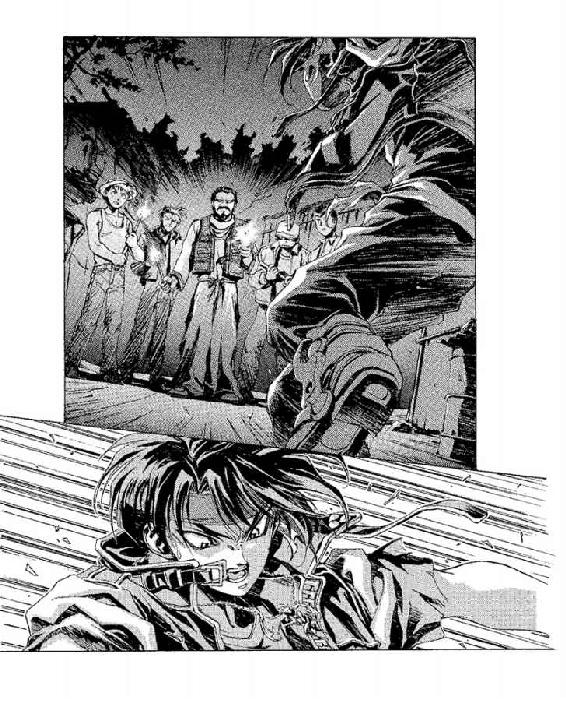
痛みにうめくオーフェンの視線が、マクドガルの後ろからナイフを放った男の視線とぴたりと合った──例の、帯剣したレンジャージャケットの男。にやにやとこちらを見つめている。その目はまるで、こちらを挑発しているようだった──『そのくらいじゃ、まさか倒れねえだろう？』
ぱんっ！──三発目の銃声が響く。だが外れ。オーフェンは、ナイフの痛みと重量とで肩を落としながら、再び魔術の構成を編み上げようとした──
そこを、いきなり、真横から一撃される──接近してきた取り巻きのひとりが、持っていた松明で横殴りにしてきたのだ。左腕が動いていれば、避けられただろうが、もう遅い。松明の火が、頭の横でぱちっと弾ける音が聞こえた。
「こぉの──」
オーフェンはうめくと、頑丈なブーツのかかとで、その取り巻きのひざ頭を思い切り踏み砕いた。ぎゃっと叫んで、その男は倒れる。と、また目の前まで別の取り巻きが迫ってきている。オーフェンは今度はこちらのほうが先に、相手の胸元に右の掌打を放った。敵が、うっとうめいてひるんだ瞬間に、魔術を放つ。
「我は流す天使の息吹！」
刹那、手のひらと男の身体の間に、猛烈な空気圧が膨れ上がる。大気に押されて、男の身体は後方に吹き飛んでいった──そのまま、マクドガルに衝突して悲鳴をあげる。
飛んできた取り巻きに押し潰され、マクドガルが罵声をあげるのが聞こえた。ザマミロと思いつつ、オーフェンは身をひるがえした。
（急いで──マジクを──助けねえと──）
と──
（な............!?）
オーフェンは、愕然と足を止めた。振り返ったすぐ前に、ディープ・ドラゴンがいる。
「おお......！」
背後から、マクドガルが声をあげるのが聞こえた。熱病に浮かされたような、絶望的な感覚の中で。
「我が主よ──！」
我が主よ。オーフェンは、マクドガルのせりふを胸中でくりかえした。
ドラゴンは......じっと、じっとこちらを見つめている。
ディープ・ドラゴン──音無きドラゴンの戦士。伝説には、そう呼ばれる。女神の住まう《フェンリルの森》に在って、女神のもとへ赴こうとする愚かな人間をことごとく滅ぼす、大陸で最強の戦士。大陸で最も破壊力のある魔術を操るウォー・ドラゴンやウィールド・ドラゴンを王と女王と称するならば、このディープ・ドラゴンはまさしく戦士だった。
戦士に逆らうなど愚かなことだ。勝てるわけがない。
間近で見上げるこの黒狼は、あまりにも圧倒的だった。美しい緑色の静かな目で、じっとこちらを見下ろしている。その一瞥で、人間の身体など塵にまで分解してしまうだろう。夜の闇に黒光りする漆黒の毛並みは、皮膚から分泌される脂のせいで夜風には揺れない。口は開かない。だから赤い舌も見ることはない。
大陸で、最も美しい獣。それがこの、ディープ・ドラゴン＝フェンリル。
月光の下、戦士の眼差しでこちらを見ている。
「なんで......俺を見る......？」
オーフェンは咄嗟に、考えてもいないようなことを聞いていた。だが、聞いてみてから、ドラゴンが、わざわざ自分の目の前にまで歩いてきて、こちらを見つめているというのは道理に合わないような気がしてきた。それとも、このドラゴンは、本当にこの村の守護神で、侵入者である自分を滅ぼそうというのか──
《この男なのだな？ 汝のものを奪いにきたのは》
（............？）
オーフェンには理解できない会話を、そのドラゴンは、いずこかにいるのだろう誰かと交わしつづける。
《汝、自らのものを守るために我が力を欲するのか？──》
（ヤメロ──！）
オーフェンは、すべての神経を振り絞って、ドラゴンの魔術に抗おうとした──
そして闇に抱かれるように沈黙が訪れた。
第三章 捕らわれのオーフェン
闇の中にたったひとり。彼は浮かんでいた。
立っているのか座っているのかも自覚できない──体に感覚がない。指先になにかを感じているようでもあるし、背中がなにか生暖かいような気もする。かと思えば、たまらない寒さに震えたりもした。
と、目の前に、ぽうっと明かりが灯る──自分の身体は見えないというのに、その光の中に浮かぶ人影は、はっきりと認識できた。ひらひらと光になびく薄絹の衣装を着た、まだ子供と言って差し支えない少女──
彼女は、唐突に口を開いた。
《あなたがオーフェン、ですね......？》
............
返事は、声に出せなかった。だが彼はこんな事態でも、ひどく落ち着いていた。
彼女が続ける。
《ごめんなさい......謝りたくて、あなたの心に語りかけています》
彼女の表情が、卑屈に歪む。それを見て、彼はいらだったが、なにも言い返すこともできなかった。
《ごめんなさい、ごめんなさい──わたし、あなたを襲わせてしまった......》
......よく分からない。自分は襲われたのだろうか。なにも覚えていない─というより、思い出すという行為ができなくなってしまったようだ。自分の名前さえ、分からない。思い出したいという欲求すら起こらない。
だが彼女は、それについてなにも説明してくれそうにはない。
《あなたがマジクを連れもどそうとしているのが分かったから、ドラゴンにあなたを襲わせてしまった......わたしには、誰も頼れる人がいないから》
............
《彼をつれ去って欲しくなかった。それとも嫉妬したのかも。彼には助けが来たんだもの》
彼女の声は明瞭だったが、言っていることの意味はよく分からなかった。
《でもドラゴンが、あなたを廃人にしてしまうなんて思わなかったんです......》
ドラゴン──その言葉は、なんとなく煩わしい印象を自分に与えてくる。聞いただけで逃げ出したくなる。そんな感触だ。
《わたしにできる限りの力で、あなたを癒します。少し時間はかかるかもしれないけれど》
その言葉とともに、周囲の闇が少しずつ薄くなっていく。
《あと、マクドガルには逆らわないで。彼を殺さないで。彼がいるから、この村は──》
そのあとのせりふは、闇を壊していく光に紛れ、なにも聞こえなかった。
◆◇◆◇◆
（......なんだ？）
ふと気が付くと、箱をひっくりかえしたみたいに大量の疑問が襲いかかってきた──質問する主は自分だし、自分に問いかけている。だから順番にあわてず答えればいいだろうとは思うのだが、質問は一向にとどまろうとしない。
ここはどこだ──？
俺は誰だ──？
痛むのはどこだ──？
息をしているのは、身体のどの部分だ──？
（くそっ......）
彼は、寝返りを打った。それだけの動作なのに、全身の力を振り絞らなければ動けない。左肩が痛むんだ、と彼は自覚した。負傷している。
（なにも思い出せない......いや？）
覚えていることもある。闇の中に現れた少女の姿──
なにかを恐れて卑屈になっているその眼差し──
彼は、目を開いた。暗い──が、光はある。うすぼんやりとした明かりは、どうやら彼の背後から射してきているらしい。彼は横向きに、壁に向かって寝ていた。壁は土壁で、彼が寝転んでいるのも地べたである。一瞬彼は、自分が洞窟かなにかに埋められたのかと思った。が──
「目覚めたようだな、魔術士」
声......が、自分を呼んでいる。ぼんやりとした記憶の中に、その声の主の顔が浮かんだ。自分に向かって発砲したマクドガルとかいう男だ。教祖とか名乗っていた。
彼は、また逆方向に寝返りを打った。
最初に視界に入ったのは、靴だった──マクドガルとかいう男の銃が、寝転ぶ彼の目の前にある。その汚れた登山靴の向こうには、またもう一組の靴がある。どうやら連れがいるらしい。靴のさらに向こうには、鉄格子が見えた──そして、うっすらと光の射す、曲がった階段。
それでだいたい、自分の置かれている状況が分かった。地下牢に閉じ込められているのだ。鉄格子の扉はわずかに開いて、その前に、マクドガルと、もうひとりの男がいる。ちらりと見上げて、その連れが、例の、自分にナイフを投げ付けた男だと分かった。帯剣しているのは相変わらずで、例のナイフも隠しているだろう──彼の左肩の傷には、もうナイフは刺さっていない。血を含んだ服が皮膚に張り付いて包帯の役目を果たしてくれていたようだが、それがなかったら失血死していたかもしれない。
（立てるか？）
彼は、自問した。多分、立てるだろう。が、今はそんな体力が残っていることは隠しておいたほうがいい。
マクドガルが、冷淡な目でこちらを見下ろしながら、口を開いた。
「名前を聞いておこうか、魔術士」
「............」
彼は、なにも答えなかった──というより、答えられなかった。
（名前？）
思い出せない──頭が混乱して、なにひとつ。夢を見ていたんだ──
と、なにも言えずにいると、やがてマクドガルが嘆息した。
「だんまりか」
「そりゃ、進んで答えたくはないでしょうねえ」
顔の通り、にやけた返事をしたのは、剣を下げた男である。昨夜と同じ、ひどく乱雑なふうにレンジャージャケットを着ている。マクドガルが、そちらに聞いた。
「どういう意味だ？ サルア」
どうやら、レンジャージャケットの男の名前らしい──サルア、と彼は胸に刻み付けた。
サルアとやらは、軽く肩をすくめて答えた。
「この男は《牙の塔》の紋章をつけています。黒魔術の最エリートですよ。それが無様に捕らわれたとあっちゃ、そりゃ名乗れんでしょう」
「ふん......しょせん魔術士だ」
マクドガルは、鼻で笑った。が──
（──《牙の塔》......）
その単語には、彼も胸に響くものがあった──そう。彼は人生のほとんどをそこで過ごしたのだ。
と──マクドガルが続ける。
「多少痛め付ければ、しゃべらんではいられんさ」
「拷問ですか？ 魔術士に？ 耐拷問の訓練も受けている連中ですよ」
サルアが言いながら、かぶりを振る。じろりと、マクドガルがにらみやった。
「誰がボスか、忘れたのではあるまいな？」
「まさか」
へっへっと笑いながら、サルア。
「あなたが心臓ですよ、この村のね──」
それを聞いて、マクドガルは満足したらしかった。うなずいて、こちらを向く。
「聞きたいのは、名前だけではないぞ、魔術士──お前を出迎えにいった村人は、どうなった？ お前が殺したのか？」
殺す？ その単語は馬鹿馬鹿しい。彼は思わず微苦笑をもらした。
──が、それは、マクドガルの気には召さなかったらしい。ほんの一瞬で、マクドガルの顔面がこわばるのが見えた。
「なにがおかしいっ！」
同時に、教祖の靴が、彼の顔面を打つ。
反撃しようと思えば、いくらでもできた──それこそ、足首を取って靱帯をねじ切ることだってできただろう。倒れた教祖の眼窩をかかとの角で踏み砕き、眼球ごと脳を破壊する。わざわざそんなことをしなくても、一言叫べば済むことだ──魔術の一撃で、この教祖はおろか、後ろに立っている男もこの世から抹消できる。
彼が師から教わった技術でならば、それはできたはずだ。が──
彼は地面の上から、黙ってマクドガルを見上げた。
マクドガルは、その沈黙を服従の意ととったらしい。静かな喜悦の光を双眸にたたえ、満足げな口調で言ってきた。
「わたしはマクドガル──そしてここは《偉大なる心臓》の聖地だ。世界の真理──心臓を探求する者たちの都だ。お前たちまがいものとは違う、真に強き力、本物の魔術を持つドラゴンに仕える戦士たちの故郷だ」
「............」
彼はなにも言わない。サルアが、マクドガルの背後で肩をすくめるのが見えた。マクドガルは、ひとりで続けた。
「この場でお前を処刑するのはたやすい──が、それはしない。なぜ《牙の塔》の魔術士がこの村に現れたか、お前から聞き出さなければならない。お前の生徒も捕らえてある。どちらかが逃げ出せば、残ったほうを殺すぞ」
生徒？──思い出せない。が、そんなものもいたのかもしれない。
「今は休め──体力を回復させたら、それを後悔させてやる。麻酔なしで歯を抜かれたことがあるか？」
どうやら、それが捨てぜりふであるらしかった。勝ち誇った笑みを浮かべ、マクドガルはこちらに背を向けた。
マクドガルとサルアは出ていく。もうなにも言い残していかない。がちゃり、と扉に鍵がかかる。
彼は魔術で肩の創傷を癒し、再びそのまま眠りについた。小一時間ほど経ち、眠りから覚めたときには、もう記憶は回復していた。
◆◇◆◇◆
「......なんでこんな部屋でひとりで暮らしてんの？」
その問いかけは、彼女を苦しめたようだった──窓から外を眺めていたフィエナの横顔に、小さな感情の皺が寄るのが見える。それそのものは一瞬で消えたが、その印象は、しばらく記憶に残りそうだった。
（今の彼女は巫女じゃない）
と、マジクは思った。
その彼女が、こちらを向く。着ているのはただの部屋着、白っぽい麻の上下である。彼女は、どこか恥じるように、
「わたしは、あまり人前に姿を見せてはいけないの......ぼろが出るといけないから」
「ぼろ？」
マジクが聞き返すと、フィエナは笑った──自嘲するように。
「わたしは、道具なのよ──この村の人たちをまとめるための。大事な儀式にだけ顔を出して、決められたとおりのことを言って、それで......奇跡を起こすの」
「奇跡......ぼくのケガを癒したみたいな？」
フィエナは答えなかった。そのまま、なにかを探すように部屋の中を見回す。
マジクもつられて、あたりを見回した──村の中心に建っている、教団の塔の最上階に、唯一ある部屋。地上十メートルの高さにあるだけあって、さほど広くはない。せいぜい、数歩で端から端までたどり着ける程度だ。塔そのものが木造のため、部屋の壁もすべてむき出しの板になっている。部屋の中には、集会場に声を伝える伝声管の据えられた台と、小さな丸テーブルに、たった一個の椅子、そして今マジクが横になっている簡素なベッドがあるだけだった。
マジク自身は、女物の寝間着を着せられて、ベッドの上で身動きとれずにいる──寝間着の下は、胴体に包帯を巻いてあった。マクドガルに撃たれた傷は、なぜか痛まないものの、まだふさがってはいない。彼女の話では、もう立って歩くくらいのことはできるだろうが、あまり無理はしないほうがいいとのことだった。
彼女が探していたものは、テーブルの上にあったらしい──彼女は木の丸テーブルに歩いていくと、その上に置いてある水差しとコップを取り上げた。コップの中に水を注ぎながら、口を開く。
「傷は痛まない？」
「え？ うん......全然。身体を動かそうとすると、なんか筋肉が突っ張る感じだけど」
「まだ皮膚がつながってないからだと思うわ。お医者じゃないから、よく分からないけど。でも、やっぱり魔術士って身体が丈夫なのね」
「そうかな。まあ、お師様はむやみに頑丈だけどね......」
と言いかけて、ふと、その弟子である自分も、いずれあの人のようになるのだろうかと思いついてしまう──良いところも、悪いところも。マジクは身震いしてから、その危惧を忘れることにした。
「にしても、なんでぼく、こんなの着てるの？」
と、自分が着ている、だぶだぶのネグリジェのようなものを示す。コップの縁に口をつけながら、フィエナが、ようやくおもしろそうに笑うのが見えた。
「だって、あなたが女の子だってことにしておかないと、わたしの部屋で世話なんかできないじゃない」
「うう......まあ、そーいやそーだけど」
つぶやくように言いながら、マジクは胸中でうめいた。
（こんな格好、お師様に見られたら、どんなことになるやら......ましてや、クリーオウなら──）
そこまで考えて、蒼白になる。考えたくもない。
「それはそうと、この寝間着さ、誰のものなのかな」
マジクが聞くと、フィエナはあっさりと、
「食堂のラーザおばさんの」
「......まあ、世の中そんなもんだよな」
なんとなく悟った声で、口の中でマジクはつぶやいた。
と──
ばたんっ！
唐突に扉が開く。扉を開けたのは、厳しい顔をしたマクドガルだった。取り巻きも、サルアとかいう用心棒も連れていない。ひとりである。彼を見て、フィエナがびくりと身をすくませるのが見えた。
マクドガルが現れたのも唐突なら、口を開くのも唐突だった。ちらとこちらを見やってから、魔術士などまるっきり一顧だにしないという態度で、
「まだ準備をしていないのか、フィエナ」
「なにを......ですか？」
フィエナが、いつの間にか〝巫女〟の顔になっている──マジクは、ふと気づいた。これは、彼女の防御態勢なのだ。
マクドガルが、いらだたしげにほおを上げる。
「言っておいたはずだ──出立は近いとな」
「......はい」
フィエナがうなずく。マクドガルは、辛抱強く息をつきながら、
「昨日も言ったはずだ、お前には。一昨日もだ」
「わたしは──......です」
つぶやいた彼女のせりふは、マジクにはほとんど聞き取れなかった。だが、マクドガルには聞こえたのか──あるいは、最初から予想していたのか、眼差しに理解の色を浮かべている。
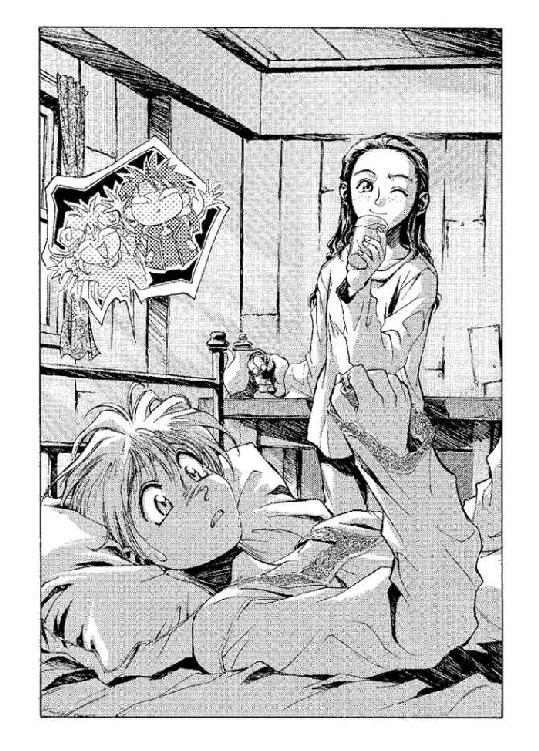
だがそれでも、マクドガルは聞き返してきた。
「なんと言った？」
「わた......しは......」
フィエナはうつむいて、繰り返す。どちらにせよ聞こえないが。彼女の巫女の顔が壊れていくのを、マジクはなんとなく不安になりながら見つめていた。
マクドガルが、部屋に一歩踏み入れる。
「半年前、森の中で迷っていたお前を保護してやったのは、わたしなのだぞ」
「わたしは......迷ってなんかいませんでした」
うつむいて、半歩ほど後ろに退がりながら、彼女。マクドガルの片眉が、器用にぴくんと引きつった。
「迷っていなかった？ では、なにをしていたというのだ？」
「探していたんです......」
「......なにをだ」
フィエナは、震える声を出した。
「あ......あなたを」
それを聞いてマクドガルは訝るように眉をひそめたが──やがて思いついたように言った。
「ならば導きだ。違うか？」
「............」
フィエナは答えない。マクドガルが、また一歩進む。
「この計画にはお前の存在が不可欠だ。そもそも......お前が現れなければ、この偉大な展望は開けなかったのだからな。それは感謝している。感謝には──」
と、肩をすくめる。
「感謝には、応えるべきだ。そうだろう？ フィエナ。お前には、その力があるのだからな」
「力......なんて......」
フィエナがまた、口ごもる。マクドガルが、覆いかぶさるように続けた。
「まさしく、力だよ──そうだろう？ フィエナ。お前は、ドラゴンの魔術を扱うのだからな」
（......な──？）
突拍子もないその一言に、マジクは、一瞬頭の中を真っ白にした。
その間にも、マクドガルは続ける。腕組みして、
「その力で《森》の心臓を捜し当てるのだ。お前にしかできないことなんだぞ、フィエナ」
「わたしは......──」
と、フィエナがまた聞き取れないせりふを繰り返す。彼女が胸元で握っている手を、がっ、とマクドガルが乱暴につかみ上げた。
「聞き分けのないことを言うんじゃない。お前の我がままはいくらでも聞いてやったろうが──この薄汚ない魔術使いもお前にくれてやった」
マクドガルがこちらを示す。さすがにムッときたが、マジクはまだ身体が動かなかった。
教祖は続ける。
「空気を吸いたいというから、窓も開けさせてやった──土を踏みたいというから、三日に一度《森》を散歩することも許可してやった！ だが、お前はわたしに協力しないというのだな!? お前は恩知らずの捨て猫だ──」
「いいかげんに──」
マジクはそこまで声を出してから、息を吸いなおした。
「しろっ！」
その声を呪文にして、魔力を解放する。とたん、マクドガルの身体が一瞬だけ宙に浮き、部屋の向こうへと突き飛ばされた。フィエナから引きはがされて、丸テーブルに激突するマクドガルをにらみ据えながら、マジクはベッドから起き上がった。まだ負傷した部分に違和感があるため、ゆっくりとしか動けないが、なんとか立ち上がってフィエナとマクドガルの間に割ってはいる。
「この魔術士──」
マクドガルが、毒づいた。厳しい形相をさらに歪めて、どす黒くしている。正直、こういう手合いと向き合いたくはなかったが、この際引き下がるつもりはなかった。
「マジク!?」
背後から、彼女の声。マジクは、大丈夫だとうなずきながら、
「もう拳銃なんかにはやられないさ。お前が抜いて狙いをつけるより、ぼくが呪文を唱えるほうが早い」
魔術が成功すればの話だけど、と胸中で付け加える。かなり深刻な問題ではあったが。
マクドガルは、にやりとして、自分の懐に左手をやった。
「ほう──こいつのことを知っているのか」
「お師様に習った。そいつは、王室令で製造も所持も禁止されてるはずだろ？ なんでお前なんかが持ってるんだ」
「わたしは──」
マクドガルが、立ち上がる。
「わたしは、手に入れたいものを手に入れる。手に入れるべきものが、手に入るのさ──女神に迎え入れられる運命なのだから」
（女神......？）
マジクは訝った。
「運命の三女神の信仰なら、キムラック教会のはずだろう？」
「わたしの女神は、そのようなものではない──わたしに力を与えてくれる女神さ。いい気になるな、魔術士」
マクドガルの手が、じりじりと懐の拳銃へと近づいていく。
「貴様の魔術など、はるかに及びもつかない強い力を、わたしは得るのだ。《森》の......心臓でな」
「......くっ......」
意味もなく、マジクはうめいた。マクドガルの手は、ついに上着の中へともぐりこんでいる。右脇に吊ったホルスターには、拳銃があるはずだ。
（もし、奴が本当に抜いたら──）
冷や汗を浮かべつつ、覚悟を決める。
（ぼくはあいつを殺さなければならない。じゃないと、殺される──）
それはあまりにも現実離れした想像ではあった。自分が人を殺すなど、夢の中でも考えたことがない。実のところ、現実に可能だとも思わなかった。
（お師様なら、こんなときどうするんだ──？）
マクドガルは、続ける。双眸に煮えたぎるようなものを浮かべつつ、
「必要な武器は、手に入れてきたのだ──この拳銃も、用心棒も、そして、そのフィエナもだ！」
「彼女は、お前のものなんかじゃない！」
マジクは反射的に叫んで、右手を振り上げた。同時に、思ったよりも数段素早い挙動で、マクドガルも拳銃を抜く。
「我は放つ──」
叫びつつ、マジクは愕然とした。放出した魔力が、思うように編み上がってくれない。
（失敗した！）
マクドガルの銃口が、はっきりと、こちらの眉間を指している。黒い銃口の奥の鉛弾が見えるような気がした。
（やられる──！）
が──
マクドガルの左手は、こちらに狙いをつけたまま、ぴくりともしなくなっていた。冷ややかな顔付きで、マクドガルがつぶやく。
「お前の仕業だな......フィエナ」
「......はい」
マジクの背後で、フィエナが肯定した。マクドガルがいらだたしげに言う。
「魔術を解け......腕が動かない」
「マジクを殺すつもりがなくなれば、動けるようになります。そういうふうに暗示をかけました」
（精神......支配？）
マジクはびっくりした眼差しで、肩越しに彼女を見やった。心を支配するのは白魔術の技だと、師、オーフェンは言っていた。だがそれにしても、フィエナは呪文の声を発していない。
（人間の魔術じゃない）
愕然としている間に、すっ......と、マクドガルの腕が下がる。彼は吐き捨てるように息をもらし、ホルスターに拳銃を収めると、
「明後日に......出発する。それまでに準備を済ませろ」
そのせりふに、フィエナが、はっと息を飲む。マジクはなにも分からないながら、背筋に悪寒が走るのを覚えた。
「待って──」
彼女が、声をあげる。が、マクドガルは無視して部屋を出ていった。ばたん、と冷たい扉の音が、すべてを遮る。
沈黙の部屋に残されて、マジクはぺたんと床にひざをついた。体力が尽きて、汗が噴き出てくる。声をあげて手をかけてくるフィエナを見上げて、マジクは聞いてみた。
「計画って？」
「............」
彼女は答えない。まあ仕方ないかと思いつつ、彼は、なんとか立ち上がった。
「ぼくの服はどこかな......ここに来るとき、着てたやつ」
「......！ 村を出ていくの？」
フィエナが、不安そうな目を見せる。
「まさか」
なにが『まさか』なのだかは分からなかったが、マジクはなんとなくそう答えた。
「少なくとも、今はまだだよ。でも、あのマクドガルって奴は危険だ。こっちも、いつでも行動を起こせるようにしておかないと」
「行動？」
不思議そうに、彼女。マジクは、思わず呆れたような声をあげた。
「決まってるだろ!? 逃げるんだよ、こんなとこからは。フィエナだって、あの男にいじめられてたみたいじゃないか」
「でも──」
「でも、じゃないよ。とにかくこの村を出て、《森》の外まで逃げるんだ。お師様だってこっちを探してるはずだから、なんとか合流すれば、あんなマクドガルなんて、お師様がどうにでもしてくれるさ。頼めば、ミンチにだってしてくれる」
「あの......」
「ああ、ごめん。今の冗談。でもお師様がなんとかしてくれるってのはホント──」
「そうじゃなくて、その、言いそびれてたんだげど」
「......ん？」
フィエナが、申し訳なさそうな声で続ける。
「その人も、もう捕まっちゃったのよ」
◆◇◆◇◆
「なにを考えてるんですかぁぁぁっ！」
「......叫ぶな。頭が割れる」
地下牢の、地べたの床に寝っ転がって、オーフェンはうめいた。頭の中に蜂の巣を埋め込まれたみたいに、わんわんと響く騒音が耳の中から離れない。二日酔いのときのように身体に力が入らないし、動かす気にもなれない。左肩のナイフの傷はもう跡も残っていないが、むしろ普通の傷の痛みでもないと、そのまま気絶しそうな気分だった。
苦痛は、記憶がもどってからやってきた。まるで苦痛のことまで忘れていて、記憶といっしょに思い出したような感じだ、と皮肉げにオーフェンは考えた。
牢の前にはさっきまで見張り役の村人がふたり立っていたのだが、マジクといっしょにやってきたフィエナとかいう娘の一言で、席を外している。マジクが簡単に説明したところでは、彼女はこの村の巫女のような存在らしい。
そして、先刻の夢（？）の中に出てきた少女でもある。
「人がせっかく頼りにしてるのに、あっさり捕まって、しかもなんなんですか身動きできないって！」
牢の鉄格子にかじりつくようにして、マジクが叫ぶ。弟子のシャツの脇腹のところに、人差し指の太さほどの穴と、漂白剤で落とそうとした血の染みがついているのが気になったが、とりあえずオーフェンは別のことを言った。
「......生きてるだけでもほめて欲しいよ。ディープ・ドラゴンに精神攻撃を食らったんだ」
と、ドラゴンという単語を聞いた瞬間、フィエナが身体を一瞬すくませるのが見えた気がした──が、ただの幻覚だったかもしれない。そちらのほうが、むしろ可能性は高いかもしれなかった。マジクが続ける。
「生きてるだけでほめてもらおうなんて、虫が良すぎます！ 人間はやっぱり、成果を残してこそ──」
「あー、うるせえな。ったく。ならてめえは、なにやってたってんだよ。一番最初に、あっさり捕まったのはお前だろ。俺はそれを助けにきたんじゃねえか」
「そーゆうことを言いますか？」
マジクは、いつになく強気な様子で、フフンと鼻息を吹いてみせた。
「聞いて驚いてくださいよ──ぼくはなんと、この二十四時間以内に、三回の窮地を魔術を使って切り抜けたんですからね」
「あのぅ......」
と、マジクの後ろから、フィエナがくいくいと袖を引く。マジクはそちらをちらりと見て、ちょっと考え込んでから、
「ええと......まあ確かに、三回目に関しては、彼女にちょっとだけ手助けしてもらいましたけど、でも──」
（......こんガキャ、女の前だと思って調子に乗ってやがんな）
オーフェンは胸中で陰険なつぶやきを発した──その三回の窮地とやらの中に、一匹でもディープ・ドラゴンなんて化け物がいたとしたら、ほめてやるさ、くそ。
が、マジクはなおもしつこく続けてくる。
「これはもう、お師様もぼくを一人前と認めざるを得ませんよね。しかも、まったくの無傷ですよ！」
「あのぅ......」
「あ、いや、確かにちょっと手傷は負いましたけど、でも無事です。おや、お師様、元気なさそうですね？」
「てめえ、回復したら覚えてろよ......」
脅しの声に、マジクの表情が少しだけ躊躇するように引きつったが、とりあえず目先の楽しみのほうを優先することにしたようだ。やや及び腰になりながらも、続ける。
「こうなったら仕方ないですから......どうです？ 一人前のぼくがお師様を助けてあげましょうか」
「あと一言でも言ってみろ。こっちにもそれなりの報復手段があるぞ」
「どんなです？ 今のお師様になら、ぼくだって勝てます」
「クリーオウにマッサージさせちゃる」
「......それが報復なんですか？」
「やられてみりゃ分かる。だいたいな、お前、身動きできない俺を相手にふんぞりかえるなんざ、どう考えてもフェアとは言えねえぞ」
「そりゃそうですけど......でもお師様、精神攻撃って、なんです？」
「そのまんまだよ」
オーフェンは土壁の天井を見上げながら、苦々しくつぶやいた。
「一発にらまれただけで人格が消し飛んだ──それでも俺は《塔》で精神制御の訓練を徹底して受けさせられていたから、まだこの程度で済んだんだ。普通の魔術士なら、お前、廃人になるだけじゃなくて、へたすりゃ肉体そのものまで分解されて塵になってるぞ」
「はあ......でも、精神攻撃で、なんで身体が分解されるんです」
「なんで身体が分解されないと思うんだよ」
オーフェンが聞き返すと、マジクは困ったような顔を見せた。
「だ、だって──精神でしょう？」
「じゃあ、その精神とやらが一体なんなのか、お前に分かるか？」
「............」
マジクは腕組みして、しばし天井を見上げた。
「分かんないですけど」
「それみろ。要するに、俺たち魔術士の間で『精神』つったら、二種類の意味がある──ひとつは、精神制御みたいな、記憶や神経の情報のこと、もうひとつは──こっちが本義なんだが──物理的に存在しないものの総称だ」
「はあ......」
分かったような分からないような生返事を、マジクが返す。オーフェンは痛む頭を抱えながら、上半身を起き上がらせた。
「魂とか、予言とか、心の声とか、時間とか──そんなようなもんだよ。人間じゃ、白魔術士が操る領域だ。俺たち黒魔術士が用いる『力』──つまりエネルギーと物質と意味情報のみっつだが、これとは領域が異なる。ただ、力で脅し付けて人間を心変わりさせることができるように、白魔術の領域から物理現象を起こすこともできるんだ──ディープ・ドラゴンはな。人間の白魔術士には、そこまでの力はねえけど。精神攻撃ってのは、生き物に対しては極端に効力がある。だから、その暗黒魔術に長けたディープ・ドラゴンには逆らえねえのさ」
「......そんなに危険なんですか？ ディープ・ドラゴンって」
「あのなぁ──いいや。俺の今の姿を見て、勝手に判断しろよ......」
と、オーフェンはマジクの後ろに立つ少女に顔を向けた。たったそれだけの動作で、脳髄に痛みが走る。
「フィエナ......だったっけ？ 聞きたいことがあるんだが」
「は、はい」
少女は、どもった──どうもこちらを直視できないようで、斜め下あたりに視線をはわせている。彼女が、こちらの心に語りかける術を持っているのは知っているが──もしあれが本当に彼女の仕業だとしたら、あれは人間に使えるような魔術ではない。
「この地下牢があるのは、あの塔だよな、村の真ん中の。なら、この隣にでっかい建物があったと思ったんだが、あれはなんの施設なんだ？」
「あれは......」
と、黙り込む。語るのを禁じられているのか──なんにしろ、知らないというわけではなさそうだったが、しつこく尋問するような気力は、まだ回復していなかった。
オーフェンは別のことを聞いた。
「なら......ドラゴンだ。昨日、ディープ・ドラゴンが村の真ん中に現れたが、ありゃなんなんだ？」
「なんなんだ、というと......？」
目を伏せて、彼女が聞き返してくる。オーフェンは嘆息した。
「ディープ・ドラゴンは《森》の守護者だ──少なくとも、伝説ではな。《森》に立ち入った人間をたちまち討ち滅ぼす。なのに、村の真ん中で、あのドラゴンは誰ひとり攻撃をしなかった──俺を除いて、だけどな。まさか、本当にこの村の守護神だってんじゃねえだろな」
「............」
「しゃべりたくないのなら、いい。これで最後だ、なんでこの村の教祖──マクドガルとかいう名前だったか？──は、俺たちを拉致したんだ？ 単に《森》に入ってきたからって、片っ端から旅人を捕まえるわけじゃないんだろ？」
「それは......あなたたちが、魔術士だからです。情報があったので......最近村に迷い込んできた地人が、自分たちは魔術士に追われている。もう近くに来ているはずだって、マクドガルに。マクドガルは魔術士が嫌いなんですよ」
「......あんの福ダヌキども......いちいち人を災難に......痛てっ」
それだけ聞けば、知りたいことはもうおおむねなかった。というか──どうしても知りたいことに関しては、このフィエナはなにも話してくれないような気がする。おまけに、話していたら頭痛もひどくなってきた。
（自分で調べるしかねえか......なんにしろ、動けるようになるまで待たなけりゃなんねえが......）
なんでこんな《森》の中にドラゴン信仰の村があるのか──
あのディープ・ドラゴンは、なんなのか──
マジクの話に出てきた、マクドガルの使った拳銃、フィエナの魔術（？）、そして、計画──
そしてこれはおまけだが、ボルカンのくそダヌキども、どうやって血祭りにあげてくれようか──
どの疑問に関しても、ある程度類推することはできる。
だがあえて答えは出さずに、オーフェンはつぶやいた。
「フィエナ」
「は......い？」
不意をつかれたように、彼女が顔を上げた。オーフェンは短くつぶやいた。
「癒してくれてありがとうよ。命の恩人ってことになるんだろうな」
「そんな......」
「癒したって、お師様を？」
マジクが、彼女に横から聞いている。オーフェンは、彼女がマジクにのたのた説明してやるのを待つつもりはなかった。無視して、続ける。
「あのときはよく分からなかったが、今なら分かる──俺はいったん、精神的には滅びたんだ──人間の力では、それを癒すことなどできない。それは、君も知ってるんだろう？」
「......はい」
うなだれるように、フィエナがうなずく。オーフェンは睡魔と戦いながら口を開いた。
「だが君は癒した」
「............」
彼女は、答えなかった。腹の前あたりで弱々しく手を組み合わせて、こちらを見ている。いや──見ているのは、こちらの寝ている地面の、ほんの少し手前だ。あまり人を凝視したくないらしい。
「ひとつだけ、質問させてくれ──答えなくてもいいが、目をこちらに向けて欲しい。勝手にこっちで読み取る」
「お師様、そんな尋問みたいなこと──」
が、マジクの抗議を遮ったのは、オーフェンではなく、フィエナだった。彼女は、すっと視線をこちらに伸ばすと、
「答えられます。答え......られる......ものは」
だんだんと尻すぼみになっていく。恐らく、答えられないことのほうが圧倒的に多いのだろうなと思いながら、オーフェンは聞いた。
「なら答えてくれ。そんな力を持っていながら、いったいなにを恐れる必要があるんだ？」
「............」
フィエナは答えなかった。そしてその巫女のような無表情からも、なにも読み取ることはできなかった。
第四章 フィエナの頼み
夜はほどなく訪れた。闇の中では、この塔の階段はひどく上りづらい──手抜き工事もいいところだ、と彼は胸中で毒づいた。もっとも──なにが望めたものか？ こんな辺境の、しかも秘境の奥地の隠れ里だ。この村を造った当時、村にはまともな設計士がひとりしかいなかった。マクドガルがアレンハタムから連れてきた設計士──その男の設計で、村の施設はすべて造られた。この教団の塔も、そして──その隣の工房もだ。
それにしても、上りづらい階段だ。ハシゴに板を渡したのと、たいして変わらないほどの急勾配である。例の設計士の頭では、どうやら螺旋階段というものが発想できなかったらしい。
（まあ、俺の故郷とは違う、ということさ）
暗闇の中で、階段の縁にごつんとすねをぶつけて、サルアはにやりとした。うっすらと髭のある顎が、皮肉げな輪郭に歪んでいる。腰に下げている剣が、がちゃりと音を立てた。
（もっとも、故郷を離れたからこそ......楽しいコトもあるってもんだがな）
階段を上りきると、塔には部屋はひとつしかない。教祖のマクドガル以外は立ち入り禁止の──巫女の部屋。部屋の鍵はマクドガルが肌身離さずに持っているし、フィエナもマクドガルの声がかからなければ、内側から鍵を開けたりはしないことになっている。
が、サルアは無造作に扉をノックした。押さえた声で、
「俺だ──サルアだ」
ややしてから、扉が開く。扉を開けたのは、寝間着の上にガウンをかけたフィエナだった。彼女はつぶやくように、
「こんな時間に......どうしたんですか？」
「悪いが、今日は話相手になってやりに来たわけじゃねえ──証拠に酒瓶も持ってねえだろ。にしても、こんな時間といやあ、お前さんもよく起きてたな。鍵をこじあけなけりゃならんかと思ってたが。あの坊ちゃんとイイコトでも──」
と言いながら部屋をのぞいて、サルアは口ごもった。簡素な部屋の中をきょときょとと見回しながら、
「あのガキはどこだ？ マクドガルの御大の脳天に蛇を落とした、傑作のガキ」
「マジクは......地下牢に行ってます。マクドガルは魔術士を嫌っているから、動けないままの先生をひとりにするのは危ないって」
「ふん......まあ、妥当な判断だな。マクドガルの御大も、あの拷問趣味だけはなんとかしてもらいてえもんだが......地下牢だな？」
と、サルアはさっさときびすを返して部屋を出ようとした。と──後ろから、フィエナが声をあげる。
「あの──」
「......ん？」
サルアは、肩越しに振り向いた。フィエナはまつげをぱちくりとさせてから、怯えた声で続けた。
「こんな夜中まで起きていたのは、理由があるんです。眠れなくて......」
「......例の計画のことか？」
サルアがなにげなく口にすると、フィエナはびくっとしたように顔を上げた。
「！ なんで......あなたが知っているんです？ マクドガルはまだ──」
「言ってない。俺が勝手に調べたんだよ。計画の実行は明後日、マクドガルも、御大の取り巻きも、この村を離れる──お前さんもだがな。村に残るのは女子供の、非戦闘員だけ。こんな機会は滅多にねえからな。利用させてもらうさ」
「あなたは......」
何者なんですか、と聞きたいのだろうが、フィエナは語尾を続けられないようだった。
だったら答えてやる義務もない──サルアは微苦笑をもらした。
「どのみち、マクドガル──偉大なる御大の『計画』なんぞ、うまくいくわけがねえんだ──そいつは、お前さんもよく知ってるんだろ？」
「......はい」
「なら、お前さんと世間話すんのもこれで最後ってわけだな──マクドガルもお前さんも、明後日には皆殺しだ」
「...............はい」
長い沈黙の後に、少女はうなだれるようにうなずいた。暗がりの中でよく分からないが、肌も蒼白になっている──怯えきっているのか、それともあきらめているのかだ。サルアは、チッと舌打ちした。
「ったく──『はい』ときたもんだ。半年前に、この村に迷い込んできたときからそうだったな。ンなこったから、御大なんぞにいいように利用されちまうんだ──見てらんねえから、話相手になってやってりゃ、ちったあマシになるかと思えば、そのまんまだしよ。俺だって当日は、いったんは御大にくっついていって、途中で抜け出すつもりなんだから、お前さんもいっしょに連れ出すくらいは簡単なんだよ。死にたくないから助けてくださいくらいのずうずうしいコトは言えねえのか？」
「......死にたく、ないんです......恐い......」
サルアとしては、別に怒ったつもりはなかったのだが、いらだちの口調はどうやらフィエナを怯えさせてしまったようだった──彼女は押し殺すように震え声をもらすと、そのまま目を閉じて、しゃくり上げはじめた。
はぁあ、と聞こえよがしに、サルアは嘆息した。
「まるで俺がいじめてるみてえじゃねえか......くそ、この際だから全部言っちまうぞ。あのよ、危険から護って欲しいなら、いくらでも護ってやるよ。そのくらいは無料でいいさ。幸せになりたいってんなら、それなりの代償を払えば──つまり、化粧したり媚び売ったり、なんやかやすれば、だまされやすい男はいくらでもいるんだ。だがよ、泣いてんのは、自力で泣きやまなけりゃ、どうしようもねえからな」
言ってから、彼はまた嘆息した。説教するのは嫌いなのだ。
（くそ──それが嫌だから、こんな辺鄙な村に取り入るような任務でも、我慢してやってるんじゃねえか。説法の免許なんて取るんじゃなかった）
そんなものを持っているから、ついつい口から出てしまう。
サルアは肩をすくめると、完全に彼女に背を向けた。フィエナは聞いていたのかいなかったのか、まだしゃくり上げている。
「じゃあな。助けてはやるから、当日になっても泣いてるんじゃねえぞ」
後ろに向かってそう言いながら、サルアはまた下りづらい階段に足をかけた。
階段を下りていき──やがて──
《まだなのだな？》
頭の上から、声がしたような気がして、彼は階上に振り返った。フィエナが、誰もいないはずの自分の部屋に向き直って、返事をしている。泣き止んで、巫女の顔で。
「はい......」
（............？）
サルアは暗闇でひとり、変な顔をした。さっきの声は、確かにフィエナの部屋の中から聞こえたような気がしたが──
（気のせい──か？ いや──）
それ以上は考えないことにして、彼は速足になって階段を下りていった。
「ひいいいいいいいいいいっ！」
悲鳴を聞いてサルアは、ぴたりと足を止めた。教団の塔の、地下へと続く階段の入口である。
あの魔術士の拷問が始まったのだろうか──と一瞬サルアは思ったが、本格的な拷問が始まっているなら、あんな力いっぱいの悲鳴など、普通はあげられない。責められて衰弱した人間は、ほとんど声すら出せないものだ。
「うひいいいいいいいいいいいいいっ！」
また、悲鳴。いつもなら地下牢の入口にいるはずの見張りも今夜はいない──教祖の取り巻きたちはすべて、例の『計画』の打ち合わせに、マクドガルのところにいるはずだ。この機会をまっていたのだ──サルア自身は、とりあえず腹をくだして寝込んでいることになっている。
「さて......」
かちゃり、と剣の柄に指で触れる。傷を負っているとはいえ、相手は魔術士である。なにかの拍子に、向こうが飛びかかってくるようなことがあれば、油断はできない。
サルアは階段を下りはじめた。
塔の地下は土肌むきだしだが、いちおう手で触れるようなところは薬品で固めてある。そのため階段の中は、奇妙な臭いが充満していた。あまり息をしないようにしながら、彼はゆっくりと歩を進める。やがて、短い階段は終わりを告げた。
階段を下りるとすぐに、鉄格子が待ち構えている。牢を目の前にして、サルアは、ぽかんと口を開けた。
「のおおおおおおおっ！」
また悲鳴。同時、すばしゅっ！──と、土壁に、鉄棒が突き刺さる。鉄棒は、どうやら格子の一部をもいで、先端を尖らせたものらしい。それがすさまじいスピードで宙を飛び、壁に突き立ったのである──そしてその鉄棒が刺さったところから、数センチと離れていないところに......地人の頭があった。
「おおっ！ 耳っ！ 耳にかすったぞ、コラ！」
泣きながら、地人──ボルカンが叫ぶ。彼は、やはり格子を壊して作ったものらしい、かすがいの形に曲げられた鉄棒で、土壁に張り付けにされている。弟のドーチンのほうは、失神したみたいにその足元に転がっていた。表情からするに、恐怖で倒れたようだった。
そして、地人たちとは反対側の壁に、頭痛でやつれたような表情で寝っ転がっている、黒魔術士──それが、のんきな声をあげた。
「ほおう......だんだんと狙いがシャープになってるみたいだな」
「シ、シャープってコラ！ まさか、本気で当てるつもりじゃねえんだろうな！」
蒼白になって、ボルカンが悲鳴じみた声をあげる。
（こいつら、なにやってやがんだ？）
サルアは頭をかきながら、そんなことを考えた──そういえば、この地人たちの情報で、この黒魔術士は捕まったんだよな。なら、知り合いってのは分かるが。
と──地べたに横たわっている黒魔術士が、はっはっと気のない笑い声をあげる。
「馬鹿を言うなよ、ボルカン。本気だなんて──」
と、彼は口調をまったく変えずに、全然違うことを口にした。
「無論、是が非でも当てるつもりだ」
「おおおうっ!?」
「もどれ」
そのつぶやきが、呪文なのだろう──先刻壁に突き立ったばかりの鉄棒が、手も触れていないのに、ふいっと抜ける。鉄棒はそのまま宙を真っすぐ移動して、黒魔術士の上までもどっていった。
どうやら、魔術で鉄棒を飛ばして地人を的にするという意趣（？）らしいが、魔術士は地面に寝転んでいるから、狙いはほとんど定まらないだろう。もちろんそれは、間違いで命中しかねないという可能性も含んでいるわけだが。
「あのー......お師様あ」
いきなり、声。地人たちの悲鳴に気をとられて気づかなかったのだが、牢の隅っこに、例の魔術士の見習い──マジクといったっけか──がちょこんと座っている。少年は冷や汗を垂らして、内容のない笑みを浮かべていた。
そのマジクが続ける。
「一刻も早く体調を回復させなけりゃならないってときに、こーゆう力の無駄遣いをするっていうのは......」
「そ、そのとーりっ！ いいことを言うぞ少年っ！ 魔術士、休め！ お願い──」
「マジク──」
黒魔術士が、ひどく冷静な声をあげると、牢の中は静まり返った──騒ぎ立てていたボルカンすら、ごくりと唾を飲んで沈黙する。黒魔術士は、目を閉じ、嘆息混じりに続けた。
「もうちょっとで当たりそうなんだ」
「............」
しばらく、マジクが虚空を見上げる。ややしてから、少年は口を開いた。
「じゃあ、当たったら終わりにしてくださいよ」
「こらこらこらあああっ！」
ボルカンが叫ぶ。
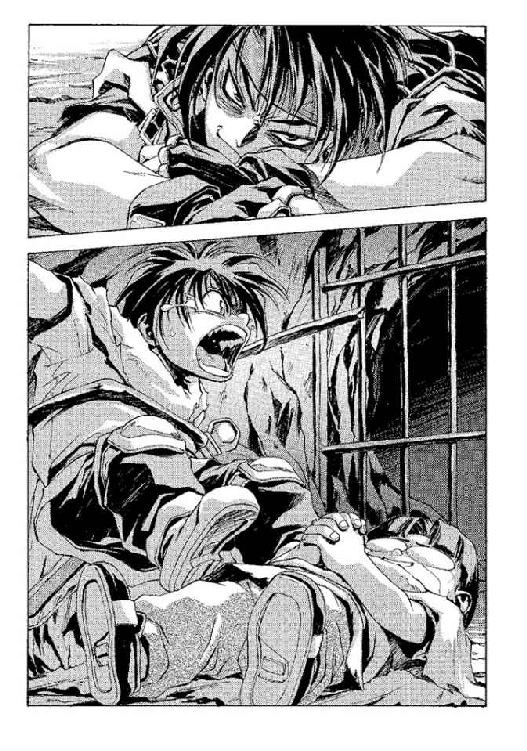
「ぢょっどお仕置きをずるだけっで言っだじゃないがああっ！ 当てるつもりはないがらっで言っだじゃないがああっ！」
涙でべたべたに濡れながら泣き叫ぶボルカンを、しばらくじっと見やってから、黒魔術士がぽつりとつぶやく。
「......涙でふやけたほうが、きっと矢が刺さりやすいよな。もうちょっと見てよう」
「なかなか科学的ですね、お師様」
「慈悲とかねえのか、お前らはっ！」
泣きまねをやめて、ボルカンが怒鳴る。黒魔術士もまた、頭だけ起き上がらせると、怒鳴り声をあげた。
「なにが慈悲だ、この福ダヌキ！ てめえがつまらん口すべらせたせいで、こちとらこのくそいまいましい地下牢で、豪快に二日酔いじゃねえかっ！ 金も返さんと、ロクでもねえことばっかりしやがって、こんなもんで俺の気が晴れると思ってんじゃねえぞっ！」
「なにがだ、金貸し！ ケガしよーがなんだろーが気がつきゃ治ってるゴキブリ体質が、もったいぶって根に持ってるんじゃねえっ！ ヘアマニキュアで染め殺すぞ！」
「黙れ極楽ダヌキ！」
「びっくり箱から飛び出し殺すぞ！」
不毛に続く罵り合いを聞きながら、サルアは、とりあえず状況はおおむね分かったと判断した。それにしても......そろそろこっちに気づいてもらいたいものだが。
「なにやってんだ、お前ら......」
ぽつりと、口にする。今さら、はっと気づいたように、ボルカンがこちらを向いた。ぶわっと涙を飛び散らしながら、わめいてくる。
「ああっ！ 兄貴助けてっ！ 俺は全然悪くないのに──間違っても、ちょっと口を滑らせて、この借金取りどもを頭のイカれた教祖に売り渡したりはしてないし、あまつさえ様子を見て身動きできないようならとどめを刺──もとい、心配して見舞いにきてやったってのに、こいつらときたら、ただの気晴らしで俺を殺そうと──」
一方、平然とした口調で、黒魔術士。
「......実は、その通りなんだ」
「気晴らしで殺すなああっ！」
「あなたは、確か......」
ふたりの口論は別に、じっとこちらを見て静かな声をあげたのは、例のマジクとかいう少年だった。もっとも、子供とはいっても、魔術を扱えるのは知っているから、油断はできないが。
牢の鍵は開いている──地人たちを牢に入れるのに、魔術で解錠したのだろう。
（便利な能力だ）
たまに、うらやましくなる──もっとも、こんなことを郷里の兄が聞いたら卒倒するだろうが。
サルアは、開けっ放しになっている牢の扉をくぐり抜けた。
「俺はサルアだ──お前は、確かマジクとかいったな......あんたは？」
と、これは地面に転がったままの黒魔術士に。昼間、マクドガルに連れられて見に来たときよりもひどく衰弱しているようだったが、まあ......ドラゴンなどににらまれたのだから、当たり前といえば当たり前か。
黒魔術士は、憮然とした声で答えてきた。
「俺はオーフェンだ」
「へえ？」
サルアはにやりと返事しながら、黒魔術士──オーフェンの横にかがみこんだ。手を伸ばし、魔術士の胸元にあるペンダントを裏返す。
「剣と、一本脚のドラゴンの紋章──《牙の塔》のものだな。なるほど、確かにオーフェンと名前が書いてある」
ぴくり、とオーフェンの表情に動揺が走るのが見えた──無論、持ち主であるこの男が知らないわけはあるまい。紋章の裏側にはキリランシェロという名前が刻み込んであった。
サルアは肩をすくめて、ペンダントをもとにもどした。別に、名前を偽ったことを皮肉ったわけではない──偽名を使うのには、それなりの理由があるのだろうと思っただけのことだ。ならばその事情に従うのは貸しを作れることになるし、それに──なんにしろ、口に上らせるのも慎重にならざるを得ない。《牙の塔》のキリランシェロ、その名には。
（チャイルドマン教室の〝サクセサー・オブ・レザー・エッジ〟キリランシェロ......）
人類史上、ありとあらゆる面で最強の力を持つ黒魔術士チャイルドマン──その後継者と目されていた、チャイルドマン教室七番目の生徒キリランシェロ。少なくとも大陸で第一級の実力を持った黒魔術士である。五年前に《塔》から失踪したとは聞いていたが、こんなところで地べたに寝ているとは思わなかった。
それだけ分かれば──
「ふむ......」
つぶやくと、サルアはレンジャージャケットのポケットのひとつから、小さな飛び出しナイフを取り出した。ぱちんと刃が飛び出し、サルアの手の中で踊る。げ、とマジクが声をあげた。
「な、なにをするんですか！」
と、思いのほか素早く立ち上がって、こちらに飛びかかってくる──
（素人だ）
とサルアは思った。こちらが無造作に振った手に殴りつけられ、魔術士の弟子は壁まで吹き飛ぶ。土壁にがつんと頭を打って、恨めしげにこちらを見ながら、少年は動かなくなった。ボルカンが歓声をあげた──
「助けてくれるんですね!? 兄貴！」
サルアはナイフを閃かせると、地面に倒れているオーフェンの喉めがけて、ナイフを突き下ろした。もし本当に身動きができないのであれば、キリランシェロの伝説はここで終わる。それも良かろうと思いながら、サルアはナイフに手応えを感じた。
ナイフの刃は地面に刺さっている。そこには、オーフェンはいなかった。
思わず笑みを浮かべながら、顔を上げる──オーフェンはすぐそばに立っていた。顔色は蒼白だが、目付きは鋭い──こちらを切り裂きそうなほどに。
「身動きできねえってのは......芝居か」
サルアがつぶやくと、オーフェンは事もなげに答えてきた。
「馬鹿こけ。本物さ──だが、それでも一日休んだからな」
「タフだねえ......」
サルアはにやりとして、地面からナイフを引き抜いた。そのまま一挙動──いや半挙動で、オーフェンに向かってナイフを投げ付ける。黒魔術士はあっけなく避けて、ナイフはそのまま背後の、ボルカンの頭に突き刺さった。
「ひああああっ！」
──という地人の悲鳴──それが、開始の合図になった。
相手に魔術を使わせるわけにはいかない──サルアは右手を抜き手にして、オーフェンの顔面を狙った。無論これはただのフェイントで、本命は、それに次いで放った左のボディブロー──でもなく、死角から仕掛ける左足の足払いである。
だが、どれにしてもオーフェンは気づいていたらしい──抜き手は無視してこめかみをかすらせ、ボディブローは肘でブロックしている。足払いにいたっては、足首の急所を思い切り踏み抜かれた。靴に針金の骨格が仕込んでいなかったら、その場で悶絶していたかもしれない。
（やはり──キリランシェロ！ 本物だ！）
サルアは胸中で歓声をあげた──身体中に、皮膚が弾け飛ぶほどの快感が走る。
フェイントであれ、抜き手がオーフェンの顔をかすったのは好機だった。オーフェンは反射的に左目を閉じている。その死角から、サルアは抜き手をそのままひるがえし、ぱっとオーフェンの顔の左半分を手で押さえた。そして逃げられないようにしてから、左拳を相手の顔面に放つ──
その手がとどくよりも早く、オーフェンはまったく身じろぎすらせずに、こちらの身体を突き飛ばした──攻撃の手数を多くしていたこちらに対し、強烈な一撃のみで対処してきたわけだ。理屈では簡単なことだが、こちらの攻撃を無視してそれを実行できる技術を持っている者は、大陸でもそう多くはいないだろう──そんなことを考えながら、なす術もなく後ろに転倒する。
が──
「へっへえ！」
サルアは、さっと跳び起きた。一撃食らった下腹は、まだ痺れるように痛んだが、そんなものはまったく気にならない。素手では勝てない、と反射的に思考して、サルアは腰の長剣の柄に手をかけた。
（奴が戦闘術における大陸のエキスパートなら、俺はこいつにおける大陸の帝王だ！）
剣を抜けば、自分の正体はばれてしまうだろうが、そんなこともどうでもいい──
と、抜刀しかけた、そのとき──
ぐっと、鼻先が押しもどされるような圧力を感じて、サルアは手を止めた。オーフェンがすぐ目の前で、右手を掲げている──こちらに向けて、ぴたりと。
黒魔術士が、押し殺した声で警告してくる。
「悪ふざけですむのは、剣を抜くまでだぜ」
魔術を使おうとしている。
「無粋なことをするねえ......」
サルアは言って、剣から手を放した。オーフェンも、すっと手を下ろす。
「どっちがだ。刃物なんぞ抜こうとしやがって」
「そいつはまあ、そうだが......素手じゃハンデがありすぎるだろ」
つぶやいて、サルアは牢の中を見回した──ボルカンは額にナイフを受けて血まみれになって失神しているし、ドーチンも目を覚ましていない。うなされてはいるが。マジクも、いつの間にか脳震盪で意識を失ったらしい。
「......おあつらえむきに、みんな寝ちまったようだな」
「お前があらかた眠らせたんだろうが──」
と、オーフェンがつぶやく。同時に魔術士は、上げていた右腕を下ろした。サルアは、そのまますっと後ろに跳んだ。表情から笑みを消し、静かで──冷たい、蛇のような眼差しで魔術士を見やる。
もっとも彼の口から出てきたのは、先刻までとあまり大差ない、道楽者の声音だった。
「あまり興奮するなよ──死の教師というのを知っているか？」
それを聞いてオーフェンも、サルアの変化を真似るように、すっと目を細めた。
彼がつぶやくように言う。
「キムラック教会は、直属の暗殺者たちを飼っている......教会の意に沿わない者を、速やかに地上から抹消するために。彼らは死の教師と呼ばれている」
「死の教師サルア・ソリュード。暗殺者の分際で、実家のソリュード姓なんぞ使うと、兄貴に殺されるかもしれんがね」
そのままサルアは、すらっと抜刀した。鞘走りの、かすかな音。が、暗闇にさらされた刀身は、なにもなかった──
「死の教師の、ガラスの剣か......」
オーフェンがつぶやいた。サルアの持っている剣は、柄の先に刀身がついていない──いや、ついていないのではなく、見えないのだ。わずかにしか光を反射しない、特殊な硬質ガラスの剣。止まっていれば、まだしも刀身の輪郭くらいは見えるのだが、これを高速で振り回されれば、肉眼で捕らえることは極めて困難である。大振りするだけならまだしも、小技も混ぜて扱えば、躱されることはまずないと言っていい。キムラック教会の暗殺者の、象徴ともなっている剣──
からかうように、サルアは言った。
「もっとも、〝サクセサー・オブ・レザー・エッジ〟──鋼の後継キリランシェロとやり合うんなら、もっと派手な武器も欲しいところだがね......」
「............」
オーフェンが無言で腰を落とした。左腕を上に上げる──いざとなれば左腕を犠牲にして、魔術を放つつもりか。外れたら、今度は右腕を犠牲にする。
黒魔術士は、神経にまで達する傷でなければ、その傷をいくらでも癒すことができる。もっとも、裏を返せば、致命的な傷は一切癒せないということになる。そこがディープ・ドラゴンなどの魔術との決定的な違いだ。
サルアは剣を斜めに構えつつ、半歩ばかり右に移動した。
オーフェンが、言ってくる──やぶにらみの目付きで油断なくこちらを見据えながら。
「なんでキムラックの死の教師が......こんなところにいる？」
「なら《牙の塔》のキリランシェロが、その同じ場所にいる理由ってのはなんなんだろうな？」
サルアは聞いて、にやりとした──この問いに対して、魔術士がちらりとでも底意を見せたなら殺さなければならない。それは多分、可能だろう。
彼が聞いた限り──キリランシェロという黒魔術士は暗殺者ではない。いかに優れた魔術士であろうと......それならば怖くはない。
沈黙──じっと──相手はこちらを見ている。警戒し、緊張していた黒魔術士の黒い双眸はにわかに歪められ──
そして、気が抜けたように、呆れた表情を見せた。
「てめえ......ンな勘違いで俺を殺すつもりだったのか!?」
「......あん？」
サルアの構えた剣の先が、少しコケる。そして──
「なにやってんのよぉっ！」
背後から子供っぽい怒鳴り声。さらに、ざぐっ──という鈍い音と、後頭部に衝撃を食らって、サルアはそのまま床に倒れた。
◆◇◆◇◆
あう......
そんなうめき声が、喉から漏れる。オーフェンは額に手を当てて、すぐ足元にうつ伏せに倒れた暗殺者を見下ろした。どくどくと血を流して気絶しているサルアを見て、悲鳴をあげたのは彼ではない──
「きゃあああっ!?」
かん高い悲鳴、そして、剣が、からんと床に落ちる。その刀身に、ほんのわずかについた血糊を見て、剣の主──腰までブロンドを伸ばした小柄な少女──はまた声をあげた。
「大変、血が出てる！」
当たり前だろ、と胸中で毒づきながら、オーフェンはうめいた。
「お・ま・え・は・なぁ～！」
と、びしと指を突き付け、
「どこから生えた、どこからっ！」
「どこって......そこの入口から、こっそり入ってきたんだけど」
クリーオウが、背後の階段を指さした。
「こっそりって、お前......」
どうやら、サルアと対峙していたときに入ってきたので、気づかなかったようだった。
「なによぉ。オーフェンが、レンジャーを連れてこいっていうから、大急ぎで連れてきたんじゃない。村の外れで待たせてあるわよ。とにかくオーフェンを助けようと思って、わたしだけ潜入してきたんだから」
「ふつーは、お前が待機してレンジャーが潜入してくるもんだろ。大体俺は、レンジャーを連れてこい、つった覚えはねえぞ。レンジャーの詰め所で待ってろっつったんだ」
「なによぉ」
クリーオウが口をとがらせる。
「ま......お前が俺の言うことを聞くとも思ってなかったけどよ」
オーフェンはぼやきながら、牢の中を見回した。手狭な地下牢は、六人もの人数を中に抱えて、いっそう狭苦しくなっている。壁に張り付いたボルカンと、その下に転がるドーチン。壁に頭をぶつけて白目をむいているマジクに、頭から血を流して失神しているサルア──その後ろで、遅刻して教室に入ろうとしたところを教師に見つかった生徒のような顔で、クリーオウが自分の胸を抱いている。彼女の耐刃ジャケットの胸元の、刺しゅうされた家紋を見つめて、オーフェンは深々と嘆息した。
「ったく......にしても、こんなに早くもどってくるとはな......」
それを聞いて、びくん、とクリーオウが眉を跳ねさせる。
「あ、あーっ！ やっぱり、わたしをのけ者にするつもりだったのね！」
「当たり前だろ！ お前がからんで事態が好転したことが一度でもあったか!?」
「う............」
きっぱりと言い返されて、クリーオウが言葉を飲む。オーフェンはさらに続けた。
「今だって、いきなり後ろから人を斬るか？ へたすりゃ即死だぞ、こんなもん！」
と、うつ伏せに倒れたサルアの後頭部を指さす。クリーオウが言い訳がましい顔を見せた。
「だ、だって......こんな怪しげな地下牢で、みんな死んだみたいに倒れてるし......それでオーフェンが剣なんて突き付けられてたから......ああ、なにはともあれこれはピンチだなって思って......」
「............」
言われてオーフェンは、再び牢の中を見回した。ボルカンなどは頭にナイフが刺さっているし──まあ確かに、そう思うほうが自然かもしれない。
（しかし......『なにはともあれ』で倒すか？ 死の教師を......）
「なんにしろ、こいつは癒しといてやらねえとな」
オーフェンはごまかすようにクリーオウから目をそらすと、サルアの上にかがみこんだ。後頭部の傷に手を伸ばす。不意をついた一撃とはいえ、しょせんは腕力のないクリーオウのものだ。出血はかなりのものだが、骨折などの致命傷には至ってない。
「我は癒す──」
唱えかけて、ふと、動きが止まる。
「............」
オーフェンは、呪文を取りやめて顔を上げた。クリーオウも、その視線に気づいてきょとんとした顔で振り向く。彼女の背後──階段に、人影が立っている。松明の揺れる明かりに照らされて、足音もなくその人影は階段を下りてきた。薄絹の巫女服を着た少女。
「フィエナ......」
オーフェンは、つぶやいた。ここが地下とはいえ、あれだけ大騒ぎしたのだから、同じ塔の最上階にいる彼女が物音に気づいて下りてきたとしても、さほどおかしくはないのだが──
オーフェンは、なにか違和感を覚えていた。それは、その少女の、どこか俗世を超越したような顔付きのせいだったのかもしれないが──昼間、マジクといっしょに顔を見せたときには見せなかった表情だ。
「誰？」
クリーオウが聞いてくる。オーフェンはぽつりと答えた。
「巫女だ。この村の......」
「へえ......」
と間の抜けた声をあげて、クリーオウがフィエナを見やる。
「可愛い服♪ 触ってもいい？」
彼女のあげた気楽な声を、フィエナはさっと無視した。そのまますたすたと、牢の中に入ってくる。クリーオウの横を通り過ぎ、彼女はオーフェンの手を押しのけるように、サルアの傷に手を伸ばした。
呪文もない──ただ彼女が一瞥しただけで、あっという間に暗殺者の傷が消える。
フィエナはそのままその場を動かず、マジクのほうを見やった。気絶したままのマジクの呼吸が、ただ眠っているような、深くゆっくりしたものに変わる。彼女はまた牢屋の中を見回し──少し迷ってから、ボルカンとドーチンの傷も癒した。ボルカンの頭から落ちたナイフが、とっ、と湿った音を立てて床に刃先を立てる。
傷が癒えても、誰も目覚める気配はない──恐らく傷を癒すと同時に、眠りの効果ももたらしたのだろう。疲労を回復させるためにあえて眠らせたのか、それとも誰にも聞かせたくない話をここでしようとして、眠らせたのか......
後者だ、とオーフェンは直感した。そう思ったことが合図になったように、さっとフィエナがこちらを見やる。サルアの後頭部に、撫でるように手を添えたまま。
「あの......」
と、彼女は口を開きかけて、ぎょっとしたようにまたつぐんだ。いつの間にかすぐ横から、指をくわえるようにして恨めしげにクリーオウがじっと見つめている。
その無言の圧力に押されるようにして、フィエナは言った。
「あ......どうぞ。触っていいですよ」
「きゃ♪」
クリーオウは歓声をあげると、物怖じもせずぺたぺたとフィエナの巫女服に手を触れた。
オーフェンは嘆息まじりに、
「どっちが年下だか、分かりゃしねえな......」
「む」
と、クリーオウがこちらをにらみつけてくる。オーフェンは素知らぬ顔で、クリーオウが落とした剣を拾い上げた。刃についた血をハンカチで無造作にぬぐって──このハンカチは後で捨てようと思いながら、剣をクリーオウの手に押し付ける。
「クリーオウ、頼みがあるんだけどよ──」
「ちょ──ちょっと、ストップ」
クリーオウはあわてるようにして、手で制してきた。剣を鞘にしまいながら、
「最初に言っておくわよ──『安全なところで待ってろ』とか『先に行っててくれ』とかいうのは、却下だからね。いつもいつも、ていよく追い払われたりしないんだから」
「じゃ、退路を確保しといてくれよ。村の外れに待たせてるとかいうレンジャーたちと」
「それも駄目。オーフェン、わたしのこと馬鹿にしてるでしょ。忘れちゃいないでしょーね、わたしはオーフェンの相棒なんだから──」
「そっか。じゃ、俺が退路を確保しておくから、あとよろしくな」
と、オーフェンはフィエナの肩をつかんで牢を出ようとした。後ろから、クリーオウがわめくように、
「あ──そんじゃ、わたしも退路を確保する」
「......ふたりで退路を確保してどーするんだよ。ほれ、相棒っていうからにゃ、役割は分担しねえとな」
オーフェンは諭すように指を振った。が、それでも納得しないように、う～、とクリーオウがうなり声を出す。
「オーフェン、ひょっとしてわたしのこと嫌ってない!?」
「そーゆー問題じゃなくて、ただ単にじゃまなんだ」
「オーフ──」
と、険悪な形相でなにかを言おうとしたクリーオウの前に、そっとフィエナが身を乗り出した。顔を近づけ──ほとんど鼻が触れるほどに接近すると、ほんの一瞬、かく、とクリーオウの頭が揺れたように見えた。
（目をのぞきこんだ）
とオーフェンは気づいた。また、なんの音もなくすっとフィエナが顔を離すと、クリーオウの表情は一変していた。なんの表情もなく虚ろに──読み上げるように口を開く。
「分かった......わたし、言うことを聞く」
クリーオウがそうつぶやくと、さっと牢を出て、階段を上っていった。彼女のスニーカーが立てる音を聞きながら、オーフェンはフィエナに聞いた。
「君の魔術か？」
「はい......あまり時間がないので。すみません......」
彼女は怯えた視線でこちらを見上げ、言った。オーフェンは頭を掻きながら、
「いや、いい。手間が省けた......別に、すぐに解けるものなんだろう？ 今の暗示は」
「ええ。朝までには」
そう答えてから彼女は、きゅっと拳をにぎりしめ、続けた。
「あの......わたし、お願いがあって来たんです」
「だと思ったよ。なんだ？」
聞きながら、オーフェンはフィエナの顔をのぞき込み、そしてふと、気づいた──マジクが言っていた、この少女の〝巫女の顔〟。
さっきのクリーオウの虚ろな表情が、それによく似ている......
フィエナの頼みとやらは、簡単だった。
「明日の朝までに、この村を逃げ出して下さい──サルアと、マジクを連れて」
それは簡単なことだった。クリーオウですら容易に侵入できてしまう程度の警備だ──死の教師たる暗殺者の助けまで借りられるというのなら、それこそ脱出ついでにこの村を壊滅させることだってできるだろう。ついでに言うのなら、ディープ・ドラゴンの魔術を扱うこの娘まで味方につくのなら、できないことなどなにもない......
「いえ」
と、すべてを見透かしたように、フィエナがかぶりを振る。
「わたしは行きません......わたしは、ここに残ります」
それを聞いて、オーフェンは少なからず衝撃を受けた。が、別に彼女が言った内容に関してではない。
「......君は......俺の心が読めるのか？」
ディープ・ドラゴンの暗黒魔術でなら、それは容易なはずだ。が、その問いに、彼女は再びかぶりを振る。
「いえ。でも今のは、なんとなくそう思ったんです」
「だが......ここに残る？ それは君の勝手だろうが、マジクの話では、どうもマクドガルは君を利用して妙なことをたくらんでいるとかいう──」
「それは本当です。でも......」
そのまま、フィエナの声はかすれて消えた。オーフェンは、まだ頭痛の残る頭をさすりながら、
「どうやら、事情があるみてえだな......もっとも、事情もなく、暗黒魔術なんぞほいほい使われた日にゃ、大陸がめちゃくちゃになっちまうけどよ」
「はい......」
フィエナは小さくうなずいて、ゆっくりした動作でサルアの横にひざをついた。さっと暗殺者の肩に触れて、ぐい、とうつ伏せになった彼を仰向けに直す。サルアの眉についた土を指先で撫でて落とし、彼女は、唐突に口を開いた。
「彼の正体を知っていますか？」
「ああ」
と、オーフェンはあっさりと言った。
「キムラックの死の教師──となれば、大陸でもかなりの実力を持った暗殺者ってことになるな。いや──暗殺者ってことなら、十本の指に入る奴かもしれねえよ。大陸でも八振りしかないガラスの剣を帯剣してるくらいだからな」
床に落ちている、刀身の見えない剣を見やる──フィエナも、同じものを見つめているようだった。
「わたしも、知っていました。彼が話してくれたんです。酔って口を滑らせたような感じだったから、嘘かもしれないって思ってましたけど。本当みたいですね」
と、視線を剣から、暗殺者の顔へと移す。その目付きを見て──クリーオウと比較して、余計にそう思えるからいうわけではないのだが、オーフェンは、この少女が実年齢よりかなり大人びて見えることに気づいた。ついでに考えつく。
（マジクの奴、失恋だな）
フィエナは、そのまま聞いてくる。
「あなたは、彼の目的も分かっているんですか？」
「いや。だがこいつは、俺も自分と同じ目的でこの村にやってきたものと誤解してたらしいな。だから斬りかかってきやがった」
「わたしも......魔術士がこの村の近くに来ているって聞いたとき、同じことを考えました。だから散歩を装って、マクドガルより先にマジクに接触したんです。彼を見たとき、ただの迷子なんだってすぐに気づきましたけど......」
「こいつの目的ってのは、なんなんだ？」
オーフェンが聞くと、フィエナは意識のないサルアの顔を見下ろしたまま、
「マクドガルの暗殺です。マクドガルは、何年か前までキムラック教会の教師だったんですよ」
「キムラック......教会総本山......」
大陸の北端──大陸全土の教会を掌握する、巨大な聖都。王都に次ぐ巨大都市でもある。
キムラック教会は人間の魔術士を極端に嫌っている。その理由はオーフェンの知るところではないが、とにかく、運命の三女神を奉じる彼らは、魔術士に関しては存在すら認めない部分があった。
教会総本山は、独自の暗殺者部隊である死の教師を擁する目的を、主要な魔術士の暗殺のためと公言してはばからない。もっとも、あくまで公然の秘密としてはばからない、という意味だが。
だが実際に機能するのは、むしろ教会総本山の意に沿わない動きを始めた異端の教師を抹殺する場合においてのほうが多い──実際、少しでも名の知れた魔術士が、死の教師によって暗殺されたという事実は、ほとんどない。それは、彼の教師であるチャイルドマンが書斎の椅子に座ったまま、客人を装って訪ねてきた暗殺者を一撃で討ち滅ぼすのを目の当たりにしたことがあるオーフェンには、容易に納得できた。魔術士は、おおむね魔術士同盟などの組織に擁護されているし、いざとなれば常人には考えもつかないような武器──つまり魔術を持っている。やすやすと暗殺できるものではない。
（もっとも──俺みたいに無防備にひとりでぶらついてるようなのは、どうだかしらねえけどな）
いらだちまぎれに嘆息し、聞いてみる。
「マクドガルは、じゃあ、異端の教師だったわけか。キムラックの。それがなんで、ドラゴン信仰の教祖に収まってるんだ？」
「............」
その質問を聞いた瞬間、フィエナの表情がこわばるのが見えた。
「キムラックで、なにかを見たらしいんです......」
「なにか？」
「分かりません！」
と、強すぎる口調で叫ぶ。驚いてオーフェンが絶句していると、彼女は、はっと気づいたように赤面した。
「ごめんなさい......大声を出してしまって......」
「いや......別に、いいんだけどよ」
オーフェンは咳払いした。
「にしても、マクドガルが異端の教師だとしたら......俺が──つうか、魔術士が奴を暗殺しにやってくる理由がないんじゃねえか？ なんで俺を、マクドガルへの刺客だと勘違いしたんだ？」
「......それは......マクドガルの目的が......」
フィエナはそこで、口ごもった。彼女はしばし逡巡したようだったが、やがて顔を上げて、続けた。
「マクドガルの目的はご存じありませんね？ この村は、もとよりドラゴン信仰者の住む隠れ里でした。先祖代々《森》の中を転々として......レンジャーや、ドラゴンに見つかるたびに逃げ回ったんだそうです。彼がこの村にやってきたのは三年前──そのとき彼は、キムラックから技術者を連れてきていたんです。そして、この塔と、工房を建設しました。拳銃の製造工房を」
「......拳銃の製造法は、王都の最機密事項のはずだ。王都の軍隊にしか、帯銃は許されていない」
「マクドガルは王都の騎士から拳銃を奪って、それを分解したんです。火薬も合成して──でもサルアの話では、そんなものはとっくにキムラックでも極秘に研究されているとか。どのみち、マクドガルは拳銃という武器を村にもたらしたことで英雄になったんです。教祖となり、村の名前を《偉大なる心臓》村と名付けました」
「......で？」
オーフェンは促した。拳銃の製造というのは、確かに大それたことではあるが、その程度では魔術士に命を狙われるような理由にはならない──王都の秘密を盗み出すのに成功しているのは、なにもキムラックだけではない。《牙の塔》でも、秘密裏に拳銃の製造は行われている。
「でもマクドガルの目的は、この村を掌握することなんかではありませんでした。実際、ドラゴンを崇めることでは、彼はもともとのこの村人たちなんかよりはるかに信仰が深かったですから、彼が幹部になったところでさほど不都合もなかったんです。でも......彼は」
と、フィエナは目を閉じた。
「彼は宣言しました。拳銃は、魔術士たちと戦うための武器だって。そして、もっと強い武器を手に入れるのだって。マクドガルは......その武器を手に入れるためには《森》の中心──ドラゴンの聖域たる、本物の《偉大なる心臓》に行く必要があるって、村人たちに説きました」
「聖域を護るディープ・ドラゴンの存在を知らなかったわけじゃないだろうな？」
オーフェンは、腕組みしてそう言った。《森》の深部に立ち入った人間は、過去、例外なくディープ・ドラゴンによって滅ぼされている。
「知っていました......だから彼は、ディープ・ドラゴンに対抗するためのなにかを見つけようと、やっきになっていました。そこに......わたしが、この村にやってきたんです」
「君の......魔術で、ドラゴン種族に対抗しようと？」
「そうです」
「馬鹿げてるな」
なんということもなく、オーフェンはつぶやいた──フィエナが、ドラゴン種族の魔術を扱えるのは間違いない。が、だからといって、それがドラゴン種族以外に巧みに扱えるのかというと、オーフェンには、とてもそうは思えなかった。一昨日の夜にこの村に現れたディープ・ドラゴン──それが使った魔術の構成と比べてみれば、フィエナのそれは、あまりにも稚拙でたどたどしい。あるいは、借り物の力をなんとか制御している、といった感じだ。
本物のディープ・ドラゴンと対峙すれば、たちまち殺されてしまうだろう。ドラゴン種族の用いる魔術は、はっきり言って人間の尺度ではいっさい測れたものではない。
だが、その言葉が彼女に与えた印象は、そういったものではなかったようだった。
彼女は、急に双眸を苦しそうに歪め──
「そうです......馬鹿げているんです。そんなことを思いつくべきじゃなかったのに──彼は、その計画にわたしを参加させようとしたことで......」
フィエナは喉がからまったように息を詰まらせると、強くかぶりを振った。
「墓穴を......掘ったんです」
「墓穴？」
だがオーフェンの問いかけは無視して、フィエナは続けた。
「明日、村は消滅します。それには逆らえません。だから......あなたは、逃げてください。マジクと、サルアを連れて」
オーフェンは、じっと彼女を見やった──双眸に涙を浮かべて決然とこちらを見ている。追い詰められた強さだ、とオーフェンは無言でつぶやいた。
彼女は続ける。
「サルアは、この村で唯一、わたしの友達でいてくれたんです。多分、ドラゴン信仰者でもない彼にしてみれば、わたしくらいしか話相手がいなかったんでしょうけど。でもわたし、とても嬉しかった──わたしには、誰もいないから......」
誰もいないという感覚は、オーフェンにも理解できた──《牙の塔》の魔術士は、ほぼ例外なく孤児である。また競争も激しいから、気の置けない友人などはあまり作れない。だがそれでも──彼には、そういった『気の置けない』連中とは意味が違うが、仲間はいた。現在は──
（そういった仲間を捨てて、俺は友人を作った。どちらが良かったとも言えない。だが少なくとも、俺はひとりじゃなかった......）
「断る」
と、オーフェンは告げた。フィエナの表情が、訝るように引きつるのが見える。
「君の頼みは、いっさい承服できない。君をこの村に残すつもりはないな。特に、この村が滅びるとか聞かされたんじゃな」
「そんな......でも、わたしは......」
フィエナは動揺したような眼差しで、困惑している。オーフェンは、さっと彼女に近寄ると、少女の手首を強くつかんだ。
「痛っ......」
小さな悲鳴を、フィエナがあげる。オーフェンは構わずに言った。
「いいか──ひとつ忠告しといてやるぞ。人にものを頼むときは、説得力ってもんを気にかけておくんだよ。こんな、自分をつかんだ手を振り払うこともできないような子供ひとり、危険があるらしい村に残していけるわけがねえだろうが」
それだけ言ってから、手を放す。フィエナは赤くなった手首をさすりながら、じっとこちらを見上げている。ふと、彼女が自分よりも数倍は強い魔術を持っていることが信じられなくなって、オーフェンは嘆息した。
（なんでまた、いつもいつも、俺をめんどうに巻き込むのは女なんだよ！）
だが、そんな難しい問いに答えを用意するためには、朝はもう近づき過ぎていた。
フィエナが立ち去って、一番最初に目を覚ましたのはサルアだった。よほど疲れているのか、あるいはこれもフィエナの魔術の効果なのか知らないが、彼はなにも言わずにガラスの剣を鞘に収め、気絶したままのボルカンとドーチンを引きずって、マクドガル邸の使用人部屋に帰っていった。
「言っておくが、俺はマクドガルの命になんざ興味はねえよ」
「だろうな......キリランシェロ、て名前を見た瞬間に、それは分かったさ」
「なら、なんで俺に襲いかかったりしたんだ」
「へっ──」
と、どこか自嘲するような笑みを浮かべ、
「そのほうが、おもしれえじゃねえか。ま、気絶したあとなにがあったかは、フィエナに聞けばいいんだろ？ 帰りに寄ってくか」
──交わした会話は、そんなものだった。マジクが目覚めるまでには、もう少し時間がかかったが、この生徒に事態を納得させるには、さらに時間がかかった。
とりあえず、フィエナに関しては見込みがねえかもしんねえぞ、とは言わないでおいてやった。
第五章 マクドガルの秘密
夜が明けるのは早かった。実際、あの後眠りについたらすぐだったといっていい。
朝になって、オーフェンは村の中を歩いていた。頭痛が収まっているのを確認してから、地下牢の鍵を開け、見張りふたりを適当に蹴転がし、塔の外に出た。まだ早朝だが、この村の朝はそもそも早いらしい──村人の大半は目覚めて、もう外に出ている。オーフェンが歩くのを、みな遠巻きにするように、じっと見ていた。
中年の女、それに連れられた子供、がっしりした男、気の弱そうな娘──なんということはない、ただの村人たちが、こちらを見ている。若い男というのは、あまりいないようだった。サルアの話では、血の気の多い連中は、みなマクドガルの取り巻きになっているということだったが。
ドラゴン信仰者は魔術士を嫌悪する──事実、この村の人間たちも、こちらに向かって気持ちのいい顔はしていない。ましてや、黒魔術の最高峰たる《牙の塔》の紋章を身に着けているのだから、石くらいは飛んでくるかもと正直警戒していた。が、とりあえず、そういったことはなかった。今のところは。
（恐れてるんだ、俺を──）
オーフェンは歩きながら、そう悟った。村人たちの表情には、確かに恐れのようなものが見えかくれしている。
（なんで俺を恐れて、マクドガルに危惧を抱かない？）
村人たちにしてみれば、それが当然なのだろうが、オーフェンは不思議でならなかった。
彼は歩きつづけた。目的地は、教団の塔から少し南下したところ──マクドガルの屋敷である。
この教祖の屋敷を見て、豪勢だと考えるか、質素だと思うか、微妙なところだとオーフェンは思った──確かに村の、周りの家々と比較すれば多少は大きめに作ってあるが、それでもオーフェンが渾身の力で魔術を放てば、地上から根こそぎ消滅させられる程度のものでしかない。ほかの小屋と同じく庭といったものはなく、ただ玄関先に小さな花壇などあったりする。屋根の形も窓の数も、普通の木造の屋敷である。ペンキは貴重品なのだろう──ほとんどの壁は、木材むきだしだった。
ノックせずに──ノッカーがなかったので──、ドアノブに手をかける。早朝なので、まだ鍵はかかっている。教祖の朝は、遅いらしい。
ようやく普通の村人たちとの区別がついて、オーフェンはなんとなくほっとした。
ほっとしたついでに右手を振り上げ──ノックがわりにドアにたたきつけようと──
突然、がちゃりと鍵が外れる音が聞こえた。きい、と木材のきしみ音を立てて、ドアが開く。同時に、声がした。
「よう。早かったな......細かいことは、フィエナに聞いてるぜ」
扉を開けたのは、サルアだった。昨夜と同じ格好で、剣は下げていない。眠そうな気配などまったく見せずに、彼は続けた。
「御大はまだ寝てるぜ──昨夜は遅かったんだ。打ち合わせでな」
「俺が来たんだ。起きてもらうさ」
オーフェンはぼそりと言うと、サルアの横をすり抜けて玄関の中に入っていった。
通りすぎるときに、声をひそめて、サルアが聞いてくる。
「あのガキは？」
「知ってて聞いてるんだろう──あいつは、あいつの持ち場にいってるさ。フィエナの話じゃ、村を滅ぼすほどのなにかが起きるのは今日だっていうんだから、もう行動は起こさせてもらう」
「まさかと思うが......マクドガルを逃がすような真似はしねえだろな？ あいつを取り逃がせば、俺の首が飛ぶんだ──比喩で言ってるんじゃねえぜ？」
「知ったことか。暗殺者の片棒をかつぐつもりはねえ。せいぜい目を光らせておくんだな」
屋敷の中は、えらく雑然としていた──一応、玄関があって廊下がある、といった造りにはなっている。オーフェンはなんとなく気になって、一番手前の扉を開けた──応接室らしき部屋であるが、汚れている。床には酒瓶やらなにやらが適当に散らばり、向こうの隅には洗濯物らしき塊も落ちていた──取り巻きたちが寝泊まりしているだけあって、完全に男所帯らしい。
その部屋に入る。後ろから、サルアもついてきた。
「なんだよこの部屋は......」
オーフェンが聞くと、サルアは、へっへっと笑い、
「だからよ、打ち合わせの痕跡だよ。おっと......こいつは御大の取って置きだな。一級酒だよ、おい」
「知らん知らん」
オーフェンは言いながら、サルアの取り上げた空瓶を蹴りとばした。ばたんと扉を閉める。オーフェンは嘆息まじりに聞いた。
「マクドガルはどこにいるんだ？」
「奥の寝室に決まってるだろ......だが、御大に会ってどうするつもりだ？」
「話をするんだよ。それはそうと、取り巻きたちはどうしてる」
「家に帰ってるはずだぜ？ だが、打ち合わせが明け方まで続いたらしいからな。午前中は起きねえだろ」
「ふうん......」
オーフェンはうなずいて、廊下を奥に向かっていった。ややしてから、後ろから、サルアがあわてたように声をあげる。
「お、おい、御大と話!? なんのつもりなんだ？」
答えずに、オーフェンは進んだ。なんとなく見当をつけて、扉を開ける。
床にばらまかれた本やら紙片やらは、どう考えても読んでから置いたというよりは、単に投げ出すために本棚から出したように見えた。部屋の入口から奥のベッドまで、懸け橋のように落ちている服は、脱ぎ捨てていったものらしく、手前からサマーセーター、ブラウス、下着、スカート、靴下と続いてる。なんで下着とスカートの順番が逆なのか、よく分からなかったが。ベッドは足が一本折れているのか、妙な方向に傾いている。ガス灯が床に横倒しになっているのは、とてつもなく危険ではあったが、この部屋の光景にはふさわしいかもしれないとオーフェンは思った。ベッドのシーツはぐしゃぐしゃで、毛布にくるまって、死体みたいな格好で若い女がいびきをかいている。髪の毛がぼさぼさになった頭のほかは、素肌の足だけが毛布からのぞいていた。
オーフェンは、横目でじろりとサルアを見やった。彼は、自分の黒髪をごしごしやりながら、
「照れるなあ。俺の部屋だ」
オーフェンは扉を閉めた。いびきも聞こえなくなる。
「お前な......本当にキムラック教会の教師なのか？」
「いや、だから、そう思われないための偽装だってばよ」
「............」
「ホントだって。ほかにも毎晩酔っ払いのふりして、牛小屋から牛逃がしたり、ガキに幽霊話を聞かせて、話に出てきたゴム顔男を追い払うためのおまじないを教えてほしければその飴玉よこせとか、この俺の崇高な地を隠すためにゃ、いろいろ苦労してんだ」
「......いいけどよ。別に」
オーフェンは、あえてそれ以上は追及せず、廊下を見回した。
「にしてもなあ......おい、奴の寝所はどこなんだよ。てめえが最初から教えてくれりゃ、余計なもん見ずに済んだんだろうがよ」
「不法侵入のくせに、態度でけえな、お前は......」
サルアはぶつぶつ言いながら、それでも自分の寝室の対面の扉を指さした。
「ここだよ。寝室には、拳銃は持ちこんでいない......一度暴発してから懲りたらしい」
「なるほど......」
（その辺の情報は、さすがに抜け目ねえな）
オーフェンは思いながら、扉を開けた。
マクドガルの寝室は、驚くほど整然としていた──そもそも散らかすほどの物が置いていないというのもあるのだが、その様は、まるっきり教会の教師のたたずまいという気がする──まあ、背後の殺し屋のような罰当たりはともかくとしてだ。元教師、というフィエナの言葉を思い出しながら、オーフェンは、部屋の奥のベッドの上を見やった。
マクドガルは、ちょうど身体を起き上がらせようとしているところだった。これも地味な寝間着で、もし女房がいたとしたら、絶対に許してもらえないような色気のない代物ではある。マクドガルは独身だろうが。
「いい朝だな」
オーフェンは、わざとらしい声でそう言った。マクドガルは、ちらとこちらを見てから、つまらない冗談を聞いて損した、とばかりに唇を歪める。口ひげをもごもごさせながら、彼は応えたきた。
「《森》の朝だ。当たり前だろう」
「雨は降らねえのか？ ここは」
「雨が降ろうと《森》の朝は静謐だ。静謐で......神聖だ。すべてが始まり、昨日が終わる」
「なるほど。そういうことを言っているのを聞くと、あんたがキムラックの教師だったってのが納得いくね」
瞬間、マクドガルの表情に、ひび割れるように動揺の気配が走る。シーツをどけようとしていた手も、きゅっと力がこもったようだった──ついでに、背後からサルアが、げ、と声をあげるのも聞こえた。
しばし静寂が朝を止める。マクドガルは、初めて真正面からこちらを向いた。
「なんのつもりだ？ 魔術士」
「なんのつもりだ？」
と、くりかえしたのはサルア──しごく小声で。オーフェンは背後は無視して、
「俺の後ろに立ってるキムラックの殺し屋の言うことは、気にしないでくれ」
ぶっ──と、サルアが吹き出す。オーフェンは構わず続けた。
「それに、あんたが《森》の心臓だかなんだか知らねえが、よりによってドラゴン種族の聖域にちょっかい出そうなんぞと考えていようと、知ったことじゃないしな」
「お、おい、いい加減に──いやもう遅いか。なんのつもりなんだ、おい！」
つかみかかってくるサルアを、オーフェンは肩越しに見やった──そして隙を見て、さっと身を躱し、相手の背中に掌を当てる。
「我導くは死呼ぶ椋鳥！」
呪文とともに、触れていたサルアの身体に直接、破壊的な振動がたたき込まれる──暗殺者も、さすがにもんどり打って床に倒れた。そのまま床の上を一転、二転するほどの衝撃に、絶望的な悲鳴をサルアがあげる。
「てめえ──裏切っ──」
「もとより、暗殺者と協力するつもりなんざねえんだ」
「そんなことで恩を売ったつもりか？」
床に倒れたサルアなど一顧だにせず、マクドガルがつぶやく。オーフェンは肩をすくめた。
「いや別に。こいつがどうも、取引を邪魔しそうだったんでね」
「取引......？」
眉をひそめて、マクドガル。床の上から、もう声も出せないのか、サルアが凶悪なうめき声をあげる──
オーフェンは続けた。
「フィエナを解放しろ」
「なに......!?」
マクドガルが、ぎょっと目を見開くのが見えた。それを見据えながら、くりかえす。
「そんだけだ。ほかは、うるさいことは言わねえ。真正面から頼みに来た──彼女を解放しろ。そうすれば多分、あんたも死なずに済む。この村のすべての人間がな」
フィエナは、そんなことはひとことも言っていなかったが、彼女の口ぶりからそうではないかという気がしていた──マクドガルが計画に彼女を利用しようとしたせいで、なにかの危険が訪れるのだ。十四歳の少女がすんなり死を覚悟してしまうほどの、絶望的な危険が。それを回避するためには、恐らく、マクドガルにこの取引を飲ませる以外にはない。逆に言えば、これさえ通ればすべては丸く収まるはずである。
暗殺者を封じたのは、とりあえずその取引を有効にするためだった──暗殺者が背後に控えているときに、生命をカタに取引ができるわけもない。
マクドガルは表情を、さっと平静なものにもどした。
「馬鹿げたことを......」
オーフェンは答えずに、ゆっくりと足を進めた。床に倒れているサルアをまたいで、マクドガルのいるベッドに近寄っていく。
元教師は、続ける。
「お前には分かるまい......わたしとて、計画の危険性は承知している。計画を立てたがために、わたしの生命を狙うであろう者が、そこの死の教師だけではないということもな......だが、それでもわたしは続けねばならない」
「なぜだ」
「わたしは、キムラックで、お前が見ていないものを見た。それを見れば、誰であれ、こう考えざるを得ないだろうよ──現在のままの大陸では駄目だ、とな。もっと......力を持った存在が必要とされる。ドラゴン種族をも越えるような......」
そのせりふを聞いて、オーフェンは電流のように、脳裏に走るものを感じた。数週間前に出会った、気の狂れた老魔術士も、キムラックでなにかを見たと言っていた......
オーフェンは、口を開いた。
「俺が前に会った奴も、あんたと同じものを見た──だが、そいつは完全に怯えきっていて、なにひとつ話すことができなかった。あんたは、まだマシなようだな」
「わたしとて......恐れているのには違いない」
「話を聞かせてくれたら、場合によっては協力する。なんにしろ......暴走はしてもらいたくない」
言いながらオーフェンは、また一歩マクドガルに近寄った。もう手を伸ばせばとどく距離にあって、マクドガルはわずかに伏し目になり、低い声音を出した。
「すべての原因は、過去にある──」
つぶやきながら、マクドガルが、少しだけ動いた。同時──
ごずっ──頭蓋骨が、小さな響きをあげた。視界が小さく振動し、目の中央にちっぽけな黒丸が揺れて、消える。続いて──本当は同時に聞こえたはずなのだろうが──がちゃんと、陶器が割れる音。なにか白いものが、ぱらぱらと顔の前をこぼれ落ちた──
オーフェンは、そのまま撲殺されたように床にあごを打ちつけた。ばたばたと、マクドガルがベッドから跳び起きて駆け出していく。部屋から出ていったのだと、オーフェンは悟った。どうやら、こちらが近づいたのを幸い、隙を見て花瓶かなにかで殴りつけてきたらしい。
（くそ──）
いきなりのことで、避けられなかった。オーフェンは悪態をつきながら立ち上がった。べったりと、額が血で濡れている。見回しても、部屋の中に既にマクドガルの姿はない。床の上に花瓶の破片と、昏倒したサルアがいるだけだ。
オーフェンは、マクドガルを追って廊下に飛び出した。すぐ近く──ふたつ先の扉が、ばたんと閉まるのが見えた。
「待て、マクドガル──」
弱々しく、オーフェンはうめいた。同時に、再び閉じた扉が開く。
その中からゆっくりと、マクドガルが姿を現した。その左手には、拳銃が握られている。ちらりと見たところ、彼が出てきたのは書斎のようだった。拳銃の保管場所なのだろう。
血が、目に入ってきた。
銃口をしっかりとこちらに向けて、マクドガルが口を開く。
「図に乗るな、魔術士ごときが──場合によっては協力するだと？」
「頑固な親父だな」
「性格のせいではないさ──どの道、すべての計画のためには、魔術士は地上にいてはいかんのだ。二百年前の、人間の魔術士とウィールド・ドラゴンとの戦いが、なぜ起きたと思っている？」
「天人は、自分たちが滅びるのを、生き残る人間の魔術士に対して、嫉妬した......」
出血に朦朧としながらオーフェンは、随分前にアレンハタムの地下で聞かされたことをくりかえした。マクドガルとの距離は五メートルほど──一跳躍で飛びかかれる距離ではない。
マクドガルは、哄笑にも近い笑い声をあげた。
「はあはあ！ 天人が本当に滅びたとでも思っているのか！？ ドラゴンの女王が！」
叫びながら、マクドガルの指が引き金を引こうとするのが見えた。オーフェンは口早に唱えようとした。
「我は放つ光の──」
がっ！──再び、鈍痛──
後頭部に、なにやら固い一撃をもらい、オーフェンは卒倒しそうになりながら後ろを見やった──と、額に脂汗したサルアが花瓶の破片を片手に立っている。その破片で殴られたのだろうが──
「てめえ、この裏切り者──」
ゆっくりと聞こえてくる、声──倒れていく中で、たまたま視線がまた回転したのだろう、マクドガルの姿が映った。マクドガルは銃口をこちらに向け、やはり引き金を引こうとしている。指が動いた。弾けるように、なにかが動く──刹那──
ばっ──
と、廊下のすぐ右手、目の前で扉が開いた。こちらから向こうへ開く形で、開いた瞬間、木の扉がばしいと揺れる──銃弾を防いだのだろう。
ドアを開けたのは、見覚えのあるずんぐりした人影だった。
「......あれ？」
きょとんとした顔で、たぶたぶの寝間着を着たボルカンはこちらを見やった。どうやら、そこは使用人部屋だったらしい。兄のすぐ後に、ドーチンも顔を出している。
説明している暇はない──オーフェンは意識をはっきりさせると、倒れかけた体勢から、背後のサルアに足払いをかけた。普通なら避けられてしまうだろうが、相手も魔術を一度食らってだいぶ消耗していたのだろう。なす術もなく、廊下に転んだ。サルアの手から、花瓶の破片が落ちる。オーフェンはそれを拾い上げると、倒れたサルアの脳天にそれを打ち下ろした。今度こそ本格的に、サルアが悶絶する。
背後で──また、ドアが閉じた。顔だけ振り返ると、ボルカンらが出てこようとしていたのを、マクドガルが無理やり押しもどしたらしい。再び銃口が、ぴたりと狙いを定める。オーフェンは、とにかくマクドガルの寝室まで逃げ込もうと、銃口に背を向けて思い切り跳躍した。が、寝室の入口まで飛びのいたところで、マクドガルの指が引き金を引くのが見える──
と、また目の前でドアが開いて、銃弾を受け止めてくれた。
「ねえ、どしたのぉー？」
今度ドアを開けたのは、サルアの部屋でいびきをかいていた女だった。胸元から下を毛布にくるまって、寝ぼけた顔をしょぼしょぼさせている。これだけ大騒ぎしていれば、家人が起き出してくるのはむしろ当然だろうが、このタイミングの良さは、むしろもてあそばれているような感じがして、なんだか情けなくなってくる。オーフェンはめんどうくさくなって、女を部屋の中に蹴りもどした。
「どいてろ！」
叫んでから、開いたまま盾になっているドアに向けて、右手を突き出す。
「我は放つ光の白刃！」
かっ！──
放たれた光熱波は木製の扉をたやすく打ち破り、破片を吹き飛ばしながら廊下を燃え上がらせた──轟音に、屋敷そのものが揺れる。光の炸裂が収まると、廊下は床も天井も無数にひび割れ、壁にも鉤裂きのような余波の痕跡が走っていた。廊下の、あまり離れていない隅に、マクドガルが倒れている。なぜかその近くにボルカンとドーチンまで黒焦げになって気絶していたが、サルアの姿はなかった。
ボルカンとドーチンの心配は、特に必要なかろうと、オーフェンはマクドガルに近寄った。生きてはいるが、身体の各所に砕かれた扉の破片を受けて出血している。拳銃は、どこかに取り落としたのか、持っていない。オーフェンはマクドガルのほおをはたいて、目覚めさせた。
「おい、起きろよ」
「う──うう......」
うめき声をあげて──弱々しく目をしばたかせて、マクドガルが意識を取りもどす。
オーフェンは静かに告げた。
「いいか──お前が受けたのは致命傷だ。ほっとけば、必ず死ぬ。俺が魔術で癒さないかぎりはな」
「くっ......！」
マクドガルがうめいたのは、傷の痛みのせいだったのか、それとも嫌っている魔術で癒してもらうという考えに抵抗したためかは、オーフェンには判断がつきかねた。
「命が惜しければ、話すんだ──お前がキムラックで見たものは、なんだったんだ。人間を発狂させるものってのは、なんなんだ」
「う......ふうっ......」
マクドガルは息を荒げるだけで、なにも答えない。ただ双眸に、凄絶な満足の表情をたたえて──
（こっちの脅迫に抵抗することに快感を感じてやがんだ）
オーフェンは悟って、いらだたしげに吐息をもらした。
「てめえ！ 強情はってると、本気で死ぬぞ！ ちっと話すくらいのもん、なんでもねえだろうが！」
「ふ......ふ......」
「くっ......！」
オーフェンはうめいて、マクドガルから手を放した。突き放されて、どすん、と壁に後頭部をぶつけても、マクドガルは笑みを消さない。
「この馬鹿......」
オーフェンは目を閉じて、また開くと、もうどうでもいいというように、マクドガルの身体から無造作にぶちぶちと破片を抜いた。すべての扉の破片を取り除いてから、手をかざして小声で唱える。
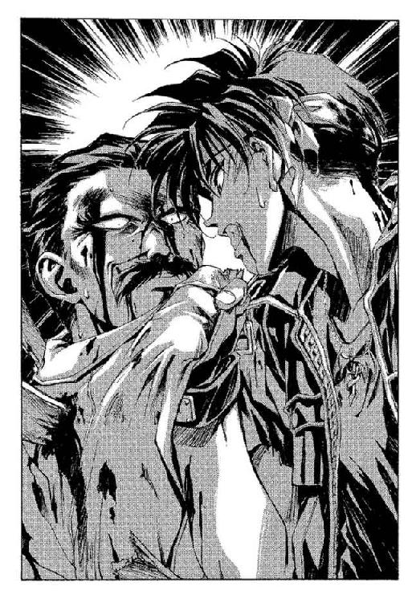
「我は癒す斜陽の傷痕......」
魔術によって、マクドガルの傷はあっさりと癒されていった──というか、本当はほとんどかすり傷ばかりだったのだが、こちらが嘘をついた通りに致命傷だと思い込まれて死なれては寝覚めが悪いので癒したのだ。
傷がなくなるにつれて、マクドガルの気力も回復していく──
「ふ──ふ──ふふふ──」
教祖は、ひどく不気味な声をあげた。思わずぞっとして、後退りする──と、いきなりマクドガルは、身体の下になっていた手を抜き出した。その手には、拳銃が握られている。マクドガルが、どこに狙いをつけようとしているのかは、オーフェンには分からなかった──意識が混濁しているのか、マクドガルの狙いはまず天井を向き、そしてこちらを経由して──自分のこめかみに銃口を触れさせる──
ばんっ！──
──......
暴発した銃弾は、そのままマクドガル自身の頭蓋骨を撃ち抜いた。首をひっぱられた人形のように、銃弾の衝撃でマクドガルの首が伸びる。そして──秘密を知る男は、そのまま横倒しに倒れていった。
「な............」
絶句してオーフェンが立ち尽くしていると、不意につぶやく声がした。
「お前さんの魔術、どうやら拳銃そのものに直撃したらしいな──で、シリンダーが熱を持っちまったんだろうよ。ほれ見ろ、拳銃を持ってる手とグリップが、焼け溶けてくっついちまってるぜ。シリンダーがこれだけ熱を持てば、そりゃ暴発もするわな」
サルアだった。近くの部屋に逃げ込んでいたらしい。自分の剣を持って、後ろに、例の毛布の女も連れている。
いまだ、ぱちぱちと火の粉をあげる廊下の床を踏み締めて、サルアは肩をすくめた。
「ま、これで俺の任務は完了だな──村の中でこの男を殺すのは危険すぎっから、やめてたんだけどよ。この状況なら、俺が犯人にされるってことはねえだろうし。村人にフクロにされるってこたあ、ねえだろ」
と、後ろの女が、口元に手を当てて恐ろしげな声を出す。
「ね、ねえ、あんた、どうして人が死んでるのよぉ」
「気持ちのいい朝だからだよ。なあ、キリランシェロ？」
サルアがウインクしてくる。オーフェンは、なにも反応しなかった。
「どした？ 別にあんたが殺したわけじゃねえんだから、気落ちするのは損ってもんだろ？ じゃあ、俺は行くぜ──約束どおり、フィエナは俺が連れ出しておく」
「............」
「ね、ねえ、あんたぁ、どうして人が死んでるってのに、あんたそんなに冷静なのよぉ」
「日頃の精進てやつだよ。決まってんだろ？」
ふたりは、そんなことを言い合いながら、ぱたぱたと玄関に向かっていった。と、出ていく瞬間、サルアが肩越しに言ってくる。
「結果オーライだったから言うわけじゃねえけどよ。俺、裏切り者ってのは結構好きなんだ。じゃあな」
「............」
サルアはそのまま、気楽に姿を消す──それを見送りながら、オーフェンは呆然と考えていた。
（暴発じゃない......マクドガルは確かに、一度俺を狙ってから、自分の頭に銃口を当てた。奴は、自分で引き金を引いたんだ）
確信的に、最後の数瞬を思い出す。
（なんでだ？......魔術で癒されたのがそこまで許せなかったか？ いや──秘密を漏らせないから......か？）
「なんにしろ、馬鹿な死に方だよ、マクドガル」
オーフェンはぽつりとつぶやいた。額から流れる血を、手の甲でぬぐいながら。
あまりの馬鹿馬鹿しさに、思わず笑みまでが漏れる......
「へっ......大騒ぎして、こんだけのことなんだからよ。俺もどうかしてる──暴発でいいじゃねえか。どうかしてるっていえば、本格的にどうかしてるな、今朝は──まさかあの極楽ダヌキどもに命を救われるとはよ」
マクドガルに撃たれそうになった一瞬のことを思い出し、口の端を無理やり笑みの形にする。緊張が解けて、泣きそうな気分ではあったが。
「タヌキも、たまにゃ役に立つってことか。今回ばかりは礼を──」
そこまでつぶやいた瞬間、屋敷の外から聞き慣れた声。
「みなさぁん！──」
屋敷でこれだけ大騒ぎをしたのだから、当然外には人だかりがしているだろう──その気配は、壁を越して肌に伝わってくる。オーフェンはなんとなく廊下を見回した。いつ逃げ出したのか、地人たちの姿がない──
サルアの言葉を思い出した。この状況なら、俺が犯人にされるってことはねえだろうし──なら、誰が犯人にされるんだ？
それには、外から聞こえてくる叫び声──ボルカンの声が答えてくれた。
「みなさぁん！ 大変です！ 邪悪な魔術士が、我らが敬愛すべき教祖さまを虐殺しましたよおっ！」
「やっぱり、あの馬鹿は......」
オーフェンは頭を抱えて、屋敷の外で巻き起こる村人たちの怒声を聞いた。
◆◇◆◇◆
「......ヒマだわ」
草陰に隠れるようにして、クリーオウはつぶやいた。その横で、仏頂面の男たちが順番に返事する。
「おう」
「ああ」
「へえ」
「............」
クリーオウは剣の鞘を抱いて、じろりと三人を見やった──みな三十歳ほどの、レンジャージャケットを着た男たちで、なにやら文句ありそうにぶつぶつとぼやいている。
例の村の、外れである。目の前に小屋が並んでいるせいで、村の中からこちらは見えないだろう。小屋は、すべて納屋かなにからしいが、入口も向こう側にあるらしい。ちょうど一昨日の真夜中にオーフェンと隠れていたのと同じしげみに、クリーオウはいた。オーフェンに言い付けられた通り、連れてきたレンジャー三人と村の外れで待機している。
「覇気がないわねー」
口をとがらせてそう言うと、レンジャーのひとりがため息をつく。クリーオウのように武装はしていないが、護身用の鉄棒を持っている。五十センチほどの長さで刃物等を受け止める返しもついていて、これはレンジャーの標準装備のひとつである。
「なんで昨日のうちに救出できなかったんだ？」
「だって......しょうがないじゃない。オーフェンが朝まで動くなって言うんだから。なんで納得しちゃったのか、自分でもよく分かんないんだけど......」
「人質に指示されて動く救出部隊ってのは、いったいなんなんだ......」
レンジャーのせりふに、クリーオウはぴくりとこめかみをひきつらせた。
「あんたら、どーしてそう、人の気勢ばっかり削ごうとすんのよ。詰め所を出るときも、やれ靴紐が切れただの、飲みかけのティーカップがひとりでに割れただの、姿もないのに猫の鳴き声が聞こえただの、飛び立ったカラスに脚が三本あるのが見えただの......」
「詰め所を出るときもって、自発的に出てきたように言われたくないなあ。刃物で脅された上に、ひとり人質に取られたから、こんなトコまで──それに靴紐のことも、そんだけ重なれば、むしろ不安になるほうが当然の反応だと思うんだが......」
「なあに言ってんのよ！」
と、クリーオウは深紫の耐刃ジャケットの胸を、どんと叩いた。
「わたしなんて、オーフェンにくっついて家を出てからってゆーもの、毎日のように靴紐は切れるわ、ティーカップは割れるわ、落っことしてもいないのに手鏡は割れるわ──いいかげん慣れっこよ」
「──で、平穏無事な旅だったのか？」
「う......」
レンジャーのつぶやきに、クリーオウは一瞬だけ躊躇したが、とりあえず無視して村のほうへと向き直った。
「とりあえずは、作戦を立てないといけないわね。どこが警戒手薄かしら」
熱っぽく語るも、レンジャーたちはごまかされない。
「なあ......やっぱり、なにかがどこかで間違ってたような気がしねえか？」
「疫病神なんじゃねえかな」
「母ちゃんの遺言なんだけどよ......金髪にだまされると救いがねえぞって──」
「ああ、もう！ うるさいわね！ わたしが悪かったわよ！」
クリーオウは小声で怒鳴って、もう、というように膨れっ面をした。
と──
「あれ？」
妙なものに気づいて、クリーオウは声をあげた。彼女の足元──お気に入りのスニーカーの爪先に触れるように、なにやら黒い髪房のようなものが地面に落ちている。房は、一握りくらいの太さで、クリーオウは一瞬それが黒いキツネの尻尾だと思い、そして黒いキツネなどいないということに気が付いた。房──黒い尻尾は、手近な草むらの中へと続いている。長さは──少なくとも草むらからのぞいているかぎりのものは──たいして長くない。犬の尻尾程度だ。
「ねえ、なにかしら、これ」
手近なレンジャーの腕をつんつんとつついて、クリーオウは聞いてみた。レンジャーは、ちらりと見てから、
「さあ......犬の尻尾じゃねえか？」
聞かないでも思いつきそうなことを言ってくる。クリーオウは、そっとその尻尾に触れながら言った。
「犬じゃないわよ、これ......犬の尻尾って、別に湿ってたりしないでしょ」
「湿ってる......？」
と、ぞっとしたような声を、レンジャーがあげる。
「うん」
うなずいて、クリーオウは無造作にその尻尾をつかんだ。瞬間、がさり、とその草むらが揺れる──
いきなり尻尾をつかまれて、それを確認するような形で草むらから姿を現したのは、真っ黒な子犬だった。くるりと身体を丸めるようにして、自分の尻尾をつかんでいるクリーオウの手と、顔とを交互に見る。その動作は犬にしてはあまりに知性を感じさせたし、それに──子犬と目が合って、クリーオウはぽかんと口を開けた。子犬の目は、鮮やかな緑色だった。
「ディ──ディープ・ドラゴン──」
レンジャーたち三人が、同時に悲鳴じみた声をあげる──
「ディープ・ドラゴン......？」
クリーオウは、あっけにとられるようにつぶやいた。正確には、その子供だが。
子ディープ・ドラゴンは、声もあげずにクリーオウの手に鼻先を押し付けてきた。甘えているのではなくて、手を押しのけようとしているのだろうが。その仕草に、クリーオウは思わずくすりと息を漏らした──オーフェンが、この生き物をとてつもなく危険極まりない暴君のように言っていたのを思い出す。
と──クリーオウは、はっとした。彼女のすぐ横で、レンジャーが鉄棒を振り上げたのだ。その狙いは──いまだ彼女の手をどけようと無駄な努力をしている子ディープ・ドラゴン。
「ちょっとぉ！」
クリーオウは思わず大声を出して、ディープ・ドラゴンをかばうように身体を投げ出した。脂で湿った真っ黒な毛並みを抱き締めた、と思った瞬間──後頭部に、金属の一撃をもらう。鼻から短く息が漏れて、続いて顔面にも鈍い一撃を受けた──地面に顔を打ち付けたのだ。
「痛つっ......！」
腕の中でもがくディープ・ドラゴンを感じながら、クリーオウはうめき声を出した。驚いたようにレンジャーが声をあげる。
「お、おい──大丈夫か？」
「だ──」
突然、猛烈に怒りが沸き起こる。
「大丈夫なわけないでしょ！」
子ドラゴンを抱えたまま跳ね起きて、持っている剣の鞘で男の横面を張り倒す。
「なに考えてんのよ！ あんなもんで思いっきり叩かれたら死んじゃうでしょ！」
「ケガひとつねーじゃねえか......」
信じられないが、という口調でつぶやいたのは、別のレンジャーだった。クリーオウは、きっとそちらをにらみつけ、
「この子が、てコトよ！」
と、腕の中の子ドラゴンをあごで示す。子ドラゴンはもうあがくのはやめたのか、あるいは意外と居心地がいいと思ったのか、彼女の胸でこぢんまりと丸まっている。
「い、いや、ちょっと待ってくれよ──」
殴り倒されて地面に尻餅をついたままのレンジャーが、痛むあごを押さえながら声をあげる。
「ディープ・ドラゴンだぞ──《森》の中でこいつらに出会ったら、もう助からねえっつー、あのドラゴンだぞ？ 危険極まりない──」
「まだ子供でしょ！ それに大声出さないでよ。村人に気づかれちゃうわよ」
クリーオウが言うと、彼は、うっと口をつぐんだ。ここは村の外れで、人影も見えないし、大丈夫ではあるだろうが。
「し、しかし......なんでまた、こんなもんが......」
ほかのふたりが近寄ってきて、ディープ・ドラゴンの背中をつつく。クリーオウは肩で、そのふたりの手を遮った。
ドラゴンは、きょとんとこちらの顔を見上げている。
その鼻先に、ちょんとあごで触れながら、クリーオウはつぶやいた。
「そりゃドラゴンだって、子供くらいはいるでしょ。この《森》に住んでるんなら、ここにいたって不思議じゃないじゃない」
「いや、ドラゴンってのは、普通は人里になんか近寄らないもんなんだが......」
「そんなの知らないわよ、迷子なんじゃ──」
クリーオウは、不意に言葉を飲み込んだ。なにがあったというわけではない──ただ、背後から、なにか圧倒的な威圧感のようなものを感じた。見ると、こちらを見ていたレンジャーたちも、いつの間にか彼女から視線を素通りさせて、背後のほうを見上げている。
恐る恐る、振り返ってみる──と、そこにはとてつもなく巨大な、黒いものが待ち構えていた。
「うあ──」
うめくように口にして、倒れたままのレンジャーが絶句する。音もなく──本当に文字通り音もなく、そこには巨大なディープ・ドラゴンが立っていた。背の高い木々の間に隠れていたのだろうが──
「どうして気づかなかったのかしら」
クリーオウは、誰にともなく聞いた。レンジャーが震え声で答えてくる。
「ディープ・ドラゴンてのは、その気になれば、姿を消すことができるんだってよ......」
「もう駄目だ......」
と、ほかのふたりが続けて声をあげる。
「やっぱりそうか──俺の家系は、先祖代々金髪にだまされてるんだ......」
クリーオウは無言で、ディープ・ドラゴンを見上げた。
頭の高さは、三、四メートルはあるだろう。漆黒の毛並みを持つ、狼のドラゴン種族。とがった鼻先はじっと静かにこちらを指している。動揺など微塵もなさそうな落ち着いた緑色の双眸に、思わず引き込まれそうになって、クリーオウは、はっと自制した。
（なんてきれいな獣──）
胸中でつぶやく。クリーオウは初めて、ドラゴン信仰が存在する理由が分かったような気がした。
と、やがて、じっとこちらを見つめていたディープ・ドラゴンの眼差しが、ふっと細くなる。そのまま、巨大なドラゴンは鼻の先をこちらに近づけてくると、クリーオウの腕の中の子ドラゴンを、口でそっとつかみ上げた。そのまま、ぶらんとぶら下げられている子ドラゴンを持ち上げて──自分のかたわらに下ろす。地面に触れた子ドラゴンは、なにやら嬉しそうに、その場ででんぐり返しをした。
親ドラゴンは、そのまま特に気にするでもなく、すうっと首を動かすと、クリーオウらと並ぶようにして村を眺めはじめた。
（このドラゴンの子供なんだわ。でもなんで、このドラゴンはここに──）
まるでこのドラゴンは、村に用事があって待っているように見える。
「あなたたち、この村になにか用なの？」
問いかけたのは、特に深い考えがあったわけでもない。なんとなく聞けば答えてくれるような気がしたのだ。
が、ドラゴンは答えない。
「ねえ──」
と声をあげかけて、クリーオウはまた、はっと止めた。目の前のドラゴンの、すぐ向こうに──またドラゴンがいる。彼女はあわててあたりを見回した。
「な............」
と、驚愕のうめきを漏らす。彼女らの周りには──村を取り囲むようにして、無数のドラゴンがじっと立っていた。みながみな子供づれということはないが、身体の小さいドラゴンも、ちらほらと混じっている。
剣を抱えたまま、クリーオウは立ち尽くした。三人かたまって震えているレンジャーを見やり──ドラゴンの鋭い鼻先を見やり──早朝の村を見やって、わけもなくかぶりを振る。夢を見ているのだろうか、と彼女は思った。村を取り囲むドラゴンは、全部で数十頭はいる。そのたった一頭ですら、人間の魔術士が一軍団を編制して繰り出しても敵わないのだとオーフェンは言っていた。このドラゴンたちの目的がなんであるかは知らないが、──場合によっては、これ以上ないというほどの危険の中に、彼女も、そして村に捕らわれているオーフェンやマジクもいるということになる。
呆然と立ち尽くしていると──靴の横を小突かれた。見下ろしてみると、地面を転がって一人遊びをしていたさっきの子ドラゴンが、またこちらまで転がってきたらしい。
子ドラゴンを抱え上げて、クリーオウは嘆息した──だから退路は、ふたりで確保しておいたほうがよかったのだ。
第六章 迅速な殺戮
扉を破って最初に飛び込んできたのは、前にも見たことのあるマクドガルの取り巻きだった──頑丈そうな男で、手にナタのようなものを持っている。玄関の扉を内側に弾き飛ばしながら、その男は叫んだ。
「魔術士め！」
見ると、その男に続いて別の取り巻きたちもなだれ込んできている。真っすぐの廊下──オーフェンは先頭の男に向け、右手を差し上げた。
息を吸い、叫ぶ。
「我は流す天使の息！」
魔術の突風が、前のめりに駆け込んできた男たちを一気に押しもどす。罵声をあげながら折り重なって倒れる男たちを尻目に、オーフェンは屋敷の奥に向かって駆け出した。すぐに行き止まりなのだが、彼はあわてもせずにまた声を張り上げた。
「我は放つ光の白刃！」
指先から放たれた光熱波が壁を撃ち抜く。木の壁が張り裂ける音が、爆竹のように鳴り響いた。オーフェンは、そのまま壁に開いた大穴から屋敷の裏へと逃げ出した。もうもうと立ち込める砂煙の中を、一気に駆け抜けて外に出る。幸い外は、そのまま細い裏道に面していた。
「外に逃げたぞおっ！」
倒れたままの取り巻きが、そう叫ぶのが聞こえる。舌打ちしつつ、オーフェンは屋敷を振り返った。
「マクドガル──」
いびつに製造された粗悪な銃弾のせいで、頭蓋の三分の二が潰れた男の死体を思い浮かべつつ、オーフェンはつぶやいた。
「埋葬はサービスだ」
と、頭の上に交差するように、両腕を振り上げる。躊躇せず、彼は最大威力で魔術を放った。
「我は砕く原始の静寂！」
瞬間──屋敷を中心に空間に波紋のようなものが走り、次いで轟音とともに大爆砕が起きる。粉々になって砕け散る屋敷の破片から身を躱し、オーフェンは駆け出した。屋敷の爆発は追っ手を妨げてくれるだろうし、あるいは──その威力を見れば──追撃をあきらめさせてもくれるかもしれない。瓦磔の下敷きになった取り巻きたちは気の毒だが、死ぬことはないだろう。ショックで耳が遠くなることはあるかもしれないが、そこまでは知ったことではない。
屋敷が崩れ落ちる騒音に紛れて、あたりから村人たちの悲鳴もあがる。
戦況を味方につけるには、いくつかの方法がある──そのうちのひとつは、混乱を起こしながら自分は冷静であること。
オーフェンは走りながら無造作に右手を横に向け、そちらを見もせずに魔術を放った。
「我は放つ光の白刃！」
膨大な光の奔流が、大気をかきまぜて螺旋の渦にする。爆光はそのまま数軒の小屋を飲み込んで消失させた。溜まった熱が、爆発、炎上する。
（うまく陽動になってくれればいいが......）
オーフェンは思いつつ、光熱波を放ったのとは反対方向に足を向けた。
と──数メートルもいかないうちに、行く手にばらばらと人影が現れる。
「いたぞ！」
「いたさ！」
オーフェンは叫びかえすと、すかさず魔術を放った。
「我は呼ぶ破裂の姉妹！」
数発の衝撃波が炸裂し、村人たちをなぎ倒す。
「......え？」
仲間が倒れた中に、ひとりだけ残った若い男が、間の抜けた声をあげた。倒れた同胞をきょろきょろと見回して──
見回しているうちに、オーフェンは、さっと近寄って男の肩に手を載せた。
「こ、この──教祖様の仇──」
手にした角材を振り上げる男の下腹に、オーフェンは容赦なくひざ蹴りを打ち込んだ。身体を折って、うっと声をあげる相手に、さらに後頭部に肘を打ち下ろしてとどめを刺す。男は、そのまま苦悶のうめきをあげて卒倒した。
「まずいな......数が多すぎる」
オーフェンは、立ち止まらずにうめいた。半数の敵を欺いても、その残りの人数に追い詰められれば同じことだ。
（それに──なんだ？ 嫌な予感がする......）
「お師様っ！」
呼びかけられて、オーフェンは振り向いた。脇道から顔だけ出して、マジクが手招きしている。
思わず、オーフェンは怒鳴った。
「なにやってんだ？ こんなとこで！」
「だ、だって──」
マジクは、そろそろと道から出てきて言い訳してきた。
「お師様に言われた通り連れ出しに行ったんですけど、フィエナが──いなかったんです。塔の部屋に。それで、村の中を捜してたら、この騒ぎが──」
「なんでさっさと逃げ出さなかったんだよ！ 俺ひとりならまだしも、お前まで連れて逃げられるか!?」
「でも、お師様が言ったんですよ。フィエナを村から連れ出さないと、彼女、マクドガルに殺されることになるって......」
そんなことは言っていないのだが、都合のいいように解釈したらしい。この生徒は。
オーフェンはいらだたしげにマジクの襟首をひっつかまえると、彼がいた脇道に引きずり込んだ。
「見つからなかったらクリーオウと落ち合ってとっとと逃げろとも言ったはずだぞ、俺は」
どうせ、フィエナのことはサルアにも頼んであるのだ。どのみちマジクが彼女を連れ出すことに関しては、さほど期待してもいなかった。
だが言われて、マジクは困ったように顔をしかめた。
「お師様の言うとおりにばかり動けないですよ」
「ったく──いちいち都合のいいように、言い付けを聞いたり聞かなかったり──」
オーフェンは毒づきながら、額の汗をぬぐった。まだ早朝だが、だんだんと気温が上がってきている。と──
「うわあーっはっはっはあっ！」
村中に響き渡るような哄笑が、朝の空気を耳障りに汚す。
オーフェンは、半眼でつぶやいた。
「よおく覚えとけよ、マジク。あれが俺の敵だ」
「......知ってます。言われなくても」
言って、マジクも似たような顔でうなずいた。
哄笑は続く。
「行くのだ村人たちよ！ 邪悪な殺人魔術使いを討ち滅ぼせ！ これは決してダーツの的にされた私怨ではなく大義であるためあしからず！」
言うまでもなくボルカンの声である。いつの間にか村人たちを扇動する役に回っている。
「そーかなぁ......」
と、ドーチンのつぶやきも続いた。
思ったより声が近いので、オーフェンはあたりを見回した。といっても、路地に身を隠しているため周囲の様子などよく分からないのだが。
「こうなりゃ......」
決心したようにため息をつくと、オーフェンは少し腰を落としてから、両腕を振って反動をつけ飛び上がり、手近な小屋の屋根によじ登った。あちこち火の手があがっている村を、屋根の上から一望する。
と、すぐ近く──実を言えばすぐ真下の道を、十数人の村人たち（主に子供だ）を引き連れて、ボルカンとドーチンがのしのし歩いている。
オーフェンは、反射的に叫んでいた。
「我は築く太陽の尖塔！」
刹那、なんの前触れもなくボルカンが火柱に包まれる。
「どああああっ!?」
ボルカンを取り巻いていた子供たちも、悲鳴をあげて逃げ散った。ドーチンはいいかげん慣れているのか、別にあわてもせずに、ちょっと離れたところに避難する。かなりの時間ばたばたと、なかなか愉快な踊りをしてからボルカンの火は消えた。ぼろぼろに焦げながら、それでも元気に地人が叫ぶ。
「てめえコラ！」
と、こちらに向かって指さしながら、
「挨拶もなしに人を火だるまにする奴があるか！ 夜明けの軍歌で奇襲し殺すぞ！」
「それはよく分かんないな......」
と、これはドーチン。オーフェンは無視して叫んだ。
「ぃやかましいっ！ てめえこそ、問答無用で人を売りやがって！」
「卑劣な人殺しは、当然裁きの手に委ねられるべきだろーがっ！」
「このリンチ集団のどこが裁きの手なんだよ、福ダヌキ！ だいたい俺は殺してねぇっ！」
「分かるものか地獄の砲弾男！ 村人のみなさぁん！ こいつが人殺しですよぉっ！ 寂しいポエムで読み上げ殺して──」
「死ぬかあああっ！」
オーフェンは声量を振り絞って怒鳴ると、それを呪文にしてボルカンを吹き飛ばした。光熱波の爆流に押し流されて、さすがにボルカンも口を閉ざす──というより、悶絶したようだったが。
と、背後から悲鳴。
「う、うわあわ！」
叫びながら屋根に上ってきたのはマジクだった。端正な容貌を恐怖に引きつらせて、どうやら追いかけてきた村人たちに、無理やり屋根の上に押し上げられたらしい。風が吹いて、オーフェンの髪を撫でた──
それを合図にしたように、オーフェンはさっとあたりを見回した。彼とマジクが立っている小屋を囲むように、すべての村人たちが集まってきている。もともと包囲されているのは知っていたが......
「追い詰められたか」
オーフェンがつぶやくと、足元を気にしながらマジクが駆け寄ってくる。
「お師様ぁ。どうするんですか？」
情けない声をあげる。オーフェンは嘆息した。
「ンなこと言ったってよ......」
教祖を殺したのは自分ではないと言ったところで、耳を傾けてくれそうな人間はいない。こうなれば......
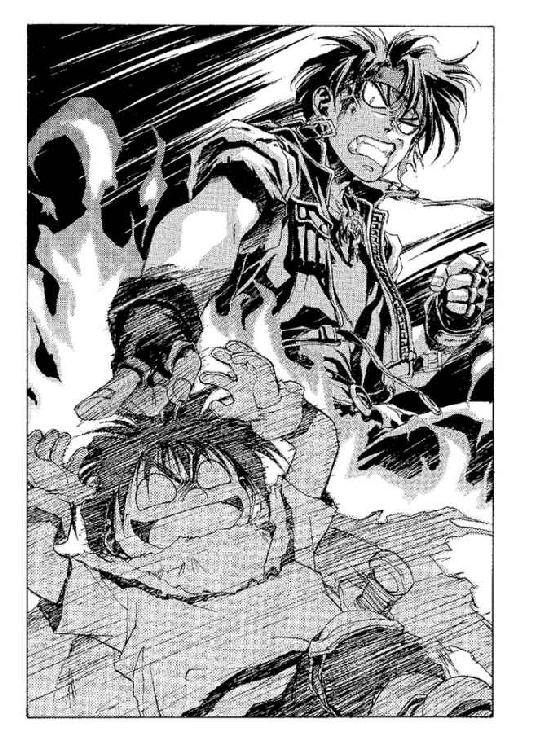
オーフェンは、マジクの肩を思い切りつかんだ。
マジクがうめく。
「げ──い、痛いですよ、お師様」
「お前もつかまってろ。離れたら死ぬぞ」
「......え？」
「村の外まで、魔術で転移する。少なくとも、声のとどくところまではな」
オーフェンが言うと、マジクはほっと安堵の吐息を漏らした。
「なんだ──そんなことができるんですか」
「できるにはできる──万にひとつの奇跡が起きれば、生き延びることができるかもしれない」
「......はあ？」
「転移の魔術ってのは、よほどの熟練者が試みても、極端に成功率が低い──十メートルの距離を跳ぶのでやっと。その倍の距離になれば、数パーセントってところかな。声のとどくかぎりとなれば、コンマ以下だ」
「そ、そんなあ！」
マジクが悲鳴をあげる。オーフェンは無視して、視線だけで周囲を見回した──こちらを包囲した村人たちは、殺気立って手にした武器を掲げている。何人か、屋根に上ろうとしている者もいた。迷っている時間はない。
「失敗すれば、全身の細胞が沸騰して完全消滅を起こす。転移する間に壁やらなにやらの障害物が入れば、それだけで衝撃死する可能性も高いしな。それでなくても、大気摩擦だけでとてつもない熱量が発生する。身体がそれに耐えられなければ、一瞬で衰弱死する」
と、数百の村人たちに視線を転じて、続ける。
「あるいは、この連中と力つきるまで戦争するかだ。どっちを選びたい？」
「どっちも死ねって言ってるようなもんじゃないですか」
泣きそうな顔でつぶやくマジクに、オーフェンはかぶりを振った。
「いや、違う」
「は？」
「どちらにも生き延びるチャンスはある。くそ......せめてフィエナがいれば、彼女を人質にするってテもあったんだがな」
「させませんよ、そんなこと」
マジクがつっかかってくるが、オーフェンは無視した。意味のない口論をしても仕方ない。既に鍬を持った男がひとり、屋根に上がってきている。
「今までもロクなメにゃあわなかったが......こいつは極め付けだな」
オーフェンは拳を固めると、そちらに向き直った。やはり転移の魔術はリスクが大きすぎる──それでも最後の手段となれば、考えないわけにはいかないが。
「くそっ」
オーフェンは口の中で吐き捨てると、躍りかかってきた男を屋根の上から突き落とした。
◆◇◆◇◆
「......よう。ちゃんと待ってたみたいだな」
サルアが声をかけると、薄茶色のマントをすっぽりと羽織ったフィエナは顔を上げた。この半年間で伸びた髪を後ろでポニーテイルにまとめ、マントの下も、巫女服ではなく普通のシャツの襟刳りがのぞいている。
村の、騒ぎからはかなり離れた一角である。喧噪と、魔術が爆発する音が聞こえてくる。だがそれも、遠い場所の出来事のように小さい......
彼女はまずこちらを見て、そして伏せるようにまぶたを落とした。
「あのひとは連れていかないんですか？」
「？ どのひと？」
サルアがすっとぼけて聞くと、少女は少しためらうように肩をすぼめた。
「だから......マクドガルの使用人の。知ってるんです。あのひとと、恋人なんだって」
「俺とあの女？」
別に、そういった仲ではない。少なくとも、兄の逆鱗に触れるのを分かっていても、郷里につれていかなければならないほどの仲では──とはいっても、フィエナ相手にそれを説明できる自信は、サルアにはなかった。
（俺を、女ひとり片腕に抱いて凱旋できるヒーローだとでも思ってるのだかね？ しがない、みじめな暗殺屋をよ）
サルアは剣帯をがちゃつかせながら、答えた。
「彼女は、この混乱だからな......はぐれちまった。どのみち、この村の人間なんだからよ、ここにいるのが幸せなのさ、彼女は」
正確には、彼女を連れてこの騒ぎを切り抜ける自信がなかったので、わざとはぐれるように足を速めたのだが......せりふの後半は、むしろ本心に近かった。
「行くぜ──あの魔術士が、みんなの目を引き付けてくれてる間によ。なあに」
と、サルアは安請け合いして手を振った。
「マジクとかいうガキのことを心配してるんだろうが、死にゃしねえよ──ああ、死ぬわけがねえ」
こっそりと目を光らせる。喜悦に。
「こんなところで死ぬわけがねえさ......特に、あいつはな」
フィエナは、それでも安心はできないようだった──不安げに、村の中心を遠く眺めている。彼女は、ぽつりと聞いてきた。
「わたし......逃げてしまって、いいんでしょうか」
ざっ──と、サルアの視線が彼女を撫でる。彼は、あっさりと答えた。
「マクドガルを失った村人たちに捕まったら、お前、今度こそ逃げる隙なんぞないほど完全に監禁されちまうぞ。今度は巫女でなく教祖としてな。生き延びるのが最重要だろ──逃げもせずに打ち勝ちたい、なんてのはただの自己満足だ。悪いこっちゃねえけどよ」
「わたし......どこに連れていかれるんですか？」
「キムラックだ。とりあえずは、俺の養女になる。正しくは、俺の兄のな。まあ......あまり幸運なことだとは思わないでくれよ」
「あなたのお兄さん、会いたいです」
「そのせりふを後悔する日が、きっと来る」
サルアはため息混じりに、彼女の背中をぽんとたたいた。
ちらりと──ほんのちらりと──背後を見やる。オーフェンの魔術の声が、かすかに聞こえた。
「死ぬわけはねえよな......必ず来るはずだ。俺のところによ。それまでは......そうだな」
彼は小さく、つぶやいた。怪訝そうにこちらを見上げているフィエナにも気づかず。
「それまでは、退屈だな」
そしてサルアはフィエナを連れ、深き《森》へと出ていった。
◆◇◆◇◆
十五人目で、さすがに息が上がってきた──おまけに、多少の手傷も負っている。屋根の上、マジクと背中あわせに、オーフェンは深々と息をついた。
「......あと、どれくらいもちそうだ？」
マジクは答えてこなかった。かぶりを振ったのが、気配で分かる。
（ま、善戦したほうだがな）
戦闘訓練などなにも受けさせていないのに、魔術だけで何人かの敵を撃退している。が──
「そこまでだ」
ふと気が付くと、屋根の上に、五人の男が上ってきていた──まだ若い、二十代の後半くらいの男たち。手に拳銃を構えている。
「マクドガル親衛隊の残党ってトコか」
オーフェンは、皮肉げな笑みを浮かべながらそう言った。五人の後ろからも、ばたばたと次々別の男が上ってきている。そいつらも、拳銃で武装しているらしい。
最初に声をかけてきた男が、続けた。
「罪ある魔術士よ──我らが心臓、我らがマクドガル様の仇を取らせてもらう」
オーフェンは、投げやりにうめいた。
「好きにしろよ。俺は疲れた」
「お──お師様っ!?」
マジクが、驚愕の声をあげる。オーフェンは無視した。
「しっかり狙えよ。一発で仕留めねえと、ほかの奴が俺の命を横取りするかもしんねえぞ」
「......横取り？」
鈍そうな声で、男。オーフェンはにやにやと続けた。
「おんや？ 分かってねえのかな。どうせ、こんな田舎村のこった。教祖の仇を取った奴が、次の教祖──その程度のシステムなんだろが？」
「う......」
少し驚いたように、男たちが互いに視線を見合わせる──実際に暗黙の了解で、そういった取り決めはあったのだろう。なかったとしても、今の一言でその可能性を示唆できたはずだ。
（あと一息だ）
オーフェンは、続けた。
「おい、ほら──お前がぼさっとしてっから、後ろの奴が手柄を狙ってやがんぞ」
「なにっ!?」
男が慌てて振り返る。それに反応してか、反射的に後ろの男たちが拳銃を構えた──
（今だ）
オーフェンは、胸中で叫んだ。くるりと振り返り、マジクをはがい締めにする──そして渾身の力を振り絞り、彼は叫んだ。
「我は踊る──」
転移の魔術だ。ほかに方法はない──
「天の楼閣！」
「ひああああっ！」
さっきの説明を思い出してか、マジクが悲鳴をあげた。実際、さっきの説明通り、長距離を転移すれば、その成功率は極めて低い──ほぼゼロだ。だが、オーフェンが跳んだのは、通りをはさんだすぐとなりの小屋の屋根だった。すっ──と視界が開け、傾いた屋根の上に足を下ろしてから、オーフェンは続けて叫んだ。
「我は放つ光の白刃！」
渦巻く光熱波が、さっきまでオーフェンらの立っていた小屋の壁に突き刺さる。木製の壁はあっけなく撃ち抜かれて、小屋の中に溜まった熱衝撃波は、屋根ごと小屋を一気に炎上させた。絶叫じみた悲鳴をあげながら、男たちが転落する。
「やった──」
とマジクが歓声をあげるが、結局のところ、事態はさほど好転していない──包囲される小屋が、あちらからこちらに変わっただけだ。案の定、村人たちはすぐさまこちらの小屋の真下に殺到してくる。
「こうなりゃ──」
オーフェンは、汗をぬぐいながら声をあげた。
「とことんやってやる！」
構えをとる。魔術の構成を編み──全身から力を振り絞って──
──ふわっ──
とした感覚が、身体を包んだ。あまりにも静かに......優しく。
穏やかすぎて、それが爆圧であることなど気づかなかったほどだった。
しゅわ──！
炭酸水が弾けるような音が、耳の中に響く。同時に視界を押し潰した光量に、オーフェンは悲鳴をあげた。熱風が、汗を含んだ髪を一気に乾かす。すべてが終わったとき──
オーフェンは、目を開けた。なにも変わっていない。いや......
恐る恐る、彼は振り向いた。マジクがぺたんと尻餅をついている向こう──村の中心に、なにやら巨大なクレーターができている。そこにあったはずの教団の塔も......工房も、一瞬で蒸発してしまっていた。
「今のは......」
オーフェンは、うめいた。なにもなくなったクレーターの真ん中に......すうっと、空気から現れいでるように漆黒の巨体が姿を浮かばせる。ディープ・ドラゴン＝フェンリル。
おお......と、村人たちから感嘆の声が漏れた。
ざっ──と、背筋が粟立つようなプレッシャーを覚えて、オーフェンはあたりを見回した。いつの間にいたのだか......村の外輪を、ずらりとドラゴンが埋め尽くしている。
「オーフェン！」
いきなり、黄色い声が静寂を破った。よく見ると、村の中心に現れたディープ・ドラゴンの背中にクリーオウが乗っかっている。なぜか小さなドラゴンを胸に抱いて、その後ろで固まって、レンジャーの装備をしている三人の男が真っ青になって震えていた。
あっけにとられるオーフェンや村人たちの表情にも気づかずに、クリーオウがさらに続ける。
「大変なの──大変なのよ！」
と、ぶんぶんと剣の鞘を振ってみせる。それにあわせて、抱いている子ドラゴンも首を動かしていた。
「このドラゴンねえ──なんていうか──ものすごく怒ってるみたいなの！」
「......あん？」
「なんだか、ここの村の人をみんな殺すって言ってるの！」
彼女の声を、そのまま肯定するように──ディープ・ドラゴンが双眸を見開く。
瞬間、すべてを焼き尽くすような純白の炎が膨れ上がった──あまりの光量に、その規模も分からない。またなにかが蒸発する音──ちゅん、ちゅんっと小さく弾かれているのは、金属が沸騰する音だろう。すさまじいまでの光の中で──オーフェンは両腕で顔をかばった。吹きつける熱風で、肌がそのままはがれてしまいそうな激痛を覚える。
今度の光が消えると──村の半分が、消えていた。
沈黙──そして──
「きゃあああっ!?」
泣き出すような、クリーオウの悲鳴。
（たった一瞥で──村を消し飛ばしただと!?）
オーフェンは絶望的に、ディープ・ドラゴンを見据えた。群衆が、悲痛なざわめきを発する──今の一撃で、村だけではない、村人もかなりの数がその魔術に巻き込まれていた。
「暗黒魔術──か」
太刀打ちできるような次元のものではない......
オーフェンは、ぼやくように言った。ぺたんと力つきたように、彼のひざに背をもたれているマジクが、しゃっくりのような悲鳴をあげている。
「な、な、な......」
と震えるマジクの肩をつかんで、起き上がらせてやりながら、オーフェンは叫んだ。
「クリーオウ！ お前はなんでドラゴンの背中なんかに乗っかってるんだよ！」
「だって──」
少女が、半泣きになって叫び返してくる。抱いている子ドラゴンを示しながら、
「この子の親がさ、この村を滅ぼすから、下がっててって言うから──止めようとしたら、いっしょにこんなところに跳んじゃって──」
「ったく──」
オーフェンは毒づきかけて、やめた。なにかが、頭の中に割って入ろうとするような気配を感じたのだ。
勘に任せて視線を転じると──自然、視線はドラゴンと合った。ディープ・ドラゴンの緑色の瞳が、輝きを発する。
《汝らは、禁忌を侵そうとした》
その声──空気を振動させる声ではないが──には、オーフェンは聞き覚えがあった。最初にこの村に潜入した夜、彼に精神攻撃をかけたドラゴンと同じ感触である。
ディープ・ドラゴン＝フェンリルは続ける。偉大なる心臓と名乗る村で。
《よって処分する》
群衆の間に、不理解の沈黙が降りた──が、やがてドラゴンの言葉が浸透していくにつれ、徐々に......ヒステリーの波が、沈黙にとってかわる。
あまりにも迅速な殺戮が始まろうとしていた。
（禁忌......？）
訝しみながらオーフェンは、屋根から飛び降りた。ドラゴンの視線の一閃が、三度とてつもない熱量を噴き上げる──
その光の中に、十数の人影が消えるのを、オーフェンははっきりと見ていた。天まで焼き焦がす真白き炎が、大気に散る。
「お──」
地面に降り立って、オーフェンは胸元のペンダントをつかんだ。どうしようもない衝動が──肺を震わせる。
「おあ──あああああっ！」
ペンダントの鎖を引きちぎり、オーフェンは、それがそのままなにかの武器であるかのようにドラゴンに向けて構えた。こちらを無視して、また緑色の視線を放とうとしているディープ・ドラゴンに叫ぶ。
「我は踊る天の楼閣！」
叫んだのは、転移の魔術だった──だが、転移を行うのは自分ではない。手の中の、冷たい銀のペンダントだ。銀細工のドラゴンの紋章は、一瞬にして彼の手の中からかき消え、鋭い音を立ててドラゴンの向こうの空間へと現出した──つまり、ドラゴンの身体を突き抜けて向こうに現れいでたことになる。
空間転移といったところで、文字通り空間を跳躍できるわけではない──魔術で質量をごまかして、絶大な加速をかけるといった意味でしかなかった。つまり、目に見えなかろうと壁があればぶつかるのだし、そんな加速状態で衝突したのならば、すさまじい衝撃を受けることになる。しかも、質量的には存在していないわけだから、転移した物質自体はまったく破壊されずにエネルギーだけが破裂するわけだ。
爆発はドラゴンの、喉のあたりで起こった。爆衝とでも呼べばそれらしいかもしれない衝撃波が、ディープ・ドラゴンの身体を横倒しにする──背中に乗っていたクリーオウやレンジャーたちが、悲鳴をあげて落下するのが見えた。
ぴぃぃぃぃ──ぃん──と一瞬遅れて、空中に跳ねたペンダントが、かん高い音を立てた。それを合図にするように、ゆっくりと黒いドラゴンが......首を起き上がらせる。
（あれすらも通じねえのか......）
オーフェンは、愕然とした気分でよろめいた。
今のは、一種の切り札だった。普段はまずやらない──人間相手なら、抵抗も防御もさせないまま、問答無用で殺してしまうことになりかねないからだ。
もっとも、ディープ・ドラゴンは、その爆発をも魔術で押さえ込んだようだった。
起き上がった漆黒の獣と、オーフェンはじっとにらみあった──ディープ・ドラゴンの魔術の炸裂がなくなったわけではない。村を取り囲んでいた数十ものドラゴンたちが、ゆっくりと行動をとりはじめていた。ときおり、光が大気をかきまぜ、振動が地面を震わせる......村はもうパニックで、今さらオーフェンに構う者もいなくなっていた。村人たちみんなが、散り散りになって逃げようとし、そして爆光の中に消える。
オーフェンは身動きできずに、じっとドラゴンの双眸を見据えていた。大陸最強の戦士......《森》を守護するドラゴン種族。
（ひとにらみされただけで──俺はこの世から消滅する）
オーフェンはふと、自分が失禁しそうなほど怯えているのに気が付いた。勝てるわけがない──
「オーフェン！」
呼びかけられて、彼はびくっと身体を震わせた。どこをどう走ってきたのか、背後からクリーオウが近づいてくる。まだ腕に子ドラゴンを抱いたままで、マジクもいっしょのようだった。振り返らずにいると、クリーオウは、さっととなりに並んできた。
「サポートするわ！」
と、きっぱりと言ってから、ふと困ったように聞いてくる。
「......どうすればいい？」
オーフェンは、なんだか無意味に笑い出したくなってきた。なにもかも投げ出して、やめにしてしまいたい──その一方で、ひどく静かに決心する自分の姿も見ている......
（......まだだ......）
まだ彼になにかできると信じているらしいクリーオウや、マジクの顔を見ながら、また──強い眼差しで、ドラゴンを睨めかえす。
キリランシェロだった頃とは違う......今ここであきらめることの意味が、あまりにも大きすぎる。
視線はそらさず、オーフェンは言った。
「これだけの数のドラゴン種族を相手に、勝つことは無理だ。奇襲も奇策も、ハッタリもきかねえ──奴らはこっちの心が読める」
「じ、じゃあ......どうするの？」
クリーオウが聞いてくる。オーフェンは、ため息をひとつついた。少女の腕の中の、きょとんとした顔のドラゴンの首を、むんずとつかむ。
「人質だ」
「オ──オーフェン！」
クリーオウが悲鳴をあげた。マジクも、なんだか驚いたような顔でこちらを見ている。どうも、相手の子供を盾にとることを予想していなかったらしいが、あまり奇麗事を言っていられる場面でもなかろう。
「俺が本気だってことは、分かるはずだな、ディープ・ドラゴン──」
心を読まれていることは承知で、オーフェンは言った。
「突然襲いかかってきた理由は聞かない──さっさとこの村から消えるんだ」
ディープ・ドラゴンは言葉を解する──というか心を読むのだが、眼前のディープ・ドラゴンの瞳が、躊躇するように揺れるのを見て、オーフェンは内心ほっとした。クリーオウやマジクを守るためなら、いかに子供だろうとドラゴンの首をへし折るのにためらいはしないが、実際にそれをやったら当のクリーオウらに八つ裂きにされそうではあった。
張本人（？）たる子ドラゴンは、事態が分かっていないのか、首根っこをつかまれても、気持ちいいと思っただけのようだ。
そのドラゴン──彼女？ が、このディープ・ドラゴンの群れ全体のリーダーなのか──彼女が動きを止めると、ほかのドラゴンらも攻撃をひかえた。唐突にまた静かに、そして痺れるほど緊迫した空気が立ち込める。
「このまま立ち去れば、このガキは解放する。早く決断しろ......俺は暗殺訓練を受けた魔術士だ。やると言ったらやるぞ」
言うオーフェンの手首に、子ドラゴンが小さな頭をすりよせてきている。
答えはない......すっと、眼前のドラゴンの双眸が、細くなる。
長い沈黙の後に、彼女は告げた。
《好きにするが良い》
「──なに？」
信じられない思いで、オーフェンは聞き返した。ドラゴンは平然と、
《我らの魔術を侮るな......死したものも蘇生させる。我らは戦士だ。傷を与え、傷を癒すことが能力──》
そして、緑色の瞳が見開かれる。
《スレイプニルが無を──原初を支配し、ノルニルが創造と管理を司る。そして我らフェンリルは効果的に敵を排除する。我ら種族は、無意味に存在しているのではない──汝らとは違うのだ。自らを無意味に、無価値にしてしまった汝らとは》
「無価値......だと？」
歯をぎしりと鳴らしながら、オーフェンはつぶやいた。
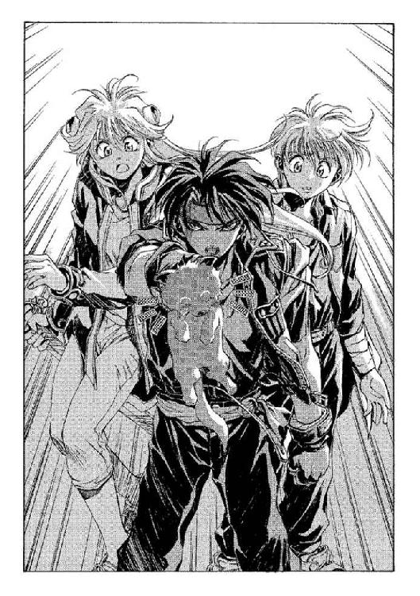
別に、自分になにかの価値があると信じていたわけではない──それほど楽天的でも、能天気でもなかった。だが──
「人を殺した奴が、言うことを許されるせりふじゃない」
光の中に消えた人影を思い出しながら、オーフェンは言った。すっと──子ドラゴンの首から、手を放す。彼はその手をそのまま、巨大なディープ・ドラゴンへと突き出した。
「俺が相手をする。俺が死ぬまでは、ほかの誰にも手を出すな」
「オーフェン──」
クリーオウのつぶやきを、オーフェンは無視した。なんとなく、ありがたくはあったのだが。
《我は汝を称賛する。だが、汝は理解しなかった》
ドラゴンが、静かな声を発した。そして、さらに静かな声。
《さらばだ》
次の瞬間、ドラゴンと目が合った。
ディープ・ドラゴン種族と視線を合わせて、生き残った人間など、史上に存在していない。ディープ・ドラゴンは殺せるときには確実に敵を殺すのだし、相手の術中に入れば、抵抗する力は人間にはない。相手は、神とまで崇められる種族なのだ。
だがこのディープ・ドラゴンは、その最初の一瞥では、なんの攻撃もしてこなかった。オーフェンは、そのままくるりと身をひるがえし、駆け出した──
ざわ──
まだ逃げることすらできていなかった村人たちが、ざわめきを発する。かなり数を減じた人込みに飛び込んで、、オーフェンは走った。一目散に、目的に向かって。
逃げているわけではない。
背後から一撃を食らって、それで終わりかという覚悟もしていたのだが──その攻撃すらなかった。だがそんなことを考える間もなく、オーフェンはまだ炎上している小屋に飛び込んだ。さきほど屋根の上で村人たちに追い詰められ、そして数人の村人ごと魔術で爆発させた、あの小屋だ。
中に入ってから、見回す──壊れた家具やらなにやらに混じって、探し物を発見した。壊れたときに、屋根の上から村人が落としたのだろう、鉄製の粗末な拳銃。
オーフェンは無言でそれを拾い上げた。シリンダーを外して、まだ弾丸が装填されていることを確認する。炎の熱で暴発もしていない、弾倉は四連発。ただし、あまり連射すれば、熱でシリンダーが歪んで暴発しかねないほどの粗悪な代物だ。王都でなら十年以上前に、とうに廃絶されているであろうモデルである。
ふう──と、オーフェンは吐息を漏らした。
「魔術は通じない──こんな武器が通じる相手じゃない──素手で戦える相手でもない」
人間の考える小賢しい策などが通じる相手ですらない、とオーフェンは胸中で付け加えた──ディープ・ドラゴンは、こちらの心を読むこともできる。
がちゃり、と手の中の拳銃を振って、オーフェンはシリンダーを定位置にはめ込んだ。普通持つべき左手ではなく、右手で、ぎゅっと銃把を握る。
《準備はできたか？》
──唐突に、声が頭に響く。
オーフェンは、反射的に叫んでいた。
「我は紡ぐ光輪の鎧！」
同時に、左腕を振り上げる。
振り上げられた腕に紡ぎ上げられるように、無数の光の輪で出来た網が、彼の身体を包んだ。そして、すべての視界が光に覆われる──
そのまま眼球が沸騰するのではと思うほどの熱量が、彼の身体を圧倒した。もっとも、そう思ったのは錯覚だったのだろう──皮膚は火傷ひとつ負わなかったし、拳銃も暴発しなかった。ただ、すべての光が消えたとき、彼がいた小屋は塵すら残らず蒸発して消えていた。
光の網も、消える。
ふうっ......と、砂を含んだ風が一陣──オーフェンは、ディープ・ドラゴンと対峙していた。小屋だけが消滅し、あとは彼が小屋に飛び込む前とまったく変わらない景色が残っていた。こちらを見据えるディープ・ドラゴン──村の周囲をドラゴンらに囲まれて、逃げることすらできない村人たち。そして村人たちとは少し離れたところで固まっている、クリーオウとマジク──クリーオウはまだ子ドラゴンを胸に抱いている。いつの間に合流してきたのか、レンジャーたちの姿もあった。
オーフェンは無言で拳銃を両手に構えなおし、引き金を引いた。ぱんっ、と少なからぬ反動が、腕を通して彼の肩をたたく。弾丸は正確にドラゴンの左目を狙い──そして──銃口と目標のちょうど中間のところで、ぱっと弾けて虚空に消えた。
ドラゴンが、魔術で撃ち落としたのだ。
オーフェンは、気にせずに口を開いた。
「俺は今から、すべての力を以てお前を相手する──すべての武器、すべての能力、すべての経験──なにもかもすべてだ」
《ほう？》
と、ドラゴン。なにも動じた気配がない──当たり前と言えば当たり前だが。
オーフェンは、やぶにらみの目をさらに傾けた。
「俺の前で人を殺すな──ムカついてくるんだ」
《......怒りを持つな。それでは我らには勝てぬ》
「......!?」
オーフェンが訝ると、ドラゴンはさらに続けた──無表情な声で。
《我らを憎むな......我らは戦士の種族だ。主たる者に命じられて、我らは戦う》
ぎしり──と奥歯が鳴った。
「抵抗できない人間を殲滅するのが、戦いか、お前らの！」
《我らに命じる者が、この村が不要になったと判断した──》
その声に反応したのは、オーフェンではなかった。
「不要だと──!?」
恐怖に引きつった悲鳴が、村人たちの中から沸き起こる。
「あんたらを、崇めていたんだ──」
《それも知っていた。使い魔を潜入させていたからな》
「使い魔......？」
強力な精神支配により、五感をも共有する生物──通常、術者よりも知能において劣る生物を用いる──
オーフェンの脳裏に浮かんだのは、フィエナの顔だった。
《そう、あの巫女だ──》
ドラゴンは、どういうつもりか、聞いてもいないことまでしゃべりはじめた。
《我らが主は、マクドガルという男の持っている情報を必要としていた──あの男を飼うために、この村は打ってつけだった》
「......情報......」
銃把を握る手が痛い──気が付くと彼は、それほど強く鉄の塊を握り締めていた。
（このドラゴンども──いや、その主とかいう奴は──）
俺と同じ情報を欲しがっている、とオーフェンは悟った。マクドガルが、マクドガル元教師が、キムラックでなにを見たのか──
《フィエナは手間取ったが、あの男が既にその情報を失っていると、我は判断した。彼は正気を失っていたのだ。彼は結局、恐怖に追われてここへ逃げ込んできただけだった》
その判断は恐らく間違っているとオーフェンは思ったが、反論はしなかった。マクドガルが死んでしまった今、もう無意味なことだ。
その代わり、彼は別のことを聞いた。
「なぜ......そんなことまで、俺に話す」
《それは当然──》
ドラゴンの目がうっすらと光ったような気がした。
《汝を新たな使い魔とするためだ》
「────！」
オーフェンはとっさに、後方に跳んでいた──魔術を避けるときの癖で、跳び退りながら防御のための魔術を編もうとしている。が、これは今回は完全に失敗だったと彼は悟った。ディープ・ドラゴンの暗黒魔術は、人間の力ではまったく防げない。
後ろに跳んで、ドラゴンからは遠ざかっているはずなのに──ドラゴン種族の緑色の双眸は、いきなりとてつもなく大きくなったように見える。精神支配の影響である。
とりあえず、彼は叫んでいた。
「我は紡ぐ光輪の鎧！」
こんなものでディープ・ドラゴンの魔術は防げない──
が、光の網が彼とドラゴンとの間を隔てた瞬間、それまでドラゴンから受けていたプレッシャーが、あっさりと霧散する。
（────!?）
オーフェンは、信じられない思いで、それでも次の魔術を放っていた。
「我は放つ光の白刃！」
網が消えると同時、その残像を撃ち抜くように、純白の光熱波がドラゴンの顔面を狙う。が、それは、ドラゴンの元にとどく前に、吹き消されるように霧散した。
刹那、オーフェンの頭の中に閃くものがあった。
（そうか──こいつら──）
《気づいたようだな》
落ち着き払った声で、ドラゴン。だがその平静な声も、もはやオーフェンをいらだたせはしなかった。
胸中で、叫ぶ。
（勘違いしていた──こいつらは、別に神でもなんでもない──ただの魔術士なんだ！）
『魔術』は万能たり得ない。全能たる力を有するのは、神々の『魔法』だけである。
かといって、ディープ・ドラゴンと自分との能力の隔たりが一歩でも近づいたわけではないのだが、それでもオーフェンは、奈落の迷宮から出口を発見したような心持ちになっていた。
自分の音声魔術が、声のとどかないところには効果が及ばないように──
（こいつらの暗黒魔術は、視線のとどかないところには効果が及ばないんだ！）
圧倒的な熱量で村ごと消し飛ばされれば、それまでであるが、少なくとも精神支配だけは、その視界を遮るだけで防ぐことができる。
「マジク！」
オーフェンは、拳銃を立て続けに二射しながら叫んだ。動態視力に優れたドラゴンは、その弾丸すらをも見て破壊する。もとより、そんなもので倒せる相手でないことは知っていたが。
「あれやれ！」
「あ──あれ、ですか？」
マジクが、いきなり叫びかけられてびっくりしたように──そしてクリーオウがいるほうを、バツ悪そうにちらりと見てから、それでも呪文を唱え始める。
（ん......？）
マジクが魔術の構成を編みはじめたのを見ながら、オーフェンは、ふと訝った。マジクの視線を追ったのだが──クリーオウが、少し移動している。
（また、なんかやるつもりか、あいつ──？）
その瞬間、ややかん高いマジクの声があたりに響き渡った。
「我は乱す光列の檻！」
用途の割には物々しい呪文を考えるものだとは思うが、そんなことを苦笑している暇はなかった。彼の周囲の光景が、金属板をくしゃくしゃに丸めたように、めちゃくちゃに歪む。マジクの、一応、最も成功率の高い魔術──つまるところは使用頻度が高いということだが──
《貴様、視界を──》
ドラゴンが、あくまで落ち着いた声でうめく。ただし、視界が遮られているせいで、その声はだいぶ聞き取りづらくなっていた。
「その通り──」
オーフェンは言った。
「光を屈折させたのさ。本来なら、死角を補うために使うんだがね！」
「あわわわ」
と、これはマジクが動揺した声。クリーオウに聞かれると思ったのだろうが、そんなことに構ってはいられない。
その間に、オーフェンも魔術の構成を編み上げてある。彼は右手を──空っぽの右手を差し上げて、声を張り上げた。
「我は築く太陽の尖塔！」
ぎゅおうっ──圧縮されたものが膨れ上がる、こすれたような音が響き──
遮られた視界が、不規則に深紅に染まる。狙いが狂っていなければ、ディープ・ドラゴンを炎で包み込んだはずだ。
《こんなことで、我を凌駕することはできぬぞ──》
「知ってるさ！」
だが、視界を狂わせたのは、なにも相手の魔術を撹乱するためだけではない。
（うまくいってくれ──）
オーフェンはぎりぎりの感情を込めて祈った。相変わらず、なにに祈ったかは自分でも分からない。あるいはドラゴンの種族に魔法の秘儀を盗まれた、間抜けな神々にかもしれない。結果が出るまでは──出るとしたらだが──もう一瞬もかからないはずだ。
（駄目か──？）
覚悟を決めて、無駄と知りながら次の魔術を放とうとした、そのとき──
ばんっ！ という、あまりに小さな破裂音と、そしてドラゴンの悲鳴とが響き渡った。
炎のかけらを纏わり付かせ、地響きを立ててディープ・ドラゴン＝フェンリルが横倒しになる。その目の上あたりが、べったりと血糊で濡れているのが見えた。村人たち──そして、村を取り囲んでいるドラゴンたちが、大きなどよめきを発する。
「拳銃の暴発だよ」
オーフェンは、しっかりとドラゴンをにらみ据えながら言った。
「視界を遮ったのは、細工を隠すためでもあったのさ──あんたの頭のあたりに拳銃をほうってね、魔術で炎を起こした。既に三発も撃ってシリンダーが過熱してたんだ。少しでも熱を与えれば、残った弾丸が暴発するさ。しょせんは粗悪な模造品だ。暴発すれば、粉粉に砕け散る。その破片が、うまいことあんたに命中するかどうかは、はっきり言って分の悪い賭けだったがね」
《そして精神支配を遮っておけば、その策も読まれることはない、か──》
至近距離での拳銃の暴発が直撃すれば、軽傷だったはずはないのだが、ドラゴンの言葉によどみはない。
《だが、我を殺すことはできなかったな》
「............」
それは事実だった。ドラゴンには、まだまだ余力がありそうに見える。それでなくても、村を取り囲んでいる数十ものディープ・ドラゴンたちがいるのだ。
勝ち目が見えたわけではない。オーフェンが押し黙っていると、フェンリルは続けた。
《我はまだ、汝を滅ぼす力を残している》
「............」
オーフェンは、ぎゅっと拳を握り締めた。
だが、続いて発せられた言葉は、完全にオーフェンの予想を裏切っていた。
《キリランシェロ──汝の名は、知っている》
「......なに......!?」
オーフェンは、実際に殴られたように、動揺のうめきを発した。ドラゴン種族が人間の個人名を知っているはずがないし、仮に聞いたことがあったとしても、そんなものを記憶しているわけもない。
《汝の知り合いを知っている──約束があるため、我はお前を殺せない。連れを助けるために、汝が生命を賭けると本気で言うのであれば、この場は我らが退こう》
「な............」
オーフェンはなかばパニックを起こして、ディープ・ドラゴンを見つめた。俺の知り合い──人間とドラゴンが──約束をしただと？
神と崇められる種族と。
そんなことができるのは──
オーフェンの頭の中に浮かんだ名前は、ひとつしかなかった。
（大陸最強の黒魔術士──人間に考えられ得る、最高の能力を有していた男──チャイルドマン教師......あんたか!?）
胸中で叫ぶも、ドラゴンは答えない。
疑問は残したままドラゴンが、すっと起き上がる。ケガをしてもその挙動には音がない。
《だが、この村を滅ぼすことはやめることができない。《森》の最聖域に立ち入ろうと画策した者たちは、滅ぼさねばならぬ》
その言葉に対して、反応もできない。それほど早く、ドラゴンたちが一斉に動いた。周囲を囲む、すべてのディープ・ドラゴンらが、その高くそびえる巨躯の頭頂から視線を放つ──
オーフェンは確かに、その魔術の対象から、自分の身体が外れているのを悟った。絶望的なプレッシャーが感じられない。だが、心に覚えた絶望感は、今までの比ではなかった。思わず、両目をきつく閉じる。
（次に目を開けたら──もう誰もいない──死んでいる！）
目を閉じたまぶたの奥まで、膨れ上がる光が差し込んでくるような気がする。
（なんで俺の力は、お前たちに通じないんだ──）
痙攣するような内臓の動悸が、叫びを震わせる。
（殺してやる──目を開けて、全員死んでいたら、お前たちを殺してやる──！）
激しい感情は、体力を消耗させた。がっくりと、地面にひざをつく。無力な拳で地面を殴りつけて、彼は絶叫した。
「俺はキリランシェロだ──俺に殺せないものはないんだ！ チャイルドマンが、そう約束した──やめないと、お前らを殺すぞ！」
焦熱で乾いた顔を上げる──と、すべては終わっていた。
村はなくなっていた。完全に、地上から。黒々とした焦土の上に、大陸の正統なる支配者たち──ドラゴン種族がずらりと並んでいる。頭から血を流しているドラゴンを中央に。
そして、ちっぽけな人間たちは、一塊になってそれと対峙している。対峙しているというよりは、教師に怒られて廊下に立たされているといった様子ではあったが。
クリーオウも、マジクも、そして村人たちも──誰も死んでいなかった。オーフェン、彼自身も。
地べたにはいつくばったままで、オーフェンは呆然とドラゴン種族らを見やった──彼のすぐ目の前に、彼に背を向けて、小さな少女が立っている。
（クリーオウ......？）
かと思ったが、そうではなかった。もっと幼い。フィエナ──あの巫女だ。巫女の服はもう着ておらず、ごく普通の村娘といった格好だったが。
《なぜもどってきた？ フィエナ......》
ドラゴンの声は荘厳に、焦土に響いた。オーフェンは、それに答える少女の声が、やけに緊張してこわばっているのに気づいた──そして、驚くほどはっきりしていることにも。
「知っていたからです......逃げられないでしょう？ あなたたちが、《森》の聖域を侵そうと考えたこの村の人を許さないことを、知っていました」
《そう......我は、汝には教えた。だから、逃げる機会をも与えてやったはずだ。お前といっしょにいた、あの殺し屋、もう逃げたのだろう？》
「ええ──サルアはわたしが《森》の外まで転移させました。彼も、あなたが知りたがっている情報を持っているようだったから。彼はわたしの友達だもの。あなたには渡しません。ここにいる人達......誰もです」
と、彼女は、ちらりとマジクのほうを見やった──そして再びドラゴンへと向き直り、両腕を広げて続ける。
「あなたと五感を共有することで、わたしもあなたの魔術が使えるんです──ディープ・ドラゴン種族の中でも、有数の力を持っているあなたの力を。知っているでしょう？ あなたたちを追い出すほどの力は出せなくても、あなたたち全員の魔術を無効にするくらいはできるんです」
《汝を選んだことは、間違いだったようだ──》
ドラゴンがつぶやいた瞬間、フィエナの身体が、ばちっと帯電したように弾けた──恐らく使い魔とするための精神支配を解いたのだろう。その衝撃で、ぺたんと尻餅をつく少女の身体を、オーフェンは素早く抱きとめた。彼女は震えながら、それでも続けた──
「ええ──間違いだったんです。もっと強い人を選べば良かったんです──強い人なら、あなたの言いなりになんてならなかった。マクドガルを説得して、あなたたちに逆らうような無謀な計画を撤回させることができたのに、わたしは、怖くてできなかった......」
そこまでまくし立てるように言うと、彼女は、ひくひくとしゃくり上げはじめた──支配を解かれたことで、緊張の糸が切れたらしい。ヒステリーの気配を感じて、オーフェンはマジクに目配せした。多少なりとも親しい人間でないと、過剰に興奮した人間を落ち着かせるのは無理だ。
マジクが駆け寄ってきて、泣きじゃくるフィエナの身体を受け取った。オーフェンは、すっくと立ち上がった──
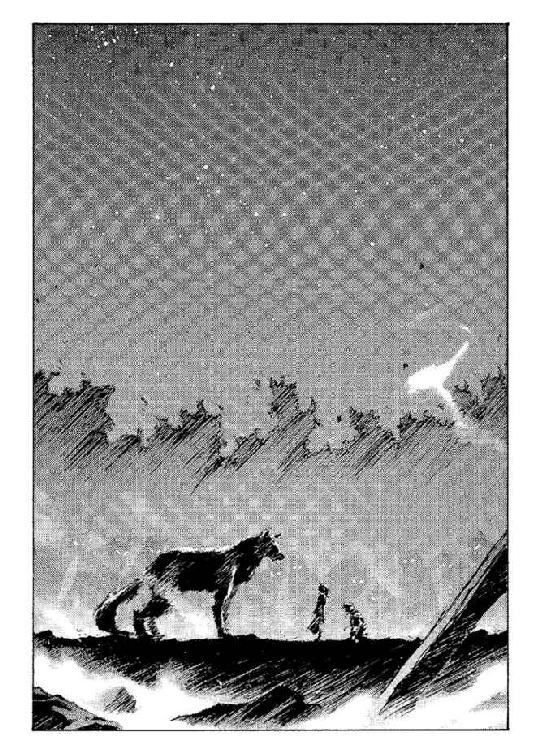
「マクドガルが死んだんだ。もう誰も、お前らの聖域なんぞを侵そうとは考えないさ。あまつさえ、こんだけの力を見せつけられたんだ......」
《我らは危険性のことを説いているのではない──罪と罰について言っているのだ》
脂汗を浮かべて、オーフェンは言った。
「これだけ壊せば、十分だろう」
《聖域を侵すことの意味を知っていないから、汝はそう言える......》
「どんな意味があるってんだ──何百もの人間を一瞬で皆殺しにするほどの意味か！」
《まさしく、その通り──》
あまりにもあっさりした返答に、オーフェンが二の句を継げられずにいるうちに、背後から声があがった。
「冗談でしょ！ だいたい、自分の子供も巻き添えにしちゃうような奴は──」
クリーオウだ。オーフェンはあわてて振り向いた。奇襲をかけようとしていたのか、村人たちの陰に隠れていたのを、ぱっと飛び出してくる。彼女は金髪をはためかせ、胸に抱いたディープ・ドラゴンを高く掲げた──
「やっちゃいなさい！」
叫ぶ。いや、子ドラゴンに命令したのだろうが。
刹那、子ドラゴンの小さな瞳が膨大な輝きを放った。輝きは一瞬で、巨大なドラゴンの群れの足元に突き刺さると、そのまま、さらに数千倍にも膨れ上がった。空間をもひしゃげるディープ・ドラゴンの暗黒魔術が、視界のすべてを一掃する。
地鳴りがとどろき──そして、遠ざかり、次の瞬間には、すべてのディープ・ドラゴンは消えうせていた。あの一撃で死んだわけがない。恐らくは、転移して逃げたのだろうが。ふうっ──と、風だけが通るその虚空に、静かな声が残る......
《この通りだよ、人間の魔術士よ......その子のように、我らは支配されれば、従わねばならぬ......》
「............」
オーフェンは反射的に、クリーオウに抱かれた子ドラゴンに視線を転じた。子ドラゴンは、いつの間にか自分の親にするように、クリーオウの首もとに頭をこすりつけている。
《我らの戦士の力とは、そうした代償の上に得たものだ。それは王も女王も同じ......人間の魔術士よ。汝らはそうした価値を失ったと同時、自由をも得た......》
「............」
誰も、なにも口にしない。
《その自由は、管理できない......なればこそ危険なのだ。我らは、汝らを滅ぼすだろう。我ら種族は、この大陸を護らねばならぬ......》
「だから......なんで、俺に話すんだ、そんなことを」
オーフェンは、棒立ちになってうめいた。ドラゴンが答えてくる──わずかに、勝ちを含んだ口調で。
《言ったであろう。汝を手駒とするため──精神支配を受けようと受けまいと、これで汝は我らの希望通りに動かざるを得まい。汝は──》
「我は放つ光の白刃！」
オーフェンは唐突に叫ぶと、空白の虚空を光熱波で焼き払った──その轟音で、ドラゴンの最後の一言は聞こえない。聞きたくなかった。
そして声は消える。オーフェンは、じっと立ち尽くしていた。焦土を撫でる微風が《森》の枝葉をざわめかせる。
誰も、意味のある言葉は吐かなかった。まだ泣いているフィエナ──すすり泣くのではなく、もっと強く嗚咽している。その背中をたたいてやっているマジクに、助かった安堵から、やはり泣きはじめる村人たち。そしてなついてくるドラゴンを胸に、じっとこちらを見つめているクリーオウ。透き通ったブルーの双眸が、こちらの姿を映しているのが、遠目にもなんとなく想像できた。
オーフェンは、じっと無表情ですべてのものを見回した。そして視線を上に転じる。ようやく朝になりはじめた空は、極端なグラデーションに波打っていた。
「......ドラゴン種族は昔、人間の魔術士を滅ぼすために、人間を使ったことがあるんです。人間に、魔術で造った武器を与えて──中には、人間そのものを戦闘のための人形にもしたんだそうですよ......この村は、そのための人間を集めておく、生け簀みたいなものだったんです。村人たちは、その末裔......だから、純粋なドラゴン信仰者と言えるかもしれませんね」
落ち着いたフィエナの説明を聞きながら、オーフェンはどうでもいいことだと思っていた。もっとほかに、考えることはいくらでもある。
あれから数時間経つのに、いまだ出立の準備はできていなかった。
村が焦土と化したため、持ち出さなければならないような荷物はなにひとつない──のだが、それでも村人たちは時間を欲しがった。今まで住んできた場所を後にするために、必要とする時間を。
誰も、この場所に残って再び住処を築こうとする者はいなかった。自らのドラゴン信仰が崩れたからだけではない──それだけなら、まだ頑固にここに残ろうとする者はいただろう。すべては時間にすればほんの短い、フィエナの説得によるものだった。彼女が、外の世界のことを話したのだ。
黒焦げになった土を踏みながら、自分達の家があったであろう場所を、村人たちは思い思いに眺めている。その村人たちを、さらに眺めて、オーフェンは横にいるフィエナに聞いた。
「ところで、これからどこへ行くんだ？ これだけの人数を連れて」
「......わたしの村に帰ろうかと思っています。ソリチアンに。そこが気に入らない人がいたら、このあたりは、小さな村がたくさんありますから、そっちを案内して。どの村も、むしろ人手は欲しいでしょうから、落ち着く先に困ることはないと思いますよ」
「そいつは、君が考えたわけ？」
にやとしてオーフェンが聞くと、彼女は、手を口元に当ててくすっと笑った。
「マジクが、そう言ってたんです。だから、あんまり気に病むなって」
「......もう、ドラゴン種族の支配は？」
「受けてません。少なくとも──強くは」
と、彼女は、すっと静かな表情を作ってみせた。
「魔術の力もなくなっちゃいましたけど、でも......なんていうか、必要ないって分かった気がします。あなただって、とても敵わないはずのドラゴンを相手に戦ったんですし......そういうことですよね」
「さあな」
と、オーフェンは肩をすくめてごまかした。続けて聞く。
「別に、こんなこと知りたいわけでもねえんだけどよ。君は......ドラゴン種族の聖域のある場所を知っているのかな」
聞かれて、フィエナは、さっと首を横に振った。
「いいえ。《偉大なる心臓》──聖域のことに関しては、ドラゴンはなにも話してくれませんでした。ひょっとしたらあの子なら、なにか知っているのかもしれませんけど」
と、彼女が指さしたのは、村人たちの中からこちらに向かってくるマジクとクリーオウ──その足元をぱたぱたとついてくる、小さなディープ・ドラゴンだった。あまり真っすぐに歩けないらしく、ふらふらと曲がっては、でんぐり返しをしてブレーキをかけている。それでも挙動が速いため、クリーオウらの歩速と変わらないのだが。
「あの......」
クリーオウを見ているこちらの胸中を読んだのか──彼女には、もう魔術の力はないはずだが──、フィエナが声をあげる。こちらに気遣うように。
「あなたが、あの爆発のときに叫んだことは、誰も聞いていなかったと思いますよ。だから──」
そのあとは口に出さず、フィエナはクリーオウらを出迎えるように、歩きだした。クリーオウとはすれ違って、マジクの前で足を止める。マジクも立ち止まって、なにやら話しはじめたようだった。
クリーオウとドラゴンだけが、こちらに近寄ってくる。彼女は、疲れたというようにため息をついた。同時に、口を開く。
「これ......見つけたわ。返す」
と、彼女が投げてよこしたのは、彼のペンダントだった──剣にからみついた、一本脚のドラゴンの紋章。オーフェンはそれを受け取って、壊れた鎖をもてあそびながら、彼女に視線を返した。
「あの地人たち、探してみたけど、村人たちの中にはいなかったわよ。あの騒ぎだったもの──ひょっとして、その......逃げられなかったんじゃないかしら」
言い終わるころには、彼女はもう目の前に来ていた。オーフェンは、はは、と笑ってそれを否定した。紋章をポケットの中に落としながら、
「馬鹿こけよ──あいつらが死ぬかって。なんとなりゃ、その辺に穴でも掘って生き延びられるよーな奴らだ」
「......ンなわきゃないでしょ。モグラじゃないんだから」
と、疑わしげにクリーオウ。が、オーフェンは取り合わなかった。金髪に覆われた彼女の頭に、ぽんと手を置いて、
「疲れたよ......ホントにさ。あとで例のマッサージを頼みたいな」
一拍おいて、クリーオウは、瞳をぱちくりとさせた。
「ホント？ あれ、やだって言ってたじゃない」
「いや......考えてみれば、あのくらいじゃないと効かねえんだよな」
「そう？」
クリーオウはなにやら嬉しげに──暴行魔が人を殴るときに見せる笑みにも似ているような気がしたが──うなずいた。と、オーフェンは軽く手で制して、
「あ、でも、俺より先に、マジクの奴にやってやってほしいな。全力で」
「そ......そう？」
で、俺の番になったら逃げればいいや、とオーフェンはこっそり考えた。クリーオウは、にこにこと続けている。
「もち、やるなら全力よ。お父様も、死ぬほど頑張れば死ぬことはないのだ、て言いながら泡吐いて卒倒しちゃったのが病気の発端だったし。よく分かんないけど」
「............」
オーフェンはなにも答えずに、クリーオウの頭を押さえたまま遠くを見やった。四方を囲む《森》──この大陸の二割までも覆う、巨大な樹海。そしてそのどこかに、ドラゴン種族たちの聖域が──秘密が隠されている。
《我らの望みどおりに動かざるを得まい──》
ドラゴンの言葉が、耳の中に蘇る。
（だが、お前らは、なによりもそれを恐れている──）
オーフェンはひとりでくりかえした。
（お前らは、俺に賭けたんだ。賭けってのは、どちらに転んでも福と禍が両方あるもんさ）
ならば──
と、クリーオウが声をあげる。
「オーフェン......」
「ん？」
「痛い」
言いながら、彼女は頭の上のオーフェンの手を握った。どうやら、我知らず力を込めてしまったらしい。
「ああ──悪い」
と、オーフェンは手をどかした。と、声があがる──
「みなさぁん！ そろそろ出発します！ 日が暮れないうちに《森》を出なければなりませんから──レンジャーの方が道案内をしてくれますから、絶対にはぐれないように──」
フィエナだ。マジクも横で、同じことをくりかえしている。
「お師様あ！ 行きますよぅ！」
「ああ」
と、オーフェンは手を振って答えた。
すべてを決心したのだ。身体も軽いし、腕も軽かった。
◆◇◆◇◆
そして誰もいなくなって──
数分前までオーフェンが立っていた地面が、もりっと盛り上がった。焦げた土を撒き散らして、地面からぼさぼさの頭が飛び出してくる。
「うべほっ！──うぺっ──げほげほっ！」
口と鼻から土を吐き出し、咳き込んで、ボルカンは身体をはたいた。真っ黒の顔をこすって、わめく。
「うう──息ができないのが、こんなに苦しいもんだとは！」
それに答えるように、ボルカンの埋まっているさらに下から、
「知っててよぅ。そのくらいは......」
「たわけもの！ 息ができないなんぞ、初めての体験だったんだぞ！」
と、怒鳴りながら、剣の鞘を足元に突き立てる。ぶぎゃ、という悲鳴が穴の中から響いた。構わずに、彼は続けた。
「くそったれが──あの極道魔術士が、人の上でのんびり立ち話なんぞしやがって！ 死んだらどーするつもりだ、あの人殺し！ 天井の染み数え殺すぞ！」
「......なら、兄さんもぼくの頭の上でわめくのやめてよ......」
「揚げ足をとるなっ！」
再び、鞘で突く。今度は悲鳴はあがらなかったが、代わりにため息が聞こえた。
ボルカンは、のろのろと穴からはい出した。身体中泥だらけだが、普段と大差ないと言えば大差ない。
「むう──それにしても、恐るべきは金貸し魔術士。幾多の強豪を打ち倒しても、しょせん最後に立ちはだかるのはあの外道野郎か」
「誰も倒してないのに......」
ぶつぶつ言いながら、ドーチンも穴から顔を出す──が、ボルカンがぎろりとにらみつけると、あきらめたようにまた穴の中にもどっていった。
ボルカンは、ひとりで続ける。
「しかぁし！ 勝つのはこのマスマテュリアの闘犬、ボルカノ・ボルカン様よ！ あの愚か者め、どうしてくれるか見てろよ──」
「どーせ、遠くから見つめ殺すとか、雲に乗って流れ殺すとか、そーゆうのでしょ......」
「ンなことをするかっ！」
穴の中からのつぶやきに、ボルカンは叫ぶ。
「することはひとつ！ 俺の力を思い知らせてやる！」
「......どーすんのさ」
まだ穴から顔は出さず、ドーチン。ボルカンは得意げに続けた。あさっての方向に指をさして。
「決まっているだろう！ 奴は重大なミスを犯した──殺人だ！ とりあえず《牙の塔》に行って、奴の忌むべき犯罪を告げ口してくれる！」
「......あくまで他力本願なわけね......マクドガルを殺したのがあの人じゃないってのは、ちゃんと見てたはずだけど......」
「はあーっはっはっ！ そのよーな世論、恐れはせんぞぉっ！」
動揺のカケラすら見せず、ボルカンは叫ぶ。ようやく穴から顔を出して、ドーチンはつぶやいた。どことなく捨て鉢な口調で。
「そーだね。でもその名案を実行するには、とりあえず、この《森》から抜け出す道を探さないとね。どーすんの？」
「......うっ──」
ボルカンの哄笑が、凍りつく。
《フェンリルの森》──戦士たちの故郷。
キエサルヒマ大陸最後の──そして永遠の──秘境。巨大にして無言の大樹海は、なにも答えず、焦土の傷跡をどう癒そうか、そんなことをじっと考えているようだった。
「どうもこんにちは......本巻の巻末を担当させていただきますフィエナです。若輩者にて僭越ではありますが最後までお付き合いいただければ──あれ？ どしたんですか？」
「（作者）......いや、その......今回は進行のほうがテンション低いなー、と思って、あっけに取られてしまった」
「わたし、テンション低いですか？」
「うーん......こーゆう雰囲気は苦手なんだよなぁ」
「............」
「............」
「......こうなったら配役交替──」
「さあ！ 枚数も少ないことですし、はしはし行きましょう！ 巻末の進行は『考えてみると今までの巻末キャラでヒロインらしいヒロインはわたししかいないぞ』フィエナでぇーすっ！ 十四歳、やぎ座のＡ型──」
「（......このパターンか）なんだかなぁ。で、ぼくが作者の──」
「身長百五十一センチ、スリーサイズはヒ・ミ・ツ♥（実は計ってない）趣味はボートと水遊び♪ チャームポイントは『見えないところに隠してます』♥」
「いや、あの──」
「ちなみにこれが足型よ♥ というわけでわたしの足型付きサイン色紙、読者プレゼントの宛て先は──」
「やかましい！ と叫びつつ宮戸のソバットぉっ！」
「ひああああああっ！」
「エンジンかけると止まらんのか、このクソアマ！」
「い、いーじゃない。ちょっとくらい自己主張したって......」
「一発使い捨てキャラのプロフィールなぞいらんわっ！」
「ひ、ひどい（泣）」
「ったく、つまらんことで枚数使わしおって......」
「いつか復活してやる......（ぶつぶつ）」
「無理だ無理（笑）。さて気を取り直して、気が付いたら本屋さんで四冊目まで、むくむく増殖いたしました、このシリーズでございます。読者の皆様方におきましてはご愛顧のほど、毎日毎夜多謝いたしております作者ですが（ホントですよ）」
「にしても、ホントに『気が付いたら』よねー」
「実はこの巻で、このシリーズが世に出てから一周年となるわけですが」
「一年で四冊......シリーズ物のペースとしちゃ、まあまあってトコかしら。連載もあるし」
「けっこー頑張ったんだけどなぁ。もっとペースを上げようとはしてるんですけどね」
「ま、それはそれとしてちょっと怖いのは......」
「なに？」
「この巻の内容なんだけど、秘境の秘密宗教結社、人質の拉致、銃の密造......って、どこかで聞いたようなネタがずらずらと出てくるのよね」
「ゔ......いまいちしゃれになっとらんが──でも、一応断わっておくと、この話のプロットを作ったのって、去年の十二月のことなんだよ。それに実際の内容にしてみれば、あんま関係ないんだし」
「まあ、そうなんだけどね──とか言いつつ、これでまた次の巻で、地震発生装置を作った某国軍に対して謎の宗教結社が告訴する、とかいうネタ出したら、さすがにわたしも怒るわよ」
「......怒ったところで、もう出番なんてないじゃん、お前」
「あ、あー！ またそーゆうことをっ！」
「だいたい、この巻末に出てきたキャラクターは二度と出番がないことになっておるのだ。実は。だから一巻の巻末にアザリーが出てこなかったのさ」
「うっ......そんな罠があったとは......！」
「もう遅い。しかも今回の巻末もそろそろ終わりが近づいておる。遺言くらいは言わせてやろう。ほれほれ」
「なんちゅー性格悪......でもヒロインは負けないのよ！ 全国のわたしの虜さん♥たち──わたしの復活支援ハガキは、編集部気付で受け付けております♥」
「ないないッ！ ンなものっ！ と叫びつつ──」
「甘いわよ！ 迎撃！ 栗栖正伸の椅子攻撃ぃっ！」
「どああああああっ！」
秋田禎信
本書は、富士見ファンタジア文庫（富士見書房）で１９９５年１月に刊行された「魔術士オーフェンはぐれ旅 我が胸で眠れ亡霊」と、１９９５年５月に刊行された「魔術士オーフェンはぐれ旅 我が森に集え狼」に収録された作品を、再編集したものです。
この作品はＴＯブックス（株式会社ティー・オーエンタテインメント）「魔術士オーフェンはぐれ旅 新装版２」（２０１１年10月31日初版第１刷発行）に基づいて制作されました。
魔術士オーフェンはぐれ旅 新装版２
発行日 ２０１１年10月31日初版第１刷
著 者 秋田禎信
発行者 柴田 維
発行所 ＴＯブックス（株式会社ティー・オーエンタテインメント）
〒150-0011
東京都渋谷区東３丁目13番11号 フロンティア恵比寿４Ｆ
TEL：03-6427-9625
URL：http://www.tobooks.jp
©2011 Yoshinobu Akita
本作品の内容を無断で複製・複写・放送・データ配信などすることは、固くお断りいたします。